In [55]:
# This Python 3 environment comes with many helpful analytics libraries installed
# It is defined by the kaggle/python Docker image: https://github.com/kaggle/docker-python
# For example, here's several helpful packages to load
import numpy as np # linear algebra
import pandas as pd # data processing, CSV file I/O (e.g. pd.read_csv)
# Input data files are available in the read-only "../input/" directory
# For example, running this (by clicking run or pressing Shift+Enter) will list all files under the input directory
import os
for dirname, _, filenames in os.walk('/kaggle/input'):
for filename in filenames:
print(os.path.join(dirname, filename))
# You can write up to 20GB to the current directory (/kaggle/working/) that gets preserved as output when you create a version using "Save & Run All"
# You can also write temporary files to /kaggle/temp/, but they won't be saved outside of the current session
/kaggle/input/remote-sensing-satellite-images/Remote Sensing Data.v2i.yolov8/README.dataset.txt /kaggle/input/remote-sensing-satellite-images/Remote Sensing Data.v2i.yolov8/README.roboflow.txt /kaggle/input/remote-sensing-satellite-images/Remote Sensing Data.v2i.yolov8/data.yaml /kaggle/input/remote-sensing-satellite-images/Remote Sensing Data.v2i.yolov8/valid/labels/332_jpg.rf.82572427506bb0314745efb56ffdbef7.txt /kaggle/input/remote-sensing-satellite-images/Remote Sensing Data.v2i.yolov8/valid/labels/539_jpg.rf.a48c85cb3d29efd40c05b75afaf3d733.txt /kaggle/input/remote-sensing-satellite-images/Remote Sensing Data.v2i.yolov8/valid/labels/782_jpg.rf.d085bc46ccccfd4cb2d23d498f38aea2.txt /kaggle/input/remote-sensing-satellite-images/Remote Sensing Data.v2i.yolov8/valid/labels/156_jpg.rf.5641c535b1ad00a956046413d887d707.txt /kaggle/input/remote-sensing-satellite-images/Remote Sensing Data.v2i.yolov8/valid/labels/671_jpg.rf.3e664cfb0e8e9c99db8216997badf0ae.txt /kaggle/input/remote-sensing-satellite-images/Remote Sensing Data.v2i.yolov8/valid/labels/464_jpg.rf.2f27509929598475a5c41626bf23f4e2.txt /kaggle/input/remote-sensing-satellite-images/Remote Sensing Data.v2i.yolov8/valid/labels/216_jpg.rf.d324f627bd894bfe24fcc8d40931cebe.txt /kaggle/input/remote-sensing-satellite-images/Remote Sensing Data.v2i.yolov8/valid/labels/791_jpg.rf.0c55c5f09e59874cfe8667a9d906606b.txt /kaggle/input/remote-sensing-satellite-images/Remote Sensing Data.v2i.yolov8/valid/labels/271_jpg.rf.35c202405cb866ca7b3ef501f92925f3.txt /kaggle/input/remote-sensing-satellite-images/Remote Sensing Data.v2i.yolov8/valid/labels/538_jpg.rf.3a61370533b7b184768fceb05ae3b84a.txt /kaggle/input/remote-sensing-satellite-images/Remote Sensing Data.v2i.yolov8/valid/labels/110_jpg.rf.404bba5576a9ecf3aa8d2332e0c3c7dd.txt /kaggle/input/remote-sensing-satellite-images/Remote Sensing Data.v2i.yolov8/valid/labels/288_jpg.rf.464a1d664c653d6778a341dd400bc34c.txt /kaggle/input/remote-sensing-satellite-images/Remote Sensing Data.v2i.yolov8/valid/labels/325_jpg.rf.5104a35fdfcb7aec41e39cb86d3ea070.txt /kaggle/input/remote-sensing-satellite-images/Remote Sensing Data.v2i.yolov8/valid/labels/113_jpg.rf.b1a6d591e158cd9c2c2ae53675ef74ab.txt /kaggle/input/remote-sensing-satellite-images/Remote Sensing Data.v2i.yolov8/valid/labels/549_jpg.rf.4923aab768ce4ca2be01401863b70373.txt /kaggle/input/remote-sensing-satellite-images/Remote Sensing Data.v2i.yolov8/valid/labels/757_jpg.rf.aa6f63738ae44af7a6aaf1817698aaaa.txt /kaggle/input/remote-sensing-satellite-images/Remote Sensing Data.v2i.yolov8/valid/labels/136_jpg.rf.3446b92e7f2512507ab1e22c3a4b2801.txt /kaggle/input/remote-sensing-satellite-images/Remote Sensing Data.v2i.yolov8/valid/labels/505_jpg.rf.89a3a4e23974c11fd750b799ad081d73.txt /kaggle/input/remote-sensing-satellite-images/Remote Sensing Data.v2i.yolov8/valid/labels/509_jpg.rf.22c829f776e271a4f51b80da92a54231.txt /kaggle/input/remote-sensing-satellite-images/Remote Sensing Data.v2i.yolov8/valid/labels/522_jpg.rf.f2a9ce8fb251c1105c444263660b5ba5.txt /kaggle/input/remote-sensing-satellite-images/Remote Sensing Data.v2i.yolov8/valid/labels/772_jpg.rf.260a0b95698cf71eb083daa0f6a6f2c9.txt /kaggle/input/remote-sensing-satellite-images/Remote Sensing Data.v2i.yolov8/valid/labels/219_jpg.rf.32e24df0c74e9030cf4c250ec0a97aae.txt /kaggle/input/remote-sensing-satellite-images/Remote Sensing Data.v2i.yolov8/valid/labels/452_jpg.rf.1f16803e93fcd16f434f8755b5b6e4c9.txt /kaggle/input/remote-sensing-satellite-images/Remote Sensing Data.v2i.yolov8/valid/labels/079_jpg.rf.89b19346aed488f8a54e8cf35720aa8e.txt /kaggle/input/remote-sensing-satellite-images/Remote Sensing Data.v2i.yolov8/valid/labels/255_jpg.rf.91f25114aaaeed1a3d03cdc87bc02521.txt /kaggle/input/remote-sensing-satellite-images/Remote Sensing Data.v2i.yolov8/valid/labels/552_jpg.rf.737389d49d80c013f4956aeed77084ac.txt /kaggle/input/remote-sensing-satellite-images/Remote Sensing Data.v2i.yolov8/valid/labels/182_jpg.rf.f19ce7812284e800704bfc7170246a13.txt /kaggle/input/remote-sensing-satellite-images/Remote Sensing Data.v2i.yolov8/valid/labels/377_jpg.rf.fcfa16ea680e9470ac734d1b4eaf83ce.txt /kaggle/input/remote-sensing-satellite-images/Remote Sensing Data.v2i.yolov8/valid/labels/026_jpg.rf.5035be1e8842a56507e323b9c2adfa8e.txt /kaggle/input/remote-sensing-satellite-images/Remote Sensing Data.v2i.yolov8/valid/labels/375_jpg.rf.d740c860c0488dd6e79197c0ad9ca180.txt /kaggle/input/remote-sensing-satellite-images/Remote Sensing Data.v2i.yolov8/valid/labels/762_jpg.rf.dbdcb121f6d385d2473c373d0ce8cf0a.txt /kaggle/input/remote-sensing-satellite-images/Remote Sensing Data.v2i.yolov8/valid/labels/144_jpg.rf.c4d0be2f5f249005ca79188130d38fd1.txt /kaggle/input/remote-sensing-satellite-images/Remote Sensing Data.v2i.yolov8/valid/labels/436_jpg.rf.42a22a9525b7b1257352d84204cf8474.txt /kaggle/input/remote-sensing-satellite-images/Remote Sensing Data.v2i.yolov8/valid/labels/568_jpg.rf.b01015991d870eedc524d9e313620225.txt /kaggle/input/remote-sensing-satellite-images/Remote Sensing Data.v2i.yolov8/valid/labels/585_jpg.rf.90d958c767a43e9a33aced29a01ea949.txt /kaggle/input/remote-sensing-satellite-images/Remote Sensing Data.v2i.yolov8/valid/labels/463_jpg.rf.696dbc1889c28acb117a715a1cc763f4.txt /kaggle/input/remote-sensing-satellite-images/Remote Sensing Data.v2i.yolov8/valid/labels/277_jpg.rf.85ab71f3c517ccb57e130572302f305c.txt /kaggle/input/remote-sensing-satellite-images/Remote Sensing Data.v2i.yolov8/valid/labels/053_jpg.rf.9b29c0ba84eedb7040a0aa59cc3fb2cb.txt /kaggle/input/remote-sensing-satellite-images/Remote Sensing Data.v2i.yolov8/valid/labels/115_jpg.rf.0e8c8bd147b2483621322d82a910257c.txt /kaggle/input/remote-sensing-satellite-images/Remote Sensing Data.v2i.yolov8/valid/labels/660_jpg.rf.67db55455d8f8410f68bacd4ee64ec8d.txt /kaggle/input/remote-sensing-satellite-images/Remote Sensing Data.v2i.yolov8/valid/labels/315_jpg.rf.0cc77050c4c919a3b253323623083be4.txt /kaggle/input/remote-sensing-satellite-images/Remote Sensing Data.v2i.yolov8/valid/labels/371_jpg.rf.7c00fad3b56a97ba736f3087b78bcaea.txt /kaggle/input/remote-sensing-satellite-images/Remote Sensing Data.v2i.yolov8/valid/labels/789_jpg.rf.de057a4daf44bbfe9a44abeda2c1c964.txt /kaggle/input/remote-sensing-satellite-images/Remote Sensing Data.v2i.yolov8/valid/labels/759_jpg.rf.a783a6b4947bd2207cc2d3529b719969.txt /kaggle/input/remote-sensing-satellite-images/Remote Sensing Data.v2i.yolov8/valid/labels/099_jpg.rf.b3cf31429bf6a21f7cc318962dea9419.txt /kaggle/input/remote-sensing-satellite-images/Remote Sensing Data.v2i.yolov8/valid/labels/489_jpg.rf.dbf90ab6961e988118fc7423f99cb010.txt /kaggle/input/remote-sensing-satellite-images/Remote Sensing Data.v2i.yolov8/valid/labels/761_jpg.rf.f098833126fe4f0f1a414068b45d2aaf.txt /kaggle/input/remote-sensing-satellite-images/Remote Sensing Data.v2i.yolov8/valid/labels/574_jpg.rf.b8e98abe4e2613ae8e5ee3bae58786f4.txt /kaggle/input/remote-sensing-satellite-images/Remote Sensing Data.v2i.yolov8/valid/labels/389_jpg.rf.737e4b8eb4e6fad099a0d46ac66ffef1.txt /kaggle/input/remote-sensing-satellite-images/Remote Sensing Data.v2i.yolov8/valid/labels/444_jpg.rf.3491e6297d7382d8fb48a5e100ef4d50.txt /kaggle/input/remote-sensing-satellite-images/Remote Sensing Data.v2i.yolov8/valid/labels/413_jpg.rf.7398a67d8d35f08b5866c1ad62bc89c7.txt /kaggle/input/remote-sensing-satellite-images/Remote Sensing Data.v2i.yolov8/valid/labels/612_jpg.rf.af82a957d97ff5666d96355958d0d84f.txt /kaggle/input/remote-sensing-satellite-images/Remote Sensing Data.v2i.yolov8/valid/labels/029_jpg.rf.e4fac21749aff0e496a9e8e8df66eadb.txt /kaggle/input/remote-sensing-satellite-images/Remote Sensing Data.v2i.yolov8/valid/labels/775_jpg.rf.b5abf77d77ef06440d2273e049438555.txt /kaggle/input/remote-sensing-satellite-images/Remote Sensing Data.v2i.yolov8/valid/labels/108_jpg.rf.fe0e1fead4a2a84c5e6a3c5d10f3db8c.txt /kaggle/input/remote-sensing-satellite-images/Remote Sensing Data.v2i.yolov8/valid/labels/374_jpg.rf.a17261ae8158d6f4f4fd5cfd428fae70.txt /kaggle/input/remote-sensing-satellite-images/Remote Sensing Data.v2i.yolov8/valid/labels/154_jpg.rf.91b2d2284f3d659cb7c2762321c34141.txt /kaggle/input/remote-sensing-satellite-images/Remote Sensing Data.v2i.yolov8/valid/labels/767_jpg.rf.3098d72f516536169f12b35464b8363d.txt /kaggle/input/remote-sensing-satellite-images/Remote Sensing Data.v2i.yolov8/valid/labels/125_jpg.rf.51ce47ebcc44557e014743aa0f562347.txt /kaggle/input/remote-sensing-satellite-images/Remote Sensing Data.v2i.yolov8/valid/labels/783_jpg.rf.6bbe4e6c3c10b92c70e2f7d91c9df795.txt /kaggle/input/remote-sensing-satellite-images/Remote Sensing Data.v2i.yolov8/valid/labels/232_jpg.rf.dcbd5774a62acd0b205b97403f98d3dd.txt /kaggle/input/remote-sensing-satellite-images/Remote Sensing Data.v2i.yolov8/valid/labels/284_jpg.rf.7eabfad0aea767e2e5ad989187c36b00.txt /kaggle/input/remote-sensing-satellite-images/Remote Sensing Data.v2i.yolov8/valid/labels/783_jpg.rf.96095ab69875cd881aa27f87acee1ecf.txt /kaggle/input/remote-sensing-satellite-images/Remote Sensing Data.v2i.yolov8/valid/labels/357_jpg.rf.12e9c8ae2e0849c320abefc4d7c3bd31.txt /kaggle/input/remote-sensing-satellite-images/Remote Sensing Data.v2i.yolov8/valid/labels/362_jpg.rf.4e53b85ca3cd4c6a764556d62be097e0.txt /kaggle/input/remote-sensing-satellite-images/Remote Sensing Data.v2i.yolov8/valid/labels/299_jpg.rf.91035ad688690e4bd70058944b53bc76.txt /kaggle/input/remote-sensing-satellite-images/Remote Sensing Data.v2i.yolov8/valid/labels/363_jpg.rf.01aedfd62ca0f683bacb2d2351a42cee.txt /kaggle/input/remote-sensing-satellite-images/Remote Sensing Data.v2i.yolov8/valid/labels/133_jpg.rf.ed532de49c471178672adb3c56be6baa.txt /kaggle/input/remote-sensing-satellite-images/Remote Sensing Data.v2i.yolov8/valid/labels/643_jpg.rf.3dcaf75113d2eee7d153df776ebab1c0.txt /kaggle/input/remote-sensing-satellite-images/Remote Sensing Data.v2i.yolov8/valid/labels/544_jpg.rf.b23f3a5ed3d5603119cfd46631de4c43.txt /kaggle/input/remote-sensing-satellite-images/Remote Sensing Data.v2i.yolov8/valid/labels/333_jpg.rf.47595b2f6f92274d9509e91bf480ed5e.txt /kaggle/input/remote-sensing-satellite-images/Remote Sensing Data.v2i.yolov8/valid/labels/111_jpg.rf.a3b79c1f1c4f4accd890d4965317bffc.txt /kaggle/input/remote-sensing-satellite-images/Remote Sensing Data.v2i.yolov8/valid/labels/319_jpg.rf.214202689a29221cf11c754a4122d08a.txt /kaggle/input/remote-sensing-satellite-images/Remote Sensing Data.v2i.yolov8/valid/labels/529_jpg.rf.9364bfa54434724d1b8999a3f75e0387.txt /kaggle/input/remote-sensing-satellite-images/Remote Sensing Data.v2i.yolov8/valid/labels/587_jpg.rf.2d97d154312bb6ebe4bb19fa843311cd.txt /kaggle/input/remote-sensing-satellite-images/Remote Sensing Data.v2i.yolov8/valid/labels/742_jpg.rf.036aee8dc4adfb16c4d800497b47f3c2.txt /kaggle/input/remote-sensing-satellite-images/Remote Sensing Data.v2i.yolov8/valid/labels/584_jpg.rf.fa3d25ce9efcddd36c46af0a71fb7750.txt /kaggle/input/remote-sensing-satellite-images/Remote Sensing Data.v2i.yolov8/valid/labels/739_jpg.rf.467032f74b06e27d6ed02c258df8d6ae.txt /kaggle/input/remote-sensing-satellite-images/Remote Sensing Data.v2i.yolov8/valid/labels/229_jpg.rf.969bdb13e0af3787021efc4e5f476022.txt /kaggle/input/remote-sensing-satellite-images/Remote Sensing Data.v2i.yolov8/valid/labels/376_jpg.rf.502881edd090493b42bab66c37341ff6.txt /kaggle/input/remote-sensing-satellite-images/Remote Sensing Data.v2i.yolov8/valid/labels/618_jpg.rf.8c86b9102d8dd8199607f2ce9c953554.txt /kaggle/input/remote-sensing-satellite-images/Remote Sensing Data.v2i.yolov8/valid/labels/478_jpg.rf.00fea20ef1a0085a2b69e4583d40527b.txt /kaggle/input/remote-sensing-satellite-images/Remote Sensing Data.v2i.yolov8/valid/labels/799_jpg.rf.764e713132f15aa3ac260c8fe87fcaf4.txt /kaggle/input/remote-sensing-satellite-images/Remote Sensing Data.v2i.yolov8/valid/labels/490_jpg.rf.376ba3de7f805a55e7233440d4ea795a.txt /kaggle/input/remote-sensing-satellite-images/Remote Sensing Data.v2i.yolov8/valid/labels/221_jpg.rf.755be8affae1c6206f6b9e67eb8cf2a2.txt /kaggle/input/remote-sensing-satellite-images/Remote Sensing Data.v2i.yolov8/valid/labels/651_jpg.rf.69de43e6821181c88aba98d418fe34e6.txt /kaggle/input/remote-sensing-satellite-images/Remote Sensing Data.v2i.yolov8/valid/labels/350_jpg.rf.e52004bf22d417066dc76da7e5de0e13.txt /kaggle/input/remote-sensing-satellite-images/Remote Sensing Data.v2i.yolov8/valid/labels/606_jpg.rf.2924c4961c54e03779100c38f473c6d4.txt /kaggle/input/remote-sensing-satellite-images/Remote Sensing Data.v2i.yolov8/valid/labels/369_jpg.rf.0af9020307b0aa941c9b8323c81346cd.txt /kaggle/input/remote-sensing-satellite-images/Remote Sensing Data.v2i.yolov8/valid/labels/204_jpg.rf.ee08a80f3b5a24f696a270a6e2173179.txt /kaggle/input/remote-sensing-satellite-images/Remote Sensing Data.v2i.yolov8/valid/labels/152_jpg.rf.f44ae88300ad956db88b92d704b9b575.txt /kaggle/input/remote-sensing-satellite-images/Remote Sensing Data.v2i.yolov8/valid/labels/624_jpg.rf.94a91fe02f79d8f7556187d02016bb14.txt /kaggle/input/remote-sensing-satellite-images/Remote Sensing Data.v2i.yolov8/valid/labels/481_jpg.rf.8f37065635ef8593def57f2a3d3949a4.txt /kaggle/input/remote-sensing-satellite-images/Remote Sensing Data.v2i.yolov8/valid/labels/356_jpg.rf.70df0381d19b9e64947342747cf238e1.txt /kaggle/input/remote-sensing-satellite-images/Remote Sensing Data.v2i.yolov8/valid/labels/604_jpg.rf.a31d1083b7cb0dbd90de6132733346fd.txt /kaggle/input/remote-sensing-satellite-images/Remote Sensing Data.v2i.yolov8/valid/labels/577_jpg.rf.15239d10b12683959f6b82873040d559.txt /kaggle/input/remote-sensing-satellite-images/Remote Sensing Data.v2i.yolov8/valid/labels/011_jpg.rf.7750b042f7a5eac10bf3e8a51c783817.txt /kaggle/input/remote-sensing-satellite-images/Remote Sensing Data.v2i.yolov8/valid/labels/270_jpg.rf.f300bea5ca5528a00b91d04875a63eb9.txt /kaggle/input/remote-sensing-satellite-images/Remote Sensing Data.v2i.yolov8/valid/labels/271_jpg.rf.96859d4272f3def66a20e224a7d284fa.txt /kaggle/input/remote-sensing-satellite-images/Remote Sensing Data.v2i.yolov8/valid/labels/644_jpg.rf.61879d0571465a1ec9ea1597e1bf84a1.txt /kaggle/input/remote-sensing-satellite-images/Remote Sensing Data.v2i.yolov8/valid/labels/452_jpg.rf.563af35498c0882b3f046e404cc9882f.txt /kaggle/input/remote-sensing-satellite-images/Remote Sensing Data.v2i.yolov8/valid/labels/123_jpg.rf.df787daeac20abe27b12d2929220feae.txt /kaggle/input/remote-sensing-satellite-images/Remote Sensing Data.v2i.yolov8/valid/labels/692_jpg.rf.9751a8b3b32544f21a1ef5f6f0bb777b.txt /kaggle/input/remote-sensing-satellite-images/Remote Sensing Data.v2i.yolov8/valid/labels/646_jpg.rf.6da1a83f666b1330b15d51f4f8ae3fe3.txt /kaggle/input/remote-sensing-satellite-images/Remote Sensing Data.v2i.yolov8/valid/labels/787_jpg.rf.30b94029e4079fa54e8d9c975d9fdb74.txt /kaggle/input/remote-sensing-satellite-images/Remote Sensing Data.v2i.yolov8/valid/labels/640_jpg.rf.4a12970299c5c87bf990c7aaf976e14a.txt /kaggle/input/remote-sensing-satellite-images/Remote Sensing Data.v2i.yolov8/valid/labels/188_jpg.rf.af86227ae90b96d5c0fe151dae13a838.txt /kaggle/input/remote-sensing-satellite-images/Remote Sensing Data.v2i.yolov8/valid/labels/428_jpg.rf.c9b53138a175da8639c3af231d9c7f23.txt /kaggle/input/remote-sensing-satellite-images/Remote Sensing Data.v2i.yolov8/valid/labels/023_jpg.rf.7c92f2c48e55b738e814be3883856016.txt /kaggle/input/remote-sensing-satellite-images/Remote Sensing Data.v2i.yolov8/valid/labels/311_jpg.rf.12afaf650a800bcf2e87eb15f9856dc7.txt /kaggle/input/remote-sensing-satellite-images/Remote Sensing Data.v2i.yolov8/valid/labels/773_jpg.rf.21033fb310746a5c8d250632abe5036d.txt /kaggle/input/remote-sensing-satellite-images/Remote Sensing Data.v2i.yolov8/valid/labels/629_jpg.rf.d4347b1590a95344f29394ad3ea5ff7f.txt /kaggle/input/remote-sensing-satellite-images/Remote Sensing Data.v2i.yolov8/valid/labels/233_jpg.rf.b1241577b4a31be1f9a8e4b83a1acb78.txt /kaggle/input/remote-sensing-satellite-images/Remote Sensing Data.v2i.yolov8/valid/labels/781_jpg.rf.6ff20886f13f2a9149e47c3c395119d0.txt /kaggle/input/remote-sensing-satellite-images/Remote Sensing Data.v2i.yolov8/valid/labels/660_jpg.rf.0034577718ad905072beb55aa5099e4d.txt /kaggle/input/remote-sensing-satellite-images/Remote Sensing Data.v2i.yolov8/valid/labels/556_jpg.rf.27aa49f9f7bc6cde12a4631a3536a68c.txt /kaggle/input/remote-sensing-satellite-images/Remote Sensing Data.v2i.yolov8/valid/labels/572_jpg.rf.f5b417ca861b8a4b77c5904f20fc9802.txt /kaggle/input/remote-sensing-satellite-images/Remote Sensing Data.v2i.yolov8/valid/labels/120_jpg.rf.5d93c12ea07ca172ae86545af3671cac.txt /kaggle/input/remote-sensing-satellite-images/Remote Sensing Data.v2i.yolov8/valid/labels/228_jpg.rf.a44b9b3e2e1f0acd5d47b9bf096e9651.txt /kaggle/input/remote-sensing-satellite-images/Remote Sensing Data.v2i.yolov8/valid/labels/542_jpg.rf.f3d1b51e02499214a9c32a4e8951f065.txt /kaggle/input/remote-sensing-satellite-images/Remote Sensing Data.v2i.yolov8/valid/labels/741_jpg.rf.0537811015486cd21acdb60242f74d06.txt /kaggle/input/remote-sensing-satellite-images/Remote Sensing Data.v2i.yolov8/valid/labels/418_jpg.rf.e0f36074d329f527197e06904ffa90ca.txt /kaggle/input/remote-sensing-satellite-images/Remote Sensing Data.v2i.yolov8/valid/labels/020_jpg.rf.3c67ac3f786df622523a573a7e9c890c.txt /kaggle/input/remote-sensing-satellite-images/Remote Sensing Data.v2i.yolov8/valid/labels/009_jpg.rf.611b3c247d8e7f7e2ad1a969813535e2.txt /kaggle/input/remote-sensing-satellite-images/Remote Sensing Data.v2i.yolov8/valid/labels/622_jpg.rf.14132c340a3146ea06cf480c7b48df86.txt /kaggle/input/remote-sensing-satellite-images/Remote Sensing Data.v2i.yolov8/valid/labels/416_jpg.rf.ecd91fb68d9d8d2d6a50ef1e3fedacfb.txt /kaggle/input/remote-sensing-satellite-images/Remote Sensing Data.v2i.yolov8/valid/labels/489_jpg.rf.cef99ca11e4e9d8c6f4da7bfa52880b7.txt /kaggle/input/remote-sensing-satellite-images/Remote Sensing Data.v2i.yolov8/valid/labels/188_jpg.rf.2b732046c19e544d6ab463f2c7be700f.txt /kaggle/input/remote-sensing-satellite-images/Remote Sensing Data.v2i.yolov8/valid/labels/755_jpg.rf.6331d1e832ae089873a84b04a8ca0dc5.txt /kaggle/input/remote-sensing-satellite-images/Remote Sensing Data.v2i.yolov8/valid/labels/755_jpg.rf.4ec83ad8b32131f40d3b9e7826d5ef71.txt /kaggle/input/remote-sensing-satellite-images/Remote Sensing Data.v2i.yolov8/valid/labels/512_jpg.rf.94a760aad70fe4a1286d823f7e043cd3.txt /kaggle/input/remote-sensing-satellite-images/Remote Sensing Data.v2i.yolov8/valid/labels/292_jpg.rf.f2101dd92bb51c5a4d99481d182844a2.txt /kaggle/input/remote-sensing-satellite-images/Remote Sensing Data.v2i.yolov8/valid/labels/438_jpg.rf.428587706ea26cd16b3a5b79ba045ba3.txt /kaggle/input/remote-sensing-satellite-images/Remote Sensing Data.v2i.yolov8/valid/labels/596_jpg.rf.1b6fa46a3793248eb7bf5619fe7bcbea.txt /kaggle/input/remote-sensing-satellite-images/Remote Sensing Data.v2i.yolov8/valid/labels/462_jpg.rf.b511b2105a75d5761cff14e8282207ca.txt /kaggle/input/remote-sensing-satellite-images/Remote Sensing Data.v2i.yolov8/valid/labels/007_jpg.rf.2c27750dfeb2de3ad3bd6368e7aadfd7.txt /kaggle/input/remote-sensing-satellite-images/Remote Sensing Data.v2i.yolov8/valid/labels/241_jpg.rf.3cf992a3cb94ba5d558d117d7f34f91d.txt /kaggle/input/remote-sensing-satellite-images/Remote Sensing Data.v2i.yolov8/valid/labels/394_jpg.rf.a4f29f186d18af1ce569028274bd639c.txt /kaggle/input/remote-sensing-satellite-images/Remote Sensing Data.v2i.yolov8/valid/labels/724_jpg.rf.3081ae91b1a638b7158bd174e2bdb50b.txt /kaggle/input/remote-sensing-satellite-images/Remote Sensing Data.v2i.yolov8/valid/labels/378_jpg.rf.ce9e707a1bd16fffc04bd6b5976c3bf0.txt /kaggle/input/remote-sensing-satellite-images/Remote Sensing Data.v2i.yolov8/valid/labels/571_jpg.rf.0e26cf1098c0815920d60f8a80fb155e.txt /kaggle/input/remote-sensing-satellite-images/Remote Sensing Data.v2i.yolov8/valid/labels/490_jpg.rf.f3c3fe84dbc56876af053d9d74606318.txt /kaggle/input/remote-sensing-satellite-images/Remote Sensing Data.v2i.yolov8/valid/labels/040_jpg.rf.014578e8567e349ea3892e31663c1998.txt /kaggle/input/remote-sensing-satellite-images/Remote Sensing Data.v2i.yolov8/valid/labels/474_jpg.rf.92bf34ff55b4006528073a7279519bef.txt /kaggle/input/remote-sensing-satellite-images/Remote Sensing Data.v2i.yolov8/valid/labels/275_jpg.rf.5e271fc882e6792fd662c0b488db4599.txt /kaggle/input/remote-sensing-satellite-images/Remote Sensing Data.v2i.yolov8/valid/labels/571_jpg.rf.6cb1405197f61305a4849f954e297627.txt /kaggle/input/remote-sensing-satellite-images/Remote Sensing Data.v2i.yolov8/valid/labels/325_jpg.rf.809a4609c9e641dfc2c26991cdfe32b3.txt /kaggle/input/remote-sensing-satellite-images/Remote Sensing Data.v2i.yolov8/valid/labels/561_jpg.rf.717fad0938e6209b2ea7e532784dd7b3.txt /kaggle/input/remote-sensing-satellite-images/Remote Sensing Data.v2i.yolov8/valid/labels/035_jpg.rf.b555f5600ee183747d774e1169fd2590.txt /kaggle/input/remote-sensing-satellite-images/Remote Sensing Data.v2i.yolov8/valid/labels/305_jpg.rf.3b5888a9c0a4bfa44d768fdba1daeb28.txt /kaggle/input/remote-sensing-satellite-images/Remote Sensing Data.v2i.yolov8/valid/labels/036_jpg.rf.2ed6e437a6b4ca3b841f77646c3b1d8a.txt /kaggle/input/remote-sensing-satellite-images/Remote Sensing Data.v2i.yolov8/valid/labels/144_jpg.rf.abcc95a9937ee77c382bcd24a115efe8.txt /kaggle/input/remote-sensing-satellite-images/Remote Sensing Data.v2i.yolov8/valid/labels/664_jpg.rf.6820f6300f1f197eb38944a1a81ebd1d.txt /kaggle/input/remote-sensing-satellite-images/Remote Sensing Data.v2i.yolov8/valid/labels/782_jpg.rf.790b9bc72ff775f7d68c6a4a62465fb9.txt /kaggle/input/remote-sensing-satellite-images/Remote Sensing Data.v2i.yolov8/valid/labels/131_jpg.rf.fda078cdae9753f59b85bcaefda62f31.txt /kaggle/input/remote-sensing-satellite-images/Remote Sensing Data.v2i.yolov8/valid/labels/032_jpg.rf.4f3f90bc37b7a85e560036404ba70266.txt /kaggle/input/remote-sensing-satellite-images/Remote Sensing Data.v2i.yolov8/valid/labels/251_jpg.rf.1fb0e8106fa69f483867eb5e687e93ed.txt /kaggle/input/remote-sensing-satellite-images/Remote Sensing Data.v2i.yolov8/valid/labels/693_jpg.rf.a210ec61d48968fc7623c23629f23cac.txt /kaggle/input/remote-sensing-satellite-images/Remote Sensing Data.v2i.yolov8/valid/labels/386_jpg.rf.a30232d596078faddf48b0dd30ede755.txt /kaggle/input/remote-sensing-satellite-images/Remote Sensing Data.v2i.yolov8/valid/labels/443_jpg.rf.e87194ddbf7930b725bf3f3ace950444.txt /kaggle/input/remote-sensing-satellite-images/Remote Sensing Data.v2i.yolov8/valid/labels/653_jpg.rf.1a024e8ca5835c6453f04bf4650b1812.txt /kaggle/input/remote-sensing-satellite-images/Remote Sensing Data.v2i.yolov8/valid/labels/040_jpg.rf.630a2fac090702733ddba597aa3d3372.txt /kaggle/input/remote-sensing-satellite-images/Remote Sensing Data.v2i.yolov8/valid/labels/580_jpg.rf.e31e0a98a9b4ba0345c74f91eee5c99f.txt /kaggle/input/remote-sensing-satellite-images/Remote Sensing Data.v2i.yolov8/valid/labels/490_jpg.rf.c2a751e5ea9a5719ea11346f840fdf6e.txt /kaggle/input/remote-sensing-satellite-images/Remote Sensing Data.v2i.yolov8/valid/labels/679_jpg.rf.0c5e9cfe458152f458af54dfaeaab1d4.txt /kaggle/input/remote-sensing-satellite-images/Remote Sensing Data.v2i.yolov8/valid/labels/793_jpg.rf.2df4aba5b3434db01c07878db80ce006.txt /kaggle/input/remote-sensing-satellite-images/Remote Sensing Data.v2i.yolov8/valid/labels/114_jpg.rf.95e2948b0f61367650b9b7657047dde2.txt /kaggle/input/remote-sensing-satellite-images/Remote Sensing Data.v2i.yolov8/valid/labels/220_jpg.rf.cc958d2fe0a07224eda1f8e20ad96fb8.txt /kaggle/input/remote-sensing-satellite-images/Remote Sensing Data.v2i.yolov8/valid/labels/527_jpg.rf.28be2987315087227f69511482ba308f.txt /kaggle/input/remote-sensing-satellite-images/Remote Sensing Data.v2i.yolov8/valid/labels/475_jpg.rf.7562313959af58a5f802c2bce392b567.txt /kaggle/input/remote-sensing-satellite-images/Remote Sensing Data.v2i.yolov8/valid/labels/187_jpg.rf.dee7384c3c854eb45bd7e3190d872529.txt /kaggle/input/remote-sensing-satellite-images/Remote Sensing Data.v2i.yolov8/valid/labels/543_jpg.rf.0fb7668ac842ea5f13d2a3b67b5a04b3.txt /kaggle/input/remote-sensing-satellite-images/Remote Sensing Data.v2i.yolov8/valid/labels/580_jpg.rf.966cc227af8bd276400a46f996a7d5ad.txt /kaggle/input/remote-sensing-satellite-images/Remote Sensing Data.v2i.yolov8/valid/labels/623_jpg.rf.0cf66808c2cd2cf17d18f7c439f06a5d.txt /kaggle/input/remote-sensing-satellite-images/Remote Sensing Data.v2i.yolov8/valid/labels/706_jpg.rf.7a37a4cc1de1294ff7b5100973c7a3d7.txt /kaggle/input/remote-sensing-satellite-images/Remote Sensing Data.v2i.yolov8/valid/labels/760_jpg.rf.8ebb9e21e1b090a2163b5d2c28856926.txt /kaggle/input/remote-sensing-satellite-images/Remote Sensing Data.v2i.yolov8/valid/labels/418_jpg.rf.49d437544622c95fa18ac0c719562cd8.txt /kaggle/input/remote-sensing-satellite-images/Remote Sensing Data.v2i.yolov8/valid/labels/738_jpg.rf.b4d6b7fc5ad2d974d9aa14d9c5ee0529.txt /kaggle/input/remote-sensing-satellite-images/Remote Sensing Data.v2i.yolov8/valid/labels/631_jpg.rf.377c73055ea2772da7af9a2aa5137ce5.txt /kaggle/input/remote-sensing-satellite-images/Remote Sensing Data.v2i.yolov8/valid/labels/721_jpg.rf.3468e27fb30532331e57eba83044c440.txt /kaggle/input/remote-sensing-satellite-images/Remote Sensing Data.v2i.yolov8/valid/labels/341_jpg.rf.b811b2f80e4663ccc47aaae433b0c711.txt /kaggle/input/remote-sensing-satellite-images/Remote Sensing Data.v2i.yolov8/valid/labels/585_jpg.rf.a6b0bd98fde1a71c8226343213afa408.txt /kaggle/input/remote-sensing-satellite-images/Remote Sensing Data.v2i.yolov8/valid/labels/646_jpg.rf.e3d50338bcf21eca1055359f16864d01.txt /kaggle/input/remote-sensing-satellite-images/Remote Sensing Data.v2i.yolov8/valid/labels/096_jpg.rf.7b372fa17b6ff41f338e85f836c51f9c.txt /kaggle/input/remote-sensing-satellite-images/Remote Sensing Data.v2i.yolov8/valid/labels/648_jpg.rf.f8262ac23a5360bec5c1db299b0f22f9.txt /kaggle/input/remote-sensing-satellite-images/Remote Sensing Data.v2i.yolov8/valid/labels/698_jpg.rf.82823c5544f15d2cdc010a23e1507e05.txt /kaggle/input/remote-sensing-satellite-images/Remote Sensing Data.v2i.yolov8/valid/labels/082_jpg.rf.709db66173402ce0a6e49dc3c850e723.txt /kaggle/input/remote-sensing-satellite-images/Remote Sensing Data.v2i.yolov8/valid/labels/174_jpg.rf.c9b57c9a2ae22ac0b19d0df66079974b.txt /kaggle/input/remote-sensing-satellite-images/Remote Sensing Data.v2i.yolov8/valid/labels/569_jpg.rf.c873375a960bae63faf23b9f992de87d.txt /kaggle/input/remote-sensing-satellite-images/Remote Sensing Data.v2i.yolov8/valid/labels/713_jpg.rf.75edd068899aa3ec452b1842eb9a1ca7.txt /kaggle/input/remote-sensing-satellite-images/Remote Sensing Data.v2i.yolov8/valid/labels/015_jpg.rf.d9ee09746fe7c026288e471a7794373d.txt /kaggle/input/remote-sensing-satellite-images/Remote Sensing Data.v2i.yolov8/valid/labels/375_jpg.rf.042a1dfa346dc73cc06bb10a25f64f36.txt /kaggle/input/remote-sensing-satellite-images/Remote Sensing Data.v2i.yolov8/valid/labels/759_jpg.rf.be82901327cc7f919972698554f0f2e5.txt /kaggle/input/remote-sensing-satellite-images/Remote Sensing Data.v2i.yolov8/valid/labels/741_jpg.rf.f4518061e84e7d9045c47064252d7a8a.txt /kaggle/input/remote-sensing-satellite-images/Remote Sensing Data.v2i.yolov8/valid/labels/081_jpg.rf.b6d3af1ce52304e235046ffcb9cd290a.txt /kaggle/input/remote-sensing-satellite-images/Remote Sensing Data.v2i.yolov8/valid/labels/705_jpg.rf.401eeac54a8ebea2f6fed010a7b8b030.txt /kaggle/input/remote-sensing-satellite-images/Remote Sensing Data.v2i.yolov8/valid/labels/195_jpg.rf.77834fb8b6fff515a96e35b96d5f6669.txt /kaggle/input/remote-sensing-satellite-images/Remote Sensing Data.v2i.yolov8/valid/labels/593_jpg.rf.98b461ce8343f039f0f8496feaec89f0.txt /kaggle/input/remote-sensing-satellite-images/Remote Sensing Data.v2i.yolov8/valid/labels/346_jpg.rf.37f67b5232109c8db0ca45c0890fe2a8.txt /kaggle/input/remote-sensing-satellite-images/Remote Sensing Data.v2i.yolov8/valid/labels/278_jpg.rf.5fe267b173bb72b6d5ed498208b3c8f6.txt /kaggle/input/remote-sensing-satellite-images/Remote Sensing Data.v2i.yolov8/valid/images/278_jpg.rf.5fe267b173bb72b6d5ed498208b3c8f6.jpg /kaggle/input/remote-sensing-satellite-images/Remote Sensing Data.v2i.yolov8/valid/images/144_jpg.rf.c4d0be2f5f249005ca79188130d38fd1.jpg /kaggle/input/remote-sensing-satellite-images/Remote Sensing Data.v2i.yolov8/valid/images/007_jpg.rf.2c27750dfeb2de3ad3bd6368e7aadfd7.jpg /kaggle/input/remote-sensing-satellite-images/Remote Sensing Data.v2i.yolov8/valid/images/356_jpg.rf.70df0381d19b9e64947342747cf238e1.jpg /kaggle/input/remote-sensing-satellite-images/Remote Sensing Data.v2i.yolov8/valid/images/738_jpg.rf.b4d6b7fc5ad2d974d9aa14d9c5ee0529.jpg /kaggle/input/remote-sensing-satellite-images/Remote Sensing Data.v2i.yolov8/valid/images/079_jpg.rf.89b19346aed488f8a54e8cf35720aa8e.jpg /kaggle/input/remote-sensing-satellite-images/Remote Sensing Data.v2i.yolov8/valid/images/622_jpg.rf.14132c340a3146ea06cf480c7b48df86.jpg /kaggle/input/remote-sensing-satellite-images/Remote Sensing Data.v2i.yolov8/valid/images/509_jpg.rf.22c829f776e271a4f51b80da92a54231.jpg /kaggle/input/remote-sensing-satellite-images/Remote Sensing Data.v2i.yolov8/valid/images/489_jpg.rf.dbf90ab6961e988118fc7423f99cb010.jpg /kaggle/input/remote-sensing-satellite-images/Remote Sensing Data.v2i.yolov8/valid/images/761_jpg.rf.f098833126fe4f0f1a414068b45d2aaf.jpg /kaggle/input/remote-sensing-satellite-images/Remote Sensing Data.v2i.yolov8/valid/images/232_jpg.rf.dcbd5774a62acd0b205b97403f98d3dd.jpg /kaggle/input/remote-sensing-satellite-images/Remote Sensing Data.v2i.yolov8/valid/images/767_jpg.rf.3098d72f516536169f12b35464b8363d.jpg /kaggle/input/remote-sensing-satellite-images/Remote Sensing Data.v2i.yolov8/valid/images/133_jpg.rf.ed532de49c471178672adb3c56be6baa.jpg /kaggle/input/remote-sensing-satellite-images/Remote Sensing Data.v2i.yolov8/valid/images/275_jpg.rf.5e271fc882e6792fd662c0b488db4599.jpg /kaggle/input/remote-sensing-satellite-images/Remote Sensing Data.v2i.yolov8/valid/images/271_jpg.rf.35c202405cb866ca7b3ef501f92925f3.jpg /kaggle/input/remote-sensing-satellite-images/Remote Sensing Data.v2i.yolov8/valid/images/377_jpg.rf.fcfa16ea680e9470ac734d1b4eaf83ce.jpg /kaggle/input/remote-sensing-satellite-images/Remote Sensing Data.v2i.yolov8/valid/images/585_jpg.rf.90d958c767a43e9a33aced29a01ea949.jpg /kaggle/input/remote-sensing-satellite-images/Remote Sensing Data.v2i.yolov8/valid/images/721_jpg.rf.3468e27fb30532331e57eba83044c440.jpg /kaggle/input/remote-sensing-satellite-images/Remote Sensing Data.v2i.yolov8/valid/images/032_jpg.rf.4f3f90bc37b7a85e560036404ba70266.jpg /kaggle/input/remote-sensing-satellite-images/Remote Sensing Data.v2i.yolov8/valid/images/378_jpg.rf.ce9e707a1bd16fffc04bd6b5976c3bf0.jpg /kaggle/input/remote-sensing-satellite-images/Remote Sensing Data.v2i.yolov8/valid/images/375_jpg.rf.042a1dfa346dc73cc06bb10a25f64f36.jpg /kaggle/input/remote-sensing-satellite-images/Remote Sensing Data.v2i.yolov8/valid/images/325_jpg.rf.5104a35fdfcb7aec41e39cb86d3ea070.jpg /kaggle/input/remote-sensing-satellite-images/Remote Sensing Data.v2i.yolov8/valid/images/505_jpg.rf.89a3a4e23974c11fd750b799ad081d73.jpg /kaggle/input/remote-sensing-satellite-images/Remote Sensing Data.v2i.yolov8/valid/images/489_jpg.rf.cef99ca11e4e9d8c6f4da7bfa52880b7.jpg /kaggle/input/remote-sensing-satellite-images/Remote Sensing Data.v2i.yolov8/valid/images/538_jpg.rf.3a61370533b7b184768fceb05ae3b84a.jpg /kaggle/input/remote-sensing-satellite-images/Remote Sensing Data.v2i.yolov8/valid/images/587_jpg.rf.2d97d154312bb6ebe4bb19fa843311cd.jpg /kaggle/input/remote-sensing-satellite-images/Remote Sensing Data.v2i.yolov8/valid/images/082_jpg.rf.709db66173402ce0a6e49dc3c850e723.jpg /kaggle/input/remote-sensing-satellite-images/Remote Sensing Data.v2i.yolov8/valid/images/772_jpg.rf.260a0b95698cf71eb083daa0f6a6f2c9.jpg /kaggle/input/remote-sensing-satellite-images/Remote Sensing Data.v2i.yolov8/valid/images/436_jpg.rf.42a22a9525b7b1257352d84204cf8474.jpg /kaggle/input/remote-sensing-satellite-images/Remote Sensing Data.v2i.yolov8/valid/images/251_jpg.rf.1fb0e8106fa69f483867eb5e687e93ed.jpg /kaggle/input/remote-sensing-satellite-images/Remote Sensing Data.v2i.yolov8/valid/images/011_jpg.rf.7750b042f7a5eac10bf3e8a51c783817.jpg /kaggle/input/remote-sensing-satellite-images/Remote Sensing Data.v2i.yolov8/valid/images/775_jpg.rf.b5abf77d77ef06440d2273e049438555.jpg /kaggle/input/remote-sensing-satellite-images/Remote Sensing Data.v2i.yolov8/valid/images/544_jpg.rf.b23f3a5ed3d5603119cfd46631de4c43.jpg /kaggle/input/remote-sensing-satellite-images/Remote Sensing Data.v2i.yolov8/valid/images/490_jpg.rf.376ba3de7f805a55e7233440d4ea795a.jpg /kaggle/input/remote-sensing-satellite-images/Remote Sensing Data.v2i.yolov8/valid/images/241_jpg.rf.3cf992a3cb94ba5d558d117d7f34f91d.jpg /kaggle/input/remote-sensing-satellite-images/Remote Sensing Data.v2i.yolov8/valid/images/783_jpg.rf.6bbe4e6c3c10b92c70e2f7d91c9df795.jpg /kaggle/input/remote-sensing-satellite-images/Remote Sensing Data.v2i.yolov8/valid/images/698_jpg.rf.82823c5544f15d2cdc010a23e1507e05.jpg /kaggle/input/remote-sensing-satellite-images/Remote Sensing Data.v2i.yolov8/valid/images/311_jpg.rf.12afaf650a800bcf2e87eb15f9856dc7.jpg /kaggle/input/remote-sensing-satellite-images/Remote Sensing Data.v2i.yolov8/valid/images/040_jpg.rf.014578e8567e349ea3892e31663c1998.jpg /kaggle/input/remote-sensing-satellite-images/Remote Sensing Data.v2i.yolov8/valid/images/783_jpg.rf.96095ab69875cd881aa27f87acee1ecf.jpg /kaggle/input/remote-sensing-satellite-images/Remote Sensing Data.v2i.yolov8/valid/images/428_jpg.rf.c9b53138a175da8639c3af231d9c7f23.jpg /kaggle/input/remote-sensing-satellite-images/Remote Sensing Data.v2i.yolov8/valid/images/271_jpg.rf.96859d4272f3def66a20e224a7d284fa.jpg /kaggle/input/remote-sensing-satellite-images/Remote Sensing Data.v2i.yolov8/valid/images/144_jpg.rf.abcc95a9937ee77c382bcd24a115efe8.jpg /kaggle/input/remote-sensing-satellite-images/Remote Sensing Data.v2i.yolov8/valid/images/793_jpg.rf.2df4aba5b3434db01c07878db80ce006.jpg /kaggle/input/remote-sensing-satellite-images/Remote Sensing Data.v2i.yolov8/valid/images/640_jpg.rf.4a12970299c5c87bf990c7aaf976e14a.jpg /kaggle/input/remote-sensing-satellite-images/Remote Sensing Data.v2i.yolov8/valid/images/099_jpg.rf.b3cf31429bf6a21f7cc318962dea9419.jpg /kaggle/input/remote-sensing-satellite-images/Remote Sensing Data.v2i.yolov8/valid/images/394_jpg.rf.a4f29f186d18af1ce569028274bd639c.jpg /kaggle/input/remote-sensing-satellite-images/Remote Sensing Data.v2i.yolov8/valid/images/646_jpg.rf.6da1a83f666b1330b15d51f4f8ae3fe3.jpg /kaggle/input/remote-sensing-satellite-images/Remote Sensing Data.v2i.yolov8/valid/images/332_jpg.rf.82572427506bb0314745efb56ffdbef7.jpg /kaggle/input/remote-sensing-satellite-images/Remote Sensing Data.v2i.yolov8/valid/images/115_jpg.rf.0e8c8bd147b2483621322d82a910257c.jpg /kaggle/input/remote-sensing-satellite-images/Remote Sensing Data.v2i.yolov8/valid/images/759_jpg.rf.be82901327cc7f919972698554f0f2e5.jpg /kaggle/input/remote-sensing-satellite-images/Remote Sensing Data.v2i.yolov8/valid/images/474_jpg.rf.92bf34ff55b4006528073a7279519bef.jpg /kaggle/input/remote-sensing-satellite-images/Remote Sensing Data.v2i.yolov8/valid/images/799_jpg.rf.764e713132f15aa3ac260c8fe87fcaf4.jpg /kaggle/input/remote-sensing-satellite-images/Remote Sensing Data.v2i.yolov8/valid/images/705_jpg.rf.401eeac54a8ebea2f6fed010a7b8b030.jpg /kaggle/input/remote-sensing-satellite-images/Remote Sensing Data.v2i.yolov8/valid/images/418_jpg.rf.49d437544622c95fa18ac0c719562cd8.jpg /kaggle/input/remote-sensing-satellite-images/Remote Sensing Data.v2i.yolov8/valid/images/233_jpg.rf.b1241577b4a31be1f9a8e4b83a1acb78.jpg /kaggle/input/remote-sensing-satellite-images/Remote Sensing Data.v2i.yolov8/valid/images/081_jpg.rf.b6d3af1ce52304e235046ffcb9cd290a.jpg /kaggle/input/remote-sensing-satellite-images/Remote Sensing Data.v2i.yolov8/valid/images/156_jpg.rf.5641c535b1ad00a956046413d887d707.jpg /kaggle/input/remote-sensing-satellite-images/Remote Sensing Data.v2i.yolov8/valid/images/755_jpg.rf.6331d1e832ae089873a84b04a8ca0dc5.jpg /kaggle/input/remote-sensing-satellite-images/Remote Sensing Data.v2i.yolov8/valid/images/624_jpg.rf.94a91fe02f79d8f7556187d02016bb14.jpg /kaggle/input/remote-sensing-satellite-images/Remote Sensing Data.v2i.yolov8/valid/images/188_jpg.rf.2b732046c19e544d6ab463f2c7be700f.jpg /kaggle/input/remote-sensing-satellite-images/Remote Sensing Data.v2i.yolov8/valid/images/543_jpg.rf.0fb7668ac842ea5f13d2a3b67b5a04b3.jpg /kaggle/input/remote-sensing-satellite-images/Remote Sensing Data.v2i.yolov8/valid/images/187_jpg.rf.dee7384c3c854eb45bd7e3190d872529.jpg /kaggle/input/remote-sensing-satellite-images/Remote Sensing Data.v2i.yolov8/valid/images/571_jpg.rf.0e26cf1098c0815920d60f8a80fb155e.jpg /kaggle/input/remote-sensing-satellite-images/Remote Sensing Data.v2i.yolov8/valid/images/108_jpg.rf.fe0e1fead4a2a84c5e6a3c5d10f3db8c.jpg /kaggle/input/remote-sensing-satellite-images/Remote Sensing Data.v2i.yolov8/valid/images/475_jpg.rf.7562313959af58a5f802c2bce392b567.jpg /kaggle/input/remote-sensing-satellite-images/Remote Sensing Data.v2i.yolov8/valid/images/660_jpg.rf.67db55455d8f8410f68bacd4ee64ec8d.jpg /kaggle/input/remote-sensing-satellite-images/Remote Sensing Data.v2i.yolov8/valid/images/568_jpg.rf.b01015991d870eedc524d9e313620225.jpg /kaggle/input/remote-sensing-satellite-images/Remote Sensing Data.v2i.yolov8/valid/images/660_jpg.rf.0034577718ad905072beb55aa5099e4d.jpg /kaggle/input/remote-sensing-satellite-images/Remote Sensing Data.v2i.yolov8/valid/images/284_jpg.rf.7eabfad0aea767e2e5ad989187c36b00.jpg /kaggle/input/remote-sensing-satellite-images/Remote Sensing Data.v2i.yolov8/valid/images/781_jpg.rf.6ff20886f13f2a9149e47c3c395119d0.jpg /kaggle/input/remote-sensing-satellite-images/Remote Sensing Data.v2i.yolov8/valid/images/023_jpg.rf.7c92f2c48e55b738e814be3883856016.jpg /kaggle/input/remote-sensing-satellite-images/Remote Sensing Data.v2i.yolov8/valid/images/782_jpg.rf.790b9bc72ff775f7d68c6a4a62465fb9.jpg /kaggle/input/remote-sensing-satellite-images/Remote Sensing Data.v2i.yolov8/valid/images/040_jpg.rf.630a2fac090702733ddba597aa3d3372.jpg /kaggle/input/remote-sensing-satellite-images/Remote Sensing Data.v2i.yolov8/valid/images/706_jpg.rf.7a37a4cc1de1294ff7b5100973c7a3d7.jpg /kaggle/input/remote-sensing-satellite-images/Remote Sensing Data.v2i.yolov8/valid/images/035_jpg.rf.b555f5600ee183747d774e1169fd2590.jpg /kaggle/input/remote-sensing-satellite-images/Remote Sensing Data.v2i.yolov8/valid/images/096_jpg.rf.7b372fa17b6ff41f338e85f836c51f9c.jpg /kaggle/input/remote-sensing-satellite-images/Remote Sensing Data.v2i.yolov8/valid/images/572_jpg.rf.f5b417ca861b8a4b77c5904f20fc9802.jpg /kaggle/input/remote-sensing-satellite-images/Remote Sensing Data.v2i.yolov8/valid/images/653_jpg.rf.1a024e8ca5835c6453f04bf4650b1812.jpg /kaggle/input/remote-sensing-satellite-images/Remote Sensing Data.v2i.yolov8/valid/images/759_jpg.rf.a783a6b4947bd2207cc2d3529b719969.jpg /kaggle/input/remote-sensing-satellite-images/Remote Sensing Data.v2i.yolov8/valid/images/120_jpg.rf.5d93c12ea07ca172ae86545af3671cac.jpg /kaggle/input/remote-sensing-satellite-images/Remote Sensing Data.v2i.yolov8/valid/images/292_jpg.rf.f2101dd92bb51c5a4d99481d182844a2.jpg /kaggle/input/remote-sensing-satellite-images/Remote Sensing Data.v2i.yolov8/valid/images/277_jpg.rf.85ab71f3c517ccb57e130572302f305c.jpg /kaggle/input/remote-sensing-satellite-images/Remote Sensing Data.v2i.yolov8/valid/images/220_jpg.rf.cc958d2fe0a07224eda1f8e20ad96fb8.jpg /kaggle/input/remote-sensing-satellite-images/Remote Sensing Data.v2i.yolov8/valid/images/463_jpg.rf.696dbc1889c28acb117a715a1cc763f4.jpg /kaggle/input/remote-sensing-satellite-images/Remote Sensing Data.v2i.yolov8/valid/images/529_jpg.rf.9364bfa54434724d1b8999a3f75e0387.jpg /kaggle/input/remote-sensing-satellite-images/Remote Sensing Data.v2i.yolov8/valid/images/773_jpg.rf.21033fb310746a5c8d250632abe5036d.jpg /kaggle/input/remote-sensing-satellite-images/Remote Sensing Data.v2i.yolov8/valid/images/188_jpg.rf.af86227ae90b96d5c0fe151dae13a838.jpg /kaggle/input/remote-sensing-satellite-images/Remote Sensing Data.v2i.yolov8/valid/images/229_jpg.rf.969bdb13e0af3787021efc4e5f476022.jpg /kaggle/input/remote-sensing-satellite-images/Remote Sensing Data.v2i.yolov8/valid/images/299_jpg.rf.91035ad688690e4bd70058944b53bc76.jpg /kaggle/input/remote-sensing-satellite-images/Remote Sensing Data.v2i.yolov8/valid/images/026_jpg.rf.5035be1e8842a56507e323b9c2adfa8e.jpg /kaggle/input/remote-sensing-satellite-images/Remote Sensing Data.v2i.yolov8/valid/images/571_jpg.rf.6cb1405197f61305a4849f954e297627.jpg /kaggle/input/remote-sensing-satellite-images/Remote Sensing Data.v2i.yolov8/valid/images/629_jpg.rf.d4347b1590a95344f29394ad3ea5ff7f.jpg /kaggle/input/remote-sensing-satellite-images/Remote Sensing Data.v2i.yolov8/valid/images/111_jpg.rf.a3b79c1f1c4f4accd890d4965317bffc.jpg /kaggle/input/remote-sensing-satellite-images/Remote Sensing Data.v2i.yolov8/valid/images/648_jpg.rf.f8262ac23a5360bec5c1db299b0f22f9.jpg /kaggle/input/remote-sensing-satellite-images/Remote Sensing Data.v2i.yolov8/valid/images/131_jpg.rf.fda078cdae9753f59b85bcaefda62f31.jpg /kaggle/input/remote-sensing-satellite-images/Remote Sensing Data.v2i.yolov8/valid/images/125_jpg.rf.51ce47ebcc44557e014743aa0f562347.jpg /kaggle/input/remote-sensing-satellite-images/Remote Sensing Data.v2i.yolov8/valid/images/110_jpg.rf.404bba5576a9ecf3aa8d2332e0c3c7dd.jpg /kaggle/input/remote-sensing-satellite-images/Remote Sensing Data.v2i.yolov8/valid/images/789_jpg.rf.de057a4daf44bbfe9a44abeda2c1c964.jpg /kaggle/input/remote-sensing-satellite-images/Remote Sensing Data.v2i.yolov8/valid/images/490_jpg.rf.f3c3fe84dbc56876af053d9d74606318.jpg /kaggle/input/remote-sensing-satellite-images/Remote Sensing Data.v2i.yolov8/valid/images/478_jpg.rf.00fea20ef1a0085a2b69e4583d40527b.jpg /kaggle/input/remote-sensing-satellite-images/Remote Sensing Data.v2i.yolov8/valid/images/305_jpg.rf.3b5888a9c0a4bfa44d768fdba1daeb28.jpg /kaggle/input/remote-sensing-satellite-images/Remote Sensing Data.v2i.yolov8/valid/images/053_jpg.rf.9b29c0ba84eedb7040a0aa59cc3fb2cb.jpg /kaggle/input/remote-sensing-satellite-images/Remote Sensing Data.v2i.yolov8/valid/images/416_jpg.rf.ecd91fb68d9d8d2d6a50ef1e3fedacfb.jpg /kaggle/input/remote-sensing-satellite-images/Remote Sensing Data.v2i.yolov8/valid/images/671_jpg.rf.3e664cfb0e8e9c99db8216997badf0ae.jpg /kaggle/input/remote-sensing-satellite-images/Remote Sensing Data.v2i.yolov8/valid/images/219_jpg.rf.32e24df0c74e9030cf4c250ec0a97aae.jpg /kaggle/input/remote-sensing-satellite-images/Remote Sensing Data.v2i.yolov8/valid/images/452_jpg.rf.1f16803e93fcd16f434f8755b5b6e4c9.jpg /kaggle/input/remote-sensing-satellite-images/Remote Sensing Data.v2i.yolov8/valid/images/029_jpg.rf.e4fac21749aff0e496a9e8e8df66eadb.jpg /kaggle/input/remote-sensing-satellite-images/Remote Sensing Data.v2i.yolov8/valid/images/713_jpg.rf.75edd068899aa3ec452b1842eb9a1ca7.jpg /kaggle/input/remote-sensing-satellite-images/Remote Sensing Data.v2i.yolov8/valid/images/527_jpg.rf.28be2987315087227f69511482ba308f.jpg /kaggle/input/remote-sensing-satellite-images/Remote Sensing Data.v2i.yolov8/valid/images/741_jpg.rf.f4518061e84e7d9045c47064252d7a8a.jpg /kaggle/input/remote-sensing-satellite-images/Remote Sensing Data.v2i.yolov8/valid/images/512_jpg.rf.94a760aad70fe4a1286d823f7e043cd3.jpg /kaggle/input/remote-sensing-satellite-images/Remote Sensing Data.v2i.yolov8/valid/images/288_jpg.rf.464a1d664c653d6778a341dd400bc34c.jpg /kaggle/input/remote-sensing-satellite-images/Remote Sensing Data.v2i.yolov8/valid/images/623_jpg.rf.0cf66808c2cd2cf17d18f7c439f06a5d.jpg /kaggle/input/remote-sensing-satellite-images/Remote Sensing Data.v2i.yolov8/valid/images/606_jpg.rf.2924c4961c54e03779100c38f473c6d4.jpg /kaggle/input/remote-sensing-satellite-images/Remote Sensing Data.v2i.yolov8/valid/images/593_jpg.rf.98b461ce8343f039f0f8496feaec89f0.jpg /kaggle/input/remote-sensing-satellite-images/Remote Sensing Data.v2i.yolov8/valid/images/325_jpg.rf.809a4609c9e641dfc2c26991cdfe32b3.jpg /kaggle/input/remote-sensing-satellite-images/Remote Sensing Data.v2i.yolov8/valid/images/341_jpg.rf.b811b2f80e4663ccc47aaae433b0c711.jpg /kaggle/input/remote-sensing-satellite-images/Remote Sensing Data.v2i.yolov8/valid/images/270_jpg.rf.f300bea5ca5528a00b91d04875a63eb9.jpg /kaggle/input/remote-sensing-satellite-images/Remote Sensing Data.v2i.yolov8/valid/images/561_jpg.rf.717fad0938e6209b2ea7e532784dd7b3.jpg /kaggle/input/remote-sensing-satellite-images/Remote Sensing Data.v2i.yolov8/valid/images/369_jpg.rf.0af9020307b0aa941c9b8323c81346cd.jpg /kaggle/input/remote-sensing-satellite-images/Remote Sensing Data.v2i.yolov8/valid/images/346_jpg.rf.37f67b5232109c8db0ca45c0890fe2a8.jpg /kaggle/input/remote-sensing-satellite-images/Remote Sensing Data.v2i.yolov8/valid/images/490_jpg.rf.c2a751e5ea9a5719ea11346f840fdf6e.jpg /kaggle/input/remote-sensing-satellite-images/Remote Sensing Data.v2i.yolov8/valid/images/542_jpg.rf.f3d1b51e02499214a9c32a4e8951f065.jpg /kaggle/input/remote-sensing-satellite-images/Remote Sensing Data.v2i.yolov8/valid/images/569_jpg.rf.c873375a960bae63faf23b9f992de87d.jpg /kaggle/input/remote-sensing-satellite-images/Remote Sensing Data.v2i.yolov8/valid/images/760_jpg.rf.8ebb9e21e1b090a2163b5d2c28856926.jpg /kaggle/input/remote-sensing-satellite-images/Remote Sensing Data.v2i.yolov8/valid/images/762_jpg.rf.dbdcb121f6d385d2473c373d0ce8cf0a.jpg /kaggle/input/remote-sensing-satellite-images/Remote Sensing Data.v2i.yolov8/valid/images/315_jpg.rf.0cc77050c4c919a3b253323623083be4.jpg /kaggle/input/remote-sensing-satellite-images/Remote Sensing Data.v2i.yolov8/valid/images/123_jpg.rf.df787daeac20abe27b12d2929220feae.jpg /kaggle/input/remote-sensing-satellite-images/Remote Sensing Data.v2i.yolov8/valid/images/036_jpg.rf.2ed6e437a6b4ca3b841f77646c3b1d8a.jpg /kaggle/input/remote-sensing-satellite-images/Remote Sensing Data.v2i.yolov8/valid/images/228_jpg.rf.a44b9b3e2e1f0acd5d47b9bf096e9651.jpg /kaggle/input/remote-sensing-satellite-images/Remote Sensing Data.v2i.yolov8/valid/images/574_jpg.rf.b8e98abe4e2613ae8e5ee3bae58786f4.jpg /kaggle/input/remote-sensing-satellite-images/Remote Sensing Data.v2i.yolov8/valid/images/413_jpg.rf.7398a67d8d35f08b5866c1ad62bc89c7.jpg /kaggle/input/remote-sensing-satellite-images/Remote Sensing Data.v2i.yolov8/valid/images/319_jpg.rf.214202689a29221cf11c754a4122d08a.jpg /kaggle/input/remote-sensing-satellite-images/Remote Sensing Data.v2i.yolov8/valid/images/585_jpg.rf.a6b0bd98fde1a71c8226343213afa408.jpg /kaggle/input/remote-sensing-satellite-images/Remote Sensing Data.v2i.yolov8/valid/images/333_jpg.rf.47595b2f6f92274d9509e91bf480ed5e.jpg /kaggle/input/remote-sensing-satellite-images/Remote Sensing Data.v2i.yolov8/valid/images/612_jpg.rf.af82a957d97ff5666d96355958d0d84f.jpg /kaggle/input/remote-sensing-satellite-images/Remote Sensing Data.v2i.yolov8/valid/images/692_jpg.rf.9751a8b3b32544f21a1ef5f6f0bb777b.jpg /kaggle/input/remote-sensing-satellite-images/Remote Sensing Data.v2i.yolov8/valid/images/376_jpg.rf.502881edd090493b42bab66c37341ff6.jpg /kaggle/input/remote-sensing-satellite-images/Remote Sensing Data.v2i.yolov8/valid/images/556_jpg.rf.27aa49f9f7bc6cde12a4631a3536a68c.jpg /kaggle/input/remote-sensing-satellite-images/Remote Sensing Data.v2i.yolov8/valid/images/443_jpg.rf.e87194ddbf7930b725bf3f3ace950444.jpg /kaggle/input/remote-sensing-satellite-images/Remote Sensing Data.v2i.yolov8/valid/images/114_jpg.rf.95e2948b0f61367650b9b7657047dde2.jpg /kaggle/input/remote-sensing-satellite-images/Remote Sensing Data.v2i.yolov8/valid/images/580_jpg.rf.966cc227af8bd276400a46f996a7d5ad.jpg /kaggle/input/remote-sensing-satellite-images/Remote Sensing Data.v2i.yolov8/valid/images/174_jpg.rf.c9b57c9a2ae22ac0b19d0df66079974b.jpg /kaggle/input/remote-sensing-satellite-images/Remote Sensing Data.v2i.yolov8/valid/images/371_jpg.rf.7c00fad3b56a97ba736f3087b78bcaea.jpg /kaggle/input/remote-sensing-satellite-images/Remote Sensing Data.v2i.yolov8/valid/images/386_jpg.rf.a30232d596078faddf48b0dd30ede755.jpg /kaggle/input/remote-sensing-satellite-images/Remote Sensing Data.v2i.yolov8/valid/images/374_jpg.rf.a17261ae8158d6f4f4fd5cfd428fae70.jpg /kaggle/input/remote-sensing-satellite-images/Remote Sensing Data.v2i.yolov8/valid/images/757_jpg.rf.aa6f63738ae44af7a6aaf1817698aaaa.jpg /kaggle/input/remote-sensing-satellite-images/Remote Sensing Data.v2i.yolov8/valid/images/221_jpg.rf.755be8affae1c6206f6b9e67eb8cf2a2.jpg /kaggle/input/remote-sensing-satellite-images/Remote Sensing Data.v2i.yolov8/valid/images/584_jpg.rf.fa3d25ce9efcddd36c46af0a71fb7750.jpg /kaggle/input/remote-sensing-satellite-images/Remote Sensing Data.v2i.yolov8/valid/images/522_jpg.rf.f2a9ce8fb251c1105c444263660b5ba5.jpg /kaggle/input/remote-sensing-satellite-images/Remote Sensing Data.v2i.yolov8/valid/images/791_jpg.rf.0c55c5f09e59874cfe8667a9d906606b.jpg /kaggle/input/remote-sensing-satellite-images/Remote Sensing Data.v2i.yolov8/valid/images/742_jpg.rf.036aee8dc4adfb16c4d800497b47f3c2.jpg /kaggle/input/remote-sensing-satellite-images/Remote Sensing Data.v2i.yolov8/valid/images/539_jpg.rf.a48c85cb3d29efd40c05b75afaf3d733.jpg /kaggle/input/remote-sensing-satellite-images/Remote Sensing Data.v2i.yolov8/valid/images/596_jpg.rf.1b6fa46a3793248eb7bf5619fe7bcbea.jpg /kaggle/input/remote-sensing-satellite-images/Remote Sensing Data.v2i.yolov8/valid/images/362_jpg.rf.4e53b85ca3cd4c6a764556d62be097e0.jpg /kaggle/input/remote-sensing-satellite-images/Remote Sensing Data.v2i.yolov8/valid/images/195_jpg.rf.77834fb8b6fff515a96e35b96d5f6669.jpg /kaggle/input/remote-sensing-satellite-images/Remote Sensing Data.v2i.yolov8/valid/images/577_jpg.rf.15239d10b12683959f6b82873040d559.jpg /kaggle/input/remote-sensing-satellite-images/Remote Sensing Data.v2i.yolov8/valid/images/204_jpg.rf.ee08a80f3b5a24f696a270a6e2173179.jpg /kaggle/input/remote-sensing-satellite-images/Remote Sensing Data.v2i.yolov8/valid/images/154_jpg.rf.91b2d2284f3d659cb7c2762321c34141.jpg /kaggle/input/remote-sensing-satellite-images/Remote Sensing Data.v2i.yolov8/valid/images/418_jpg.rf.e0f36074d329f527197e06904ffa90ca.jpg /kaggle/input/remote-sensing-satellite-images/Remote Sensing Data.v2i.yolov8/valid/images/693_jpg.rf.a210ec61d48968fc7623c23629f23cac.jpg /kaggle/input/remote-sensing-satellite-images/Remote Sensing Data.v2i.yolov8/valid/images/255_jpg.rf.91f25114aaaeed1a3d03cdc87bc02521.jpg /kaggle/input/remote-sensing-satellite-images/Remote Sensing Data.v2i.yolov8/valid/images/643_jpg.rf.3dcaf75113d2eee7d153df776ebab1c0.jpg /kaggle/input/remote-sensing-satellite-images/Remote Sensing Data.v2i.yolov8/valid/images/357_jpg.rf.12e9c8ae2e0849c320abefc4d7c3bd31.jpg /kaggle/input/remote-sensing-satellite-images/Remote Sensing Data.v2i.yolov8/valid/images/015_jpg.rf.d9ee09746fe7c026288e471a7794373d.jpg /kaggle/input/remote-sensing-satellite-images/Remote Sensing Data.v2i.yolov8/valid/images/664_jpg.rf.6820f6300f1f197eb38944a1a81ebd1d.jpg /kaggle/input/remote-sensing-satellite-images/Remote Sensing Data.v2i.yolov8/valid/images/644_jpg.rf.61879d0571465a1ec9ea1597e1bf84a1.jpg /kaggle/input/remote-sensing-satellite-images/Remote Sensing Data.v2i.yolov8/valid/images/375_jpg.rf.d740c860c0488dd6e79197c0ad9ca180.jpg /kaggle/input/remote-sensing-satellite-images/Remote Sensing Data.v2i.yolov8/valid/images/646_jpg.rf.e3d50338bcf21eca1055359f16864d01.jpg /kaggle/input/remote-sensing-satellite-images/Remote Sensing Data.v2i.yolov8/valid/images/549_jpg.rf.4923aab768ce4ca2be01401863b70373.jpg /kaggle/input/remote-sensing-satellite-images/Remote Sensing Data.v2i.yolov8/valid/images/444_jpg.rf.3491e6297d7382d8fb48a5e100ef4d50.jpg /kaggle/input/remote-sensing-satellite-images/Remote Sensing Data.v2i.yolov8/valid/images/724_jpg.rf.3081ae91b1a638b7158bd174e2bdb50b.jpg /kaggle/input/remote-sensing-satellite-images/Remote Sensing Data.v2i.yolov8/valid/images/618_jpg.rf.8c86b9102d8dd8199607f2ce9c953554.jpg /kaggle/input/remote-sensing-satellite-images/Remote Sensing Data.v2i.yolov8/valid/images/651_jpg.rf.69de43e6821181c88aba98d418fe34e6.jpg /kaggle/input/remote-sensing-satellite-images/Remote Sensing Data.v2i.yolov8/valid/images/216_jpg.rf.d324f627bd894bfe24fcc8d40931cebe.jpg /kaggle/input/remote-sensing-satellite-images/Remote Sensing Data.v2i.yolov8/valid/images/389_jpg.rf.737e4b8eb4e6fad099a0d46ac66ffef1.jpg /kaggle/input/remote-sensing-satellite-images/Remote Sensing Data.v2i.yolov8/valid/images/739_jpg.rf.467032f74b06e27d6ed02c258df8d6ae.jpg /kaggle/input/remote-sensing-satellite-images/Remote Sensing Data.v2i.yolov8/valid/images/604_jpg.rf.a31d1083b7cb0dbd90de6132733346fd.jpg /kaggle/input/remote-sensing-satellite-images/Remote Sensing Data.v2i.yolov8/valid/images/741_jpg.rf.0537811015486cd21acdb60242f74d06.jpg /kaggle/input/remote-sensing-satellite-images/Remote Sensing Data.v2i.yolov8/valid/images/350_jpg.rf.e52004bf22d417066dc76da7e5de0e13.jpg /kaggle/input/remote-sensing-satellite-images/Remote Sensing Data.v2i.yolov8/valid/images/787_jpg.rf.30b94029e4079fa54e8d9c975d9fdb74.jpg /kaggle/input/remote-sensing-satellite-images/Remote Sensing Data.v2i.yolov8/valid/images/755_jpg.rf.4ec83ad8b32131f40d3b9e7826d5ef71.jpg /kaggle/input/remote-sensing-satellite-images/Remote Sensing Data.v2i.yolov8/valid/images/631_jpg.rf.377c73055ea2772da7af9a2aa5137ce5.jpg /kaggle/input/remote-sensing-satellite-images/Remote Sensing Data.v2i.yolov8/valid/images/481_jpg.rf.8f37065635ef8593def57f2a3d3949a4.jpg /kaggle/input/remote-sensing-satellite-images/Remote Sensing Data.v2i.yolov8/valid/images/464_jpg.rf.2f27509929598475a5c41626bf23f4e2.jpg /kaggle/input/remote-sensing-satellite-images/Remote Sensing Data.v2i.yolov8/valid/images/580_jpg.rf.e31e0a98a9b4ba0345c74f91eee5c99f.jpg /kaggle/input/remote-sensing-satellite-images/Remote Sensing Data.v2i.yolov8/valid/images/782_jpg.rf.d085bc46ccccfd4cb2d23d498f38aea2.jpg /kaggle/input/remote-sensing-satellite-images/Remote Sensing Data.v2i.yolov8/valid/images/152_jpg.rf.f44ae88300ad956db88b92d704b9b575.jpg /kaggle/input/remote-sensing-satellite-images/Remote Sensing Data.v2i.yolov8/valid/images/452_jpg.rf.563af35498c0882b3f046e404cc9882f.jpg /kaggle/input/remote-sensing-satellite-images/Remote Sensing Data.v2i.yolov8/valid/images/136_jpg.rf.3446b92e7f2512507ab1e22c3a4b2801.jpg /kaggle/input/remote-sensing-satellite-images/Remote Sensing Data.v2i.yolov8/valid/images/363_jpg.rf.01aedfd62ca0f683bacb2d2351a42cee.jpg /kaggle/input/remote-sensing-satellite-images/Remote Sensing Data.v2i.yolov8/valid/images/438_jpg.rf.428587706ea26cd16b3a5b79ba045ba3.jpg /kaggle/input/remote-sensing-satellite-images/Remote Sensing Data.v2i.yolov8/valid/images/462_jpg.rf.b511b2105a75d5761cff14e8282207ca.jpg /kaggle/input/remote-sensing-satellite-images/Remote Sensing Data.v2i.yolov8/valid/images/552_jpg.rf.737389d49d80c013f4956aeed77084ac.jpg /kaggle/input/remote-sensing-satellite-images/Remote Sensing Data.v2i.yolov8/valid/images/182_jpg.rf.f19ce7812284e800704bfc7170246a13.jpg /kaggle/input/remote-sensing-satellite-images/Remote Sensing Data.v2i.yolov8/valid/images/113_jpg.rf.b1a6d591e158cd9c2c2ae53675ef74ab.jpg /kaggle/input/remote-sensing-satellite-images/Remote Sensing Data.v2i.yolov8/valid/images/679_jpg.rf.0c5e9cfe458152f458af54dfaeaab1d4.jpg /kaggle/input/remote-sensing-satellite-images/Remote Sensing Data.v2i.yolov8/valid/images/009_jpg.rf.611b3c247d8e7f7e2ad1a969813535e2.jpg /kaggle/input/remote-sensing-satellite-images/Remote Sensing Data.v2i.yolov8/valid/images/020_jpg.rf.3c67ac3f786df622523a573a7e9c890c.jpg /kaggle/input/remote-sensing-satellite-images/Remote Sensing Data.v2i.yolov8/test/labels/045_jpg.rf.243826a07b59b16c0e494a33ca20cd1a.txt /kaggle/input/remote-sensing-satellite-images/Remote Sensing Data.v2i.yolov8/test/labels/701_jpg.rf.48847598caac71f0617bd56302a3219b.txt /kaggle/input/remote-sensing-satellite-images/Remote Sensing Data.v2i.yolov8/test/labels/115_jpg.rf.1d3fc9931191662ff2ffe80f9f10dd18.txt /kaggle/input/remote-sensing-satellite-images/Remote Sensing Data.v2i.yolov8/test/labels/295_jpg.rf.a5a7f1a005e7e466a9929add649deae8.txt /kaggle/input/remote-sensing-satellite-images/Remote Sensing Data.v2i.yolov8/test/labels/067_jpg.rf.932b24efd4fde7a10b75aa7235389970.txt /kaggle/input/remote-sensing-satellite-images/Remote Sensing Data.v2i.yolov8/test/labels/646_jpg.rf.90ffec25673bbdf5c11248fa02198763.txt /kaggle/input/remote-sensing-satellite-images/Remote Sensing Data.v2i.yolov8/test/labels/032_jpg.rf.64b1ff10f0481ac533afd187ab1ec915.txt /kaggle/input/remote-sensing-satellite-images/Remote Sensing Data.v2i.yolov8/test/labels/473_jpg.rf.86a27f47e73ab8ebd5607431e4479eb6.txt /kaggle/input/remote-sensing-satellite-images/Remote Sensing Data.v2i.yolov8/test/labels/141_jpg.rf.c938e8c27859217e1b59dc0c52d1f8a8.txt /kaggle/input/remote-sensing-satellite-images/Remote Sensing Data.v2i.yolov8/test/labels/412_jpg.rf.eb2e9999274ab2838eba3cff9d5ebf7d.txt /kaggle/input/remote-sensing-satellite-images/Remote Sensing Data.v2i.yolov8/test/labels/745_jpg.rf.99ced0d0c3146cf6074498c65addc419.txt /kaggle/input/remote-sensing-satellite-images/Remote Sensing Data.v2i.yolov8/test/labels/093_jpg.rf.a08c9a9bfeee4be7b638da2e4c9fd809.txt /kaggle/input/remote-sensing-satellite-images/Remote Sensing Data.v2i.yolov8/test/labels/223_jpg.rf.68918d88e7e387148e889888e19ddf95.txt /kaggle/input/remote-sensing-satellite-images/Remote Sensing Data.v2i.yolov8/test/labels/205_jpg.rf.98f5dc67aff64397d9f01e5281475094.txt /kaggle/input/remote-sensing-satellite-images/Remote Sensing Data.v2i.yolov8/test/labels/365_jpg.rf.675974cc347690866f50c1318e543441.txt /kaggle/input/remote-sensing-satellite-images/Remote Sensing Data.v2i.yolov8/test/labels/219_jpg.rf.6393413bcc6c7912cc60d09db173e3c9.txt /kaggle/input/remote-sensing-satellite-images/Remote Sensing Data.v2i.yolov8/test/labels/356_jpg.rf.35be7bb0a1309a5a33c3f4e5aee7941c.txt /kaggle/input/remote-sensing-satellite-images/Remote Sensing Data.v2i.yolov8/test/labels/354_jpg.rf.b4d0095de88e66bcea48dc759ec39c5e.txt /kaggle/input/remote-sensing-satellite-images/Remote Sensing Data.v2i.yolov8/test/labels/749_jpg.rf.d159ccf6f685f606cfb786833da22c12.txt /kaggle/input/remote-sensing-satellite-images/Remote Sensing Data.v2i.yolov8/test/labels/340_jpg.rf.e5d4c5243fe41f393a19e9bf9908168b.txt /kaggle/input/remote-sensing-satellite-images/Remote Sensing Data.v2i.yolov8/test/labels/450_jpg.rf.7bfc3168b61ee04b13445d2ecee6bb8e.txt /kaggle/input/remote-sensing-satellite-images/Remote Sensing Data.v2i.yolov8/test/labels/099_jpg.rf.ba10eb2c141ca2e9218b96891afedb78.txt /kaggle/input/remote-sensing-satellite-images/Remote Sensing Data.v2i.yolov8/test/labels/231_jpg.rf.f61691591cda2affb52a8438b6b15827.txt /kaggle/input/remote-sensing-satellite-images/Remote Sensing Data.v2i.yolov8/test/labels/231_jpg.rf.4bc02895c506974306c14ae8a09b37f7.txt /kaggle/input/remote-sensing-satellite-images/Remote Sensing Data.v2i.yolov8/test/labels/204_jpg.rf.d2446051b1e364be156a32e6716addc2.txt /kaggle/input/remote-sensing-satellite-images/Remote Sensing Data.v2i.yolov8/test/labels/282_jpg.rf.25532c09e17f18024d2ad683554bf9d0.txt /kaggle/input/remote-sensing-satellite-images/Remote Sensing Data.v2i.yolov8/test/labels/724_jpg.rf.8662678963ae6e0aca0e4c394f3447c3.txt /kaggle/input/remote-sensing-satellite-images/Remote Sensing Data.v2i.yolov8/test/labels/119_jpg.rf.6d57f7a06cbec31a627b3d6c65d49163.txt /kaggle/input/remote-sensing-satellite-images/Remote Sensing Data.v2i.yolov8/test/labels/177_jpg.rf.6d384ce64dc4445c208fba82b9372894.txt /kaggle/input/remote-sensing-satellite-images/Remote Sensing Data.v2i.yolov8/test/labels/557_jpg.rf.e4bfde8a5eb74df26d0ed19f65202cbb.txt /kaggle/input/remote-sensing-satellite-images/Remote Sensing Data.v2i.yolov8/test/labels/660_jpg.rf.4c480b9d8419bf28b5f7ce763c25f77e.txt /kaggle/input/remote-sensing-satellite-images/Remote Sensing Data.v2i.yolov8/test/labels/159_jpg.rf.788177b05ff651115e40681e81f0c467.txt /kaggle/input/remote-sensing-satellite-images/Remote Sensing Data.v2i.yolov8/test/labels/079_jpg.rf.0de864c61304d35203bcdcc369e94b71.txt /kaggle/input/remote-sensing-satellite-images/Remote Sensing Data.v2i.yolov8/test/labels/658_jpg.rf.58ead1eac3c905f378741bee45ece0a7.txt /kaggle/input/remote-sensing-satellite-images/Remote Sensing Data.v2i.yolov8/test/labels/649_jpg.rf.450b3aff81ff60fbce2259cf5a638c32.txt /kaggle/input/remote-sensing-satellite-images/Remote Sensing Data.v2i.yolov8/test/labels/704_jpg.rf.b750f6cb52fc897a9cf3f28c6e1117b4.txt /kaggle/input/remote-sensing-satellite-images/Remote Sensing Data.v2i.yolov8/test/labels/140_jpg.rf.45fb31d6e5725a14825aabd5fedc5ed7.txt /kaggle/input/remote-sensing-satellite-images/Remote Sensing Data.v2i.yolov8/test/labels/720_jpg.rf.def36717d6623b567102cc1dcc85b0d8.txt /kaggle/input/remote-sensing-satellite-images/Remote Sensing Data.v2i.yolov8/test/labels/221_jpg.rf.f4658f0702c4a998b02a25643178785c.txt /kaggle/input/remote-sensing-satellite-images/Remote Sensing Data.v2i.yolov8/test/labels/376_jpg.rf.86ffe4389327e5f412b0b85124c22961.txt /kaggle/input/remote-sensing-satellite-images/Remote Sensing Data.v2i.yolov8/test/labels/767_jpg.rf.47a15792b28cd43bd97526b42ccf3c09.txt /kaggle/input/remote-sensing-satellite-images/Remote Sensing Data.v2i.yolov8/test/labels/212_jpg.rf.c82d3430b4ac31129d613a41ffc7ac66.txt /kaggle/input/remote-sensing-satellite-images/Remote Sensing Data.v2i.yolov8/test/labels/125_jpg.rf.e26c58c40a01da13267f76003cc39db4.txt /kaggle/input/remote-sensing-satellite-images/Remote Sensing Data.v2i.yolov8/test/labels/730_jpg.rf.84d6acb764d27c5084246f90306af451.txt /kaggle/input/remote-sensing-satellite-images/Remote Sensing Data.v2i.yolov8/test/labels/061_jpg.rf.94396cc63890d4c44551d0779f7f6fbc.txt /kaggle/input/remote-sensing-satellite-images/Remote Sensing Data.v2i.yolov8/test/labels/356_jpg.rf.528be5d036e0c49d00a7f8920e6b05a7.txt /kaggle/input/remote-sensing-satellite-images/Remote Sensing Data.v2i.yolov8/test/labels/060_jpg.rf.4989195e422c34b329069c726dc88099.txt /kaggle/input/remote-sensing-satellite-images/Remote Sensing Data.v2i.yolov8/test/labels/097_jpg.rf.398b2c462e7cee6bfad73c6603e17728.txt /kaggle/input/remote-sensing-satellite-images/Remote Sensing Data.v2i.yolov8/test/labels/069_jpg.rf.5dcadd56f5ce6014c0a03ab3ec5f8fe9.txt /kaggle/input/remote-sensing-satellite-images/Remote Sensing Data.v2i.yolov8/test/labels/357_jpg.rf.112239b6727b3e84a6a5a2d315fc79b0.txt /kaggle/input/remote-sensing-satellite-images/Remote Sensing Data.v2i.yolov8/test/labels/664_jpg.rf.e8a0d53b830de38d721d22dcd8313a96.txt /kaggle/input/remote-sensing-satellite-images/Remote Sensing Data.v2i.yolov8/test/labels/018_jpg.rf.721ff66c0623de6e3478dc26418901f1.txt /kaggle/input/remote-sensing-satellite-images/Remote Sensing Data.v2i.yolov8/test/labels/225_jpg.rf.02e962f8620cbd070994b4d978e5d28a.txt /kaggle/input/remote-sensing-satellite-images/Remote Sensing Data.v2i.yolov8/test/labels/740_jpg.rf.41c02856f450c273a0e3838905f28a2f.txt /kaggle/input/remote-sensing-satellite-images/Remote Sensing Data.v2i.yolov8/test/labels/336_jpg.rf.76b23ccfbf3faecc8454265a6451536a.txt /kaggle/input/remote-sensing-satellite-images/Remote Sensing Data.v2i.yolov8/test/labels/303_jpg.rf.29093afea095ba85f2e7543b5b2000e4.txt /kaggle/input/remote-sensing-satellite-images/Remote Sensing Data.v2i.yolov8/test/labels/590_jpg.rf.97ebade46c2944342c29a228ed7e5f11.txt /kaggle/input/remote-sensing-satellite-images/Remote Sensing Data.v2i.yolov8/test/labels/374_jpg.rf.3ccc486d5173dca156fbcb818ddc0eac.txt /kaggle/input/remote-sensing-satellite-images/Remote Sensing Data.v2i.yolov8/test/labels/363_jpg.rf.aad98f236868f50beb8f101b537856ad.txt /kaggle/input/remote-sensing-satellite-images/Remote Sensing Data.v2i.yolov8/test/labels/782_jpg.rf.624ad4eafff86fdea44af13f76fbfdb5.txt /kaggle/input/remote-sensing-satellite-images/Remote Sensing Data.v2i.yolov8/test/labels/522_jpg.rf.daa1a4233e730cdd6fe210d0d9827f2a.txt /kaggle/input/remote-sensing-satellite-images/Remote Sensing Data.v2i.yolov8/test/labels/473_jpg.rf.39093b9cdf0e2e655a331de4e880540c.txt /kaggle/input/remote-sensing-satellite-images/Remote Sensing Data.v2i.yolov8/test/labels/192_jpg.rf.6323072857635282f464fb399081d1ad.txt /kaggle/input/remote-sensing-satellite-images/Remote Sensing Data.v2i.yolov8/test/labels/650_jpg.rf.dc68c4f4c7536daa61514e8156847fc4.txt /kaggle/input/remote-sensing-satellite-images/Remote Sensing Data.v2i.yolov8/test/labels/284_jpg.rf.1b63823cf5b1c4056eaad91361884699.txt /kaggle/input/remote-sensing-satellite-images/Remote Sensing Data.v2i.yolov8/test/labels/662_jpg.rf.8a0d40075c8784be9ac2a074b8e32a11.txt /kaggle/input/remote-sensing-satellite-images/Remote Sensing Data.v2i.yolov8/test/labels/499_jpg.rf.b651bdd3332e55e6fdee24eea8a8f6df.txt /kaggle/input/remote-sensing-satellite-images/Remote Sensing Data.v2i.yolov8/test/labels/480_jpg.rf.36ad7a548fe10990160848f40e5051af.txt /kaggle/input/remote-sensing-satellite-images/Remote Sensing Data.v2i.yolov8/test/labels/267_jpg.rf.d3bb5822d91ac936301853e58eca7a22.txt /kaggle/input/remote-sensing-satellite-images/Remote Sensing Data.v2i.yolov8/test/labels/100_jpg.rf.d293b9bc6c7e467b7e03c3f1b89aefb6.txt /kaggle/input/remote-sensing-satellite-images/Remote Sensing Data.v2i.yolov8/test/labels/279_jpg.rf.61ae34ef93fe5a7f55c0dd8c889d3932.txt /kaggle/input/remote-sensing-satellite-images/Remote Sensing Data.v2i.yolov8/test/labels/664_jpg.rf.2304c6d94c848ca38505a759c82df2ce.txt /kaggle/input/remote-sensing-satellite-images/Remote Sensing Data.v2i.yolov8/test/labels/223_jpg.rf.5f9db2415d5d04b531a36993c3b02227.txt /kaggle/input/remote-sensing-satellite-images/Remote Sensing Data.v2i.yolov8/test/labels/111_jpg.rf.a6bac36e114959218f59ba3cb5fc035c.txt /kaggle/input/remote-sensing-satellite-images/Remote Sensing Data.v2i.yolov8/test/labels/015_jpg.rf.0c375710767d68c292906477a5f53a5f.txt /kaggle/input/remote-sensing-satellite-images/Remote Sensing Data.v2i.yolov8/test/labels/232_jpg.rf.4addac0fb7afe765e6beb772ce54e61c.txt /kaggle/input/remote-sensing-satellite-images/Remote Sensing Data.v2i.yolov8/test/labels/045_jpg.rf.65f52e17ea44a329b291fcdb7387d000.txt /kaggle/input/remote-sensing-satellite-images/Remote Sensing Data.v2i.yolov8/test/labels/215_jpg.rf.f10ebf529f97626f9a7f726d6e755da8.txt /kaggle/input/remote-sensing-satellite-images/Remote Sensing Data.v2i.yolov8/test/labels/496_jpg.rf.2c933f0a0f72345219cc01083fc729f3.txt /kaggle/input/remote-sensing-satellite-images/Remote Sensing Data.v2i.yolov8/test/labels/094_jpg.rf.77ccf307be8f19923dbfd67d0f0fa798.txt /kaggle/input/remote-sensing-satellite-images/Remote Sensing Data.v2i.yolov8/test/labels/206_jpg.rf.f03abd15362a984d15c032cfd37224bd.txt /kaggle/input/remote-sensing-satellite-images/Remote Sensing Data.v2i.yolov8/test/labels/188_jpg.rf.9a607047fc9a6b5e7f8f11e6b1ab6f0a.txt /kaggle/input/remote-sensing-satellite-images/Remote Sensing Data.v2i.yolov8/test/labels/451_jpg.rf.175e2c912f3cad45f980fc2bc51581fb.txt /kaggle/input/remote-sensing-satellite-images/Remote Sensing Data.v2i.yolov8/test/labels/438_jpg.rf.018eecd234c92c2adac287a48c013427.txt /kaggle/input/remote-sensing-satellite-images/Remote Sensing Data.v2i.yolov8/test/labels/186_jpg.rf.8c25490f07a230278ff864918915c609.txt /kaggle/input/remote-sensing-satellite-images/Remote Sensing Data.v2i.yolov8/test/labels/210_jpg.rf.bef17b88eb63ae3bc8210f0ff873c4be.txt /kaggle/input/remote-sensing-satellite-images/Remote Sensing Data.v2i.yolov8/test/labels/466_jpg.rf.0558720766fb4c4e220d040f133bac3c.txt /kaggle/input/remote-sensing-satellite-images/Remote Sensing Data.v2i.yolov8/test/labels/551_jpg.rf.95084af4abca14cd934faab8be3c976a.txt /kaggle/input/remote-sensing-satellite-images/Remote Sensing Data.v2i.yolov8/test/labels/560_jpg.rf.2c65668d4e169c873112e1d128f282f9.txt /kaggle/input/remote-sensing-satellite-images/Remote Sensing Data.v2i.yolov8/test/labels/733_jpg.rf.a7e9bcb3c283d99f5d548ecf29736ea7.txt /kaggle/input/remote-sensing-satellite-images/Remote Sensing Data.v2i.yolov8/test/labels/750_jpg.rf.043869b6a2ad1c47be0b4db17ca4e44c.txt /kaggle/input/remote-sensing-satellite-images/Remote Sensing Data.v2i.yolov8/test/labels/163_jpg.rf.8d85ef0faa4597b2245074870ac3f0b5.txt /kaggle/input/remote-sensing-satellite-images/Remote Sensing Data.v2i.yolov8/test/labels/520_jpg.rf.bcd51eceec435ea5c340dc501933b8ca.txt /kaggle/input/remote-sensing-satellite-images/Remote Sensing Data.v2i.yolov8/test/labels/353_jpg.rf.f5bfe3b846efe8452e01b1b4564d310f.txt /kaggle/input/remote-sensing-satellite-images/Remote Sensing Data.v2i.yolov8/test/labels/384_jpg.rf.6229eb0007afd1a57db51b363eb24167.txt /kaggle/input/remote-sensing-satellite-images/Remote Sensing Data.v2i.yolov8/test/labels/731_jpg.rf.20c42496a6e8bf0e4c942faa600275d5.txt /kaggle/input/remote-sensing-satellite-images/Remote Sensing Data.v2i.yolov8/test/labels/118_jpg.rf.b0ba497c42e55b53a45d4d972215b756.txt /kaggle/input/remote-sensing-satellite-images/Remote Sensing Data.v2i.yolov8/test/labels/392_jpg.rf.7ccced264915538d743d780fd1d9d025.txt /kaggle/input/remote-sensing-satellite-images/Remote Sensing Data.v2i.yolov8/test/labels/595_jpg.rf.0a6f435a2ab8b071fe9926d40ab88fe7.txt /kaggle/input/remote-sensing-satellite-images/Remote Sensing Data.v2i.yolov8/test/labels/028_jpg.rf.c5f53fb7c6db8114115917cb0661ae5a.txt /kaggle/input/remote-sensing-satellite-images/Remote Sensing Data.v2i.yolov8/test/images/384_jpg.rf.6229eb0007afd1a57db51b363eb24167.jpg /kaggle/input/remote-sensing-satellite-images/Remote Sensing Data.v2i.yolov8/test/images/376_jpg.rf.86ffe4389327e5f412b0b85124c22961.jpg /kaggle/input/remote-sensing-satellite-images/Remote Sensing Data.v2i.yolov8/test/images/740_jpg.rf.41c02856f450c273a0e3838905f28a2f.jpg /kaggle/input/remote-sensing-satellite-images/Remote Sensing Data.v2i.yolov8/test/images/177_jpg.rf.6d384ce64dc4445c208fba82b9372894.jpg /kaggle/input/remote-sensing-satellite-images/Remote Sensing Data.v2i.yolov8/test/images/551_jpg.rf.95084af4abca14cd934faab8be3c976a.jpg /kaggle/input/remote-sensing-satellite-images/Remote Sensing Data.v2i.yolov8/test/images/720_jpg.rf.def36717d6623b567102cc1dcc85b0d8.jpg /kaggle/input/remote-sensing-satellite-images/Remote Sensing Data.v2i.yolov8/test/images/767_jpg.rf.47a15792b28cd43bd97526b42ccf3c09.jpg /kaggle/input/remote-sensing-satellite-images/Remote Sensing Data.v2i.yolov8/test/images/215_jpg.rf.f10ebf529f97626f9a7f726d6e755da8.jpg /kaggle/input/remote-sensing-satellite-images/Remote Sensing Data.v2i.yolov8/test/images/125_jpg.rf.e26c58c40a01da13267f76003cc39db4.jpg /kaggle/input/remote-sensing-satellite-images/Remote Sensing Data.v2i.yolov8/test/images/210_jpg.rf.bef17b88eb63ae3bc8210f0ff873c4be.jpg /kaggle/input/remote-sensing-satellite-images/Remote Sensing Data.v2i.yolov8/test/images/061_jpg.rf.94396cc63890d4c44551d0779f7f6fbc.jpg /kaggle/input/remote-sensing-satellite-images/Remote Sensing Data.v2i.yolov8/test/images/354_jpg.rf.b4d0095de88e66bcea48dc759ec39c5e.jpg /kaggle/input/remote-sensing-satellite-images/Remote Sensing Data.v2i.yolov8/test/images/733_jpg.rf.a7e9bcb3c283d99f5d548ecf29736ea7.jpg /kaggle/input/remote-sensing-satellite-images/Remote Sensing Data.v2i.yolov8/test/images/045_jpg.rf.65f52e17ea44a329b291fcdb7387d000.jpg /kaggle/input/remote-sensing-satellite-images/Remote Sensing Data.v2i.yolov8/test/images/206_jpg.rf.f03abd15362a984d15c032cfd37224bd.jpg /kaggle/input/remote-sensing-satellite-images/Remote Sensing Data.v2i.yolov8/test/images/093_jpg.rf.a08c9a9bfeee4be7b638da2e4c9fd809.jpg /kaggle/input/remote-sensing-satellite-images/Remote Sensing Data.v2i.yolov8/test/images/231_jpg.rf.4bc02895c506974306c14ae8a09b37f7.jpg /kaggle/input/remote-sensing-satellite-images/Remote Sensing Data.v2i.yolov8/test/images/560_jpg.rf.2c65668d4e169c873112e1d128f282f9.jpg /kaggle/input/remote-sensing-satellite-images/Remote Sensing Data.v2i.yolov8/test/images/363_jpg.rf.aad98f236868f50beb8f101b537856ad.jpg /kaggle/input/remote-sensing-satellite-images/Remote Sensing Data.v2i.yolov8/test/images/028_jpg.rf.c5f53fb7c6db8114115917cb0661ae5a.jpg /kaggle/input/remote-sensing-satellite-images/Remote Sensing Data.v2i.yolov8/test/images/557_jpg.rf.e4bfde8a5eb74df26d0ed19f65202cbb.jpg /kaggle/input/remote-sensing-satellite-images/Remote Sensing Data.v2i.yolov8/test/images/099_jpg.rf.ba10eb2c141ca2e9218b96891afedb78.jpg /kaggle/input/remote-sensing-satellite-images/Remote Sensing Data.v2i.yolov8/test/images/353_jpg.rf.f5bfe3b846efe8452e01b1b4564d310f.jpg /kaggle/input/remote-sensing-satellite-images/Remote Sensing Data.v2i.yolov8/test/images/212_jpg.rf.c82d3430b4ac31129d613a41ffc7ac66.jpg /kaggle/input/remote-sensing-satellite-images/Remote Sensing Data.v2i.yolov8/test/images/392_jpg.rf.7ccced264915538d743d780fd1d9d025.jpg /kaggle/input/remote-sensing-satellite-images/Remote Sensing Data.v2i.yolov8/test/images/466_jpg.rf.0558720766fb4c4e220d040f133bac3c.jpg /kaggle/input/remote-sensing-satellite-images/Remote Sensing Data.v2i.yolov8/test/images/282_jpg.rf.25532c09e17f18024d2ad683554bf9d0.jpg /kaggle/input/remote-sensing-satellite-images/Remote Sensing Data.v2i.yolov8/test/images/473_jpg.rf.39093b9cdf0e2e655a331de4e880540c.jpg /kaggle/input/remote-sensing-satellite-images/Remote Sensing Data.v2i.yolov8/test/images/782_jpg.rf.624ad4eafff86fdea44af13f76fbfdb5.jpg /kaggle/input/remote-sensing-satellite-images/Remote Sensing Data.v2i.yolov8/test/images/118_jpg.rf.b0ba497c42e55b53a45d4d972215b756.jpg /kaggle/input/remote-sensing-satellite-images/Remote Sensing Data.v2i.yolov8/test/images/451_jpg.rf.175e2c912f3cad45f980fc2bc51581fb.jpg /kaggle/input/remote-sensing-satellite-images/Remote Sensing Data.v2i.yolov8/test/images/356_jpg.rf.528be5d036e0c49d00a7f8920e6b05a7.jpg /kaggle/input/remote-sensing-satellite-images/Remote Sensing Data.v2i.yolov8/test/images/119_jpg.rf.6d57f7a06cbec31a627b3d6c65d49163.jpg /kaggle/input/remote-sensing-satellite-images/Remote Sensing Data.v2i.yolov8/test/images/231_jpg.rf.f61691591cda2affb52a8438b6b15827.jpg /kaggle/input/remote-sensing-satellite-images/Remote Sensing Data.v2i.yolov8/test/images/480_jpg.rf.36ad7a548fe10990160848f40e5051af.jpg /kaggle/input/remote-sensing-satellite-images/Remote Sensing Data.v2i.yolov8/test/images/730_jpg.rf.84d6acb764d27c5084246f90306af451.jpg /kaggle/input/remote-sensing-satellite-images/Remote Sensing Data.v2i.yolov8/test/images/205_jpg.rf.98f5dc67aff64397d9f01e5281475094.jpg /kaggle/input/remote-sensing-satellite-images/Remote Sensing Data.v2i.yolov8/test/images/225_jpg.rf.02e962f8620cbd070994b4d978e5d28a.jpg /kaggle/input/remote-sensing-satellite-images/Remote Sensing Data.v2i.yolov8/test/images/660_jpg.rf.4c480b9d8419bf28b5f7ce763c25f77e.jpg /kaggle/input/remote-sensing-satellite-images/Remote Sensing Data.v2i.yolov8/test/images/067_jpg.rf.932b24efd4fde7a10b75aa7235389970.jpg /kaggle/input/remote-sensing-satellite-images/Remote Sensing Data.v2i.yolov8/test/images/186_jpg.rf.8c25490f07a230278ff864918915c609.jpg /kaggle/input/remote-sensing-satellite-images/Remote Sensing Data.v2i.yolov8/test/images/356_jpg.rf.35be7bb0a1309a5a33c3f4e5aee7941c.jpg /kaggle/input/remote-sensing-satellite-images/Remote Sensing Data.v2i.yolov8/test/images/590_jpg.rf.97ebade46c2944342c29a228ed7e5f11.jpg /kaggle/input/remote-sensing-satellite-images/Remote Sensing Data.v2i.yolov8/test/images/438_jpg.rf.018eecd234c92c2adac287a48c013427.jpg /kaggle/input/remote-sensing-satellite-images/Remote Sensing Data.v2i.yolov8/test/images/336_jpg.rf.76b23ccfbf3faecc8454265a6451536a.jpg /kaggle/input/remote-sensing-satellite-images/Remote Sensing Data.v2i.yolov8/test/images/223_jpg.rf.68918d88e7e387148e889888e19ddf95.jpg /kaggle/input/remote-sensing-satellite-images/Remote Sensing Data.v2i.yolov8/test/images/159_jpg.rf.788177b05ff651115e40681e81f0c467.jpg /kaggle/input/remote-sensing-satellite-images/Remote Sensing Data.v2i.yolov8/test/images/279_jpg.rf.61ae34ef93fe5a7f55c0dd8c889d3932.jpg /kaggle/input/remote-sensing-satellite-images/Remote Sensing Data.v2i.yolov8/test/images/340_jpg.rf.e5d4c5243fe41f393a19e9bf9908168b.jpg /kaggle/input/remote-sensing-satellite-images/Remote Sensing Data.v2i.yolov8/test/images/192_jpg.rf.6323072857635282f464fb399081d1ad.jpg /kaggle/input/remote-sensing-satellite-images/Remote Sensing Data.v2i.yolov8/test/images/650_jpg.rf.dc68c4f4c7536daa61514e8156847fc4.jpg /kaggle/input/remote-sensing-satellite-images/Remote Sensing Data.v2i.yolov8/test/images/749_jpg.rf.d159ccf6f685f606cfb786833da22c12.jpg /kaggle/input/remote-sensing-satellite-images/Remote Sensing Data.v2i.yolov8/test/images/045_jpg.rf.243826a07b59b16c0e494a33ca20cd1a.jpg /kaggle/input/remote-sensing-satellite-images/Remote Sensing Data.v2i.yolov8/test/images/745_jpg.rf.99ced0d0c3146cf6074498c65addc419.jpg /kaggle/input/remote-sensing-satellite-images/Remote Sensing Data.v2i.yolov8/test/images/018_jpg.rf.721ff66c0623de6e3478dc26418901f1.jpg /kaggle/input/remote-sensing-satellite-images/Remote Sensing Data.v2i.yolov8/test/images/079_jpg.rf.0de864c61304d35203bcdcc369e94b71.jpg /kaggle/input/remote-sensing-satellite-images/Remote Sensing Data.v2i.yolov8/test/images/724_jpg.rf.8662678963ae6e0aca0e4c394f3447c3.jpg /kaggle/input/remote-sensing-satellite-images/Remote Sensing Data.v2i.yolov8/test/images/188_jpg.rf.9a607047fc9a6b5e7f8f11e6b1ab6f0a.jpg /kaggle/input/remote-sensing-satellite-images/Remote Sensing Data.v2i.yolov8/test/images/032_jpg.rf.64b1ff10f0481ac533afd187ab1ec915.jpg /kaggle/input/remote-sensing-satellite-images/Remote Sensing Data.v2i.yolov8/test/images/595_jpg.rf.0a6f435a2ab8b071fe9926d40ab88fe7.jpg /kaggle/input/remote-sensing-satellite-images/Remote Sensing Data.v2i.yolov8/test/images/499_jpg.rf.b651bdd3332e55e6fdee24eea8a8f6df.jpg /kaggle/input/remote-sensing-satellite-images/Remote Sensing Data.v2i.yolov8/test/images/163_jpg.rf.8d85ef0faa4597b2245074870ac3f0b5.jpg /kaggle/input/remote-sensing-satellite-images/Remote Sensing Data.v2i.yolov8/test/images/664_jpg.rf.2304c6d94c848ca38505a759c82df2ce.jpg /kaggle/input/remote-sensing-satellite-images/Remote Sensing Data.v2i.yolov8/test/images/111_jpg.rf.a6bac36e114959218f59ba3cb5fc035c.jpg /kaggle/input/remote-sensing-satellite-images/Remote Sensing Data.v2i.yolov8/test/images/701_jpg.rf.48847598caac71f0617bd56302a3219b.jpg /kaggle/input/remote-sensing-satellite-images/Remote Sensing Data.v2i.yolov8/test/images/649_jpg.rf.450b3aff81ff60fbce2259cf5a638c32.jpg /kaggle/input/remote-sensing-satellite-images/Remote Sensing Data.v2i.yolov8/test/images/219_jpg.rf.6393413bcc6c7912cc60d09db173e3c9.jpg /kaggle/input/remote-sensing-satellite-images/Remote Sensing Data.v2i.yolov8/test/images/750_jpg.rf.043869b6a2ad1c47be0b4db17ca4e44c.jpg /kaggle/input/remote-sensing-satellite-images/Remote Sensing Data.v2i.yolov8/test/images/232_jpg.rf.4addac0fb7afe765e6beb772ce54e61c.jpg /kaggle/input/remote-sensing-satellite-images/Remote Sensing Data.v2i.yolov8/test/images/646_jpg.rf.90ffec25673bbdf5c11248fa02198763.jpg /kaggle/input/remote-sensing-satellite-images/Remote Sensing Data.v2i.yolov8/test/images/060_jpg.rf.4989195e422c34b329069c726dc88099.jpg /kaggle/input/remote-sensing-satellite-images/Remote Sensing Data.v2i.yolov8/test/images/221_jpg.rf.f4658f0702c4a998b02a25643178785c.jpg /kaggle/input/remote-sensing-satellite-images/Remote Sensing Data.v2i.yolov8/test/images/140_jpg.rf.45fb31d6e5725a14825aabd5fedc5ed7.jpg /kaggle/input/remote-sensing-satellite-images/Remote Sensing Data.v2i.yolov8/test/images/094_jpg.rf.77ccf307be8f19923dbfd67d0f0fa798.jpg /kaggle/input/remote-sensing-satellite-images/Remote Sensing Data.v2i.yolov8/test/images/704_jpg.rf.b750f6cb52fc897a9cf3f28c6e1117b4.jpg /kaggle/input/remote-sensing-satellite-images/Remote Sensing Data.v2i.yolov8/test/images/303_jpg.rf.29093afea095ba85f2e7543b5b2000e4.jpg /kaggle/input/remote-sensing-satellite-images/Remote Sensing Data.v2i.yolov8/test/images/365_jpg.rf.675974cc347690866f50c1318e543441.jpg /kaggle/input/remote-sensing-satellite-images/Remote Sensing Data.v2i.yolov8/test/images/412_jpg.rf.eb2e9999274ab2838eba3cff9d5ebf7d.jpg /kaggle/input/remote-sensing-satellite-images/Remote Sensing Data.v2i.yolov8/test/images/658_jpg.rf.58ead1eac3c905f378741bee45ece0a7.jpg /kaggle/input/remote-sensing-satellite-images/Remote Sensing Data.v2i.yolov8/test/images/664_jpg.rf.e8a0d53b830de38d721d22dcd8313a96.jpg /kaggle/input/remote-sensing-satellite-images/Remote Sensing Data.v2i.yolov8/test/images/100_jpg.rf.d293b9bc6c7e467b7e03c3f1b89aefb6.jpg /kaggle/input/remote-sensing-satellite-images/Remote Sensing Data.v2i.yolov8/test/images/204_jpg.rf.d2446051b1e364be156a32e6716addc2.jpg /kaggle/input/remote-sensing-satellite-images/Remote Sensing Data.v2i.yolov8/test/images/357_jpg.rf.112239b6727b3e84a6a5a2d315fc79b0.jpg /kaggle/input/remote-sensing-satellite-images/Remote Sensing Data.v2i.yolov8/test/images/374_jpg.rf.3ccc486d5173dca156fbcb818ddc0eac.jpg /kaggle/input/remote-sensing-satellite-images/Remote Sensing Data.v2i.yolov8/test/images/295_jpg.rf.a5a7f1a005e7e466a9929add649deae8.jpg /kaggle/input/remote-sensing-satellite-images/Remote Sensing Data.v2i.yolov8/test/images/522_jpg.rf.daa1a4233e730cdd6fe210d0d9827f2a.jpg /kaggle/input/remote-sensing-satellite-images/Remote Sensing Data.v2i.yolov8/test/images/473_jpg.rf.86a27f47e73ab8ebd5607431e4479eb6.jpg /kaggle/input/remote-sensing-satellite-images/Remote Sensing Data.v2i.yolov8/test/images/496_jpg.rf.2c933f0a0f72345219cc01083fc729f3.jpg /kaggle/input/remote-sensing-satellite-images/Remote Sensing Data.v2i.yolov8/test/images/141_jpg.rf.c938e8c27859217e1b59dc0c52d1f8a8.jpg /kaggle/input/remote-sensing-satellite-images/Remote Sensing Data.v2i.yolov8/test/images/731_jpg.rf.20c42496a6e8bf0e4c942faa600275d5.jpg /kaggle/input/remote-sensing-satellite-images/Remote Sensing Data.v2i.yolov8/test/images/069_jpg.rf.5dcadd56f5ce6014c0a03ab3ec5f8fe9.jpg /kaggle/input/remote-sensing-satellite-images/Remote Sensing Data.v2i.yolov8/test/images/115_jpg.rf.1d3fc9931191662ff2ffe80f9f10dd18.jpg /kaggle/input/remote-sensing-satellite-images/Remote Sensing Data.v2i.yolov8/test/images/223_jpg.rf.5f9db2415d5d04b531a36993c3b02227.jpg /kaggle/input/remote-sensing-satellite-images/Remote Sensing Data.v2i.yolov8/test/images/267_jpg.rf.d3bb5822d91ac936301853e58eca7a22.jpg /kaggle/input/remote-sensing-satellite-images/Remote Sensing Data.v2i.yolov8/test/images/520_jpg.rf.bcd51eceec435ea5c340dc501933b8ca.jpg /kaggle/input/remote-sensing-satellite-images/Remote Sensing Data.v2i.yolov8/test/images/097_jpg.rf.398b2c462e7cee6bfad73c6603e17728.jpg /kaggle/input/remote-sensing-satellite-images/Remote Sensing Data.v2i.yolov8/test/images/284_jpg.rf.1b63823cf5b1c4056eaad91361884699.jpg /kaggle/input/remote-sensing-satellite-images/Remote Sensing Data.v2i.yolov8/test/images/450_jpg.rf.7bfc3168b61ee04b13445d2ecee6bb8e.jpg /kaggle/input/remote-sensing-satellite-images/Remote Sensing Data.v2i.yolov8/test/images/662_jpg.rf.8a0d40075c8784be9ac2a074b8e32a11.jpg /kaggle/input/remote-sensing-satellite-images/Remote Sensing Data.v2i.yolov8/test/images/015_jpg.rf.0c375710767d68c292906477a5f53a5f.jpg /kaggle/input/remote-sensing-satellite-images/Remote Sensing Data.v2i.yolov8/train/labels/270_jpg.rf.1d24110580b6f0126bcc3959eb99fe8a.txt /kaggle/input/remote-sensing-satellite-images/Remote Sensing Data.v2i.yolov8/train/labels/080_jpg.rf.40f5cab40f37b2922b992d14254dcf6c.txt /kaggle/input/remote-sensing-satellite-images/Remote Sensing Data.v2i.yolov8/train/labels/438_jpg.rf.9330d78f5fb65dad24986baffe097147.txt /kaggle/input/remote-sensing-satellite-images/Remote Sensing Data.v2i.yolov8/train/labels/757_jpg.rf.f452d3113948367c89018c0620889e53.txt /kaggle/input/remote-sensing-satellite-images/Remote Sensing Data.v2i.yolov8/train/labels/718_jpg.rf.5a7d4ce6924c7b5be12e8159244ca0f2.txt /kaggle/input/remote-sensing-satellite-images/Remote Sensing Data.v2i.yolov8/train/labels/699_jpg.rf.05962a582cf47115229c5976c6cc7d58.txt /kaggle/input/remote-sensing-satellite-images/Remote Sensing Data.v2i.yolov8/train/labels/129_jpg.rf.23e809f683be87799526f6c9e2de869b.txt /kaggle/input/remote-sensing-satellite-images/Remote Sensing Data.v2i.yolov8/train/labels/661_jpg.rf.d582483a74cd633a8c006a497286fe4b.txt /kaggle/input/remote-sensing-satellite-images/Remote Sensing Data.v2i.yolov8/train/labels/183_jpg.rf.33ef2ab063189d32c71e2643ca4b31d9.txt /kaggle/input/remote-sensing-satellite-images/Remote Sensing Data.v2i.yolov8/train/labels/096_jpg.rf.0e56b9535f59f2eb427cb8f93c861461.txt /kaggle/input/remote-sensing-satellite-images/Remote Sensing Data.v2i.yolov8/train/labels/668_jpg.rf.03251c2e99d2b6046ad1132746453e1e.txt /kaggle/input/remote-sensing-satellite-images/Remote Sensing Data.v2i.yolov8/train/labels/674_jpg.rf.bf7ae9c12ea6cbe389b18122368ec85e.txt /kaggle/input/remote-sensing-satellite-images/Remote Sensing Data.v2i.yolov8/train/labels/235_jpg.rf.1ce656c4a7210a11da43badff79e28f7.txt /kaggle/input/remote-sensing-satellite-images/Remote Sensing Data.v2i.yolov8/train/labels/495_jpg.rf.e206099ae2ab90893e516fa5d85589b4.txt /kaggle/input/remote-sensing-satellite-images/Remote Sensing Data.v2i.yolov8/train/labels/003_jpg.rf.7e53676617e5aa0d0cc0d82d1d7a426e.txt /kaggle/input/remote-sensing-satellite-images/Remote Sensing Data.v2i.yolov8/train/labels/719_jpg.rf.5c738789cd7688451a47749a824abec2.txt /kaggle/input/remote-sensing-satellite-images/Remote Sensing Data.v2i.yolov8/train/labels/293_jpg.rf.50b0b86cb827d36d7b4712dd601d7ce9.txt /kaggle/input/remote-sensing-satellite-images/Remote Sensing Data.v2i.yolov8/train/labels/772_jpg.rf.cb8354aea95d788a71e505fc74cdaaaa.txt /kaggle/input/remote-sensing-satellite-images/Remote Sensing Data.v2i.yolov8/train/labels/338_jpg.rf.245995561f67a2b06c3c11bf5cf9af75.txt /kaggle/input/remote-sensing-satellite-images/Remote Sensing Data.v2i.yolov8/train/labels/370_jpg.rf.b061ac3fb37608c739ec11d276b383fc.txt /kaggle/input/remote-sensing-satellite-images/Remote Sensing Data.v2i.yolov8/train/labels/349_jpg.rf.7b340ce9626d98f4926650f274bb1ec8.txt /kaggle/input/remote-sensing-satellite-images/Remote Sensing Data.v2i.yolov8/train/labels/192_jpg.rf.95fe5e0867da851a2542d25718e19d17.txt /kaggle/input/remote-sensing-satellite-images/Remote Sensing Data.v2i.yolov8/train/labels/581_jpg.rf.e1eed4d5b581e7fdd8316804aa4b1a9a.txt /kaggle/input/remote-sensing-satellite-images/Remote Sensing Data.v2i.yolov8/train/labels/222_jpg.rf.8dafedc8846cffb7db89f4daf7f01a7a.txt /kaggle/input/remote-sensing-satellite-images/Remote Sensing Data.v2i.yolov8/train/labels/533_jpg.rf.d4661b85bf8efb689243d6026b0a0c10.txt /kaggle/input/remote-sensing-satellite-images/Remote Sensing Data.v2i.yolov8/train/labels/560_jpg.rf.a914aaa04e17c2431d66408ddf94e51e.txt /kaggle/input/remote-sensing-satellite-images/Remote Sensing Data.v2i.yolov8/train/labels/559_jpg.rf.73ca3de3aaabef6608ac50d57983ddc6.txt /kaggle/input/remote-sensing-satellite-images/Remote Sensing Data.v2i.yolov8/train/labels/593_jpg.rf.5d663130a8d95293dc2a20a7bb276504.txt /kaggle/input/remote-sensing-satellite-images/Remote Sensing Data.v2i.yolov8/train/labels/392_jpg.rf.d9473cd32205dafb26d731d0f84352a4.txt /kaggle/input/remote-sensing-satellite-images/Remote Sensing Data.v2i.yolov8/train/labels/100_jpg.rf.8989ac1146709d565c36bf1f130c6799.txt /kaggle/input/remote-sensing-satellite-images/Remote Sensing Data.v2i.yolov8/train/labels/473_jpg.rf.9ddcce29ec3c3e31c9374fd7084c5e76.txt /kaggle/input/remote-sensing-satellite-images/Remote Sensing Data.v2i.yolov8/train/labels/121_jpg.rf.532a122e93268c605be79459d52c82b8.txt /kaggle/input/remote-sensing-satellite-images/Remote Sensing Data.v2i.yolov8/train/labels/517_jpg.rf.5611475859669a82ec2b39e0281f761e.txt /kaggle/input/remote-sensing-satellite-images/Remote Sensing Data.v2i.yolov8/train/labels/348_jpg.rf.50abf5c20a84cae20d93e7c5be599fb3.txt /kaggle/input/remote-sensing-satellite-images/Remote Sensing Data.v2i.yolov8/train/labels/613_jpg.rf.3dc55e7ec5d2235a0c62a8cb8ffd9db1.txt /kaggle/input/remote-sensing-satellite-images/Remote Sensing Data.v2i.yolov8/train/labels/099_jpg.rf.92e61a1db17f458f33a455509f1f46ba.txt /kaggle/input/remote-sensing-satellite-images/Remote Sensing Data.v2i.yolov8/train/labels/634_jpg.rf.63727943a99ec4811e1d0a8009b7f521.txt /kaggle/input/remote-sensing-satellite-images/Remote Sensing Data.v2i.yolov8/train/labels/299_jpg.rf.3faccc8eeb03d665a5dfd2472b6926b3.txt /kaggle/input/remote-sensing-satellite-images/Remote Sensing Data.v2i.yolov8/train/labels/526_jpg.rf.37eb69c2c22e5d2a92cf658e8cc8e2ce.txt /kaggle/input/remote-sensing-satellite-images/Remote Sensing Data.v2i.yolov8/train/labels/301_jpg.rf.46888e87818467077a7cc57274e5c686.txt /kaggle/input/remote-sensing-satellite-images/Remote Sensing Data.v2i.yolov8/train/labels/799_jpg.rf.854d96084ace0e0eb16d9d667b58b0cf.txt /kaggle/input/remote-sensing-satellite-images/Remote Sensing Data.v2i.yolov8/train/labels/016_jpg.rf.988ad591158ebfd16bf9d1e432cf602b.txt /kaggle/input/remote-sensing-satellite-images/Remote Sensing Data.v2i.yolov8/train/labels/156_jpg.rf.7867580ec881e38c1091ec7ad95acb2e.txt /kaggle/input/remote-sensing-satellite-images/Remote Sensing Data.v2i.yolov8/train/labels/035_jpg.rf.7083578b21ad75fc905e337212d62216.txt /kaggle/input/remote-sensing-satellite-images/Remote Sensing Data.v2i.yolov8/train/labels/460_jpg.rf.fad38fab84207692c45702df8a65b5f9.txt /kaggle/input/remote-sensing-satellite-images/Remote Sensing Data.v2i.yolov8/train/labels/276_jpg.rf.1dafe347cfb04ce457de6f08e6bb9964.txt /kaggle/input/remote-sensing-satellite-images/Remote Sensing Data.v2i.yolov8/train/labels/112_jpg.rf.bf8ade8e4a49d48a804d207fd47ab5f1.txt /kaggle/input/remote-sensing-satellite-images/Remote Sensing Data.v2i.yolov8/train/labels/014_jpg.rf.efa0b51f70136d0f66486ee9541c62df.txt /kaggle/input/remote-sensing-satellite-images/Remote Sensing Data.v2i.yolov8/train/labels/037_jpg.rf.9fa079837fef11adcc2dae6f09f25fbd.txt /kaggle/input/remote-sensing-satellite-images/Remote Sensing Data.v2i.yolov8/train/labels/480_jpg.rf.df10b99959de8e6dca07c8da53820732.txt /kaggle/input/remote-sensing-satellite-images/Remote Sensing Data.v2i.yolov8/train/labels/263_jpg.rf.747551251279fe6c35ff38037020d1bc.txt /kaggle/input/remote-sensing-satellite-images/Remote Sensing Data.v2i.yolov8/train/labels/788_jpg.rf.026065c7bf375c2a46b0756af2d3e872.txt /kaggle/input/remote-sensing-satellite-images/Remote Sensing Data.v2i.yolov8/train/labels/421_jpg.rf.66837a4127000fbd6a900b720890d6bc.txt /kaggle/input/remote-sensing-satellite-images/Remote Sensing Data.v2i.yolov8/train/labels/417_jpg.rf.169bfa99260a637f4ea471d54738616e.txt /kaggle/input/remote-sensing-satellite-images/Remote Sensing Data.v2i.yolov8/train/labels/072_jpg.rf.e531075373242bd83534343dcec075ae.txt /kaggle/input/remote-sensing-satellite-images/Remote Sensing Data.v2i.yolov8/train/labels/156_jpg.rf.567b0451a1f373e4edb0f6adde77e791.txt /kaggle/input/remote-sensing-satellite-images/Remote Sensing Data.v2i.yolov8/train/labels/674_jpg.rf.a5cf2e0f7f3333c797175095ca5de828.txt /kaggle/input/remote-sensing-satellite-images/Remote Sensing Data.v2i.yolov8/train/labels/555_jpg.rf.c10524af5753a11031c92afd48195960.txt /kaggle/input/remote-sensing-satellite-images/Remote Sensing Data.v2i.yolov8/train/labels/753_jpg.rf.c0c5512a9dd86fea6f38be731c8893a4.txt /kaggle/input/remote-sensing-satellite-images/Remote Sensing Data.v2i.yolov8/train/labels/149_jpg.rf.f70905a0a19af536a248a4a8fb0cafb8.txt /kaggle/input/remote-sensing-satellite-images/Remote Sensing Data.v2i.yolov8/train/labels/390_jpg.rf.2b9e694d0feb36e7707d5f9980198a5b.txt /kaggle/input/remote-sensing-satellite-images/Remote Sensing Data.v2i.yolov8/train/labels/621_jpg.rf.e13e7645200af2b6ba12b15f54cfc91a.txt /kaggle/input/remote-sensing-satellite-images/Remote Sensing Data.v2i.yolov8/train/labels/347_jpg.rf.6b0117fb5d8e7043c7993031e755200e.txt /kaggle/input/remote-sensing-satellite-images/Remote Sensing Data.v2i.yolov8/train/labels/215_jpg.rf.3fb476d815596547eb4a199831b8d590.txt /kaggle/input/remote-sensing-satellite-images/Remote Sensing Data.v2i.yolov8/train/labels/695_jpg.rf.ff17abdf45731c79653745264ff865cf.txt /kaggle/input/remote-sensing-satellite-images/Remote Sensing Data.v2i.yolov8/train/labels/656_jpg.rf.90c1c485086bdf2fad11e2f3c64b5c35.txt /kaggle/input/remote-sensing-satellite-images/Remote Sensing Data.v2i.yolov8/train/labels/475_jpg.rf.bef226cb0d24e9e1041b27bc1a928b54.txt /kaggle/input/remote-sensing-satellite-images/Remote Sensing Data.v2i.yolov8/train/labels/339_jpg.rf.d5a921d2c0f2b716b6ac692c1d1f1be4.txt /kaggle/input/remote-sensing-satellite-images/Remote Sensing Data.v2i.yolov8/train/labels/517_jpg.rf.ce3e4f43a9078d214c8e9b3a3220a2a9.txt /kaggle/input/remote-sensing-satellite-images/Remote Sensing Data.v2i.yolov8/train/labels/727_jpg.rf.934ae478287e0ae7ef526f0e73d10ffd.txt /kaggle/input/remote-sensing-satellite-images/Remote Sensing Data.v2i.yolov8/train/labels/728_jpg.rf.db87fc936472c7e9590cbd666390f7ee.txt /kaggle/input/remote-sensing-satellite-images/Remote Sensing Data.v2i.yolov8/train/labels/257_jpg.rf.8c2af467d99982361c6f3ff0287aaa9b.txt /kaggle/input/remote-sensing-satellite-images/Remote Sensing Data.v2i.yolov8/train/labels/746_jpg.rf.9c7a94c1c9bfd52728f4e52ab4940cef.txt /kaggle/input/remote-sensing-satellite-images/Remote Sensing Data.v2i.yolov8/train/labels/494_jpg.rf.f41fdb8f98b7f5ebfee0c2c979dfb5ea.txt /kaggle/input/remote-sensing-satellite-images/Remote Sensing Data.v2i.yolov8/train/labels/568_jpg.rf.c24c28520cda0469dc89e4fd066ab1d4.txt /kaggle/input/remote-sensing-satellite-images/Remote Sensing Data.v2i.yolov8/train/labels/319_jpg.rf.dc18030a47dfd92143402fc51f1b40c6.txt /kaggle/input/remote-sensing-satellite-images/Remote Sensing Data.v2i.yolov8/train/labels/242_jpg.rf.1a73c72a5cbfbd50f419b308390b1fde.txt /kaggle/input/remote-sensing-satellite-images/Remote Sensing Data.v2i.yolov8/train/labels/730_jpg.rf.83e9949dd71b6c4ff84e9aeea2fbccf3.txt /kaggle/input/remote-sensing-satellite-images/Remote Sensing Data.v2i.yolov8/train/labels/481_jpg.rf.1918d7c9d14ee8f911fa315a32c424ed.txt /kaggle/input/remote-sensing-satellite-images/Remote Sensing Data.v2i.yolov8/train/labels/211_jpg.rf.fe6ce9f3b058a13163de1fa7857b2d4a.txt /kaggle/input/remote-sensing-satellite-images/Remote Sensing Data.v2i.yolov8/train/labels/119_jpg.rf.52d90d7c0dca900e3bbf07d384fa26c9.txt /kaggle/input/remote-sensing-satellite-images/Remote Sensing Data.v2i.yolov8/train/labels/349_jpg.rf.4908c065cfbbd883447a070262d3cefd.txt /kaggle/input/remote-sensing-satellite-images/Remote Sensing Data.v2i.yolov8/train/labels/334_jpg.rf.505190277835e67d66a143f42ac020a9.txt /kaggle/input/remote-sensing-satellite-images/Remote Sensing Data.v2i.yolov8/train/labels/163_jpg.rf.bb9761c6ea88fe7f4086156e8e70b3e5.txt /kaggle/input/remote-sensing-satellite-images/Remote Sensing Data.v2i.yolov8/train/labels/144_jpg.rf.050c21c68002a3a98c99f28d064bf2e4.txt /kaggle/input/remote-sensing-satellite-images/Remote Sensing Data.v2i.yolov8/train/labels/716_jpg.rf.48f84214ccb5f17fe70d669da4dd043e.txt /kaggle/input/remote-sensing-satellite-images/Remote Sensing Data.v2i.yolov8/train/labels/504_jpg.rf.d66d6401b4c34a3414f266aea4b2d3e9.txt /kaggle/input/remote-sensing-satellite-images/Remote Sensing Data.v2i.yolov8/train/labels/573_jpg.rf.23ef69ab3c6ad7dc9fe7d77a01184f90.txt /kaggle/input/remote-sensing-satellite-images/Remote Sensing Data.v2i.yolov8/train/labels/453_jpg.rf.aa6dcdb4983042ee5f86ecb264511bd9.txt /kaggle/input/remote-sensing-satellite-images/Remote Sensing Data.v2i.yolov8/train/labels/614_jpg.rf.fd305d5a3f46f23c575b85077ea1f751.txt /kaggle/input/remote-sensing-satellite-images/Remote Sensing Data.v2i.yolov8/train/labels/197_jpg.rf.08cc1c948523621bee1e2b7662272424.txt /kaggle/input/remote-sensing-satellite-images/Remote Sensing Data.v2i.yolov8/train/labels/106_jpg.rf.48a12c7304304bc0036bbc8541cb03c8.txt /kaggle/input/remote-sensing-satellite-images/Remote Sensing Data.v2i.yolov8/train/labels/429_jpg.rf.2c465828a4f24f54ec74e12dbb1ee259.txt /kaggle/input/remote-sensing-satellite-images/Remote Sensing Data.v2i.yolov8/train/labels/734_jpg.rf.519e563abee48c4d1fea3dfbf8c8d4f2.txt /kaggle/input/remote-sensing-satellite-images/Remote Sensing Data.v2i.yolov8/train/labels/697_jpg.rf.52c319edf8f5d9e035d763ebbcb13714.txt /kaggle/input/remote-sensing-satellite-images/Remote Sensing Data.v2i.yolov8/train/labels/422_jpg.rf.e2c6ae8ac0648b0a4ce6d8e53d4b1f28.txt /kaggle/input/remote-sensing-satellite-images/Remote Sensing Data.v2i.yolov8/train/labels/131_jpg.rf.b0ef043b7eb8776675cc2cf951e4be6f.txt /kaggle/input/remote-sensing-satellite-images/Remote Sensing Data.v2i.yolov8/train/labels/212_jpg.rf.0c36ed744ed3688bd910e65235ebb537.txt /kaggle/input/remote-sensing-satellite-images/Remote Sensing Data.v2i.yolov8/train/labels/711_jpg.rf.5093ab2fb3e7c038b2b49bf446dc56bd.txt /kaggle/input/remote-sensing-satellite-images/Remote Sensing Data.v2i.yolov8/train/labels/698_jpg.rf.0966d67767cc97e651b993209259df59.txt /kaggle/input/remote-sensing-satellite-images/Remote Sensing Data.v2i.yolov8/train/labels/312_jpg.rf.f42955845e73cc931d23537aa8e0bb50.txt /kaggle/input/remote-sensing-satellite-images/Remote Sensing Data.v2i.yolov8/train/labels/011_jpg.rf.255e6188bbd52f9cadcfa2bfc07b5425.txt /kaggle/input/remote-sensing-satellite-images/Remote Sensing Data.v2i.yolov8/train/labels/685_jpg.rf.df9fbe430e78d134429b4124930f44d3.txt /kaggle/input/remote-sensing-satellite-images/Remote Sensing Data.v2i.yolov8/train/labels/718_jpg.rf.68669bf0eb3ed9bb12d76ae11261a98e.txt /kaggle/input/remote-sensing-satellite-images/Remote Sensing Data.v2i.yolov8/train/labels/107_jpg.rf.4b10bd97f91d28ed36545eeef922461e.txt /kaggle/input/remote-sensing-satellite-images/Remote Sensing Data.v2i.yolov8/train/labels/218_jpg.rf.12f7402122e3041cff8e7c2ce1c976ea.txt /kaggle/input/remote-sensing-satellite-images/Remote Sensing Data.v2i.yolov8/train/labels/253_jpg.rf.e4fdefc2f8c707f4a34897f61628b055.txt /kaggle/input/remote-sensing-satellite-images/Remote Sensing Data.v2i.yolov8/train/labels/737_jpg.rf.f88d8b6448e8a3fe01b1d21509ef1175.txt /kaggle/input/remote-sensing-satellite-images/Remote Sensing Data.v2i.yolov8/train/labels/584_jpg.rf.5b1baff7387390b31f2d6d17a6550926.txt /kaggle/input/remote-sensing-satellite-images/Remote Sensing Data.v2i.yolov8/train/labels/441_jpg.rf.217247309dd2cfbff0eb5182e13d16f8.txt /kaggle/input/remote-sensing-satellite-images/Remote Sensing Data.v2i.yolov8/train/labels/237_jpg.rf.ac514a95c8a3bbe33a134a96deca22fc.txt /kaggle/input/remote-sensing-satellite-images/Remote Sensing Data.v2i.yolov8/train/labels/192_jpg.rf.ee875490ae27d2b01f450dab171cde54.txt /kaggle/input/remote-sensing-satellite-images/Remote Sensing Data.v2i.yolov8/train/labels/327_jpg.rf.8787b20fdcf4ae61e8947580bf074003.txt /kaggle/input/remote-sensing-satellite-images/Remote Sensing Data.v2i.yolov8/train/labels/755_jpg.rf.ee8bf4a18d3fea3fd5febc564df9b0b9.txt /kaggle/input/remote-sensing-satellite-images/Remote Sensing Data.v2i.yolov8/train/labels/081_jpg.rf.cba07272f0bd79e757074f0ff9204151.txt /kaggle/input/remote-sensing-satellite-images/Remote Sensing Data.v2i.yolov8/train/labels/413_jpg.rf.351465cae4b86c382972223bc3d01869.txt /kaggle/input/remote-sensing-satellite-images/Remote Sensing Data.v2i.yolov8/train/labels/478_jpg.rf.9af0b53f431ea0247e3c9ffa013b4ee4.txt /kaggle/input/remote-sensing-satellite-images/Remote Sensing Data.v2i.yolov8/train/labels/701_jpg.rf.0830e2385e193acc53dd76f8ef8f6147.txt /kaggle/input/remote-sensing-satellite-images/Remote Sensing Data.v2i.yolov8/train/labels/586_jpg.rf.afe7b553348b71ddeb51f828f414d1e2.txt /kaggle/input/remote-sensing-satellite-images/Remote Sensing Data.v2i.yolov8/train/labels/762_jpg.rf.3a4212f1e53772f1818b3aefdc97cc04.txt /kaggle/input/remote-sensing-satellite-images/Remote Sensing Data.v2i.yolov8/train/labels/705_jpg.rf.f1fc0237bf26cffabf8ddb9b75d575ef.txt /kaggle/input/remote-sensing-satellite-images/Remote Sensing Data.v2i.yolov8/train/labels/740_jpg.rf.79639817e5e1a2903d3f0dfc376223db.txt /kaggle/input/remote-sensing-satellite-images/Remote Sensing Data.v2i.yolov8/train/labels/057_jpg.rf.1ab42562416d24bcf94debcb2040e0fa.txt /kaggle/input/remote-sensing-satellite-images/Remote Sensing Data.v2i.yolov8/train/labels/162_jpg.rf.3e35488c5a9ad9bb83e159408d752016.txt /kaggle/input/remote-sensing-satellite-images/Remote Sensing Data.v2i.yolov8/train/labels/225_jpg.rf.851dc375495e1264b98ead098ed0baa1.txt /kaggle/input/remote-sensing-satellite-images/Remote Sensing Data.v2i.yolov8/train/labels/530_jpg.rf.579770cca4844d2aa38d32c2d84c373c.txt /kaggle/input/remote-sensing-satellite-images/Remote Sensing Data.v2i.yolov8/train/labels/086_jpg.rf.4415c3c45faab928d764e0174357bfcb.txt /kaggle/input/remote-sensing-satellite-images/Remote Sensing Data.v2i.yolov8/train/labels/154_jpg.rf.e9d8e9b5d6af1492ffe8260fbd189a5f.txt /kaggle/input/remote-sensing-satellite-images/Remote Sensing Data.v2i.yolov8/train/labels/083_jpg.rf.baa64eb7020fe662ec014a119318a4c5.txt /kaggle/input/remote-sensing-satellite-images/Remote Sensing Data.v2i.yolov8/train/labels/532_jpg.rf.c12e46cc4b896411fb7e1168fb6a3d86.txt /kaggle/input/remote-sensing-satellite-images/Remote Sensing Data.v2i.yolov8/train/labels/219_jpg.rf.d239959d9683b72000340269fc40b46e.txt /kaggle/input/remote-sensing-satellite-images/Remote Sensing Data.v2i.yolov8/train/labels/118_jpg.rf.f447321c3d479bdc1924eb361523caf2.txt /kaggle/input/remote-sensing-satellite-images/Remote Sensing Data.v2i.yolov8/train/labels/599_jpg.rf.65e8a8fe222595635c18ec39777a1712.txt /kaggle/input/remote-sensing-satellite-images/Remote Sensing Data.v2i.yolov8/train/labels/112_jpg.rf.c69c0fa9df348ae04edbcd81a793cfa0.txt /kaggle/input/remote-sensing-satellite-images/Remote Sensing Data.v2i.yolov8/train/labels/230_jpg.rf.0c4536896893df7edf6258079247bb08.txt /kaggle/input/remote-sensing-satellite-images/Remote Sensing Data.v2i.yolov8/train/labels/122_jpg.rf.672dc735f12f58368c16a8a3af69a1a1.txt /kaggle/input/remote-sensing-satellite-images/Remote Sensing Data.v2i.yolov8/train/labels/142_jpg.rf.2b5a433fcaadfdbff40dfcc46c2a1057.txt /kaggle/input/remote-sensing-satellite-images/Remote Sensing Data.v2i.yolov8/train/labels/111_jpg.rf.cd410e4745d9c1f885164595815e6d16.txt /kaggle/input/remote-sensing-satellite-images/Remote Sensing Data.v2i.yolov8/train/labels/435_jpg.rf.247cfd8c7f4683000b563e6e0c3c4994.txt /kaggle/input/remote-sensing-satellite-images/Remote Sensing Data.v2i.yolov8/train/labels/597_jpg.rf.5dc33302547c2e3c4805eabfce254b02.txt /kaggle/input/remote-sensing-satellite-images/Remote Sensing Data.v2i.yolov8/train/labels/597_jpg.rf.8b3d0c53e95b4e928b71592457cd1ce5.txt /kaggle/input/remote-sensing-satellite-images/Remote Sensing Data.v2i.yolov8/train/labels/282_jpg.rf.7a7de38b925542649de4208a7fbcd9ad.txt /kaggle/input/remote-sensing-satellite-images/Remote Sensing Data.v2i.yolov8/train/labels/340_jpg.rf.4be798747179cbca3507cce6574bd95b.txt /kaggle/input/remote-sensing-satellite-images/Remote Sensing Data.v2i.yolov8/train/labels/071_jpg.rf.999e73d2c6c219dda092888cc1114c74.txt /kaggle/input/remote-sensing-satellite-images/Remote Sensing Data.v2i.yolov8/train/labels/606_jpg.rf.2167187427de381697c1b8e033d7728f.txt /kaggle/input/remote-sensing-satellite-images/Remote Sensing Data.v2i.yolov8/train/labels/420_jpg.rf.3fb42d9d9cd0737b00ccd5c915941744.txt /kaggle/input/remote-sensing-satellite-images/Remote Sensing Data.v2i.yolov8/train/labels/320_jpg.rf.5540577296d245fc1acea34a8ab863e5.txt /kaggle/input/remote-sensing-satellite-images/Remote Sensing Data.v2i.yolov8/train/labels/161_jpg.rf.d7a3ddf4208f9fb3ccf510e5e28b3af5.txt /kaggle/input/remote-sensing-satellite-images/Remote Sensing Data.v2i.yolov8/train/labels/600_jpg.rf.3344966c1e05824ae428bcf26096f067.txt /kaggle/input/remote-sensing-satellite-images/Remote Sensing Data.v2i.yolov8/train/labels/585_jpg.rf.d77cc5326037791534863ae1b4f893be.txt /kaggle/input/remote-sensing-satellite-images/Remote Sensing Data.v2i.yolov8/train/labels/356_jpg.rf.a7f369c4a3bd11700c2aa45bd2e6bdea.txt /kaggle/input/remote-sensing-satellite-images/Remote Sensing Data.v2i.yolov8/train/labels/132_jpg.rf.0bec25646409c7d0e40cde1320f79fba.txt /kaggle/input/remote-sensing-satellite-images/Remote Sensing Data.v2i.yolov8/train/labels/040_jpg.rf.cb21bb156ae17811ff9a4816cbe3cb3c.txt /kaggle/input/remote-sensing-satellite-images/Remote Sensing Data.v2i.yolov8/train/labels/390_jpg.rf.da4fc16a7d8e6297679b8442f03705af.txt /kaggle/input/remote-sensing-satellite-images/Remote Sensing Data.v2i.yolov8/train/labels/248_jpg.rf.739e153c1a0405b4ce8407c9db7fb0fd.txt /kaggle/input/remote-sensing-satellite-images/Remote Sensing Data.v2i.yolov8/train/labels/409_jpg.rf.d095db802d5af20a42a01155eea3e5a2.txt /kaggle/input/remote-sensing-satellite-images/Remote Sensing Data.v2i.yolov8/train/labels/010_jpg.rf.2ca2e0dc33a24c6651e295b6da51f0fd.txt /kaggle/input/remote-sensing-satellite-images/Remote Sensing Data.v2i.yolov8/train/labels/344_jpg.rf.515e755c88961e962be658692965ff94.txt /kaggle/input/remote-sensing-satellite-images/Remote Sensing Data.v2i.yolov8/train/labels/654_jpg.rf.7201532cbd0a9c16548a6fc170bfd9f6.txt /kaggle/input/remote-sensing-satellite-images/Remote Sensing Data.v2i.yolov8/train/labels/165_jpg.rf.30e49154188e1c8447603e8db56ebc2d.txt /kaggle/input/remote-sensing-satellite-images/Remote Sensing Data.v2i.yolov8/train/labels/271_jpg.rf.a4ffe103a3ddf90347d48f7462dc75f4.txt /kaggle/input/remote-sensing-satellite-images/Remote Sensing Data.v2i.yolov8/train/labels/732_jpg.rf.cc4b6af3e1d2d1afd69fb6ac8ffdf3c6.txt /kaggle/input/remote-sensing-satellite-images/Remote Sensing Data.v2i.yolov8/train/labels/107_jpg.rf.bf00a44bcdbf9c84eafb4b8368d7eaed.txt /kaggle/input/remote-sensing-satellite-images/Remote Sensing Data.v2i.yolov8/train/labels/013_jpg.rf.4127f343486a14b3af11110e5ff60e7e.txt /kaggle/input/remote-sensing-satellite-images/Remote Sensing Data.v2i.yolov8/train/labels/536_jpg.rf.58ee6f3f1cee44e64077ef52cea692d8.txt /kaggle/input/remote-sensing-satellite-images/Remote Sensing Data.v2i.yolov8/train/labels/437_jpg.rf.1ec76d764634bb5a98fcb96b8094a786.txt /kaggle/input/remote-sensing-satellite-images/Remote Sensing Data.v2i.yolov8/train/labels/353_jpg.rf.ab89a002c3ef3ab510b128d78c9fe3fa.txt /kaggle/input/remote-sensing-satellite-images/Remote Sensing Data.v2i.yolov8/train/labels/672_jpg.rf.49449b9a509cb4e5c27701e4599f15ec.txt /kaggle/input/remote-sensing-satellite-images/Remote Sensing Data.v2i.yolov8/train/labels/669_jpg.rf.8d0a03062d8ee337eee3d6cc2db7186a.txt /kaggle/input/remote-sensing-satellite-images/Remote Sensing Data.v2i.yolov8/train/labels/171_jpg.rf.d45c4f95e6893687eb7b96697259a8e1.txt /kaggle/input/remote-sensing-satellite-images/Remote Sensing Data.v2i.yolov8/train/labels/644_jpg.rf.babd7a1f6fa944a483c3fc897fcb308d.txt /kaggle/input/remote-sensing-satellite-images/Remote Sensing Data.v2i.yolov8/train/labels/535_jpg.rf.f1e3503f1726f9f9c763f9dfcd7c7a18.txt /kaggle/input/remote-sensing-satellite-images/Remote Sensing Data.v2i.yolov8/train/labels/054_jpg.rf.1725f849fdc313580532e62f67640975.txt /kaggle/input/remote-sensing-satellite-images/Remote Sensing Data.v2i.yolov8/train/labels/628_jpg.rf.edc042aced93b8be0e2440cc99537279.txt /kaggle/input/remote-sensing-satellite-images/Remote Sensing Data.v2i.yolov8/train/labels/697_jpg.rf.dda889733c2d96289a3504be8b1d3f89.txt /kaggle/input/remote-sensing-satellite-images/Remote Sensing Data.v2i.yolov8/train/labels/684_jpg.rf.a4753d8d5852336f922319ecb6dd29b0.txt /kaggle/input/remote-sensing-satellite-images/Remote Sensing Data.v2i.yolov8/train/labels/724_jpg.rf.5941443fa039ef85ef98e9bd641f0b85.txt /kaggle/input/remote-sensing-satellite-images/Remote Sensing Data.v2i.yolov8/train/labels/326_jpg.rf.ab6f38c3bb75bb394643bfa336a6b388.txt /kaggle/input/remote-sensing-satellite-images/Remote Sensing Data.v2i.yolov8/train/labels/600_jpg.rf.fedf851afbf67833110e1936a6d2da38.txt /kaggle/input/remote-sensing-satellite-images/Remote Sensing Data.v2i.yolov8/train/labels/334_jpg.rf.2043ca82984525f6608dd08d3004996a.txt /kaggle/input/remote-sensing-satellite-images/Remote Sensing Data.v2i.yolov8/train/labels/491_jpg.rf.6e7597b4991b90d8be9a2094f0593b93.txt /kaggle/input/remote-sensing-satellite-images/Remote Sensing Data.v2i.yolov8/train/labels/767_jpg.rf.0be2846e80be0bef0703010fa250dc7c.txt /kaggle/input/remote-sensing-satellite-images/Remote Sensing Data.v2i.yolov8/train/labels/334_jpg.rf.73c9acf8620ee3aa5cb8151a4236badd.txt /kaggle/input/remote-sensing-satellite-images/Remote Sensing Data.v2i.yolov8/train/labels/717_jpg.rf.03f6f94f6290e3016b8b7e20a00f4dfd.txt /kaggle/input/remote-sensing-satellite-images/Remote Sensing Data.v2i.yolov8/train/labels/150_jpg.rf.6d31f00d2e10a1b72350e1555d53ee5a.txt /kaggle/input/remote-sensing-satellite-images/Remote Sensing Data.v2i.yolov8/train/labels/667_jpg.rf.2fe4e59c90e742410ff1e1865377cda9.txt /kaggle/input/remote-sensing-satellite-images/Remote Sensing Data.v2i.yolov8/train/labels/108_jpg.rf.55d6166ec5ff65b9c18679ac29362e07.txt /kaggle/input/remote-sensing-satellite-images/Remote Sensing Data.v2i.yolov8/train/labels/310_jpg.rf.6b5fbc09358d8138141cc753b62b6f7f.txt /kaggle/input/remote-sensing-satellite-images/Remote Sensing Data.v2i.yolov8/train/labels/198_jpg.rf.a650aba645cb81a3ab7a69abdf5cc4bb.txt /kaggle/input/remote-sensing-satellite-images/Remote Sensing Data.v2i.yolov8/train/labels/603_jpg.rf.d7ef260ecdb0ae9ddd997a31afeec776.txt /kaggle/input/remote-sensing-satellite-images/Remote Sensing Data.v2i.yolov8/train/labels/450_jpg.rf.e861c2a446e0f61a873a2ea2b242f57a.txt /kaggle/input/remote-sensing-satellite-images/Remote Sensing Data.v2i.yolov8/train/labels/179_jpg.rf.2493783cae7ede241c00b93d097dc7a3.txt /kaggle/input/remote-sensing-satellite-images/Remote Sensing Data.v2i.yolov8/train/labels/424_jpg.rf.27d167139ea2bdf62d0eff97185804ef.txt /kaggle/input/remote-sensing-satellite-images/Remote Sensing Data.v2i.yolov8/train/labels/646_jpg.rf.054a9c0875d839596d5a0352f38d9bbf.txt /kaggle/input/remote-sensing-satellite-images/Remote Sensing Data.v2i.yolov8/train/labels/343_jpg.rf.73098aadeff17633a620d54da1431b3b.txt /kaggle/input/remote-sensing-satellite-images/Remote Sensing Data.v2i.yolov8/train/labels/749_jpg.rf.11628398c23c2cc5a5b66c18eb7e9f64.txt /kaggle/input/remote-sensing-satellite-images/Remote Sensing Data.v2i.yolov8/train/labels/699_jpg.rf.0a78a62cd8ee28037dcb1944c28b6643.txt /kaggle/input/remote-sensing-satellite-images/Remote Sensing Data.v2i.yolov8/train/labels/224_jpg.rf.9ab8e47be1fae27507596cbeff4c16bb.txt /kaggle/input/remote-sensing-satellite-images/Remote Sensing Data.v2i.yolov8/train/labels/294_jpg.rf.e41d0f20a4478b0a5c8722522d7ad2bf.txt /kaggle/input/remote-sensing-satellite-images/Remote Sensing Data.v2i.yolov8/train/labels/642_jpg.rf.7c1f7d828aa76c489e797c9a1e6e3c58.txt /kaggle/input/remote-sensing-satellite-images/Remote Sensing Data.v2i.yolov8/train/labels/343_jpg.rf.8208a642d08068152a82178ac112510e.txt /kaggle/input/remote-sensing-satellite-images/Remote Sensing Data.v2i.yolov8/train/labels/541_jpg.rf.6a07c2faeef955434d21fd392342f5fb.txt /kaggle/input/remote-sensing-satellite-images/Remote Sensing Data.v2i.yolov8/train/labels/727_jpg.rf.522403f1b854aa09c340a22f91e7e388.txt /kaggle/input/remote-sensing-satellite-images/Remote Sensing Data.v2i.yolov8/train/labels/367_jpg.rf.2dd5f8fb66b9ea64d2652001d56e5ab9.txt /kaggle/input/remote-sensing-satellite-images/Remote Sensing Data.v2i.yolov8/train/labels/656_jpg.rf.bc24c9723291456cb082864929309336.txt /kaggle/input/remote-sensing-satellite-images/Remote Sensing Data.v2i.yolov8/train/labels/357_jpg.rf.6e8d2e39e58f6f1072a28cc28d94869b.txt /kaggle/input/remote-sensing-satellite-images/Remote Sensing Data.v2i.yolov8/train/labels/366_jpg.rf.3f794359c185b3f36411cf6a80d92c58.txt /kaggle/input/remote-sensing-satellite-images/Remote Sensing Data.v2i.yolov8/train/labels/636_jpg.rf.41df703286bc414bfee2aca5f7a33bdf.txt /kaggle/input/remote-sensing-satellite-images/Remote Sensing Data.v2i.yolov8/train/labels/159_jpg.rf.4fb98ea3c9058281d3208eae0179b723.txt /kaggle/input/remote-sensing-satellite-images/Remote Sensing Data.v2i.yolov8/train/labels/308_jpg.rf.4d4de1f812a09ff2cf481df3d40f7c7f.txt /kaggle/input/remote-sensing-satellite-images/Remote Sensing Data.v2i.yolov8/train/labels/351_jpg.rf.627eb1e26fdf0546d43b5efd1921788f.txt /kaggle/input/remote-sensing-satellite-images/Remote Sensing Data.v2i.yolov8/train/labels/233_jpg.rf.afec4d1051041696db4774ddb3af3101.txt /kaggle/input/remote-sensing-satellite-images/Remote Sensing Data.v2i.yolov8/train/labels/183_jpg.rf.b6413a2a922f6972f996d12edd4ec706.txt /kaggle/input/remote-sensing-satellite-images/Remote Sensing Data.v2i.yolov8/train/labels/383_jpg.rf.b13a14eddcf70a1fd856f3f637297b60.txt /kaggle/input/remote-sensing-satellite-images/Remote Sensing Data.v2i.yolov8/train/labels/136_jpg.rf.fa66033913a9d80346df2bb34d35cc9d.txt /kaggle/input/remote-sensing-satellite-images/Remote Sensing Data.v2i.yolov8/train/labels/535_jpg.rf.1d773d1a3cae0ebd2d4120cd9d5bfbed.txt /kaggle/input/remote-sensing-satellite-images/Remote Sensing Data.v2i.yolov8/train/labels/550_jpg.rf.da8e5ef26709e5f23a1b73ed83e67b9a.txt /kaggle/input/remote-sensing-satellite-images/Remote Sensing Data.v2i.yolov8/train/labels/607_jpg.rf.163ba2de02c6ccaa3d1e093386bf41d7.txt /kaggle/input/remote-sensing-satellite-images/Remote Sensing Data.v2i.yolov8/train/labels/420_jpg.rf.daae1ac64625fb884a43d304ef4d2cba.txt /kaggle/input/remote-sensing-satellite-images/Remote Sensing Data.v2i.yolov8/train/labels/785_jpg.rf.6bee13d84af80d40819f771b3d27d0c3.txt /kaggle/input/remote-sensing-satellite-images/Remote Sensing Data.v2i.yolov8/train/labels/092_jpg.rf.12afd688ce0aaadf0e0a094486302128.txt /kaggle/input/remote-sensing-satellite-images/Remote Sensing Data.v2i.yolov8/train/labels/674_jpg.rf.bddc2138865c37f0b3522155730fd9b9.txt /kaggle/input/remote-sensing-satellite-images/Remote Sensing Data.v2i.yolov8/train/labels/410_jpg.rf.85ff72cdb92a37cb7656ce09445837a4.txt /kaggle/input/remote-sensing-satellite-images/Remote Sensing Data.v2i.yolov8/train/labels/136_jpg.rf.a9bc2b873278712f2b749c554a4ca0b8.txt /kaggle/input/remote-sensing-satellite-images/Remote Sensing Data.v2i.yolov8/train/labels/086_jpg.rf.01d4fa83aff14e13b203affb997af73b.txt /kaggle/input/remote-sensing-satellite-images/Remote Sensing Data.v2i.yolov8/train/labels/204_jpg.rf.eeb7642ebe68bbecb59f5d3f1e6a62af.txt /kaggle/input/remote-sensing-satellite-images/Remote Sensing Data.v2i.yolov8/train/labels/044_jpg.rf.acb90dec3b7feceec8d0c2f812a8cccb.txt /kaggle/input/remote-sensing-satellite-images/Remote Sensing Data.v2i.yolov8/train/labels/252_jpg.rf.c933856cc452414ace5bc844a6a5eee5.txt /kaggle/input/remote-sensing-satellite-images/Remote Sensing Data.v2i.yolov8/train/labels/683_jpg.rf.9a37c90d57952b1fa63cb08340df3c38.txt /kaggle/input/remote-sensing-satellite-images/Remote Sensing Data.v2i.yolov8/train/labels/653_jpg.rf.6bec2294a951fd46f246fe2688c05dde.txt /kaggle/input/remote-sensing-satellite-images/Remote Sensing Data.v2i.yolov8/train/labels/392_jpg.rf.1935fc22b9b060f112c415a39b84b8f3.txt /kaggle/input/remote-sensing-satellite-images/Remote Sensing Data.v2i.yolov8/train/labels/060_jpg.rf.9bcd32fc1e972bac911643395e4a4a02.txt /kaggle/input/remote-sensing-satellite-images/Remote Sensing Data.v2i.yolov8/train/labels/013_jpg.rf.7676e4a4182869e76913f193c8d05c65.txt /kaggle/input/remote-sensing-satellite-images/Remote Sensing Data.v2i.yolov8/train/labels/183_jpg.rf.f0752581241d9b66dde3ebc2119196a6.txt /kaggle/input/remote-sensing-satellite-images/Remote Sensing Data.v2i.yolov8/train/labels/235_jpg.rf.cb1bdcbd8809c7bd0ee7d0c99d56e1c7.txt /kaggle/input/remote-sensing-satellite-images/Remote Sensing Data.v2i.yolov8/train/labels/732_jpg.rf.e9db0f5f60b65e80c9edb3c08eb43cb3.txt /kaggle/input/remote-sensing-satellite-images/Remote Sensing Data.v2i.yolov8/train/labels/114_jpg.rf.93a43ff2f1b452e09f434d241f25d73f.txt /kaggle/input/remote-sensing-satellite-images/Remote Sensing Data.v2i.yolov8/train/labels/496_jpg.rf.1ae5d46bf57ebf4d3eb3118c13327411.txt /kaggle/input/remote-sensing-satellite-images/Remote Sensing Data.v2i.yolov8/train/labels/791_jpg.rf.6a89cb5772bdebe9419ef64f60461f70.txt /kaggle/input/remote-sensing-satellite-images/Remote Sensing Data.v2i.yolov8/train/labels/153_jpg.rf.f26e28b22ac3de2b136cc7a4b1a91b61.txt /kaggle/input/remote-sensing-satellite-images/Remote Sensing Data.v2i.yolov8/train/labels/259_jpg.rf.3d166c7d4264d508af86cba97a477542.txt /kaggle/input/remote-sensing-satellite-images/Remote Sensing Data.v2i.yolov8/train/labels/474_jpg.rf.54a5a87fbde2ce7e1c58cd0f7b9a3f87.txt /kaggle/input/remote-sensing-satellite-images/Remote Sensing Data.v2i.yolov8/train/labels/426_jpg.rf.47700066255e6a0ad40c5e2365ca18c5.txt /kaggle/input/remote-sensing-satellite-images/Remote Sensing Data.v2i.yolov8/train/labels/558_jpg.rf.195e96a76959be8f20985b7a55a5e8a9.txt /kaggle/input/remote-sensing-satellite-images/Remote Sensing Data.v2i.yolov8/train/labels/072_jpg.rf.5949963123170d1b458b7e4b5fd3b9f4.txt /kaggle/input/remote-sensing-satellite-images/Remote Sensing Data.v2i.yolov8/train/labels/710_jpg.rf.11a7d22d4ef47bce51c7b0b0f4514196.txt /kaggle/input/remote-sensing-satellite-images/Remote Sensing Data.v2i.yolov8/train/labels/200_jpg.rf.bbf17906ed2b108c31f5d0f4d71afc52.txt /kaggle/input/remote-sensing-satellite-images/Remote Sensing Data.v2i.yolov8/train/labels/371_jpg.rf.38e1760ecb1a1e92a98e79b23e318058.txt /kaggle/input/remote-sensing-satellite-images/Remote Sensing Data.v2i.yolov8/train/labels/168_jpg.rf.466ff95735b4158faa14bd5a48d7b80e.txt /kaggle/input/remote-sensing-satellite-images/Remote Sensing Data.v2i.yolov8/train/labels/381_jpg.rf.c00fdea0fd3d6dc4b446a4086adde4d6.txt /kaggle/input/remote-sensing-satellite-images/Remote Sensing Data.v2i.yolov8/train/labels/006_jpg.rf.8e7f28cff96712f0b96a2426a1d05517.txt /kaggle/input/remote-sensing-satellite-images/Remote Sensing Data.v2i.yolov8/train/labels/429_jpg.rf.836727cba31896586cad238dca8ee262.txt /kaggle/input/remote-sensing-satellite-images/Remote Sensing Data.v2i.yolov8/train/labels/394_jpg.rf.c2684ffa1b27b80d3be03edfec284a6d.txt /kaggle/input/remote-sensing-satellite-images/Remote Sensing Data.v2i.yolov8/train/labels/623_jpg.rf.7a2f40a34c7d044c052f6d32de9fd4ca.txt /kaggle/input/remote-sensing-satellite-images/Remote Sensing Data.v2i.yolov8/train/labels/070_jpg.rf.064fa5ad149ec182decf4d63542e7b35.txt /kaggle/input/remote-sensing-satellite-images/Remote Sensing Data.v2i.yolov8/train/labels/172_jpg.rf.9a226a1f4f1b9fca3def32a082262571.txt /kaggle/input/remote-sensing-satellite-images/Remote Sensing Data.v2i.yolov8/train/labels/294_jpg.rf.4bc39131c53ce596e9a0bef3c435e0a2.txt /kaggle/input/remote-sensing-satellite-images/Remote Sensing Data.v2i.yolov8/train/labels/373_jpg.rf.278251d39a9980aab638df102019091e.txt /kaggle/input/remote-sensing-satellite-images/Remote Sensing Data.v2i.yolov8/train/labels/208_jpg.rf.a6645fe6eabe2d0301e84454bafd1a01.txt /kaggle/input/remote-sensing-satellite-images/Remote Sensing Data.v2i.yolov8/train/labels/683_jpg.rf.9a3435d9cec7dfc32194f1853937650e.txt /kaggle/input/remote-sensing-satellite-images/Remote Sensing Data.v2i.yolov8/train/labels/705_jpg.rf.774e9dcf5b8837e59cd711086bc87cf7.txt /kaggle/input/remote-sensing-satellite-images/Remote Sensing Data.v2i.yolov8/train/labels/630_jpg.rf.4291a2b838e39e294db5c64d54db13d6.txt /kaggle/input/remote-sensing-satellite-images/Remote Sensing Data.v2i.yolov8/train/labels/395_jpg.rf.3e50fecd21ccbb094258da56632559fc.txt /kaggle/input/remote-sensing-satellite-images/Remote Sensing Data.v2i.yolov8/train/labels/362_jpg.rf.00db809731c9e53b41dabf1cea86b454.txt /kaggle/input/remote-sensing-satellite-images/Remote Sensing Data.v2i.yolov8/train/labels/148_jpg.rf.f19e550f8cf2a231e0aa8b9cb5cddbc4.txt /kaggle/input/remote-sensing-satellite-images/Remote Sensing Data.v2i.yolov8/train/labels/296_jpg.rf.798c285b67c381c89bd36e07ec3e84b4.txt /kaggle/input/remote-sensing-satellite-images/Remote Sensing Data.v2i.yolov8/train/labels/701_jpg.rf.85f986b483fcfe391cf30874a957e424.txt /kaggle/input/remote-sensing-satellite-images/Remote Sensing Data.v2i.yolov8/train/labels/090_jpg.rf.eea78854e34b7778859ed9371b78c1f8.txt /kaggle/input/remote-sensing-satellite-images/Remote Sensing Data.v2i.yolov8/train/labels/256_jpg.rf.e42bf576fae708aec90af083b8336c6d.txt /kaggle/input/remote-sensing-satellite-images/Remote Sensing Data.v2i.yolov8/train/labels/607_jpg.rf.ac8437ad2d562dce1d77b70f668bcbb9.txt /kaggle/input/remote-sensing-satellite-images/Remote Sensing Data.v2i.yolov8/train/labels/369_jpg.rf.448480c36f3251fba7e87c2e45982497.txt /kaggle/input/remote-sensing-satellite-images/Remote Sensing Data.v2i.yolov8/train/labels/530_jpg.rf.d85c249f20789d451e22d79ddf1695c7.txt /kaggle/input/remote-sensing-satellite-images/Remote Sensing Data.v2i.yolov8/train/labels/192_jpg.rf.9043741532564273ad1e6d88fe240bd9.txt /kaggle/input/remote-sensing-satellite-images/Remote Sensing Data.v2i.yolov8/train/labels/498_jpg.rf.18eef4089bf5b1f8523ce33a98b9471a.txt /kaggle/input/remote-sensing-satellite-images/Remote Sensing Data.v2i.yolov8/train/labels/606_jpg.rf.d093cfdbfec43bc645ebeef2e11a0c4b.txt /kaggle/input/remote-sensing-satellite-images/Remote Sensing Data.v2i.yolov8/train/labels/528_jpg.rf.0f3d6481f2e684faf8829df6977f22f9.txt /kaggle/input/remote-sensing-satellite-images/Remote Sensing Data.v2i.yolov8/train/labels/236_jpg.rf.9c598458a2708735f0ba623a6e1448a8.txt /kaggle/input/remote-sensing-satellite-images/Remote Sensing Data.v2i.yolov8/train/labels/339_jpg.rf.22193f76f25d772fbedde0df281c973c.txt /kaggle/input/remote-sensing-satellite-images/Remote Sensing Data.v2i.yolov8/train/labels/555_jpg.rf.d57b55d5732becf59df4cd3cd0344e8f.txt /kaggle/input/remote-sensing-satellite-images/Remote Sensing Data.v2i.yolov8/train/labels/255_jpg.rf.352aad09ddd03986771dff5018cc49fe.txt /kaggle/input/remote-sensing-satellite-images/Remote Sensing Data.v2i.yolov8/train/labels/713_jpg.rf.c65652bcf57f80d81d9698df5923580c.txt /kaggle/input/remote-sensing-satellite-images/Remote Sensing Data.v2i.yolov8/train/labels/071_jpg.rf.7888ec926127720d01e0fe376d0bab96.txt /kaggle/input/remote-sensing-satellite-images/Remote Sensing Data.v2i.yolov8/train/labels/502_jpg.rf.c21833e96ccc897cd986e5a89279e0e5.txt /kaggle/input/remote-sensing-satellite-images/Remote Sensing Data.v2i.yolov8/train/labels/218_jpg.rf.61db1f00969fd056fa7f7716b5ea3173.txt /kaggle/input/remote-sensing-satellite-images/Remote Sensing Data.v2i.yolov8/train/labels/011_jpg.rf.ea0f4a3b6505849d566fefa493757489.txt /kaggle/input/remote-sensing-satellite-images/Remote Sensing Data.v2i.yolov8/train/labels/577_jpg.rf.5b647d0f4a31d95bcc8705f0062b0992.txt /kaggle/input/remote-sensing-satellite-images/Remote Sensing Data.v2i.yolov8/train/labels/563_jpg.rf.1e8d5c778ab0ef44385a36718cba93e3.txt /kaggle/input/remote-sensing-satellite-images/Remote Sensing Data.v2i.yolov8/train/labels/349_jpg.rf.3b813075b4f18b1c15603b5e98cd353f.txt /kaggle/input/remote-sensing-satellite-images/Remote Sensing Data.v2i.yolov8/train/labels/228_jpg.rf.90f70b8ef1af14e1ad986540b1de243e.txt /kaggle/input/remote-sensing-satellite-images/Remote Sensing Data.v2i.yolov8/train/labels/498_jpg.rf.23bd398114d745123b3575a951c7d089.txt /kaggle/input/remote-sensing-satellite-images/Remote Sensing Data.v2i.yolov8/train/labels/106_jpg.rf.912072d586c513998370d6092b2d44ac.txt /kaggle/input/remote-sensing-satellite-images/Remote Sensing Data.v2i.yolov8/train/labels/238_jpg.rf.685f7171697b59d1b0fb512538f5fd74.txt /kaggle/input/remote-sensing-satellite-images/Remote Sensing Data.v2i.yolov8/train/labels/126_jpg.rf.33d5256a10a2248cef248f58d483124a.txt /kaggle/input/remote-sensing-satellite-images/Remote Sensing Data.v2i.yolov8/train/labels/203_jpg.rf.1bacff082bf8b084aed35bb56ec9fce1.txt /kaggle/input/remote-sensing-satellite-images/Remote Sensing Data.v2i.yolov8/train/labels/144_jpg.rf.3b0e2d1551ebbc3801db5af3fd548641.txt /kaggle/input/remote-sensing-satellite-images/Remote Sensing Data.v2i.yolov8/train/labels/529_jpg.rf.061d9419f84a713c35926878bfaa219e.txt /kaggle/input/remote-sensing-satellite-images/Remote Sensing Data.v2i.yolov8/train/labels/604_jpg.rf.6c009b465642ac44c4f08febf0560ce6.txt /kaggle/input/remote-sensing-satellite-images/Remote Sensing Data.v2i.yolov8/train/labels/498_jpg.rf.17c39b2b9849f4d9f90305cceed21a14.txt /kaggle/input/remote-sensing-satellite-images/Remote Sensing Data.v2i.yolov8/train/labels/586_jpg.rf.7ec72811053df59cd79b19998775c285.txt /kaggle/input/remote-sensing-satellite-images/Remote Sensing Data.v2i.yolov8/train/labels/617_jpg.rf.c14e4d255d9e144ed3b20e6e73170986.txt /kaggle/input/remote-sensing-satellite-images/Remote Sensing Data.v2i.yolov8/train/labels/210_jpg.rf.fc017e44b846ef315f59e2fd42cffa32.txt /kaggle/input/remote-sensing-satellite-images/Remote Sensing Data.v2i.yolov8/train/labels/203_jpg.rf.f9ac3bedc9722d9c7a45d634aaf807ac.txt /kaggle/input/remote-sensing-satellite-images/Remote Sensing Data.v2i.yolov8/train/labels/552_jpg.rf.444ec9a76b20124fb3e6fda2a7c1e7f6.txt /kaggle/input/remote-sensing-satellite-images/Remote Sensing Data.v2i.yolov8/train/labels/592_jpg.rf.280e38f2469b8d6321a93bba16e84c9b.txt /kaggle/input/remote-sensing-satellite-images/Remote Sensing Data.v2i.yolov8/train/labels/022_jpg.rf.a4cfb50fef7f16990a32753ecdc8ddf5.txt /kaggle/input/remote-sensing-satellite-images/Remote Sensing Data.v2i.yolov8/train/labels/501_jpg.rf.5b34b372584339189064ebe1fcd76743.txt /kaggle/input/remote-sensing-satellite-images/Remote Sensing Data.v2i.yolov8/train/labels/688_jpg.rf.428a6cb4bfe1f7752ead853fce9972dc.txt /kaggle/input/remote-sensing-satellite-images/Remote Sensing Data.v2i.yolov8/train/labels/451_jpg.rf.644ed6671448409dc6307d7f6bc3ae4a.txt /kaggle/input/remote-sensing-satellite-images/Remote Sensing Data.v2i.yolov8/train/labels/491_jpg.rf.e4cbfaf864f289ea35adbd69e2d359cb.txt /kaggle/input/remote-sensing-satellite-images/Remote Sensing Data.v2i.yolov8/train/labels/179_jpg.rf.138eb0d7560d0a4790a5e37c8c6952e5.txt /kaggle/input/remote-sensing-satellite-images/Remote Sensing Data.v2i.yolov8/train/labels/698_jpg.rf.04a7fce6aa47eeb4933d945ca6c16427.txt /kaggle/input/remote-sensing-satellite-images/Remote Sensing Data.v2i.yolov8/train/labels/131_jpg.rf.313bdf9da14695d79a9245d4ef9684cc.txt /kaggle/input/remote-sensing-satellite-images/Remote Sensing Data.v2i.yolov8/train/labels/009_jpg.rf.77c3ec15882f295010fc1436fa0b41c6.txt /kaggle/input/remote-sensing-satellite-images/Remote Sensing Data.v2i.yolov8/train/labels/104_jpg.rf.7716c0cbca526700d97ac7c35ef76caa.txt /kaggle/input/remote-sensing-satellite-images/Remote Sensing Data.v2i.yolov8/train/labels/147_jpg.rf.f549c2865dfcf8db9971584c22e28d2b.txt /kaggle/input/remote-sensing-satellite-images/Remote Sensing Data.v2i.yolov8/train/labels/232_jpg.rf.69eab3d0bd941d7d49b09471f955dd2d.txt /kaggle/input/remote-sensing-satellite-images/Remote Sensing Data.v2i.yolov8/train/labels/690_jpg.rf.b403259ccb179d8083546dde1fb29bdf.txt /kaggle/input/remote-sensing-satellite-images/Remote Sensing Data.v2i.yolov8/train/labels/335_jpg.rf.a896e497ddef3b3ca12de456dd6b9698.txt /kaggle/input/remote-sensing-satellite-images/Remote Sensing Data.v2i.yolov8/train/labels/485_jpg.rf.3483ec88904e7fe4145c0da87709b3fb.txt /kaggle/input/remote-sensing-satellite-images/Remote Sensing Data.v2i.yolov8/train/labels/088_jpg.rf.093296a72856322f23750f946b2d0822.txt /kaggle/input/remote-sensing-satellite-images/Remote Sensing Data.v2i.yolov8/train/labels/218_jpg.rf.17ea7345e402b4f03ebe56a3e4889444.txt /kaggle/input/remote-sensing-satellite-images/Remote Sensing Data.v2i.yolov8/train/labels/719_jpg.rf.d56ed5c2afcdf01e724e7ae730f6faf8.txt /kaggle/input/remote-sensing-satellite-images/Remote Sensing Data.v2i.yolov8/train/labels/226_jpg.rf.bf41909fde768434dcc3ee630aa02cd3.txt /kaggle/input/remote-sensing-satellite-images/Remote Sensing Data.v2i.yolov8/train/labels/224_jpg.rf.e65fa62d4590027f2b9449dfa7629381.txt /kaggle/input/remote-sensing-satellite-images/Remote Sensing Data.v2i.yolov8/train/labels/737_jpg.rf.ad3dc1fda56b5f8bcf87763538f43b5a.txt /kaggle/input/remote-sensing-satellite-images/Remote Sensing Data.v2i.yolov8/train/labels/010_jpg.rf.737983e1d1be30bfe4faacbb7b065b8b.txt /kaggle/input/remote-sensing-satellite-images/Remote Sensing Data.v2i.yolov8/train/labels/067_jpg.rf.38a6ea68c3fa5d39ef417204d3a3ca89.txt /kaggle/input/remote-sensing-satellite-images/Remote Sensing Data.v2i.yolov8/train/labels/165_jpg.rf.b3473e68239dad3bd5217eab9d60866a.txt /kaggle/input/remote-sensing-satellite-images/Remote Sensing Data.v2i.yolov8/train/labels/610_jpg.rf.874af6c30a062509f98df77e16c8a00c.txt /kaggle/input/remote-sensing-satellite-images/Remote Sensing Data.v2i.yolov8/train/labels/573_jpg.rf.98c7b3e45f093c88d19d84efd1127b9a.txt /kaggle/input/remote-sensing-satellite-images/Remote Sensing Data.v2i.yolov8/train/labels/505_jpg.rf.8a190a7c00df6fb9f8947067604007c3.txt /kaggle/input/remote-sensing-satellite-images/Remote Sensing Data.v2i.yolov8/train/labels/574_jpg.rf.8e857945b38cb82855342f8582ac6353.txt /kaggle/input/remote-sensing-satellite-images/Remote Sensing Data.v2i.yolov8/train/labels/024_jpg.rf.20214c84379aac7de525fb126b18849f.txt /kaggle/input/remote-sensing-satellite-images/Remote Sensing Data.v2i.yolov8/train/labels/673_jpg.rf.d550eaf56e90c868467e11aead9abd0c.txt /kaggle/input/remote-sensing-satellite-images/Remote Sensing Data.v2i.yolov8/train/labels/365_jpg.rf.c836293b61606fb9954c5580ad3b5eb1.txt /kaggle/input/remote-sensing-satellite-images/Remote Sensing Data.v2i.yolov8/train/labels/022_jpg.rf.67c73492aca8e9f23cb6338e136723cb.txt /kaggle/input/remote-sensing-satellite-images/Remote Sensing Data.v2i.yolov8/train/labels/387_jpg.rf.e37df74ac048229416db0bc4098e5519.txt /kaggle/input/remote-sensing-satellite-images/Remote Sensing Data.v2i.yolov8/train/labels/004_jpg.rf.3d4088be97f761ef34881054e8321d9b.txt /kaggle/input/remote-sensing-satellite-images/Remote Sensing Data.v2i.yolov8/train/labels/443_jpg.rf.d31d8bd8463396f971093879ac031038.txt /kaggle/input/remote-sensing-satellite-images/Remote Sensing Data.v2i.yolov8/train/labels/545_jpg.rf.5d6db894e223d0a321968b6c582902a3.txt /kaggle/input/remote-sensing-satellite-images/Remote Sensing Data.v2i.yolov8/train/labels/411_jpg.rf.30e1541eedba5591492bf8920cb1fc63.txt /kaggle/input/remote-sensing-satellite-images/Remote Sensing Data.v2i.yolov8/train/labels/311_jpg.rf.e20617bd4c57c08974f86b6503985663.txt /kaggle/input/remote-sensing-satellite-images/Remote Sensing Data.v2i.yolov8/train/labels/776_jpg.rf.452ef59b9d1c6b2f96cbf975818355a9.txt /kaggle/input/remote-sensing-satellite-images/Remote Sensing Data.v2i.yolov8/train/labels/120_jpg.rf.6207ebb973fab92e185d971e9e5b067e.txt /kaggle/input/remote-sensing-satellite-images/Remote Sensing Data.v2i.yolov8/train/labels/633_jpg.rf.38e61a0ec78644ed35a044ea584a5b31.txt /kaggle/input/remote-sensing-satellite-images/Remote Sensing Data.v2i.yolov8/train/labels/480_jpg.rf.4bef99bcd4fe16238ac69b41598c05c5.txt /kaggle/input/remote-sensing-satellite-images/Remote Sensing Data.v2i.yolov8/train/labels/566_jpg.rf.93a4fce7353ce121802971f4a5abdfdd.txt /kaggle/input/remote-sensing-satellite-images/Remote Sensing Data.v2i.yolov8/train/labels/285_jpg.rf.b22cbbdaac0fe303305fbf65e98b4adf.txt /kaggle/input/remote-sensing-satellite-images/Remote Sensing Data.v2i.yolov8/train/labels/632_jpg.rf.9c89daa48760dc54412e58cbf1d3cd8c.txt /kaggle/input/remote-sensing-satellite-images/Remote Sensing Data.v2i.yolov8/train/labels/091_jpg.rf.b0ffdd74b82747df69e6b579c1c52045.txt /kaggle/input/remote-sensing-satellite-images/Remote Sensing Data.v2i.yolov8/train/labels/265_jpg.rf.1ab14c311fcfca5e665c91800210a6c5.txt /kaggle/input/remote-sensing-satellite-images/Remote Sensing Data.v2i.yolov8/train/labels/358_jpg.rf.be8604304d0373fa45f619acd582e773.txt /kaggle/input/remote-sensing-satellite-images/Remote Sensing Data.v2i.yolov8/train/labels/682_jpg.rf.a0ff78e8a67c449fe2dacc2d57f52ab5.txt /kaggle/input/remote-sensing-satellite-images/Remote Sensing Data.v2i.yolov8/train/labels/029_jpg.rf.bb038fd5110ab8d04bf861d9923ec37d.txt /kaggle/input/remote-sensing-satellite-images/Remote Sensing Data.v2i.yolov8/train/labels/778_jpg.rf.a1030addb3da625f84b090f5f9dec3d4.txt /kaggle/input/remote-sensing-satellite-images/Remote Sensing Data.v2i.yolov8/train/labels/689_jpg.rf.a077b4462b3460495c794b30f99150e6.txt /kaggle/input/remote-sensing-satellite-images/Remote Sensing Data.v2i.yolov8/train/labels/739_jpg.rf.97d2be453715e80429055efc83d2b39c.txt /kaggle/input/remote-sensing-satellite-images/Remote Sensing Data.v2i.yolov8/train/labels/013_jpg.rf.e71fa6241391e4fbefb28782404945e9.txt /kaggle/input/remote-sensing-satellite-images/Remote Sensing Data.v2i.yolov8/train/labels/594_jpg.rf.96cf4343435f35f392aa8538edef57b2.txt /kaggle/input/remote-sensing-satellite-images/Remote Sensing Data.v2i.yolov8/train/labels/658_jpg.rf.d9622e0c0b6a80196215ee98322379be.txt /kaggle/input/remote-sensing-satellite-images/Remote Sensing Data.v2i.yolov8/train/labels/214_jpg.rf.7d019a4b9417241777ddd3e257e41a86.txt /kaggle/input/remote-sensing-satellite-images/Remote Sensing Data.v2i.yolov8/train/labels/214_jpg.rf.f1030725bbccc819a34fa71363e437a5.txt /kaggle/input/remote-sensing-satellite-images/Remote Sensing Data.v2i.yolov8/train/labels/321_jpg.rf.e4e5bcc4ccdf243e0a298e822637f0f9.txt /kaggle/input/remote-sensing-satellite-images/Remote Sensing Data.v2i.yolov8/train/labels/377_jpg.rf.96f5e3ab44857c0ae4b85d75981b3bd1.txt /kaggle/input/remote-sensing-satellite-images/Remote Sensing Data.v2i.yolov8/train/labels/100_jpg.rf.41ad9c98a410901203e806498e634847.txt /kaggle/input/remote-sensing-satellite-images/Remote Sensing Data.v2i.yolov8/train/labels/074_jpg.rf.d0e5168f8c7e947ac105839924876f56.txt /kaggle/input/remote-sensing-satellite-images/Remote Sensing Data.v2i.yolov8/train/labels/602_jpg.rf.7ff28301fedcbae33c774fd9e332e70f.txt /kaggle/input/remote-sensing-satellite-images/Remote Sensing Data.v2i.yolov8/train/labels/149_jpg.rf.d6a6725ea423b4875d7aedfe840ca487.txt /kaggle/input/remote-sensing-satellite-images/Remote Sensing Data.v2i.yolov8/train/labels/314_jpg.rf.64d8a040f4e60d8be94ecf38a1d098f0.txt /kaggle/input/remote-sensing-satellite-images/Remote Sensing Data.v2i.yolov8/train/labels/610_jpg.rf.8c02ccb246fcbb2b184cd386d2d91fcc.txt /kaggle/input/remote-sensing-satellite-images/Remote Sensing Data.v2i.yolov8/train/labels/357_jpg.rf.677ddc12969d3211d4a4397e95f73c55.txt /kaggle/input/remote-sensing-satellite-images/Remote Sensing Data.v2i.yolov8/train/labels/290_jpg.rf.c94099f3272df6f3fa53fd8f4a46a295.txt /kaggle/input/remote-sensing-satellite-images/Remote Sensing Data.v2i.yolov8/train/labels/530_jpg.rf.de66e2d2da0bb6dc10b7483abee00c4a.txt /kaggle/input/remote-sensing-satellite-images/Remote Sensing Data.v2i.yolov8/train/labels/551_jpg.rf.2a7f169a274c2f4f186b5143808ae126.txt /kaggle/input/remote-sensing-satellite-images/Remote Sensing Data.v2i.yolov8/train/labels/298_jpg.rf.ea4e43fdc0347786165080421a33334d.txt /kaggle/input/remote-sensing-satellite-images/Remote Sensing Data.v2i.yolov8/train/labels/246_jpg.rf.d5558e16e3703168927474d976c30476.txt /kaggle/input/remote-sensing-satellite-images/Remote Sensing Data.v2i.yolov8/train/labels/284_jpg.rf.1671981edbdd28b447bf7c1b85fcde50.txt /kaggle/input/remote-sensing-satellite-images/Remote Sensing Data.v2i.yolov8/train/labels/119_jpg.rf.3dc6352b6efc3093bdf82958ab78f65a.txt /kaggle/input/remote-sensing-satellite-images/Remote Sensing Data.v2i.yolov8/train/labels/634_jpg.rf.d2067879628d0c92abe7b665f375cb7a.txt /kaggle/input/remote-sensing-satellite-images/Remote Sensing Data.v2i.yolov8/train/labels/034_jpg.rf.fa6c6ec0b65687ccadc1334122b3eec8.txt /kaggle/input/remote-sensing-satellite-images/Remote Sensing Data.v2i.yolov8/train/labels/540_jpg.rf.98e3ebf81b519214724debe1a1973e26.txt /kaggle/input/remote-sensing-satellite-images/Remote Sensing Data.v2i.yolov8/train/labels/382_jpg.rf.afe3a41ed9f27f776868bde11a413ecb.txt /kaggle/input/remote-sensing-satellite-images/Remote Sensing Data.v2i.yolov8/train/labels/275_jpg.rf.2dc3759a820f37e9930b00dae5d329fc.txt /kaggle/input/remote-sensing-satellite-images/Remote Sensing Data.v2i.yolov8/train/labels/062_jpg.rf.448611f883e379fb76beb15e5ee9d2de.txt /kaggle/input/remote-sensing-satellite-images/Remote Sensing Data.v2i.yolov8/train/labels/664_jpg.rf.1e33018c9c47897eff4bf1a4598ec002.txt /kaggle/input/remote-sensing-satellite-images/Remote Sensing Data.v2i.yolov8/train/labels/490_jpg.rf.78f4d51eec01966e1065d70036080c2d.txt /kaggle/input/remote-sensing-satellite-images/Remote Sensing Data.v2i.yolov8/train/labels/392_jpg.rf.341990090ff26195b786776b0aff89f3.txt /kaggle/input/remote-sensing-satellite-images/Remote Sensing Data.v2i.yolov8/train/labels/647_jpg.rf.002e81ece67a895cbc60241932f5987f.txt /kaggle/input/remote-sensing-satellite-images/Remote Sensing Data.v2i.yolov8/train/labels/727_jpg.rf.1c1349140807fb6c80f4bf502b08d2af.txt /kaggle/input/remote-sensing-satellite-images/Remote Sensing Data.v2i.yolov8/train/labels/769_jpg.rf.874b1daee2342c81809f67f91a728620.txt /kaggle/input/remote-sensing-satellite-images/Remote Sensing Data.v2i.yolov8/train/labels/363_jpg.rf.4e21f29890f60f023be5a440e6a53bec.txt /kaggle/input/remote-sensing-satellite-images/Remote Sensing Data.v2i.yolov8/train/labels/577_jpg.rf.8d71ea8e3be69cce114b767df553ab13.txt /kaggle/input/remote-sensing-satellite-images/Remote Sensing Data.v2i.yolov8/train/labels/141_jpg.rf.dec85e0ea93f8a65efb1b34ea932d522.txt /kaggle/input/remote-sensing-satellite-images/Remote Sensing Data.v2i.yolov8/train/labels/570_jpg.rf.f0537dbbc26c9fd143d721ab8b3dbbc4.txt /kaggle/input/remote-sensing-satellite-images/Remote Sensing Data.v2i.yolov8/train/labels/041_jpg.rf.2a6817db16c2d02576958ff941233fec.txt /kaggle/input/remote-sensing-satellite-images/Remote Sensing Data.v2i.yolov8/train/labels/094_jpg.rf.bec69684729be716b76bc15073414379.txt /kaggle/input/remote-sensing-satellite-images/Remote Sensing Data.v2i.yolov8/train/labels/197_jpg.rf.74a573b107cd68e7bbf0fa0ed5250ee7.txt /kaggle/input/remote-sensing-satellite-images/Remote Sensing Data.v2i.yolov8/train/labels/467_jpg.rf.9e113027626e899a5bce34650cd5713e.txt /kaggle/input/remote-sensing-satellite-images/Remote Sensing Data.v2i.yolov8/train/labels/613_jpg.rf.d5c496c9a242f52d1ee871b87a36b713.txt /kaggle/input/remote-sensing-satellite-images/Remote Sensing Data.v2i.yolov8/train/labels/044_jpg.rf.a4ac44fd80e65aef61e135925fbab658.txt /kaggle/input/remote-sensing-satellite-images/Remote Sensing Data.v2i.yolov8/train/labels/141_jpg.rf.5a2aa62f9f9366a0a19aea0795658904.txt /kaggle/input/remote-sensing-satellite-images/Remote Sensing Data.v2i.yolov8/train/labels/360_jpg.rf.82ac2d1dfcec9660c8f029fdd70c3999.txt /kaggle/input/remote-sensing-satellite-images/Remote Sensing Data.v2i.yolov8/train/labels/211_jpg.rf.60d8494a879a37f3f081fc2044b22af1.txt /kaggle/input/remote-sensing-satellite-images/Remote Sensing Data.v2i.yolov8/train/labels/404_jpg.rf.a7fcf32d064efc23b76cbd1f31cbce98.txt /kaggle/input/remote-sensing-satellite-images/Remote Sensing Data.v2i.yolov8/train/labels/047_jpg.rf.3e7964a37310acf34c473d3cb896cfbc.txt /kaggle/input/remote-sensing-satellite-images/Remote Sensing Data.v2i.yolov8/train/labels/448_jpg.rf.9a0d9bf8c5b0de048685b73554b5b448.txt /kaggle/input/remote-sensing-satellite-images/Remote Sensing Data.v2i.yolov8/train/labels/760_jpg.rf.01c5506dff696815693435f209b14f57.txt /kaggle/input/remote-sensing-satellite-images/Remote Sensing Data.v2i.yolov8/train/labels/178_jpg.rf.65f20f7f1c361346898219e24e69f2d1.txt /kaggle/input/remote-sensing-satellite-images/Remote Sensing Data.v2i.yolov8/train/labels/352_jpg.rf.70b60957cba4f0aa912b8249ace9b064.txt /kaggle/input/remote-sensing-satellite-images/Remote Sensing Data.v2i.yolov8/train/labels/282_jpg.rf.d466d2c5250908295f91f238d4513483.txt /kaggle/input/remote-sensing-satellite-images/Remote Sensing Data.v2i.yolov8/train/labels/228_jpg.rf.aea4efa1ef6160172b98bff70f8e52f7.txt /kaggle/input/remote-sensing-satellite-images/Remote Sensing Data.v2i.yolov8/train/labels/399_jpg.rf.bb12ce3c70c1f94782af21fbc09ddb26.txt /kaggle/input/remote-sensing-satellite-images/Remote Sensing Data.v2i.yolov8/train/labels/784_jpg.rf.3205335a38a78db260e0fae234d71001.txt /kaggle/input/remote-sensing-satellite-images/Remote Sensing Data.v2i.yolov8/train/labels/352_jpg.rf.ffe366f50bb767326e91bf9d38984e95.txt /kaggle/input/remote-sensing-satellite-images/Remote Sensing Data.v2i.yolov8/train/labels/489_jpg.rf.dba64f3d9741aabec4168e0c26c2abb8.txt /kaggle/input/remote-sensing-satellite-images/Remote Sensing Data.v2i.yolov8/train/labels/011_jpg.rf.46e8b8c34cbc074305bb22db3ef1c0fe.txt /kaggle/input/remote-sensing-satellite-images/Remote Sensing Data.v2i.yolov8/train/labels/471_jpg.rf.dba134fd29a506541971a5db9ee25c28.txt /kaggle/input/remote-sensing-satellite-images/Remote Sensing Data.v2i.yolov8/train/labels/635_jpg.rf.05fa14545c7251f4391b6d7e5b353bd8.txt /kaggle/input/remote-sensing-satellite-images/Remote Sensing Data.v2i.yolov8/train/labels/303_jpg.rf.ac9216335b6ee342eeee739d9dde6644.txt /kaggle/input/remote-sensing-satellite-images/Remote Sensing Data.v2i.yolov8/train/labels/198_jpg.rf.987761e6b1324f5b845153689da17829.txt /kaggle/input/remote-sensing-satellite-images/Remote Sensing Data.v2i.yolov8/train/labels/056_jpg.rf.ae7e1145933bacb5f4dd15fb5407c67e.txt /kaggle/input/remote-sensing-satellite-images/Remote Sensing Data.v2i.yolov8/train/labels/415_jpg.rf.8c0463ec749d07d36b7bede3cde744d9.txt /kaggle/input/remote-sensing-satellite-images/Remote Sensing Data.v2i.yolov8/train/labels/263_jpg.rf.c5b744faf2b7364cd9a7883c3b6c6293.txt /kaggle/input/remote-sensing-satellite-images/Remote Sensing Data.v2i.yolov8/train/labels/002_jpg.rf.2d0adfe65bc5ae1558cd99ebd454a58d.txt /kaggle/input/remote-sensing-satellite-images/Remote Sensing Data.v2i.yolov8/train/labels/142_jpg.rf.36156c9533b46f3b9548de755661ba5e.txt /kaggle/input/remote-sensing-satellite-images/Remote Sensing Data.v2i.yolov8/train/labels/389_jpg.rf.aafd10cb587967e50d0dba0cfd0f65ee.txt /kaggle/input/remote-sensing-satellite-images/Remote Sensing Data.v2i.yolov8/train/labels/154_jpg.rf.38cb5145acdeca8cc15f97d53a0b2061.txt /kaggle/input/remote-sensing-satellite-images/Remote Sensing Data.v2i.yolov8/train/labels/131_jpg.rf.0b8fecf6d22bdf90d8ef9a17dd8f9fe0.txt /kaggle/input/remote-sensing-satellite-images/Remote Sensing Data.v2i.yolov8/train/labels/427_jpg.rf.06192395693c66fb113801ba3612b4b5.txt /kaggle/input/remote-sensing-satellite-images/Remote Sensing Data.v2i.yolov8/train/labels/118_jpg.rf.bd00e649739465308603c168bdc2e694.txt /kaggle/input/remote-sensing-satellite-images/Remote Sensing Data.v2i.yolov8/train/labels/332_jpg.rf.976b66a9b1924381f8b34311db482253.txt /kaggle/input/remote-sensing-satellite-images/Remote Sensing Data.v2i.yolov8/train/labels/261_jpg.rf.1c5ebc9f055142dedda16afa032bc7d0.txt /kaggle/input/remote-sensing-satellite-images/Remote Sensing Data.v2i.yolov8/train/labels/467_jpg.rf.ecbaa12db0f0d2fbdfd3eacbe90db8e6.txt /kaggle/input/remote-sensing-satellite-images/Remote Sensing Data.v2i.yolov8/train/labels/713_jpg.rf.6b0d5de2573dfa576cf2638ecc0ebc54.txt /kaggle/input/remote-sensing-satellite-images/Remote Sensing Data.v2i.yolov8/train/labels/624_jpg.rf.ad44f58a9f4904374e3f7607cae1f87c.txt /kaggle/input/remote-sensing-satellite-images/Remote Sensing Data.v2i.yolov8/train/labels/738_jpg.rf.a46fccb7dc3ef92f18d30c4003ca0e50.txt /kaggle/input/remote-sensing-satellite-images/Remote Sensing Data.v2i.yolov8/train/labels/760_jpg.rf.f43c7e9b3f91e24ad18c9d66f6e850dd.txt /kaggle/input/remote-sensing-satellite-images/Remote Sensing Data.v2i.yolov8/train/labels/358_jpg.rf.b9bfd12142ce52ac3cb7e495501e5d31.txt /kaggle/input/remote-sensing-satellite-images/Remote Sensing Data.v2i.yolov8/train/labels/289_jpg.rf.dc2a0e939d1dfc7573c1755bdd7b0f9e.txt /kaggle/input/remote-sensing-satellite-images/Remote Sensing Data.v2i.yolov8/train/labels/522_jpg.rf.97f67d60ec5033778e370209b6cc3665.txt /kaggle/input/remote-sensing-satellite-images/Remote Sensing Data.v2i.yolov8/train/labels/659_jpg.rf.51cf50154ba688df8b958545f753b24d.txt /kaggle/input/remote-sensing-satellite-images/Remote Sensing Data.v2i.yolov8/train/labels/045_jpg.rf.245efccaefe9e55c56e395a925b63c7d.txt /kaggle/input/remote-sensing-satellite-images/Remote Sensing Data.v2i.yolov8/train/labels/361_jpg.rf.ba68993498689693a750b9c16e0fa77b.txt /kaggle/input/remote-sensing-satellite-images/Remote Sensing Data.v2i.yolov8/train/labels/561_jpg.rf.bd2bf72e70342b920e9cf56e621e4c74.txt /kaggle/input/remote-sensing-satellite-images/Remote Sensing Data.v2i.yolov8/train/labels/069_jpg.rf.09ea1ebb79379a703ecf7f9fddb3822c.txt /kaggle/input/remote-sensing-satellite-images/Remote Sensing Data.v2i.yolov8/train/labels/452_jpg.rf.619ce715951a6ee5785d7e089e81dcfe.txt /kaggle/input/remote-sensing-satellite-images/Remote Sensing Data.v2i.yolov8/train/labels/165_jpg.rf.0709b62026977d99eddbdcf0e0d266e5.txt /kaggle/input/remote-sensing-satellite-images/Remote Sensing Data.v2i.yolov8/train/labels/617_jpg.rf.65da005d84ab4d5b856663232223e258.txt /kaggle/input/remote-sensing-satellite-images/Remote Sensing Data.v2i.yolov8/train/labels/093_jpg.rf.ab036138475e3dc228a78ea119663aec.txt /kaggle/input/remote-sensing-satellite-images/Remote Sensing Data.v2i.yolov8/train/labels/186_jpg.rf.716885621d428167773f234635b74b8d.txt /kaggle/input/remote-sensing-satellite-images/Remote Sensing Data.v2i.yolov8/train/labels/021_jpg.rf.2e14f8d64ca9598ea5f8ac6cef64bef6.txt /kaggle/input/remote-sensing-satellite-images/Remote Sensing Data.v2i.yolov8/train/labels/364_jpg.rf.07671e0808b76972bea23769a36a779b.txt /kaggle/input/remote-sensing-satellite-images/Remote Sensing Data.v2i.yolov8/train/labels/705_jpg.rf.0117d8a4343e5f1faa51e14cc07cb187.txt /kaggle/input/remote-sensing-satellite-images/Remote Sensing Data.v2i.yolov8/train/labels/224_jpg.rf.b4f5423847421dc5d8083d721c701331.txt /kaggle/input/remote-sensing-satellite-images/Remote Sensing Data.v2i.yolov8/train/labels/575_jpg.rf.e8e1417e5dafb28699f1c90f7c16b540.txt /kaggle/input/remote-sensing-satellite-images/Remote Sensing Data.v2i.yolov8/train/labels/319_jpg.rf.c0f2fd699b9e4979456bb58009e76fcf.txt /kaggle/input/remote-sensing-satellite-images/Remote Sensing Data.v2i.yolov8/train/labels/793_jpg.rf.962c259c5d8edcbdf39d45290cca05a3.txt /kaggle/input/remote-sensing-satellite-images/Remote Sensing Data.v2i.yolov8/train/labels/215_jpg.rf.0b7c8a61b50f82605c83c68e65834f0c.txt /kaggle/input/remote-sensing-satellite-images/Remote Sensing Data.v2i.yolov8/train/labels/440_jpg.rf.6525c13d6364bad9eb718e06b5d86815.txt /kaggle/input/remote-sensing-satellite-images/Remote Sensing Data.v2i.yolov8/train/labels/005_jpg.rf.576a381a68eb18197099528fbe348108.txt /kaggle/input/remote-sensing-satellite-images/Remote Sensing Data.v2i.yolov8/train/labels/150_jpg.rf.f63df2921e55b7168d6c905ff0130fad.txt /kaggle/input/remote-sensing-satellite-images/Remote Sensing Data.v2i.yolov8/train/labels/666_jpg.rf.646b9fb92d9dc5fd11c6be519a331a71.txt /kaggle/input/remote-sensing-satellite-images/Remote Sensing Data.v2i.yolov8/train/labels/590_jpg.rf.7e5f4bef71f327472573a9c4cb125310.txt /kaggle/input/remote-sensing-satellite-images/Remote Sensing Data.v2i.yolov8/train/labels/099_jpg.rf.525f2dc3fb3af15842050d95a498d79b.txt /kaggle/input/remote-sensing-satellite-images/Remote Sensing Data.v2i.yolov8/train/labels/214_jpg.rf.6d19420bb17828a192d7f53fcb810117.txt /kaggle/input/remote-sensing-satellite-images/Remote Sensing Data.v2i.yolov8/train/labels/265_jpg.rf.2c13e560da8d569671097f74c22424c3.txt /kaggle/input/remote-sensing-satellite-images/Remote Sensing Data.v2i.yolov8/train/labels/292_jpg.rf.135ff78d8aeddf4f15c8b7e99b45c736.txt /kaggle/input/remote-sensing-satellite-images/Remote Sensing Data.v2i.yolov8/train/labels/137_jpg.rf.36066430916f47b09250c79c92ad3a3b.txt /kaggle/input/remote-sensing-satellite-images/Remote Sensing Data.v2i.yolov8/train/labels/301_jpg.rf.c63f47b0f181be3ab962e999a435e5f8.txt /kaggle/input/remote-sensing-satellite-images/Remote Sensing Data.v2i.yolov8/train/labels/279_jpg.rf.bdfa4c2af63e345f69d1f7043258e364.txt /kaggle/input/remote-sensing-satellite-images/Remote Sensing Data.v2i.yolov8/train/labels/243_jpg.rf.375ec0f82e33eb2a5c040f1b7521d6ea.txt /kaggle/input/remote-sensing-satellite-images/Remote Sensing Data.v2i.yolov8/train/labels/260_jpg.rf.310be0af7c0db0451fd3ca83bf70acab.txt /kaggle/input/remote-sensing-satellite-images/Remote Sensing Data.v2i.yolov8/train/labels/412_jpg.rf.f89e09e9b7a6426b2433498006880dd6.txt /kaggle/input/remote-sensing-satellite-images/Remote Sensing Data.v2i.yolov8/train/labels/488_jpg.rf.87a7aeb3662c08a688610e0474c41aa5.txt /kaggle/input/remote-sensing-satellite-images/Remote Sensing Data.v2i.yolov8/train/labels/464_jpg.rf.189243430f519f0606865a3a2ab281b8.txt /kaggle/input/remote-sensing-satellite-images/Remote Sensing Data.v2i.yolov8/train/labels/396_jpg.rf.506ea6d375af1895c8a69f9a1f74e4a9.txt /kaggle/input/remote-sensing-satellite-images/Remote Sensing Data.v2i.yolov8/train/labels/493_jpg.rf.9bac1baa88f8bf01f621eb0f651e87c7.txt /kaggle/input/remote-sensing-satellite-images/Remote Sensing Data.v2i.yolov8/train/labels/042_jpg.rf.baf9cf92a121d1e6bc6ed01f32121c58.txt /kaggle/input/remote-sensing-satellite-images/Remote Sensing Data.v2i.yolov8/train/labels/160_jpg.rf.d415817ce1447a817d97c575ffc3d996.txt /kaggle/input/remote-sensing-satellite-images/Remote Sensing Data.v2i.yolov8/train/labels/304_jpg.rf.07a27fae47d82ad5147bb24c3a8b72f4.txt /kaggle/input/remote-sensing-satellite-images/Remote Sensing Data.v2i.yolov8/train/labels/653_jpg.rf.4ac7cc1cd4d59439935553ab11646825.txt /kaggle/input/remote-sensing-satellite-images/Remote Sensing Data.v2i.yolov8/train/labels/415_jpg.rf.05b941173d783753edb6024735d14874.txt /kaggle/input/remote-sensing-satellite-images/Remote Sensing Data.v2i.yolov8/train/labels/263_jpg.rf.887057f4bb0b6e2b63cd66d141c6fed9.txt /kaggle/input/remote-sensing-satellite-images/Remote Sensing Data.v2i.yolov8/train/labels/025_jpg.rf.e6708514afe437cc5d65196edefffca6.txt /kaggle/input/remote-sensing-satellite-images/Remote Sensing Data.v2i.yolov8/train/labels/766_jpg.rf.df6d9d38fa6c3677dd076e472774a4c6.txt /kaggle/input/remote-sensing-satellite-images/Remote Sensing Data.v2i.yolov8/train/labels/454_jpg.rf.67b454bb2019063d5a4645c2e4300a97.txt /kaggle/input/remote-sensing-satellite-images/Remote Sensing Data.v2i.yolov8/train/labels/330_jpg.rf.58dfae8523ada0b13bf8f598006b8bba.txt /kaggle/input/remote-sensing-satellite-images/Remote Sensing Data.v2i.yolov8/train/labels/202_jpg.rf.dc0303b7d3d8da2b24cec37de9108e6d.txt /kaggle/input/remote-sensing-satellite-images/Remote Sensing Data.v2i.yolov8/train/labels/575_jpg.rf.833e57a52a2d510b467fd945bb39fe9d.txt /kaggle/input/remote-sensing-satellite-images/Remote Sensing Data.v2i.yolov8/train/labels/205_jpg.rf.6b1c36e917feb2a0f23af95c0e077c2e.txt /kaggle/input/remote-sensing-satellite-images/Remote Sensing Data.v2i.yolov8/train/labels/731_jpg.rf.221bc4693050dde2ab2324c7e5170e8e.txt /kaggle/input/remote-sensing-satellite-images/Remote Sensing Data.v2i.yolov8/train/labels/598_jpg.rf.92bdfcf5a48f82ccc8596d47d60e8752.txt /kaggle/input/remote-sensing-satellite-images/Remote Sensing Data.v2i.yolov8/train/labels/192_jpg.rf.df318db7f6fb938b22a127ab676aee84.txt /kaggle/input/remote-sensing-satellite-images/Remote Sensing Data.v2i.yolov8/train/labels/794_jpg.rf.a324f7fdff67733053ac12a1171b2efb.txt /kaggle/input/remote-sensing-satellite-images/Remote Sensing Data.v2i.yolov8/train/labels/397_jpg.rf.2847c2f463a6580680dc56d13d70917a.txt /kaggle/input/remote-sensing-satellite-images/Remote Sensing Data.v2i.yolov8/train/labels/020_jpg.rf.3f7b9dbafe74408dceb334fe12c2ce8a.txt /kaggle/input/remote-sensing-satellite-images/Remote Sensing Data.v2i.yolov8/train/labels/189_jpg.rf.1456946850d90effc396ddb70339416d.txt /kaggle/input/remote-sensing-satellite-images/Remote Sensing Data.v2i.yolov8/train/labels/553_jpg.rf.6fd8c2660edb36507cd2876d824539ba.txt /kaggle/input/remote-sensing-satellite-images/Remote Sensing Data.v2i.yolov8/train/labels/012_jpg.rf.e3dcb6909e896548e5ce81a0e6cf13b3.txt /kaggle/input/remote-sensing-satellite-images/Remote Sensing Data.v2i.yolov8/train/labels/698_jpg.rf.b9d652762c6e182ac887a945d2ac3a61.txt /kaggle/input/remote-sensing-satellite-images/Remote Sensing Data.v2i.yolov8/train/labels/546_jpg.rf.5e04ddfebcccb6ae3984fac274d6549b.txt /kaggle/input/remote-sensing-satellite-images/Remote Sensing Data.v2i.yolov8/train/labels/414_jpg.rf.1b89752bb93218c266f7341c0596eecf.txt /kaggle/input/remote-sensing-satellite-images/Remote Sensing Data.v2i.yolov8/train/labels/758_jpg.rf.98afe3a869e5afa682f010206250f138.txt /kaggle/input/remote-sensing-satellite-images/Remote Sensing Data.v2i.yolov8/train/labels/749_jpg.rf.710975a6b6c114ff2fa6a8ddd420e77b.txt /kaggle/input/remote-sensing-satellite-images/Remote Sensing Data.v2i.yolov8/train/labels/608_jpg.rf.c48ba999c09919b9f3e3ba2952b543c7.txt /kaggle/input/remote-sensing-satellite-images/Remote Sensing Data.v2i.yolov8/train/labels/280_jpg.rf.17d4e93e75ab7763ca6351f94e0fea16.txt /kaggle/input/remote-sensing-satellite-images/Remote Sensing Data.v2i.yolov8/train/labels/090_jpg.rf.6760792bc0a983b5f7b2d59092b56419.txt /kaggle/input/remote-sensing-satellite-images/Remote Sensing Data.v2i.yolov8/train/labels/640_jpg.rf.3b12d6318021abcc2b43b7b6ac861615.txt /kaggle/input/remote-sensing-satellite-images/Remote Sensing Data.v2i.yolov8/train/labels/491_jpg.rf.6e9b40b2a57b2b4b64da5506a6dd59d0.txt /kaggle/input/remote-sensing-satellite-images/Remote Sensing Data.v2i.yolov8/train/labels/164_jpg.rf.09b4d5de35b4e78d9e88a49f2e2c8154.txt /kaggle/input/remote-sensing-satellite-images/Remote Sensing Data.v2i.yolov8/train/labels/327_jpg.rf.b9c0ade9abc94b03c126b46e78155e11.txt /kaggle/input/remote-sensing-satellite-images/Remote Sensing Data.v2i.yolov8/train/labels/618_jpg.rf.83d2c913a0f22db775a1f22f1abac395.txt /kaggle/input/remote-sensing-satellite-images/Remote Sensing Data.v2i.yolov8/train/labels/731_jpg.rf.229a52a91215f74e22434a505017e2b1.txt /kaggle/input/remote-sensing-satellite-images/Remote Sensing Data.v2i.yolov8/train/labels/688_jpg.rf.78a6c79cbe711cf22f2886b53fb3be49.txt /kaggle/input/remote-sensing-satellite-images/Remote Sensing Data.v2i.yolov8/train/labels/557_jpg.rf.da467246252adba18da294f1875fa213.txt /kaggle/input/remote-sensing-satellite-images/Remote Sensing Data.v2i.yolov8/train/labels/069_jpg.rf.288cdfeadfa74143a17d850e3faeec37.txt /kaggle/input/remote-sensing-satellite-images/Remote Sensing Data.v2i.yolov8/train/labels/074_jpg.rf.fda584cdf3058dd8c029b6d9b9feea61.txt /kaggle/input/remote-sensing-satellite-images/Remote Sensing Data.v2i.yolov8/train/labels/159_jpg.rf.57774adb68772a05079b500dab0f31d8.txt /kaggle/input/remote-sensing-satellite-images/Remote Sensing Data.v2i.yolov8/train/labels/085_jpg.rf.4ce6548404d1735e3a41b9a893407a56.txt /kaggle/input/remote-sensing-satellite-images/Remote Sensing Data.v2i.yolov8/train/labels/793_jpg.rf.b3ec27049329c8f4049622e3359eca3b.txt /kaggle/input/remote-sensing-satellite-images/Remote Sensing Data.v2i.yolov8/train/labels/257_jpg.rf.da97f77cca1c7874559e9926968299bf.txt /kaggle/input/remote-sensing-satellite-images/Remote Sensing Data.v2i.yolov8/train/labels/546_jpg.rf.78c240e5944114064c838ed72b4aa2c0.txt /kaggle/input/remote-sensing-satellite-images/Remote Sensing Data.v2i.yolov8/train/labels/454_jpg.rf.03261c99ddf1a32533a1370d56b92cc8.txt /kaggle/input/remote-sensing-satellite-images/Remote Sensing Data.v2i.yolov8/train/labels/767_jpg.rf.99813f35ba57521b0d21899e2658ee6e.txt /kaggle/input/remote-sensing-satellite-images/Remote Sensing Data.v2i.yolov8/train/labels/711_jpg.rf.d478034203e01e77373b0853e0b99891.txt /kaggle/input/remote-sensing-satellite-images/Remote Sensing Data.v2i.yolov8/train/labels/279_jpg.rf.6165153d0786334d656fb68f4f971992.txt /kaggle/input/remote-sensing-satellite-images/Remote Sensing Data.v2i.yolov8/train/labels/340_jpg.rf.3f946ac71b006ab94991c9545a73413f.txt /kaggle/input/remote-sensing-satellite-images/Remote Sensing Data.v2i.yolov8/train/labels/554_jpg.rf.0f0098231b02a994a8101fa17caa61b1.txt /kaggle/input/remote-sensing-satellite-images/Remote Sensing Data.v2i.yolov8/train/labels/456_jpg.rf.a36c8a8cc79379ffe1f5d366f270d507.txt /kaggle/input/remote-sensing-satellite-images/Remote Sensing Data.v2i.yolov8/train/labels/671_jpg.rf.58e754588b7b8e227b167fecac8341ad.txt /kaggle/input/remote-sensing-satellite-images/Remote Sensing Data.v2i.yolov8/train/labels/654_jpg.rf.83e7247bc9d1e5fb69abfb8a1a558409.txt /kaggle/input/remote-sensing-satellite-images/Remote Sensing Data.v2i.yolov8/train/labels/130_jpg.rf.3a7f391a582459c6ac216e6a480f24c5.txt /kaggle/input/remote-sensing-satellite-images/Remote Sensing Data.v2i.yolov8/train/labels/720_jpg.rf.97ac1b7eb97b8580f5b2ee4d19c0d1db.txt /kaggle/input/remote-sensing-satellite-images/Remote Sensing Data.v2i.yolov8/train/labels/503_jpg.rf.12067eeee8cbc26249f8041cf36ff491.txt /kaggle/input/remote-sensing-satellite-images/Remote Sensing Data.v2i.yolov8/train/labels/408_jpg.rf.738a7f6faa0b8e26a038e0f6536af121.txt /kaggle/input/remote-sensing-satellite-images/Remote Sensing Data.v2i.yolov8/train/labels/326_jpg.rf.eda5d0a8345514f7ad19360b993f94f8.txt /kaggle/input/remote-sensing-satellite-images/Remote Sensing Data.v2i.yolov8/train/labels/645_jpg.rf.3e462fe573a78cce0365a39cef7e50a8.txt /kaggle/input/remote-sensing-satellite-images/Remote Sensing Data.v2i.yolov8/train/labels/693_jpg.rf.c915aa85903b8841bb0d60a29bc5fd71.txt /kaggle/input/remote-sensing-satellite-images/Remote Sensing Data.v2i.yolov8/train/labels/532_jpg.rf.c8ab408299283e73c266977f1bad2c89.txt /kaggle/input/remote-sensing-satellite-images/Remote Sensing Data.v2i.yolov8/train/labels/566_jpg.rf.6e662523cce592894dea520ab0b60751.txt /kaggle/input/remote-sensing-satellite-images/Remote Sensing Data.v2i.yolov8/train/labels/728_jpg.rf.58c6a609aacfee9724867cede3d1bced.txt /kaggle/input/remote-sensing-satellite-images/Remote Sensing Data.v2i.yolov8/train/labels/197_jpg.rf.6017fcc48d9434cebe4ee74fd3223c18.txt /kaggle/input/remote-sensing-satellite-images/Remote Sensing Data.v2i.yolov8/train/labels/586_jpg.rf.85c33a2f644360d0b3ecf5994ed05997.txt /kaggle/input/remote-sensing-satellite-images/Remote Sensing Data.v2i.yolov8/train/labels/073_jpg.rf.db5878578e3fda304b5570a0b8ed7530.txt /kaggle/input/remote-sensing-satellite-images/Remote Sensing Data.v2i.yolov8/train/labels/373_jpg.rf.a1819d02c6be5fd984019ce5211e49ca.txt /kaggle/input/remote-sensing-satellite-images/Remote Sensing Data.v2i.yolov8/train/labels/403_jpg.rf.fb7ef1779eef475a7e5467b789b8809a.txt /kaggle/input/remote-sensing-satellite-images/Remote Sensing Data.v2i.yolov8/train/labels/377_jpg.rf.4879fb2f7cfcc40a493e4922dc40d901.txt /kaggle/input/remote-sensing-satellite-images/Remote Sensing Data.v2i.yolov8/train/labels/375_jpg.rf.1c2492f4850658f4aeb16b0851c44b6f.txt /kaggle/input/remote-sensing-satellite-images/Remote Sensing Data.v2i.yolov8/train/labels/729_jpg.rf.fdd781f142a7d4455316145a5d338b9e.txt /kaggle/input/remote-sensing-satellite-images/Remote Sensing Data.v2i.yolov8/train/labels/241_jpg.rf.5c86f3f4348bc1cf3d247bbe1ad2d1cd.txt /kaggle/input/remote-sensing-satellite-images/Remote Sensing Data.v2i.yolov8/train/labels/010_jpg.rf.56e28877fdbd8b98bdafb808965f329f.txt /kaggle/input/remote-sensing-satellite-images/Remote Sensing Data.v2i.yolov8/train/labels/629_jpg.rf.b79a06f3cf7891c305c6bd6203bf142f.txt /kaggle/input/remote-sensing-satellite-images/Remote Sensing Data.v2i.yolov8/train/labels/470_jpg.rf.792e85be4ef009c6528be39e7eac575b.txt /kaggle/input/remote-sensing-satellite-images/Remote Sensing Data.v2i.yolov8/train/labels/207_jpg.rf.cce3440a87446390f12d3bf4871bf988.txt /kaggle/input/remote-sensing-satellite-images/Remote Sensing Data.v2i.yolov8/train/labels/346_jpg.rf.17667a2d08ebc302104013945f468ae2.txt /kaggle/input/remote-sensing-satellite-images/Remote Sensing Data.v2i.yolov8/train/labels/492_jpg.rf.089764b7d6f07a551a1017993b6101ad.txt /kaggle/input/remote-sensing-satellite-images/Remote Sensing Data.v2i.yolov8/train/labels/031_jpg.rf.cd3ff4bc7dc5efe1f390284badd90f3a.txt /kaggle/input/remote-sensing-satellite-images/Remote Sensing Data.v2i.yolov8/train/labels/066_jpg.rf.333e121b9931560c7521073fd3294ef7.txt /kaggle/input/remote-sensing-satellite-images/Remote Sensing Data.v2i.yolov8/train/labels/002_jpg.rf.c5af433d8a4dee912516cda8b216bcba.txt /kaggle/input/remote-sensing-satellite-images/Remote Sensing Data.v2i.yolov8/train/labels/265_jpg.rf.b4b1096506c0b1dfafbb574f45ba36af.txt /kaggle/input/remote-sensing-satellite-images/Remote Sensing Data.v2i.yolov8/train/labels/590_jpg.rf.b004ca71108d4966709d3e16622f11a1.txt /kaggle/input/remote-sensing-satellite-images/Remote Sensing Data.v2i.yolov8/train/labels/554_jpg.rf.2dad1f787e788b9acc9d5bc098a4919b.txt /kaggle/input/remote-sensing-satellite-images/Remote Sensing Data.v2i.yolov8/train/labels/170_jpg.rf.592e8b43d187b1c38b14822baeee4a7e.txt /kaggle/input/remote-sensing-satellite-images/Remote Sensing Data.v2i.yolov8/train/labels/073_jpg.rf.0d84ca8184174df579a11f348ddf845c.txt /kaggle/input/remote-sensing-satellite-images/Remote Sensing Data.v2i.yolov8/train/labels/515_jpg.rf.b26102c5a11fd6cbdecfa2ecb2259a0f.txt /kaggle/input/remote-sensing-satellite-images/Remote Sensing Data.v2i.yolov8/train/labels/303_jpg.rf.23d8e9b2c2dc567525e2f2efaf4f920f.txt /kaggle/input/remote-sensing-satellite-images/Remote Sensing Data.v2i.yolov8/train/labels/553_jpg.rf.b7f96db70a84229575eb5d0133e1dc7c.txt /kaggle/input/remote-sensing-satellite-images/Remote Sensing Data.v2i.yolov8/train/labels/270_jpg.rf.bd7f0ef2bf7919283fb173c48bab60c8.txt /kaggle/input/remote-sensing-satellite-images/Remote Sensing Data.v2i.yolov8/train/labels/494_jpg.rf.916860993bf6d2e4e67633ec9b173e44.txt /kaggle/input/remote-sensing-satellite-images/Remote Sensing Data.v2i.yolov8/train/labels/636_jpg.rf.253a425ef1e0bc0d95c58f8787068a49.txt /kaggle/input/remote-sensing-satellite-images/Remote Sensing Data.v2i.yolov8/train/labels/580_jpg.rf.23e236c61005c6b93030847a0eef9ad2.txt /kaggle/input/remote-sensing-satellite-images/Remote Sensing Data.v2i.yolov8/train/labels/708_jpg.rf.a1afc22f1f3ca05d88701ed9dc996c2a.txt /kaggle/input/remote-sensing-satellite-images/Remote Sensing Data.v2i.yolov8/train/labels/352_jpg.rf.2e49d7af7dda7a2e2ed8b6a6ff038de2.txt /kaggle/input/remote-sensing-satellite-images/Remote Sensing Data.v2i.yolov8/train/labels/015_jpg.rf.494b134c976a81d3ffcef0027514bded.txt /kaggle/input/remote-sensing-satellite-images/Remote Sensing Data.v2i.yolov8/train/labels/485_jpg.rf.b8fe9b299148d8fdeb91bcd8c13d5462.txt /kaggle/input/remote-sensing-satellite-images/Remote Sensing Data.v2i.yolov8/train/labels/156_jpg.rf.8bc291214a26be046d248e52a740609d.txt /kaggle/input/remote-sensing-satellite-images/Remote Sensing Data.v2i.yolov8/train/labels/112_jpg.rf.00d043341574f5a17f1c9b36bcc80843.txt /kaggle/input/remote-sensing-satellite-images/Remote Sensing Data.v2i.yolov8/train/labels/643_jpg.rf.3fc7781512af62b41dec2111c25fc010.txt /kaggle/input/remote-sensing-satellite-images/Remote Sensing Data.v2i.yolov8/train/labels/381_jpg.rf.b9626ef0e3a165433eaf8adf35650b32.txt /kaggle/input/remote-sensing-satellite-images/Remote Sensing Data.v2i.yolov8/train/labels/264_jpg.rf.47a9cc56a6a344690ae6579656279b9d.txt /kaggle/input/remote-sensing-satellite-images/Remote Sensing Data.v2i.yolov8/train/labels/302_jpg.rf.54c2d0e9c6796a1bcc010a40e5bfd083.txt /kaggle/input/remote-sensing-satellite-images/Remote Sensing Data.v2i.yolov8/train/labels/083_jpg.rf.18bd176121b76eb928169a30d18e57c7.txt /kaggle/input/remote-sensing-satellite-images/Remote Sensing Data.v2i.yolov8/train/labels/780_jpg.rf.bc1d91af39fc4071c822090eae230751.txt /kaggle/input/remote-sensing-satellite-images/Remote Sensing Data.v2i.yolov8/train/labels/265_jpg.rf.052ebf40c4c1bbaf2d0829b090ee8eca.txt /kaggle/input/remote-sensing-satellite-images/Remote Sensing Data.v2i.yolov8/train/labels/461_jpg.rf.ea06a81227d95d0e1efbf9f4dc7d28fb.txt /kaggle/input/remote-sensing-satellite-images/Remote Sensing Data.v2i.yolov8/train/labels/545_jpg.rf.adce0e629751da11a3cf7baf06a0a8da.txt /kaggle/input/remote-sensing-satellite-images/Remote Sensing Data.v2i.yolov8/train/labels/569_jpg.rf.88b169637c0f80b02675ac8e36286437.txt /kaggle/input/remote-sensing-satellite-images/Remote Sensing Data.v2i.yolov8/train/labels/047_jpg.rf.407a0da2cac4e72aff060827eba841a2.txt /kaggle/input/remote-sensing-satellite-images/Remote Sensing Data.v2i.yolov8/train/labels/300_jpg.rf.9b449f929756b1995c4febb2fc3e9001.txt /kaggle/input/remote-sensing-satellite-images/Remote Sensing Data.v2i.yolov8/train/labels/766_jpg.rf.4f648fbf727d0412ac7654cdd92cd79b.txt /kaggle/input/remote-sensing-satellite-images/Remote Sensing Data.v2i.yolov8/train/labels/338_jpg.rf.f1c7b8e1c85591f44b78e929191780a8.txt /kaggle/input/remote-sensing-satellite-images/Remote Sensing Data.v2i.yolov8/train/labels/588_jpg.rf.d751afe98be05ec7968f6e0096ac998d.txt /kaggle/input/remote-sensing-satellite-images/Remote Sensing Data.v2i.yolov8/train/labels/558_jpg.rf.fabe8692c5dd07be5c945d03d7d5bdf4.txt /kaggle/input/remote-sensing-satellite-images/Remote Sensing Data.v2i.yolov8/train/labels/265_jpg.rf.feae3ef11fcb8d5b1cc4b697034568b9.txt /kaggle/input/remote-sensing-satellite-images/Remote Sensing Data.v2i.yolov8/train/labels/343_jpg.rf.4f675d85228026288056bf0d751435ee.txt /kaggle/input/remote-sensing-satellite-images/Remote Sensing Data.v2i.yolov8/train/labels/742_jpg.rf.8fd591d40572bfc905c0c37e16cbcb56.txt /kaggle/input/remote-sensing-satellite-images/Remote Sensing Data.v2i.yolov8/train/labels/517_jpg.rf.1147950a8b3b10f81370afafd431d807.txt /kaggle/input/remote-sensing-satellite-images/Remote Sensing Data.v2i.yolov8/train/labels/411_jpg.rf.021ffd7ed8b80d1b9ea247ba96d9477b.txt /kaggle/input/remote-sensing-satellite-images/Remote Sensing Data.v2i.yolov8/train/labels/462_jpg.rf.3b2d0708e3aaae7941f9a38c4fb16ba5.txt /kaggle/input/remote-sensing-satellite-images/Remote Sensing Data.v2i.yolov8/train/labels/090_jpg.rf.c1f2b90ad1b2cfe155ed5d4116e77769.txt /kaggle/input/remote-sensing-satellite-images/Remote Sensing Data.v2i.yolov8/train/labels/639_jpg.rf.855f417f1fa76f59d01eabf1ffce1b6b.txt /kaggle/input/remote-sensing-satellite-images/Remote Sensing Data.v2i.yolov8/train/labels/208_jpg.rf.92914c813333d732ac5ca9628c087cf7.txt /kaggle/input/remote-sensing-satellite-images/Remote Sensing Data.v2i.yolov8/train/labels/166_jpg.rf.55ec127cb2fffaa878b2f5fcbec257db.txt /kaggle/input/remote-sensing-satellite-images/Remote Sensing Data.v2i.yolov8/train/labels/388_jpg.rf.8f52559bc9c745a20d4f7d778f8a6a3a.txt /kaggle/input/remote-sensing-satellite-images/Remote Sensing Data.v2i.yolov8/train/labels/478_jpg.rf.d662598086bd82b7fe2874a79b07ca4f.txt /kaggle/input/remote-sensing-satellite-images/Remote Sensing Data.v2i.yolov8/train/labels/001_jpg.rf.3c48b90e2a70a137d6c43366186973c9.txt /kaggle/input/remote-sensing-satellite-images/Remote Sensing Data.v2i.yolov8/train/labels/002_jpg.rf.d510acbca08e0c7d2063101ac992362c.txt /kaggle/input/remote-sensing-satellite-images/Remote Sensing Data.v2i.yolov8/train/labels/029_jpg.rf.d2a99b8fa4c08b70fc264b1ee3ef9010.txt /kaggle/input/remote-sensing-satellite-images/Remote Sensing Data.v2i.yolov8/train/labels/457_jpg.rf.15be53f255da117ae96736bf8759269b.txt /kaggle/input/remote-sensing-satellite-images/Remote Sensing Data.v2i.yolov8/train/labels/030_jpg.rf.762c4f37d2b628c6d6f4a99bff5093ae.txt /kaggle/input/remote-sensing-satellite-images/Remote Sensing Data.v2i.yolov8/train/labels/476_jpg.rf.1cbf1b9f79992a2d010ea16a07d9a309.txt /kaggle/input/remote-sensing-satellite-images/Remote Sensing Data.v2i.yolov8/train/labels/295_jpg.rf.87654ca8a2ca7ef05d79ecf12b6fd7b3.txt /kaggle/input/remote-sensing-satellite-images/Remote Sensing Data.v2i.yolov8/train/labels/580_jpg.rf.0b3d91ad3966f833b98d4c86fb236996.txt /kaggle/input/remote-sensing-satellite-images/Remote Sensing Data.v2i.yolov8/train/labels/147_jpg.rf.7f17fda3b37703ba3a2ec1d895b3b951.txt /kaggle/input/remote-sensing-satellite-images/Remote Sensing Data.v2i.yolov8/train/labels/193_jpg.rf.a9bbef9d179e42f1372aba8210e56800.txt /kaggle/input/remote-sensing-satellite-images/Remote Sensing Data.v2i.yolov8/train/labels/262_jpg.rf.fb3133caa801929b44d4f03941e5a78b.txt /kaggle/input/remote-sensing-satellite-images/Remote Sensing Data.v2i.yolov8/train/labels/062_jpg.rf.f4ef85c68c0d4f84365d6dfe71146dbe.txt /kaggle/input/remote-sensing-satellite-images/Remote Sensing Data.v2i.yolov8/train/labels/666_jpg.rf.0c48437de1d48ee57a4b83081d1434eb.txt /kaggle/input/remote-sensing-satellite-images/Remote Sensing Data.v2i.yolov8/train/labels/427_jpg.rf.218f8672783be1674c517f253ce52a5a.txt /kaggle/input/remote-sensing-satellite-images/Remote Sensing Data.v2i.yolov8/train/labels/132_jpg.rf.e8660911786c9c04211ca351cb495603.txt /kaggle/input/remote-sensing-satellite-images/Remote Sensing Data.v2i.yolov8/train/labels/271_jpg.rf.b65aefbc7bbde37bc808522ca234d582.txt /kaggle/input/remote-sensing-satellite-images/Remote Sensing Data.v2i.yolov8/train/labels/363_jpg.rf.5d222b94b7f70fc64ed8d0209e7b722e.txt /kaggle/input/remote-sensing-satellite-images/Remote Sensing Data.v2i.yolov8/train/labels/563_jpg.rf.01ffcf4bfccc7acdedbd3c7927fd5847.txt /kaggle/input/remote-sensing-satellite-images/Remote Sensing Data.v2i.yolov8/train/labels/094_jpg.rf.476e4edd1affa265d94f5d606bcd08fd.txt /kaggle/input/remote-sensing-satellite-images/Remote Sensing Data.v2i.yolov8/train/labels/746_jpg.rf.2eb3f114d8fff9e5a5235f5e53f7242c.txt /kaggle/input/remote-sensing-satellite-images/Remote Sensing Data.v2i.yolov8/train/labels/375_jpg.rf.5ee0f97ac8545722b74b09644feafb90.txt /kaggle/input/remote-sensing-satellite-images/Remote Sensing Data.v2i.yolov8/train/labels/159_jpg.rf.6ea51d88046ea4530ee9d729f8634ff1.txt /kaggle/input/remote-sensing-satellite-images/Remote Sensing Data.v2i.yolov8/train/labels/187_jpg.rf.4ef972edda630e42b709d8e32a68ad89.txt /kaggle/input/remote-sensing-satellite-images/Remote Sensing Data.v2i.yolov8/train/labels/669_jpg.rf.051bed7a349f9d6e2bf79b2dc9b4846c.txt /kaggle/input/remote-sensing-satellite-images/Remote Sensing Data.v2i.yolov8/train/labels/144_jpg.rf.31225c147234790c528a5f4c874de68d.txt /kaggle/input/remote-sensing-satellite-images/Remote Sensing Data.v2i.yolov8/train/labels/442_jpg.rf.87283e8134fef39a54a08a94e3ecbbee.txt /kaggle/input/remote-sensing-satellite-images/Remote Sensing Data.v2i.yolov8/train/labels/403_jpg.rf.b8bb0d22b8913472984cf5479ac15d03.txt /kaggle/input/remote-sensing-satellite-images/Remote Sensing Data.v2i.yolov8/train/labels/401_jpg.rf.568f83ac83631ba7d35a6d5ab64253e6.txt /kaggle/input/remote-sensing-satellite-images/Remote Sensing Data.v2i.yolov8/train/labels/146_jpg.rf.db04d937f57c599c59d4dcb4b6053bef.txt /kaggle/input/remote-sensing-satellite-images/Remote Sensing Data.v2i.yolov8/train/labels/709_jpg.rf.f40f2ae007f3b7bf50c29a910426dd66.txt /kaggle/input/remote-sensing-satellite-images/Remote Sensing Data.v2i.yolov8/train/labels/369_jpg.rf.0c4a22e7559620733501abd4a0adc8b0.txt /kaggle/input/remote-sensing-satellite-images/Remote Sensing Data.v2i.yolov8/train/labels/711_jpg.rf.0fdcd2bdecade3de0f4ddeb6b4a895a7.txt /kaggle/input/remote-sensing-satellite-images/Remote Sensing Data.v2i.yolov8/train/labels/483_jpg.rf.2292d8434b21233556407c2bf5d3eb88.txt /kaggle/input/remote-sensing-satellite-images/Remote Sensing Data.v2i.yolov8/train/labels/222_jpg.rf.031639886d355bcc9ccaeec1a9ce0b2f.txt /kaggle/input/remote-sensing-satellite-images/Remote Sensing Data.v2i.yolov8/train/labels/797_jpg.rf.d6f23f87808dbd80b7cdf95f64e7612d.txt /kaggle/input/remote-sensing-satellite-images/Remote Sensing Data.v2i.yolov8/train/labels/021_jpg.rf.47a186e48025c2e6baa365fda15dcb6b.txt /kaggle/input/remote-sensing-satellite-images/Remote Sensing Data.v2i.yolov8/train/labels/506_jpg.rf.dffd6a5df4ececda97c874d068b24b4e.txt /kaggle/input/remote-sensing-satellite-images/Remote Sensing Data.v2i.yolov8/train/labels/557_jpg.rf.fda4e938c886cd3dd8ab56b93bf600a9.txt /kaggle/input/remote-sensing-satellite-images/Remote Sensing Data.v2i.yolov8/train/labels/183_jpg.rf.38d7c852fa920915de5e2931db866258.txt /kaggle/input/remote-sensing-satellite-images/Remote Sensing Data.v2i.yolov8/train/labels/455_jpg.rf.c91566f709a88ba499519b9b873b8f19.txt /kaggle/input/remote-sensing-satellite-images/Remote Sensing Data.v2i.yolov8/train/labels/382_jpg.rf.8b76dd8de0400a48961890220d7ced1f.txt /kaggle/input/remote-sensing-satellite-images/Remote Sensing Data.v2i.yolov8/train/labels/407_jpg.rf.26d0ee5ed50e43fcdec5145878fcab88.txt /kaggle/input/remote-sensing-satellite-images/Remote Sensing Data.v2i.yolov8/train/labels/225_jpg.rf.f90c19157f44872b680638a634e029bf.txt /kaggle/input/remote-sensing-satellite-images/Remote Sensing Data.v2i.yolov8/train/labels/540_jpg.rf.92cd4fd58d5c2cc623c9ef01db3d1918.txt /kaggle/input/remote-sensing-satellite-images/Remote Sensing Data.v2i.yolov8/train/labels/353_jpg.rf.28a9bba4ad371a285da2421a0307490d.txt /kaggle/input/remote-sensing-satellite-images/Remote Sensing Data.v2i.yolov8/train/labels/291_jpg.rf.4b2d8697153f3d851e8cc7c009ed576b.txt /kaggle/input/remote-sensing-satellite-images/Remote Sensing Data.v2i.yolov8/train/labels/386_jpg.rf.13b8d30b40a0cfa53f604a1cb0208550.txt /kaggle/input/remote-sensing-satellite-images/Remote Sensing Data.v2i.yolov8/train/labels/087_jpg.rf.1097e6288400ca982350e4022ef0068a.txt /kaggle/input/remote-sensing-satellite-images/Remote Sensing Data.v2i.yolov8/train/labels/672_jpg.rf.e91c6a3c130db250e341e7b571521ac9.txt /kaggle/input/remote-sensing-satellite-images/Remote Sensing Data.v2i.yolov8/train/labels/575_jpg.rf.ceed05216dadcb6b834189fd30192671.txt /kaggle/input/remote-sensing-satellite-images/Remote Sensing Data.v2i.yolov8/train/labels/002_jpg.rf.c0f3396d4dadaf545cd3bd51fbf644e8.txt /kaggle/input/remote-sensing-satellite-images/Remote Sensing Data.v2i.yolov8/train/labels/100_jpg.rf.093f9d6f03634f939f272d76336e11bd.txt /kaggle/input/remote-sensing-satellite-images/Remote Sensing Data.v2i.yolov8/train/labels/196_jpg.rf.51a9c8acaa43bb9d00f0600061a7b6b5.txt /kaggle/input/remote-sensing-satellite-images/Remote Sensing Data.v2i.yolov8/train/labels/211_jpg.rf.f979a24b4cad747c0df2a950959e6e58.txt /kaggle/input/remote-sensing-satellite-images/Remote Sensing Data.v2i.yolov8/train/labels/456_jpg.rf.38946b328bc5de653e6833611401ebc7.txt /kaggle/input/remote-sensing-satellite-images/Remote Sensing Data.v2i.yolov8/train/labels/450_jpg.rf.846bc73da7c94e0ced24df61cc7479d7.txt /kaggle/input/remote-sensing-satellite-images/Remote Sensing Data.v2i.yolov8/train/labels/208_jpg.rf.127c93fe50dcb63b7e1684cba069df12.txt /kaggle/input/remote-sensing-satellite-images/Remote Sensing Data.v2i.yolov8/train/labels/268_jpg.rf.d5c4cfbf3a3843273f8aba18d5b26b34.txt /kaggle/input/remote-sensing-satellite-images/Remote Sensing Data.v2i.yolov8/train/labels/667_jpg.rf.f5a4460c80061f7fa0d6e456d5def6e7.txt /kaggle/input/remote-sensing-satellite-images/Remote Sensing Data.v2i.yolov8/train/labels/061_jpg.rf.cb4af1787e642f6197134cb06e0c1e46.txt /kaggle/input/remote-sensing-satellite-images/Remote Sensing Data.v2i.yolov8/train/labels/428_jpg.rf.6089e1816e2054bd9fbbb422afbce5ab.txt /kaggle/input/remote-sensing-satellite-images/Remote Sensing Data.v2i.yolov8/train/labels/743_jpg.rf.dfe4da7b367bd3bb591da7c475ba7387.txt /kaggle/input/remote-sensing-satellite-images/Remote Sensing Data.v2i.yolov8/train/labels/006_jpg.rf.9912fe12e6d41717eaf23bd32a94e223.txt /kaggle/input/remote-sensing-satellite-images/Remote Sensing Data.v2i.yolov8/train/labels/240_jpg.rf.efc1cc1def5d68f017c49a05702c9f70.txt /kaggle/input/remote-sensing-satellite-images/Remote Sensing Data.v2i.yolov8/train/labels/455_jpg.rf.69db618bb94c8a639604f8262aee4a2f.txt /kaggle/input/remote-sensing-satellite-images/Remote Sensing Data.v2i.yolov8/train/labels/788_jpg.rf.a5c2dc0e2e810019c716886a7f588ca7.txt /kaggle/input/remote-sensing-satellite-images/Remote Sensing Data.v2i.yolov8/train/labels/066_jpg.rf.1cf22993cf532f4eb87e0997d75b01a5.txt /kaggle/input/remote-sensing-satellite-images/Remote Sensing Data.v2i.yolov8/train/labels/186_jpg.rf.cf7fc84d96c9fce8049a7755e14e6e20.txt /kaggle/input/remote-sensing-satellite-images/Remote Sensing Data.v2i.yolov8/train/labels/124_jpg.rf.0d79c7ef8b35bd3c9905b7028ff0066a.txt /kaggle/input/remote-sensing-satellite-images/Remote Sensing Data.v2i.yolov8/train/labels/601_jpg.rf.eea801890de7f31eaa24a9cf25252f1d.txt /kaggle/input/remote-sensing-satellite-images/Remote Sensing Data.v2i.yolov8/train/labels/478_jpg.rf.c25a1c4ade781c2990e472564a6cfda0.txt /kaggle/input/remote-sensing-satellite-images/Remote Sensing Data.v2i.yolov8/train/labels/675_jpg.rf.ffb15f6c9ad7c98c45cef9293ab380da.txt /kaggle/input/remote-sensing-satellite-images/Remote Sensing Data.v2i.yolov8/train/labels/638_jpg.rf.f744db6cfefec43f1e4c96f58d92e6b5.txt /kaggle/input/remote-sensing-satellite-images/Remote Sensing Data.v2i.yolov8/train/labels/765_jpg.rf.d7c9fad1bf823480d9f15e8e7ab988ee.txt /kaggle/input/remote-sensing-satellite-images/Remote Sensing Data.v2i.yolov8/train/labels/414_jpg.rf.655e0d089125f314639b91d9f4e450e4.txt /kaggle/input/remote-sensing-satellite-images/Remote Sensing Data.v2i.yolov8/train/labels/387_jpg.rf.b25fcf2a6fa6b79dc9a46297302c024f.txt /kaggle/input/remote-sensing-satellite-images/Remote Sensing Data.v2i.yolov8/train/labels/799_jpg.rf.4afe38b18118110cb6584626c8ee3fbc.txt /kaggle/input/remote-sensing-satellite-images/Remote Sensing Data.v2i.yolov8/train/labels/461_jpg.rf.84bf1ae4ecc1285c21bcc3e112c3b0f9.txt /kaggle/input/remote-sensing-satellite-images/Remote Sensing Data.v2i.yolov8/train/labels/335_jpg.rf.d0b56bb4251b3ec52417e66ebade01d2.txt /kaggle/input/remote-sensing-satellite-images/Remote Sensing Data.v2i.yolov8/train/labels/078_jpg.rf.9aee51e836731426a4cbb49c61739ed7.txt /kaggle/input/remote-sensing-satellite-images/Remote Sensing Data.v2i.yolov8/train/labels/268_jpg.rf.28d9a5f79efcc5044fcd00bd29033a44.txt /kaggle/input/remote-sensing-satellite-images/Remote Sensing Data.v2i.yolov8/train/labels/420_jpg.rf.899accc505cadbec36d315631ca82b2e.txt /kaggle/input/remote-sensing-satellite-images/Remote Sensing Data.v2i.yolov8/train/labels/514_jpg.rf.2e0cf5015b4cce8f377b88d79f0ce57d.txt /kaggle/input/remote-sensing-satellite-images/Remote Sensing Data.v2i.yolov8/train/labels/197_jpg.rf.46596710bdf9857ce69e233fca304883.txt /kaggle/input/remote-sensing-satellite-images/Remote Sensing Data.v2i.yolov8/train/labels/321_jpg.rf.1c807b983f6781e6c649dbf676be1702.txt /kaggle/input/remote-sensing-satellite-images/Remote Sensing Data.v2i.yolov8/train/labels/721_jpg.rf.a3bb71c152192f4c1db8444c344fdc6d.txt /kaggle/input/remote-sensing-satellite-images/Remote Sensing Data.v2i.yolov8/train/labels/339_jpg.rf.748b3a6ae88901004dd09fc4e424d4d6.txt /kaggle/input/remote-sensing-satellite-images/Remote Sensing Data.v2i.yolov8/train/labels/414_jpg.rf.8729675deb61f62caa89568206a0a339.txt /kaggle/input/remote-sensing-satellite-images/Remote Sensing Data.v2i.yolov8/train/labels/502_jpg.rf.16b7af6dfd335f82a8fc8ad406eecfde.txt /kaggle/input/remote-sensing-satellite-images/Remote Sensing Data.v2i.yolov8/train/labels/437_jpg.rf.a5fcb8701471bf7c6c06caa99de340dc.txt /kaggle/input/remote-sensing-satellite-images/Remote Sensing Data.v2i.yolov8/train/labels/551_jpg.rf.be8bf425f17a071ad69246d56d0434b8.txt /kaggle/input/remote-sensing-satellite-images/Remote Sensing Data.v2i.yolov8/train/labels/147_jpg.rf.ce18e6c1766a3e08eb88b786b9516ee7.txt /kaggle/input/remote-sensing-satellite-images/Remote Sensing Data.v2i.yolov8/train/labels/183_jpg.rf.e9af312e1e39b83c526194115d67f96e.txt /kaggle/input/remote-sensing-satellite-images/Remote Sensing Data.v2i.yolov8/train/labels/146_jpg.rf.777491c65c0b609a4639c8551fde7cbd.txt /kaggle/input/remote-sensing-satellite-images/Remote Sensing Data.v2i.yolov8/train/labels/436_jpg.rf.bab13ac033e7669e6559377b1a8dae24.txt /kaggle/input/remote-sensing-satellite-images/Remote Sensing Data.v2i.yolov8/train/images/224_jpg.rf.e65fa62d4590027f2b9449dfa7629381.jpg /kaggle/input/remote-sensing-satellite-images/Remote Sensing Data.v2i.yolov8/train/images/585_jpg.rf.d77cc5326037791534863ae1b4f893be.jpg /kaggle/input/remote-sensing-satellite-images/Remote Sensing Data.v2i.yolov8/train/images/259_jpg.rf.3d166c7d4264d508af86cba97a477542.jpg /kaggle/input/remote-sensing-satellite-images/Remote Sensing Data.v2i.yolov8/train/images/718_jpg.rf.68669bf0eb3ed9bb12d76ae11261a98e.jpg /kaggle/input/remote-sensing-satellite-images/Remote Sensing Data.v2i.yolov8/train/images/302_jpg.rf.54c2d0e9c6796a1bcc010a40e5bfd083.jpg /kaggle/input/remote-sensing-satellite-images/Remote Sensing Data.v2i.yolov8/train/images/343_jpg.rf.8208a642d08068152a82178ac112510e.jpg /kaggle/input/remote-sensing-satellite-images/Remote Sensing Data.v2i.yolov8/train/images/566_jpg.rf.93a4fce7353ce121802971f4a5abdfdd.jpg /kaggle/input/remote-sensing-satellite-images/Remote Sensing Data.v2i.yolov8/train/images/358_jpg.rf.b9bfd12142ce52ac3cb7e495501e5d31.jpg /kaggle/input/remote-sensing-satellite-images/Remote Sensing Data.v2i.yolov8/train/images/088_jpg.rf.093296a72856322f23750f946b2d0822.jpg /kaggle/input/remote-sensing-satellite-images/Remote Sensing Data.v2i.yolov8/train/images/016_jpg.rf.988ad591158ebfd16bf9d1e432cf602b.jpg /kaggle/input/remote-sensing-satellite-images/Remote Sensing Data.v2i.yolov8/train/images/727_jpg.rf.522403f1b854aa09c340a22f91e7e388.jpg /kaggle/input/remote-sensing-satellite-images/Remote Sensing Data.v2i.yolov8/train/images/183_jpg.rf.33ef2ab063189d32c71e2643ca4b31d9.jpg /kaggle/input/remote-sensing-satellite-images/Remote Sensing Data.v2i.yolov8/train/images/204_jpg.rf.eeb7642ebe68bbecb59f5d3f1e6a62af.jpg /kaggle/input/remote-sensing-satellite-images/Remote Sensing Data.v2i.yolov8/train/images/535_jpg.rf.f1e3503f1726f9f9c763f9dfcd7c7a18.jpg /kaggle/input/remote-sensing-satellite-images/Remote Sensing Data.v2i.yolov8/train/images/192_jpg.rf.ee875490ae27d2b01f450dab171cde54.jpg /kaggle/input/remote-sensing-satellite-images/Remote Sensing Data.v2i.yolov8/train/images/090_jpg.rf.eea78854e34b7778859ed9371b78c1f8.jpg /kaggle/input/remote-sensing-satellite-images/Remote Sensing Data.v2i.yolov8/train/images/006_jpg.rf.9912fe12e6d41717eaf23bd32a94e223.jpg /kaggle/input/remote-sensing-satellite-images/Remote Sensing Data.v2i.yolov8/train/images/144_jpg.rf.3b0e2d1551ebbc3801db5af3fd548641.jpg /kaggle/input/remote-sensing-satellite-images/Remote Sensing Data.v2i.yolov8/train/images/407_jpg.rf.26d0ee5ed50e43fcdec5145878fcab88.jpg /kaggle/input/remote-sensing-satellite-images/Remote Sensing Data.v2i.yolov8/train/images/467_jpg.rf.ecbaa12db0f0d2fbdfd3eacbe90db8e6.jpg /kaggle/input/remote-sensing-satellite-images/Remote Sensing Data.v2i.yolov8/train/images/265_jpg.rf.052ebf40c4c1bbaf2d0829b090ee8eca.jpg /kaggle/input/remote-sensing-satellite-images/Remote Sensing Data.v2i.yolov8/train/images/340_jpg.rf.4be798747179cbca3507cce6574bd95b.jpg /kaggle/input/remote-sensing-satellite-images/Remote Sensing Data.v2i.yolov8/train/images/335_jpg.rf.a896e497ddef3b3ca12de456dd6b9698.jpg /kaggle/input/remote-sensing-satellite-images/Remote Sensing Data.v2i.yolov8/train/images/009_jpg.rf.77c3ec15882f295010fc1436fa0b41c6.jpg /kaggle/input/remote-sensing-satellite-images/Remote Sensing Data.v2i.yolov8/train/images/758_jpg.rf.98afe3a869e5afa682f010206250f138.jpg /kaggle/input/remote-sensing-satellite-images/Remote Sensing Data.v2i.yolov8/train/images/047_jpg.rf.407a0da2cac4e72aff060827eba841a2.jpg /kaggle/input/remote-sensing-satellite-images/Remote Sensing Data.v2i.yolov8/train/images/634_jpg.rf.63727943a99ec4811e1d0a8009b7f521.jpg /kaggle/input/remote-sensing-satellite-images/Remote Sensing Data.v2i.yolov8/train/images/501_jpg.rf.5b34b372584339189064ebe1fcd76743.jpg /kaggle/input/remote-sensing-satellite-images/Remote Sensing Data.v2i.yolov8/train/images/126_jpg.rf.33d5256a10a2248cef248f58d483124a.jpg /kaggle/input/remote-sensing-satellite-images/Remote Sensing Data.v2i.yolov8/train/images/137_jpg.rf.36066430916f47b09250c79c92ad3a3b.jpg /kaggle/input/remote-sensing-satellite-images/Remote Sensing Data.v2i.yolov8/train/images/409_jpg.rf.d095db802d5af20a42a01155eea3e5a2.jpg /kaggle/input/remote-sensing-satellite-images/Remote Sensing Data.v2i.yolov8/train/images/593_jpg.rf.5d663130a8d95293dc2a20a7bb276504.jpg /kaggle/input/remote-sensing-satellite-images/Remote Sensing Data.v2i.yolov8/train/images/334_jpg.rf.505190277835e67d66a143f42ac020a9.jpg /kaggle/input/remote-sensing-satellite-images/Remote Sensing Data.v2i.yolov8/train/images/129_jpg.rf.23e809f683be87799526f6c9e2de869b.jpg /kaggle/input/remote-sensing-satellite-images/Remote Sensing Data.v2i.yolov8/train/images/121_jpg.rf.532a122e93268c605be79459d52c82b8.jpg /kaggle/input/remote-sensing-satellite-images/Remote Sensing Data.v2i.yolov8/train/images/573_jpg.rf.23ef69ab3c6ad7dc9fe7d77a01184f90.jpg /kaggle/input/remote-sensing-satellite-images/Remote Sensing Data.v2i.yolov8/train/images/282_jpg.rf.d466d2c5250908295f91f238d4513483.jpg /kaggle/input/remote-sensing-satellite-images/Remote Sensing Data.v2i.yolov8/train/images/183_jpg.rf.38d7c852fa920915de5e2931db866258.jpg /kaggle/input/remote-sensing-satellite-images/Remote Sensing Data.v2i.yolov8/train/images/208_jpg.rf.92914c813333d732ac5ca9628c087cf7.jpg /kaggle/input/remote-sensing-satellite-images/Remote Sensing Data.v2i.yolov8/train/images/451_jpg.rf.644ed6671448409dc6307d7f6bc3ae4a.jpg /kaggle/input/remote-sensing-satellite-images/Remote Sensing Data.v2i.yolov8/train/images/013_jpg.rf.4127f343486a14b3af11110e5ff60e7e.jpg /kaggle/input/remote-sensing-satellite-images/Remote Sensing Data.v2i.yolov8/train/images/602_jpg.rf.7ff28301fedcbae33c774fd9e332e70f.jpg /kaggle/input/remote-sensing-satellite-images/Remote Sensing Data.v2i.yolov8/train/images/606_jpg.rf.2167187427de381697c1b8e033d7728f.jpg /kaggle/input/remote-sensing-satellite-images/Remote Sensing Data.v2i.yolov8/train/images/256_jpg.rf.e42bf576fae708aec90af083b8336c6d.jpg /kaggle/input/remote-sensing-satellite-images/Remote Sensing Data.v2i.yolov8/train/images/161_jpg.rf.d7a3ddf4208f9fb3ccf510e5e28b3af5.jpg /kaggle/input/remote-sensing-satellite-images/Remote Sensing Data.v2i.yolov8/train/images/454_jpg.rf.67b454bb2019063d5a4645c2e4300a97.jpg /kaggle/input/remote-sensing-satellite-images/Remote Sensing Data.v2i.yolov8/train/images/664_jpg.rf.1e33018c9c47897eff4bf1a4598ec002.jpg /kaggle/input/remote-sensing-satellite-images/Remote Sensing Data.v2i.yolov8/train/images/369_jpg.rf.0c4a22e7559620733501abd4a0adc8b0.jpg /kaggle/input/remote-sensing-satellite-images/Remote Sensing Data.v2i.yolov8/train/images/087_jpg.rf.1097e6288400ca982350e4022ef0068a.jpg /kaggle/input/remote-sensing-satellite-images/Remote Sensing Data.v2i.yolov8/train/images/522_jpg.rf.97f67d60ec5033778e370209b6cc3665.jpg /kaggle/input/remote-sensing-satellite-images/Remote Sensing Data.v2i.yolov8/train/images/370_jpg.rf.b061ac3fb37608c739ec11d276b383fc.jpg /kaggle/input/remote-sensing-satellite-images/Remote Sensing Data.v2i.yolov8/train/images/481_jpg.rf.1918d7c9d14ee8f911fa315a32c424ed.jpg /kaggle/input/remote-sensing-satellite-images/Remote Sensing Data.v2i.yolov8/train/images/290_jpg.rf.c94099f3272df6f3fa53fd8f4a46a295.jpg /kaggle/input/remote-sensing-satellite-images/Remote Sensing Data.v2i.yolov8/train/images/226_jpg.rf.bf41909fde768434dcc3ee630aa02cd3.jpg /kaggle/input/remote-sensing-satellite-images/Remote Sensing Data.v2i.yolov8/train/images/711_jpg.rf.0fdcd2bdecade3de0f4ddeb6b4a895a7.jpg /kaggle/input/remote-sensing-satellite-images/Remote Sensing Data.v2i.yolov8/train/images/592_jpg.rf.280e38f2469b8d6321a93bba16e84c9b.jpg /kaggle/input/remote-sensing-satellite-images/Remote Sensing Data.v2i.yolov8/train/images/382_jpg.rf.8b76dd8de0400a48961890220d7ced1f.jpg /kaggle/input/remote-sensing-satellite-images/Remote Sensing Data.v2i.yolov8/train/images/347_jpg.rf.6b0117fb5d8e7043c7993031e755200e.jpg /kaggle/input/remote-sensing-satellite-images/Remote Sensing Data.v2i.yolov8/train/images/683_jpg.rf.9a3435d9cec7dfc32194f1853937650e.jpg /kaggle/input/remote-sensing-satellite-images/Remote Sensing Data.v2i.yolov8/train/images/253_jpg.rf.e4fdefc2f8c707f4a34897f61628b055.jpg /kaggle/input/remote-sensing-satellite-images/Remote Sensing Data.v2i.yolov8/train/images/755_jpg.rf.ee8bf4a18d3fea3fd5febc564df9b0b9.jpg /kaggle/input/remote-sensing-satellite-images/Remote Sensing Data.v2i.yolov8/train/images/455_jpg.rf.c91566f709a88ba499519b9b873b8f19.jpg /kaggle/input/remote-sensing-satellite-images/Remote Sensing Data.v2i.yolov8/train/images/464_jpg.rf.189243430f519f0606865a3a2ab281b8.jpg /kaggle/input/remote-sensing-satellite-images/Remote Sensing Data.v2i.yolov8/train/images/684_jpg.rf.a4753d8d5852336f922319ecb6dd29b0.jpg /kaggle/input/remote-sensing-satellite-images/Remote Sensing Data.v2i.yolov8/train/images/159_jpg.rf.6ea51d88046ea4530ee9d729f8634ff1.jpg /kaggle/input/remote-sensing-satellite-images/Remote Sensing Data.v2i.yolov8/train/images/334_jpg.rf.73c9acf8620ee3aa5cb8151a4236badd.jpg /kaggle/input/remote-sensing-satellite-images/Remote Sensing Data.v2i.yolov8/train/images/183_jpg.rf.e9af312e1e39b83c526194115d67f96e.jpg /kaggle/input/remote-sensing-satellite-images/Remote Sensing Data.v2i.yolov8/train/images/483_jpg.rf.2292d8434b21233556407c2bf5d3eb88.jpg /kaggle/input/remote-sensing-satellite-images/Remote Sensing Data.v2i.yolov8/train/images/435_jpg.rf.247cfd8c7f4683000b563e6e0c3c4994.jpg /kaggle/input/remote-sensing-satellite-images/Remote Sensing Data.v2i.yolov8/train/images/617_jpg.rf.c14e4d255d9e144ed3b20e6e73170986.jpg /kaggle/input/remote-sensing-satellite-images/Remote Sensing Data.v2i.yolov8/train/images/207_jpg.rf.cce3440a87446390f12d3bf4871bf988.jpg /kaggle/input/remote-sensing-satellite-images/Remote Sensing Data.v2i.yolov8/train/images/264_jpg.rf.47a9cc56a6a344690ae6579656279b9d.jpg /kaggle/input/remote-sensing-satellite-images/Remote Sensing Data.v2i.yolov8/train/images/246_jpg.rf.d5558e16e3703168927474d976c30476.jpg /kaggle/input/remote-sensing-satellite-images/Remote Sensing Data.v2i.yolov8/train/images/383_jpg.rf.b13a14eddcf70a1fd856f3f637297b60.jpg /kaggle/input/remote-sensing-satellite-images/Remote Sensing Data.v2i.yolov8/train/images/730_jpg.rf.83e9949dd71b6c4ff84e9aeea2fbccf3.jpg /kaggle/input/remote-sensing-satellite-images/Remote Sensing Data.v2i.yolov8/train/images/412_jpg.rf.f89e09e9b7a6426b2433498006880dd6.jpg /kaggle/input/remote-sensing-satellite-images/Remote Sensing Data.v2i.yolov8/train/images/492_jpg.rf.089764b7d6f07a551a1017993b6101ad.jpg /kaggle/input/remote-sensing-satellite-images/Remote Sensing Data.v2i.yolov8/train/images/489_jpg.rf.dba64f3d9741aabec4168e0c26c2abb8.jpg /kaggle/input/remote-sensing-satellite-images/Remote Sensing Data.v2i.yolov8/train/images/397_jpg.rf.2847c2f463a6580680dc56d13d70917a.jpg /kaggle/input/remote-sensing-satellite-images/Remote Sensing Data.v2i.yolov8/train/images/633_jpg.rf.38e61a0ec78644ed35a044ea584a5b31.jpg /kaggle/input/remote-sensing-satellite-images/Remote Sensing Data.v2i.yolov8/train/images/132_jpg.rf.0bec25646409c7d0e40cde1320f79fba.jpg /kaggle/input/remote-sensing-satellite-images/Remote Sensing Data.v2i.yolov8/train/images/719_jpg.rf.5c738789cd7688451a47749a824abec2.jpg /kaggle/input/remote-sensing-satellite-images/Remote Sensing Data.v2i.yolov8/train/images/540_jpg.rf.92cd4fd58d5c2cc623c9ef01db3d1918.jpg /kaggle/input/remote-sensing-satellite-images/Remote Sensing Data.v2i.yolov8/train/images/159_jpg.rf.57774adb68772a05079b500dab0f31d8.jpg /kaggle/input/remote-sensing-satellite-images/Remote Sensing Data.v2i.yolov8/train/images/699_jpg.rf.05962a582cf47115229c5976c6cc7d58.jpg /kaggle/input/remote-sensing-satellite-images/Remote Sensing Data.v2i.yolov8/train/images/689_jpg.rf.a077b4462b3460495c794b30f99150e6.jpg /kaggle/input/remote-sensing-satellite-images/Remote Sensing Data.v2i.yolov8/train/images/071_jpg.rf.7888ec926127720d01e0fe376d0bab96.jpg /kaggle/input/remote-sensing-satellite-images/Remote Sensing Data.v2i.yolov8/train/images/021_jpg.rf.47a186e48025c2e6baa365fda15dcb6b.jpg /kaggle/input/remote-sensing-satellite-images/Remote Sensing Data.v2i.yolov8/train/images/414_jpg.rf.655e0d089125f314639b91d9f4e450e4.jpg /kaggle/input/remote-sensing-satellite-images/Remote Sensing Data.v2i.yolov8/train/images/717_jpg.rf.03f6f94f6290e3016b8b7e20a00f4dfd.jpg /kaggle/input/remote-sensing-satellite-images/Remote Sensing Data.v2i.yolov8/train/images/069_jpg.rf.09ea1ebb79379a703ecf7f9fddb3822c.jpg /kaggle/input/remote-sensing-satellite-images/Remote Sensing Data.v2i.yolov8/train/images/793_jpg.rf.b3ec27049329c8f4049622e3359eca3b.jpg /kaggle/input/remote-sensing-satellite-images/Remote Sensing Data.v2i.yolov8/train/images/086_jpg.rf.01d4fa83aff14e13b203affb997af73b.jpg /kaggle/input/remote-sensing-satellite-images/Remote Sensing Data.v2i.yolov8/train/images/517_jpg.rf.ce3e4f43a9078d214c8e9b3a3220a2a9.jpg /kaggle/input/remote-sensing-satellite-images/Remote Sensing Data.v2i.yolov8/train/images/422_jpg.rf.e2c6ae8ac0648b0a4ce6d8e53d4b1f28.jpg /kaggle/input/remote-sensing-satellite-images/Remote Sensing Data.v2i.yolov8/train/images/192_jpg.rf.95fe5e0867da851a2542d25718e19d17.jpg /kaggle/input/remote-sensing-satellite-images/Remote Sensing Data.v2i.yolov8/train/images/555_jpg.rf.c10524af5753a11031c92afd48195960.jpg /kaggle/input/remote-sensing-satellite-images/Remote Sensing Data.v2i.yolov8/train/images/599_jpg.rf.65e8a8fe222595635c18ec39777a1712.jpg /kaggle/input/remote-sensing-satellite-images/Remote Sensing Data.v2i.yolov8/train/images/222_jpg.rf.031639886d355bcc9ccaeec1a9ce0b2f.jpg /kaggle/input/remote-sensing-satellite-images/Remote Sensing Data.v2i.yolov8/train/images/669_jpg.rf.051bed7a349f9d6e2bf79b2dc9b4846c.jpg /kaggle/input/remote-sensing-satellite-images/Remote Sensing Data.v2i.yolov8/train/images/708_jpg.rf.a1afc22f1f3ca05d88701ed9dc996c2a.jpg /kaggle/input/remote-sensing-satellite-images/Remote Sensing Data.v2i.yolov8/train/images/390_jpg.rf.2b9e694d0feb36e7707d5f9980198a5b.jpg /kaggle/input/remote-sensing-satellite-images/Remote Sensing Data.v2i.yolov8/train/images/338_jpg.rf.245995561f67a2b06c3c11bf5cf9af75.jpg /kaggle/input/remote-sensing-satellite-images/Remote Sensing Data.v2i.yolov8/train/images/584_jpg.rf.5b1baff7387390b31f2d6d17a6550926.jpg /kaggle/input/remote-sensing-satellite-images/Remote Sensing Data.v2i.yolov8/train/images/485_jpg.rf.3483ec88904e7fe4145c0da87709b3fb.jpg /kaggle/input/remote-sensing-satellite-images/Remote Sensing Data.v2i.yolov8/train/images/074_jpg.rf.d0e5168f8c7e947ac105839924876f56.jpg /kaggle/input/remote-sensing-satellite-images/Remote Sensing Data.v2i.yolov8/train/images/104_jpg.rf.7716c0cbca526700d97ac7c35ef76caa.jpg /kaggle/input/remote-sensing-satellite-images/Remote Sensing Data.v2i.yolov8/train/images/100_jpg.rf.093f9d6f03634f939f272d76336e11bd.jpg /kaggle/input/remote-sensing-satellite-images/Remote Sensing Data.v2i.yolov8/train/images/603_jpg.rf.d7ef260ecdb0ae9ddd997a31afeec776.jpg /kaggle/input/remote-sensing-satellite-images/Remote Sensing Data.v2i.yolov8/train/images/749_jpg.rf.11628398c23c2cc5a5b66c18eb7e9f64.jpg /kaggle/input/remote-sensing-satellite-images/Remote Sensing Data.v2i.yolov8/train/images/257_jpg.rf.da97f77cca1c7874559e9926968299bf.jpg /kaggle/input/remote-sensing-satellite-images/Remote Sensing Data.v2i.yolov8/train/images/150_jpg.rf.f63df2921e55b7168d6c905ff0130fad.jpg /kaggle/input/remote-sensing-satellite-images/Remote Sensing Data.v2i.yolov8/train/images/124_jpg.rf.0d79c7ef8b35bd3c9905b7028ff0066a.jpg /kaggle/input/remote-sensing-satellite-images/Remote Sensing Data.v2i.yolov8/train/images/502_jpg.rf.c21833e96ccc897cd986e5a89279e0e5.jpg /kaggle/input/remote-sensing-satellite-images/Remote Sensing Data.v2i.yolov8/train/images/429_jpg.rf.836727cba31896586cad238dca8ee262.jpg /kaggle/input/remote-sensing-satellite-images/Remote Sensing Data.v2i.yolov8/train/images/720_jpg.rf.97ac1b7eb97b8580f5b2ee4d19c0d1db.jpg /kaggle/input/remote-sensing-satellite-images/Remote Sensing Data.v2i.yolov8/train/images/212_jpg.rf.0c36ed744ed3688bd910e65235ebb537.jpg /kaggle/input/remote-sensing-satellite-images/Remote Sensing Data.v2i.yolov8/train/images/647_jpg.rf.002e81ece67a895cbc60241932f5987f.jpg /kaggle/input/remote-sensing-satellite-images/Remote Sensing Data.v2i.yolov8/train/images/149_jpg.rf.f70905a0a19af536a248a4a8fb0cafb8.jpg /kaggle/input/remote-sensing-satellite-images/Remote Sensing Data.v2i.yolov8/train/images/353_jpg.rf.ab89a002c3ef3ab510b128d78c9fe3fa.jpg /kaggle/input/remote-sensing-satellite-images/Remote Sensing Data.v2i.yolov8/train/images/263_jpg.rf.887057f4bb0b6e2b63cd66d141c6fed9.jpg /kaggle/input/remote-sensing-satellite-images/Remote Sensing Data.v2i.yolov8/train/images/196_jpg.rf.51a9c8acaa43bb9d00f0600061a7b6b5.jpg /kaggle/input/remote-sensing-satellite-images/Remote Sensing Data.v2i.yolov8/train/images/114_jpg.rf.93a43ff2f1b452e09f434d241f25d73f.jpg /kaggle/input/remote-sensing-satellite-images/Remote Sensing Data.v2i.yolov8/train/images/491_jpg.rf.6e9b40b2a57b2b4b64da5506a6dd59d0.jpg /kaggle/input/remote-sensing-satellite-images/Remote Sensing Data.v2i.yolov8/train/images/590_jpg.rf.b004ca71108d4966709d3e16622f11a1.jpg /kaggle/input/remote-sensing-satellite-images/Remote Sensing Data.v2i.yolov8/train/images/303_jpg.rf.23d8e9b2c2dc567525e2f2efaf4f920f.jpg /kaggle/input/remote-sensing-satellite-images/Remote Sensing Data.v2i.yolov8/train/images/701_jpg.rf.85f986b483fcfe391cf30874a957e424.jpg /kaggle/input/remote-sensing-satellite-images/Remote Sensing Data.v2i.yolov8/train/images/667_jpg.rf.f5a4460c80061f7fa0d6e456d5def6e7.jpg /kaggle/input/remote-sensing-satellite-images/Remote Sensing Data.v2i.yolov8/train/images/613_jpg.rf.3dc55e7ec5d2235a0c62a8cb8ffd9db1.jpg /kaggle/input/remote-sensing-satellite-images/Remote Sensing Data.v2i.yolov8/train/images/094_jpg.rf.476e4edd1affa265d94f5d606bcd08fd.jpg /kaggle/input/remote-sensing-satellite-images/Remote Sensing Data.v2i.yolov8/train/images/491_jpg.rf.e4cbfaf864f289ea35adbd69e2d359cb.jpg /kaggle/input/remote-sensing-satellite-images/Remote Sensing Data.v2i.yolov8/train/images/598_jpg.rf.92bdfcf5a48f82ccc8596d47d60e8752.jpg /kaggle/input/remote-sensing-satellite-images/Remote Sensing Data.v2i.yolov8/train/images/453_jpg.rf.aa6dcdb4983042ee5f86ecb264511bd9.jpg /kaggle/input/remote-sensing-satellite-images/Remote Sensing Data.v2i.yolov8/train/images/530_jpg.rf.d85c249f20789d451e22d79ddf1695c7.jpg /kaggle/input/remote-sensing-satellite-images/Remote Sensing Data.v2i.yolov8/train/images/198_jpg.rf.a650aba645cb81a3ab7a69abdf5cc4bb.jpg /kaggle/input/remote-sensing-satellite-images/Remote Sensing Data.v2i.yolov8/train/images/569_jpg.rf.88b169637c0f80b02675ac8e36286437.jpg /kaggle/input/remote-sensing-satellite-images/Remote Sensing Data.v2i.yolov8/train/images/498_jpg.rf.17c39b2b9849f4d9f90305cceed21a14.jpg /kaggle/input/remote-sensing-satellite-images/Remote Sensing Data.v2i.yolov8/train/images/130_jpg.rf.3a7f391a582459c6ac216e6a480f24c5.jpg /kaggle/input/remote-sensing-satellite-images/Remote Sensing Data.v2i.yolov8/train/images/171_jpg.rf.d45c4f95e6893687eb7b96697259a8e1.jpg /kaggle/input/remote-sensing-satellite-images/Remote Sensing Data.v2i.yolov8/train/images/600_jpg.rf.3344966c1e05824ae428bcf26096f067.jpg /kaggle/input/remote-sensing-satellite-images/Remote Sensing Data.v2i.yolov8/train/images/555_jpg.rf.d57b55d5732becf59df4cd3cd0344e8f.jpg /kaggle/input/remote-sensing-satellite-images/Remote Sensing Data.v2i.yolov8/train/images/042_jpg.rf.baf9cf92a121d1e6bc6ed01f32121c58.jpg /kaggle/input/remote-sensing-satellite-images/Remote Sensing Data.v2i.yolov8/train/images/515_jpg.rf.b26102c5a11fd6cbdecfa2ecb2259a0f.jpg /kaggle/input/remote-sensing-satellite-images/Remote Sensing Data.v2i.yolov8/train/images/224_jpg.rf.b4f5423847421dc5d8083d721c701331.jpg /kaggle/input/remote-sensing-satellite-images/Remote Sensing Data.v2i.yolov8/train/images/002_jpg.rf.d510acbca08e0c7d2063101ac992362c.jpg /kaggle/input/remote-sensing-satellite-images/Remote Sensing Data.v2i.yolov8/train/images/291_jpg.rf.4b2d8697153f3d851e8cc7c009ed576b.jpg /kaggle/input/remote-sensing-satellite-images/Remote Sensing Data.v2i.yolov8/train/images/420_jpg.rf.3fb42d9d9cd0737b00ccd5c915941744.jpg /kaggle/input/remote-sensing-satellite-images/Remote Sensing Data.v2i.yolov8/train/images/559_jpg.rf.73ca3de3aaabef6608ac50d57983ddc6.jpg /kaggle/input/remote-sensing-satellite-images/Remote Sensing Data.v2i.yolov8/train/images/739_jpg.rf.97d2be453715e80429055efc83d2b39c.jpg /kaggle/input/remote-sensing-satellite-images/Remote Sensing Data.v2i.yolov8/train/images/367_jpg.rf.2dd5f8fb66b9ea64d2652001d56e5ab9.jpg /kaggle/input/remote-sensing-satellite-images/Remote Sensing Data.v2i.yolov8/train/images/351_jpg.rf.627eb1e26fdf0546d43b5efd1921788f.jpg /kaggle/input/remote-sensing-satellite-images/Remote Sensing Data.v2i.yolov8/train/images/530_jpg.rf.579770cca4844d2aa38d32c2d84c373c.jpg /kaggle/input/remote-sensing-satellite-images/Remote Sensing Data.v2i.yolov8/train/images/558_jpg.rf.fabe8692c5dd07be5c945d03d7d5bdf4.jpg /kaggle/input/remote-sensing-satellite-images/Remote Sensing Data.v2i.yolov8/train/images/364_jpg.rf.07671e0808b76972bea23769a36a779b.jpg /kaggle/input/remote-sensing-satellite-images/Remote Sensing Data.v2i.yolov8/train/images/552_jpg.rf.444ec9a76b20124fb3e6fda2a7c1e7f6.jpg /kaggle/input/remote-sensing-satellite-images/Remote Sensing Data.v2i.yolov8/train/images/310_jpg.rf.6b5fbc09358d8138141cc753b62b6f7f.jpg /kaggle/input/remote-sensing-satellite-images/Remote Sensing Data.v2i.yolov8/train/images/415_jpg.rf.05b941173d783753edb6024735d14874.jpg /kaggle/input/remote-sensing-satellite-images/Remote Sensing Data.v2i.yolov8/train/images/713_jpg.rf.6b0d5de2573dfa576cf2638ecc0ebc54.jpg /kaggle/input/remote-sensing-satellite-images/Remote Sensing Data.v2i.yolov8/train/images/275_jpg.rf.2dc3759a820f37e9930b00dae5d329fc.jpg /kaggle/input/remote-sensing-satellite-images/Remote Sensing Data.v2i.yolov8/train/images/211_jpg.rf.60d8494a879a37f3f081fc2044b22af1.jpg /kaggle/input/remote-sensing-satellite-images/Remote Sensing Data.v2i.yolov8/train/images/737_jpg.rf.ad3dc1fda56b5f8bcf87763538f43b5a.jpg /kaggle/input/remote-sensing-satellite-images/Remote Sensing Data.v2i.yolov8/train/images/381_jpg.rf.b9626ef0e3a165433eaf8adf35650b32.jpg /kaggle/input/remote-sensing-satellite-images/Remote Sensing Data.v2i.yolov8/train/images/551_jpg.rf.2a7f169a274c2f4f186b5143808ae126.jpg /kaggle/input/remote-sensing-satellite-images/Remote Sensing Data.v2i.yolov8/train/images/296_jpg.rf.798c285b67c381c89bd36e07ec3e84b4.jpg /kaggle/input/remote-sensing-satellite-images/Remote Sensing Data.v2i.yolov8/train/images/440_jpg.rf.6525c13d6364bad9eb718e06b5d86815.jpg /kaggle/input/remote-sensing-satellite-images/Remote Sensing Data.v2i.yolov8/train/images/202_jpg.rf.dc0303b7d3d8da2b24cec37de9108e6d.jpg /kaggle/input/remote-sensing-satellite-images/Remote Sensing Data.v2i.yolov8/train/images/617_jpg.rf.65da005d84ab4d5b856663232223e258.jpg /kaggle/input/remote-sensing-satellite-images/Remote Sensing Data.v2i.yolov8/train/images/142_jpg.rf.2b5a433fcaadfdbff40dfcc46c2a1057.jpg /kaggle/input/remote-sensing-satellite-images/Remote Sensing Data.v2i.yolov8/train/images/606_jpg.rf.d093cfdbfec43bc645ebeef2e11a0c4b.jpg /kaggle/input/remote-sensing-satellite-images/Remote Sensing Data.v2i.yolov8/train/images/092_jpg.rf.12afd688ce0aaadf0e0a094486302128.jpg /kaggle/input/remote-sensing-satellite-images/Remote Sensing Data.v2i.yolov8/train/images/399_jpg.rf.bb12ce3c70c1f94782af21fbc09ddb26.jpg /kaggle/input/remote-sensing-satellite-images/Remote Sensing Data.v2i.yolov8/train/images/156_jpg.rf.8bc291214a26be046d248e52a740609d.jpg /kaggle/input/remote-sensing-satellite-images/Remote Sensing Data.v2i.yolov8/train/images/710_jpg.rf.11a7d22d4ef47bce51c7b0b0f4514196.jpg /kaggle/input/remote-sensing-satellite-images/Remote Sensing Data.v2i.yolov8/train/images/040_jpg.rf.cb21bb156ae17811ff9a4816cbe3cb3c.jpg /kaggle/input/remote-sensing-satellite-images/Remote Sensing Data.v2i.yolov8/train/images/118_jpg.rf.bd00e649739465308603c168bdc2e694.jpg /kaggle/input/remote-sensing-satellite-images/Remote Sensing Data.v2i.yolov8/train/images/395_jpg.rf.3e50fecd21ccbb094258da56632559fc.jpg /kaggle/input/remote-sensing-satellite-images/Remote Sensing Data.v2i.yolov8/train/images/699_jpg.rf.0a78a62cd8ee28037dcb1944c28b6643.jpg /kaggle/input/remote-sensing-satellite-images/Remote Sensing Data.v2i.yolov8/train/images/375_jpg.rf.5ee0f97ac8545722b74b09644feafb90.jpg /kaggle/input/remote-sensing-satellite-images/Remote Sensing Data.v2i.yolov8/train/images/698_jpg.rf.04a7fce6aa47eeb4933d945ca6c16427.jpg /kaggle/input/remote-sensing-satellite-images/Remote Sensing Data.v2i.yolov8/train/images/737_jpg.rf.f88d8b6448e8a3fe01b1d21509ef1175.jpg /kaggle/input/remote-sensing-satellite-images/Remote Sensing Data.v2i.yolov8/train/images/791_jpg.rf.6a89cb5772bdebe9419ef64f60461f70.jpg /kaggle/input/remote-sensing-satellite-images/Remote Sensing Data.v2i.yolov8/train/images/162_jpg.rf.3e35488c5a9ad9bb83e159408d752016.jpg /kaggle/input/remote-sensing-satellite-images/Remote Sensing Data.v2i.yolov8/train/images/608_jpg.rf.c48ba999c09919b9f3e3ba2952b543c7.jpg /kaggle/input/remote-sensing-satellite-images/Remote Sensing Data.v2i.yolov8/train/images/535_jpg.rf.1d773d1a3cae0ebd2d4120cd9d5bfbed.jpg /kaggle/input/remote-sensing-satellite-images/Remote Sensing Data.v2i.yolov8/train/images/159_jpg.rf.4fb98ea3c9058281d3208eae0179b723.jpg /kaggle/input/remote-sensing-satellite-images/Remote Sensing Data.v2i.yolov8/train/images/557_jpg.rf.da467246252adba18da294f1875fa213.jpg /kaggle/input/remote-sensing-satellite-images/Remote Sensing Data.v2i.yolov8/train/images/427_jpg.rf.218f8672783be1674c517f253ce52a5a.jpg /kaggle/input/remote-sensing-satellite-images/Remote Sensing Data.v2i.yolov8/train/images/767_jpg.rf.99813f35ba57521b0d21899e2658ee6e.jpg /kaggle/input/remote-sensing-satellite-images/Remote Sensing Data.v2i.yolov8/train/images/131_jpg.rf.b0ef043b7eb8776675cc2cf951e4be6f.jpg /kaggle/input/remote-sensing-satellite-images/Remote Sensing Data.v2i.yolov8/train/images/629_jpg.rf.b79a06f3cf7891c305c6bd6203bf142f.jpg /kaggle/input/remote-sensing-satellite-images/Remote Sensing Data.v2i.yolov8/train/images/553_jpg.rf.b7f96db70a84229575eb5d0133e1dc7c.jpg /kaggle/input/remote-sensing-satellite-images/Remote Sensing Data.v2i.yolov8/train/images/029_jpg.rf.d2a99b8fa4c08b70fc264b1ee3ef9010.jpg /kaggle/input/remote-sensing-satellite-images/Remote Sensing Data.v2i.yolov8/train/images/732_jpg.rf.cc4b6af3e1d2d1afd69fb6ac8ffdf3c6.jpg /kaggle/input/remote-sensing-satellite-images/Remote Sensing Data.v2i.yolov8/train/images/214_jpg.rf.f1030725bbccc819a34fa71363e437a5.jpg /kaggle/input/remote-sensing-satellite-images/Remote Sensing Data.v2i.yolov8/train/images/208_jpg.rf.127c93fe50dcb63b7e1684cba069df12.jpg /kaggle/input/remote-sensing-satellite-images/Remote Sensing Data.v2i.yolov8/train/images/319_jpg.rf.c0f2fd699b9e4979456bb58009e76fcf.jpg /kaggle/input/remote-sensing-satellite-images/Remote Sensing Data.v2i.yolov8/train/images/666_jpg.rf.646b9fb92d9dc5fd11c6be519a331a71.jpg /kaggle/input/remote-sensing-satellite-images/Remote Sensing Data.v2i.yolov8/train/images/198_jpg.rf.987761e6b1324f5b845153689da17829.jpg /kaggle/input/remote-sensing-satellite-images/Remote Sensing Data.v2i.yolov8/train/images/563_jpg.rf.01ffcf4bfccc7acdedbd3c7927fd5847.jpg /kaggle/input/remote-sensing-satellite-images/Remote Sensing Data.v2i.yolov8/train/images/671_jpg.rf.58e754588b7b8e227b167fecac8341ad.jpg /kaggle/input/remote-sensing-satellite-images/Remote Sensing Data.v2i.yolov8/train/images/575_jpg.rf.e8e1417e5dafb28699f1c90f7c16b540.jpg /kaggle/input/remote-sensing-satellite-images/Remote Sensing Data.v2i.yolov8/train/images/528_jpg.rf.0f3d6481f2e684faf8829df6977f22f9.jpg /kaggle/input/remote-sensing-satellite-images/Remote Sensing Data.v2i.yolov8/train/images/262_jpg.rf.fb3133caa801929b44d4f03941e5a78b.jpg /kaggle/input/remote-sensing-satellite-images/Remote Sensing Data.v2i.yolov8/train/images/640_jpg.rf.3b12d6318021abcc2b43b7b6ac861615.jpg /kaggle/input/remote-sensing-satellite-images/Remote Sensing Data.v2i.yolov8/train/images/339_jpg.rf.d5a921d2c0f2b716b6ac692c1d1f1be4.jpg /kaggle/input/remote-sensing-satellite-images/Remote Sensing Data.v2i.yolov8/train/images/243_jpg.rf.375ec0f82e33eb2a5c040f1b7521d6ea.jpg /kaggle/input/remote-sensing-satellite-images/Remote Sensing Data.v2i.yolov8/train/images/330_jpg.rf.58dfae8523ada0b13bf8f598006b8bba.jpg /kaggle/input/remote-sensing-satellite-images/Remote Sensing Data.v2i.yolov8/train/images/454_jpg.rf.03261c99ddf1a32533a1370d56b92cc8.jpg /kaggle/input/remote-sensing-satellite-images/Remote Sensing Data.v2i.yolov8/train/images/081_jpg.rf.cba07272f0bd79e757074f0ff9204151.jpg /kaggle/input/remote-sensing-satellite-images/Remote Sensing Data.v2i.yolov8/train/images/214_jpg.rf.7d019a4b9417241777ddd3e257e41a86.jpg /kaggle/input/remote-sensing-satellite-images/Remote Sensing Data.v2i.yolov8/train/images/179_jpg.rf.138eb0d7560d0a4790a5e37c8c6952e5.jpg /kaggle/input/remote-sensing-satellite-images/Remote Sensing Data.v2i.yolov8/train/images/532_jpg.rf.c12e46cc4b896411fb7e1168fb6a3d86.jpg /kaggle/input/remote-sensing-satellite-images/Remote Sensing Data.v2i.yolov8/train/images/321_jpg.rf.e4e5bcc4ccdf243e0a298e822637f0f9.jpg /kaggle/input/remote-sensing-satellite-images/Remote Sensing Data.v2i.yolov8/train/images/107_jpg.rf.4b10bd97f91d28ed36545eeef922461e.jpg /kaggle/input/remote-sensing-satellite-images/Remote Sensing Data.v2i.yolov8/train/images/339_jpg.rf.22193f76f25d772fbedde0df281c973c.jpg /kaggle/input/remote-sensing-satellite-images/Remote Sensing Data.v2i.yolov8/train/images/235_jpg.rf.cb1bdcbd8809c7bd0ee7d0c99d56e1c7.jpg /kaggle/input/remote-sensing-satellite-images/Remote Sensing Data.v2i.yolov8/train/images/282_jpg.rf.7a7de38b925542649de4208a7fbcd9ad.jpg /kaggle/input/remote-sensing-satellite-images/Remote Sensing Data.v2i.yolov8/train/images/669_jpg.rf.8d0a03062d8ee337eee3d6cc2db7186a.jpg /kaggle/input/remote-sensing-satellite-images/Remote Sensing Data.v2i.yolov8/train/images/693_jpg.rf.c915aa85903b8841bb0d60a29bc5fd71.jpg /kaggle/input/remote-sensing-satellite-images/Remote Sensing Data.v2i.yolov8/train/images/788_jpg.rf.a5c2dc0e2e810019c716886a7f588ca7.jpg /kaggle/input/remote-sensing-satellite-images/Remote Sensing Data.v2i.yolov8/train/images/242_jpg.rf.1a73c72a5cbfbd50f419b308390b1fde.jpg /kaggle/input/remote-sensing-satellite-images/Remote Sensing Data.v2i.yolov8/train/images/639_jpg.rf.855f417f1fa76f59d01eabf1ffce1b6b.jpg /kaggle/input/remote-sensing-satellite-images/Remote Sensing Data.v2i.yolov8/train/images/491_jpg.rf.6e7597b4991b90d8be9a2094f0593b93.jpg /kaggle/input/remote-sensing-satellite-images/Remote Sensing Data.v2i.yolov8/train/images/013_jpg.rf.7676e4a4182869e76913f193c8d05c65.jpg /kaggle/input/remote-sensing-satellite-images/Remote Sensing Data.v2i.yolov8/train/images/701_jpg.rf.0830e2385e193acc53dd76f8ef8f6147.jpg /kaggle/input/remote-sensing-satellite-images/Remote Sensing Data.v2i.yolov8/train/images/767_jpg.rf.0be2846e80be0bef0703010fa250dc7c.jpg /kaggle/input/remote-sensing-satellite-images/Remote Sensing Data.v2i.yolov8/train/images/284_jpg.rf.1671981edbdd28b447bf7c1b85fcde50.jpg /kaggle/input/remote-sensing-satellite-images/Remote Sensing Data.v2i.yolov8/train/images/765_jpg.rf.d7c9fad1bf823480d9f15e8e7ab988ee.jpg /kaggle/input/remote-sensing-satellite-images/Remote Sensing Data.v2i.yolov8/train/images/698_jpg.rf.b9d652762c6e182ac887a945d2ac3a61.jpg /kaggle/input/remote-sensing-satellite-images/Remote Sensing Data.v2i.yolov8/train/images/015_jpg.rf.494b134c976a81d3ffcef0027514bded.jpg /kaggle/input/remote-sensing-satellite-images/Remote Sensing Data.v2i.yolov8/train/images/013_jpg.rf.e71fa6241391e4fbefb28782404945e9.jpg /kaggle/input/remote-sensing-satellite-images/Remote Sensing Data.v2i.yolov8/train/images/099_jpg.rf.92e61a1db17f458f33a455509f1f46ba.jpg /kaggle/input/remote-sensing-satellite-images/Remote Sensing Data.v2i.yolov8/train/images/546_jpg.rf.78c240e5944114064c838ed72b4aa2c0.jpg /kaggle/input/remote-sensing-satellite-images/Remote Sensing Data.v2i.yolov8/train/images/540_jpg.rf.98e3ebf81b519214724debe1a1973e26.jpg /kaggle/input/remote-sensing-satellite-images/Remote Sensing Data.v2i.yolov8/train/images/014_jpg.rf.efa0b51f70136d0f66486ee9541c62df.jpg /kaggle/input/remote-sensing-satellite-images/Remote Sensing Data.v2i.yolov8/train/images/093_jpg.rf.ab036138475e3dc228a78ea119663aec.jpg /kaggle/input/remote-sensing-satellite-images/Remote Sensing Data.v2i.yolov8/train/images/623_jpg.rf.7a2f40a34c7d044c052f6d32de9fd4ca.jpg /kaggle/input/remote-sensing-satellite-images/Remote Sensing Data.v2i.yolov8/train/images/461_jpg.rf.84bf1ae4ecc1285c21bcc3e112c3b0f9.jpg /kaggle/input/remote-sensing-satellite-images/Remote Sensing Data.v2i.yolov8/train/images/794_jpg.rf.a324f7fdff67733053ac12a1171b2efb.jpg /kaggle/input/remote-sensing-satellite-images/Remote Sensing Data.v2i.yolov8/train/images/377_jpg.rf.96f5e3ab44857c0ae4b85d75981b3bd1.jpg /kaggle/input/remote-sensing-satellite-images/Remote Sensing Data.v2i.yolov8/train/images/166_jpg.rf.55ec127cb2fffaa878b2f5fcbec257db.jpg /kaggle/input/remote-sensing-satellite-images/Remote Sensing Data.v2i.yolov8/train/images/106_jpg.rf.48a12c7304304bc0036bbc8541cb03c8.jpg /kaggle/input/remote-sensing-satellite-images/Remote Sensing Data.v2i.yolov8/train/images/321_jpg.rf.1c807b983f6781e6c649dbf676be1702.jpg /kaggle/input/remote-sensing-satellite-images/Remote Sensing Data.v2i.yolov8/train/images/187_jpg.rf.4ef972edda630e42b709d8e32a68ad89.jpg /kaggle/input/remote-sensing-satellite-images/Remote Sensing Data.v2i.yolov8/train/images/793_jpg.rf.962c259c5d8edcbdf39d45290cca05a3.jpg /kaggle/input/remote-sensing-satellite-images/Remote Sensing Data.v2i.yolov8/train/images/132_jpg.rf.e8660911786c9c04211ca351cb495603.jpg /kaggle/input/remote-sensing-satellite-images/Remote Sensing Data.v2i.yolov8/train/images/597_jpg.rf.5dc33302547c2e3c4805eabfce254b02.jpg /kaggle/input/remote-sensing-satellite-images/Remote Sensing Data.v2i.yolov8/train/images/363_jpg.rf.5d222b94b7f70fc64ed8d0209e7b722e.jpg /kaggle/input/remote-sensing-satellite-images/Remote Sensing Data.v2i.yolov8/train/images/205_jpg.rf.6b1c36e917feb2a0f23af95c0e077c2e.jpg /kaggle/input/remote-sensing-satellite-images/Remote Sensing Data.v2i.yolov8/train/images/352_jpg.rf.2e49d7af7dda7a2e2ed8b6a6ff038de2.jpg /kaggle/input/remote-sensing-satellite-images/Remote Sensing Data.v2i.yolov8/train/images/443_jpg.rf.d31d8bd8463396f971093879ac031038.jpg /kaggle/input/remote-sensing-satellite-images/Remote Sensing Data.v2i.yolov8/train/images/411_jpg.rf.30e1541eedba5591492bf8920cb1fc63.jpg /kaggle/input/remote-sensing-satellite-images/Remote Sensing Data.v2i.yolov8/train/images/478_jpg.rf.9af0b53f431ea0247e3c9ffa013b4ee4.jpg /kaggle/input/remote-sensing-satellite-images/Remote Sensing Data.v2i.yolov8/train/images/183_jpg.rf.f0752581241d9b66dde3ebc2119196a6.jpg /kaggle/input/remote-sensing-satellite-images/Remote Sensing Data.v2i.yolov8/train/images/238_jpg.rf.685f7171697b59d1b0fb512538f5fd74.jpg /kaggle/input/remote-sensing-satellite-images/Remote Sensing Data.v2i.yolov8/train/images/094_jpg.rf.bec69684729be716b76bc15073414379.jpg /kaggle/input/remote-sensing-satellite-images/Remote Sensing Data.v2i.yolov8/train/images/738_jpg.rf.a46fccb7dc3ef92f18d30c4003ca0e50.jpg /kaggle/input/remote-sensing-satellite-images/Remote Sensing Data.v2i.yolov8/train/images/377_jpg.rf.4879fb2f7cfcc40a493e4922dc40d901.jpg /kaggle/input/remote-sensing-satellite-images/Remote Sensing Data.v2i.yolov8/train/images/456_jpg.rf.38946b328bc5de653e6833611401ebc7.jpg /kaggle/input/remote-sensing-satellite-images/Remote Sensing Data.v2i.yolov8/train/images/461_jpg.rf.ea06a81227d95d0e1efbf9f4dc7d28fb.jpg /kaggle/input/remote-sensing-satellite-images/Remote Sensing Data.v2i.yolov8/train/images/388_jpg.rf.8f52559bc9c745a20d4f7d778f8a6a3a.jpg /kaggle/input/remote-sensing-satellite-images/Remote Sensing Data.v2i.yolov8/train/images/211_jpg.rf.fe6ce9f3b058a13163de1fa7857b2d4a.jpg /kaggle/input/remote-sensing-satellite-images/Remote Sensing Data.v2i.yolov8/train/images/743_jpg.rf.dfe4da7b367bd3bb591da7c475ba7387.jpg /kaggle/input/remote-sensing-satellite-images/Remote Sensing Data.v2i.yolov8/train/images/022_jpg.rf.67c73492aca8e9f23cb6338e136723cb.jpg /kaggle/input/remote-sensing-satellite-images/Remote Sensing Data.v2i.yolov8/train/images/644_jpg.rf.babd7a1f6fa944a483c3fc897fcb308d.jpg /kaggle/input/remote-sensing-satellite-images/Remote Sensing Data.v2i.yolov8/train/images/594_jpg.rf.96cf4343435f35f392aa8538edef57b2.jpg /kaggle/input/remote-sensing-satellite-images/Remote Sensing Data.v2i.yolov8/train/images/172_jpg.rf.9a226a1f4f1b9fca3def32a082262571.jpg /kaggle/input/remote-sensing-satellite-images/Remote Sensing Data.v2i.yolov8/train/images/193_jpg.rf.a9bbef9d179e42f1372aba8210e56800.jpg /kaggle/input/remote-sensing-satellite-images/Remote Sensing Data.v2i.yolov8/train/images/705_jpg.rf.f1fc0237bf26cffabf8ddb9b75d575ef.jpg /kaggle/input/remote-sensing-satellite-images/Remote Sensing Data.v2i.yolov8/train/images/731_jpg.rf.221bc4693050dde2ab2324c7e5170e8e.jpg /kaggle/input/remote-sensing-satellite-images/Remote Sensing Data.v2i.yolov8/train/images/769_jpg.rf.874b1daee2342c81809f67f91a728620.jpg /kaggle/input/remote-sensing-satellite-images/Remote Sensing Data.v2i.yolov8/train/images/054_jpg.rf.1725f849fdc313580532e62f67640975.jpg /kaggle/input/remote-sensing-satellite-images/Remote Sensing Data.v2i.yolov8/train/images/293_jpg.rf.50b0b86cb827d36d7b4712dd601d7ce9.jpg /kaggle/input/remote-sensing-satellite-images/Remote Sensing Data.v2i.yolov8/train/images/711_jpg.rf.5093ab2fb3e7c038b2b49bf446dc56bd.jpg /kaggle/input/remote-sensing-satellite-images/Remote Sensing Data.v2i.yolov8/train/images/241_jpg.rf.5c86f3f4348bc1cf3d247bbe1ad2d1cd.jpg /kaggle/input/remote-sensing-satellite-images/Remote Sensing Data.v2i.yolov8/train/images/090_jpg.rf.6760792bc0a983b5f7b2d59092b56419.jpg /kaggle/input/remote-sensing-satellite-images/Remote Sensing Data.v2i.yolov8/train/images/218_jpg.rf.61db1f00969fd056fa7f7716b5ea3173.jpg /kaggle/input/remote-sensing-satellite-images/Remote Sensing Data.v2i.yolov8/train/images/526_jpg.rf.37eb69c2c22e5d2a92cf658e8cc8e2ce.jpg /kaggle/input/remote-sensing-satellite-images/Remote Sensing Data.v2i.yolov8/train/images/276_jpg.rf.1dafe347cfb04ce457de6f08e6bb9964.jpg /kaggle/input/remote-sensing-satellite-images/Remote Sensing Data.v2i.yolov8/train/images/642_jpg.rf.7c1f7d828aa76c489e797c9a1e6e3c58.jpg /kaggle/input/remote-sensing-satellite-images/Remote Sensing Data.v2i.yolov8/train/images/586_jpg.rf.85c33a2f644360d0b3ecf5994ed05997.jpg /kaggle/input/remote-sensing-satellite-images/Remote Sensing Data.v2i.yolov8/train/images/011_jpg.rf.255e6188bbd52f9cadcfa2bfc07b5425.jpg /kaggle/input/remote-sensing-satellite-images/Remote Sensing Data.v2i.yolov8/train/images/037_jpg.rf.9fa079837fef11adcc2dae6f09f25fbd.jpg /kaggle/input/remote-sensing-satellite-images/Remote Sensing Data.v2i.yolov8/train/images/356_jpg.rf.a7f369c4a3bd11700c2aa45bd2e6bdea.jpg /kaggle/input/remote-sensing-satellite-images/Remote Sensing Data.v2i.yolov8/train/images/344_jpg.rf.515e755c88961e962be658692965ff94.jpg /kaggle/input/remote-sensing-satellite-images/Remote Sensing Data.v2i.yolov8/train/images/618_jpg.rf.83d2c913a0f22db775a1f22f1abac395.jpg /kaggle/input/remote-sensing-satellite-images/Remote Sensing Data.v2i.yolov8/train/images/010_jpg.rf.2ca2e0dc33a24c6651e295b6da51f0fd.jpg /kaggle/input/remote-sensing-satellite-images/Remote Sensing Data.v2i.yolov8/train/images/740_jpg.rf.79639817e5e1a2903d3f0dfc376223db.jpg /kaggle/input/remote-sensing-satellite-images/Remote Sensing Data.v2i.yolov8/train/images/408_jpg.rf.738a7f6faa0b8e26a038e0f6536af121.jpg /kaggle/input/remote-sensing-satellite-images/Remote Sensing Data.v2i.yolov8/train/images/268_jpg.rf.28d9a5f79efcc5044fcd00bd29033a44.jpg /kaggle/input/remote-sensing-satellite-images/Remote Sensing Data.v2i.yolov8/train/images/165_jpg.rf.0709b62026977d99eddbdcf0e0d266e5.jpg /kaggle/input/remote-sensing-satellite-images/Remote Sensing Data.v2i.yolov8/train/images/417_jpg.rf.169bfa99260a637f4ea471d54738616e.jpg /kaggle/input/remote-sensing-satellite-images/Remote Sensing Data.v2i.yolov8/train/images/682_jpg.rf.a0ff78e8a67c449fe2dacc2d57f52ab5.jpg /kaggle/input/remote-sensing-satellite-images/Remote Sensing Data.v2i.yolov8/train/images/279_jpg.rf.bdfa4c2af63e345f69d1f7043258e364.jpg /kaggle/input/remote-sensing-satellite-images/Remote Sensing Data.v2i.yolov8/train/images/338_jpg.rf.f1c7b8e1c85591f44b78e929191780a8.jpg /kaggle/input/remote-sensing-satellite-images/Remote Sensing Data.v2i.yolov8/train/images/634_jpg.rf.d2067879628d0c92abe7b665f375cb7a.jpg /kaggle/input/remote-sensing-satellite-images/Remote Sensing Data.v2i.yolov8/train/images/074_jpg.rf.fda584cdf3058dd8c029b6d9b9feea61.jpg /kaggle/input/remote-sensing-satellite-images/Remote Sensing Data.v2i.yolov8/train/images/727_jpg.rf.1c1349140807fb6c80f4bf502b08d2af.jpg /kaggle/input/remote-sensing-satellite-images/Remote Sensing Data.v2i.yolov8/train/images/586_jpg.rf.afe7b553348b71ddeb51f828f414d1e2.jpg /kaggle/input/remote-sensing-satellite-images/Remote Sensing Data.v2i.yolov8/train/images/636_jpg.rf.253a425ef1e0bc0d95c58f8787068a49.jpg /kaggle/input/remote-sensing-satellite-images/Remote Sensing Data.v2i.yolov8/train/images/308_jpg.rf.4d4de1f812a09ff2cf481df3d40f7c7f.jpg /kaggle/input/remote-sensing-satellite-images/Remote Sensing Data.v2i.yolov8/train/images/366_jpg.rf.3f794359c185b3f36411cf6a80d92c58.jpg /kaggle/input/remote-sensing-satellite-images/Remote Sensing Data.v2i.yolov8/train/images/301_jpg.rf.46888e87818467077a7cc57274e5c686.jpg /kaggle/input/remote-sensing-satellite-images/Remote Sensing Data.v2i.yolov8/train/images/749_jpg.rf.710975a6b6c114ff2fa6a8ddd420e77b.jpg /kaggle/input/remote-sensing-satellite-images/Remote Sensing Data.v2i.yolov8/train/images/263_jpg.rf.747551251279fe6c35ff38037020d1bc.jpg /kaggle/input/remote-sensing-satellite-images/Remote Sensing Data.v2i.yolov8/train/images/496_jpg.rf.1ae5d46bf57ebf4d3eb3118c13327411.jpg /kaggle/input/remote-sensing-satellite-images/Remote Sensing Data.v2i.yolov8/train/images/560_jpg.rf.a914aaa04e17c2431d66408ddf94e51e.jpg /kaggle/input/remote-sensing-satellite-images/Remote Sensing Data.v2i.yolov8/train/images/261_jpg.rf.1c5ebc9f055142dedda16afa032bc7d0.jpg /kaggle/input/remote-sensing-satellite-images/Remote Sensing Data.v2i.yolov8/train/images/349_jpg.rf.7b340ce9626d98f4926650f274bb1ec8.jpg /kaggle/input/remote-sensing-satellite-images/Remote Sensing Data.v2i.yolov8/train/images/078_jpg.rf.9aee51e836731426a4cbb49c61739ed7.jpg /kaggle/input/remote-sensing-satellite-images/Remote Sensing Data.v2i.yolov8/train/images/326_jpg.rf.eda5d0a8345514f7ad19360b993f94f8.jpg /kaggle/input/remote-sensing-satellite-images/Remote Sensing Data.v2i.yolov8/train/images/760_jpg.rf.f43c7e9b3f91e24ad18c9d66f6e850dd.jpg /kaggle/input/remote-sensing-satellite-images/Remote Sensing Data.v2i.yolov8/train/images/100_jpg.rf.41ad9c98a410901203e806498e634847.jpg /kaggle/input/remote-sensing-satellite-images/Remote Sensing Data.v2i.yolov8/train/images/731_jpg.rf.229a52a91215f74e22434a505017e2b1.jpg /kaggle/input/remote-sensing-satellite-images/Remote Sensing Data.v2i.yolov8/train/images/146_jpg.rf.db04d937f57c599c59d4dcb4b6053bef.jpg /kaggle/input/remote-sensing-satellite-images/Remote Sensing Data.v2i.yolov8/train/images/780_jpg.rf.bc1d91af39fc4071c822090eae230751.jpg /kaggle/input/remote-sensing-satellite-images/Remote Sensing Data.v2i.yolov8/train/images/727_jpg.rf.934ae478287e0ae7ef526f0e73d10ffd.jpg /kaggle/input/remote-sensing-satellite-images/Remote Sensing Data.v2i.yolov8/train/images/021_jpg.rf.2e14f8d64ca9598ea5f8ac6cef64bef6.jpg /kaggle/input/remote-sensing-satellite-images/Remote Sensing Data.v2i.yolov8/train/images/044_jpg.rf.acb90dec3b7feceec8d0c2f812a8cccb.jpg /kaggle/input/remote-sensing-satellite-images/Remote Sensing Data.v2i.yolov8/train/images/762_jpg.rf.3a4212f1e53772f1818b3aefdc97cc04.jpg /kaggle/input/remote-sensing-satellite-images/Remote Sensing Data.v2i.yolov8/train/images/695_jpg.rf.ff17abdf45731c79653745264ff865cf.jpg /kaggle/input/remote-sensing-satellite-images/Remote Sensing Data.v2i.yolov8/train/images/147_jpg.rf.ce18e6c1766a3e08eb88b786b9516ee7.jpg /kaggle/input/remote-sensing-satellite-images/Remote Sensing Data.v2i.yolov8/train/images/575_jpg.rf.ceed05216dadcb6b834189fd30192671.jpg /kaggle/input/remote-sensing-satellite-images/Remote Sensing Data.v2i.yolov8/train/images/467_jpg.rf.9e113027626e899a5bce34650cd5713e.jpg /kaggle/input/remote-sensing-satellite-images/Remote Sensing Data.v2i.yolov8/train/images/656_jpg.rf.bc24c9723291456cb082864929309336.jpg /kaggle/input/remote-sensing-satellite-images/Remote Sensing Data.v2i.yolov8/train/images/728_jpg.rf.58c6a609aacfee9724867cede3d1bced.jpg /kaggle/input/remote-sensing-satellite-images/Remote Sensing Data.v2i.yolov8/train/images/346_jpg.rf.17667a2d08ebc302104013945f468ae2.jpg /kaggle/input/remote-sensing-satellite-images/Remote Sensing Data.v2i.yolov8/train/images/034_jpg.rf.fa6c6ec0b65687ccadc1334122b3eec8.jpg /kaggle/input/remote-sensing-satellite-images/Remote Sensing Data.v2i.yolov8/train/images/352_jpg.rf.70b60957cba4f0aa912b8249ace9b064.jpg /kaggle/input/remote-sensing-satellite-images/Remote Sensing Data.v2i.yolov8/train/images/414_jpg.rf.1b89752bb93218c266f7341c0596eecf.jpg /kaggle/input/remote-sensing-satellite-images/Remote Sensing Data.v2i.yolov8/train/images/674_jpg.rf.a5cf2e0f7f3333c797175095ca5de828.jpg /kaggle/input/remote-sensing-satellite-images/Remote Sensing Data.v2i.yolov8/train/images/080_jpg.rf.40f5cab40f37b2922b992d14254dcf6c.jpg /kaggle/input/remote-sensing-satellite-images/Remote Sensing Data.v2i.yolov8/train/images/260_jpg.rf.310be0af7c0db0451fd3ca83bf70acab.jpg /kaggle/input/remote-sensing-satellite-images/Remote Sensing Data.v2i.yolov8/train/images/192_jpg.rf.9043741532564273ad1e6d88fe240bd9.jpg /kaggle/input/remote-sensing-satellite-images/Remote Sensing Data.v2i.yolov8/train/images/392_jpg.rf.341990090ff26195b786776b0aff89f3.jpg /kaggle/input/remote-sensing-satellite-images/Remote Sensing Data.v2i.yolov8/train/images/716_jpg.rf.48f84214ccb5f17fe70d669da4dd043e.jpg /kaggle/input/remote-sensing-satellite-images/Remote Sensing Data.v2i.yolov8/train/images/271_jpg.rf.b65aefbc7bbde37bc808522ca234d582.jpg /kaggle/input/remote-sensing-satellite-images/Remote Sensing Data.v2i.yolov8/train/images/060_jpg.rf.9bcd32fc1e972bac911643395e4a4a02.jpg /kaggle/input/remote-sensing-satellite-images/Remote Sensing Data.v2i.yolov8/train/images/632_jpg.rf.9c89daa48760dc54412e58cbf1d3cd8c.jpg /kaggle/input/remote-sensing-satellite-images/Remote Sensing Data.v2i.yolov8/train/images/348_jpg.rf.50abf5c20a84cae20d93e7c5be599fb3.jpg /kaggle/input/remote-sensing-satellite-images/Remote Sensing Data.v2i.yolov8/train/images/122_jpg.rf.672dc735f12f58368c16a8a3af69a1a1.jpg /kaggle/input/remote-sensing-satellite-images/Remote Sensing Data.v2i.yolov8/train/images/600_jpg.rf.fedf851afbf67833110e1936a6d2da38.jpg /kaggle/input/remote-sensing-satellite-images/Remote Sensing Data.v2i.yolov8/train/images/030_jpg.rf.762c4f37d2b628c6d6f4a99bff5093ae.jpg /kaggle/input/remote-sensing-satellite-images/Remote Sensing Data.v2i.yolov8/train/images/215_jpg.rf.0b7c8a61b50f82605c83c68e65834f0c.jpg /kaggle/input/remote-sensing-satellite-images/Remote Sensing Data.v2i.yolov8/train/images/136_jpg.rf.a9bc2b873278712f2b749c554a4ca0b8.jpg /kaggle/input/remote-sensing-satellite-images/Remote Sensing Data.v2i.yolov8/train/images/597_jpg.rf.8b3d0c53e95b4e928b71592457cd1ce5.jpg /kaggle/input/remote-sensing-satellite-images/Remote Sensing Data.v2i.yolov8/train/images/363_jpg.rf.4e21f29890f60f023be5a440e6a53bec.jpg /kaggle/input/remote-sensing-satellite-images/Remote Sensing Data.v2i.yolov8/train/images/705_jpg.rf.774e9dcf5b8837e59cd711086bc87cf7.jpg /kaggle/input/remote-sensing-satellite-images/Remote Sensing Data.v2i.yolov8/train/images/514_jpg.rf.2e0cf5015b4cce8f377b88d79f0ce57d.jpg /kaggle/input/remote-sensing-satellite-images/Remote Sensing Data.v2i.yolov8/train/images/029_jpg.rf.bb038fd5110ab8d04bf861d9923ec37d.jpg /kaggle/input/remote-sensing-satellite-images/Remote Sensing Data.v2i.yolov8/train/images/705_jpg.rf.0117d8a4343e5f1faa51e14cc07cb187.jpg /kaggle/input/remote-sensing-satellite-images/Remote Sensing Data.v2i.yolov8/train/images/688_jpg.rf.78a6c79cbe711cf22f2886b53fb3be49.jpg /kaggle/input/remote-sensing-satellite-images/Remote Sensing Data.v2i.yolov8/train/images/219_jpg.rf.d239959d9683b72000340269fc40b46e.jpg /kaggle/input/remote-sensing-satellite-images/Remote Sensing Data.v2i.yolov8/train/images/295_jpg.rf.87654ca8a2ca7ef05d79ecf12b6fd7b3.jpg /kaggle/input/remote-sensing-satellite-images/Remote Sensing Data.v2i.yolov8/train/images/529_jpg.rf.061d9419f84a713c35926878bfaa219e.jpg /kaggle/input/remote-sensing-satellite-images/Remote Sensing Data.v2i.yolov8/train/images/002_jpg.rf.c0f3396d4dadaf545cd3bd51fbf644e8.jpg /kaggle/input/remote-sensing-satellite-images/Remote Sensing Data.v2i.yolov8/train/images/683_jpg.rf.9a37c90d57952b1fa63cb08340df3c38.jpg /kaggle/input/remote-sensing-satellite-images/Remote Sensing Data.v2i.yolov8/train/images/237_jpg.rf.ac514a95c8a3bbe33a134a96deca22fc.jpg /kaggle/input/remote-sensing-satellite-images/Remote Sensing Data.v2i.yolov8/train/images/797_jpg.rf.d6f23f87808dbd80b7cdf95f64e7612d.jpg /kaggle/input/remote-sensing-satellite-images/Remote Sensing Data.v2i.yolov8/train/images/766_jpg.rf.df6d9d38fa6c3677dd076e472774a4c6.jpg /kaggle/input/remote-sensing-satellite-images/Remote Sensing Data.v2i.yolov8/train/images/004_jpg.rf.3d4088be97f761ef34881054e8321d9b.jpg /kaggle/input/remote-sensing-satellite-images/Remote Sensing Data.v2i.yolov8/train/images/604_jpg.rf.6c009b465642ac44c4f08febf0560ce6.jpg /kaggle/input/remote-sensing-satellite-images/Remote Sensing Data.v2i.yolov8/train/images/072_jpg.rf.e531075373242bd83534343dcec075ae.jpg /kaggle/input/remote-sensing-satellite-images/Remote Sensing Data.v2i.yolov8/train/images/570_jpg.rf.f0537dbbc26c9fd143d721ab8b3dbbc4.jpg /kaggle/input/remote-sensing-satellite-images/Remote Sensing Data.v2i.yolov8/train/images/061_jpg.rf.cb4af1787e642f6197134cb06e0c1e46.jpg /kaggle/input/remote-sensing-satellite-images/Remote Sensing Data.v2i.yolov8/train/images/327_jpg.rf.8787b20fdcf4ae61e8947580bf074003.jpg /kaggle/input/remote-sensing-satellite-images/Remote Sensing Data.v2i.yolov8/train/images/154_jpg.rf.38cb5145acdeca8cc15f97d53a0b2061.jpg /kaggle/input/remote-sensing-satellite-images/Remote Sensing Data.v2i.yolov8/train/images/441_jpg.rf.217247309dd2cfbff0eb5182e13d16f8.jpg /kaggle/input/remote-sensing-satellite-images/Remote Sensing Data.v2i.yolov8/train/images/111_jpg.rf.cd410e4745d9c1f885164595815e6d16.jpg /kaggle/input/remote-sensing-satellite-images/Remote Sensing Data.v2i.yolov8/train/images/688_jpg.rf.428a6cb4bfe1f7752ead853fce9972dc.jpg /kaggle/input/remote-sensing-satellite-images/Remote Sensing Data.v2i.yolov8/train/images/498_jpg.rf.18eef4089bf5b1f8523ce33a98b9471a.jpg /kaggle/input/remote-sensing-satellite-images/Remote Sensing Data.v2i.yolov8/train/images/119_jpg.rf.3dc6352b6efc3093bdf82958ab78f65a.jpg /kaggle/input/remote-sensing-satellite-images/Remote Sensing Data.v2i.yolov8/train/images/010_jpg.rf.737983e1d1be30bfe4faacbb7b065b8b.jpg /kaggle/input/remote-sensing-satellite-images/Remote Sensing Data.v2i.yolov8/train/images/718_jpg.rf.5a7d4ce6924c7b5be12e8159244ca0f2.jpg /kaggle/input/remote-sensing-satellite-images/Remote Sensing Data.v2i.yolov8/train/images/003_jpg.rf.7e53676617e5aa0d0cc0d82d1d7a426e.jpg /kaggle/input/remote-sensing-satellite-images/Remote Sensing Data.v2i.yolov8/train/images/392_jpg.rf.d9473cd32205dafb26d731d0f84352a4.jpg /kaggle/input/remote-sensing-satellite-images/Remote Sensing Data.v2i.yolov8/train/images/263_jpg.rf.c5b744faf2b7364cd9a7883c3b6c6293.jpg /kaggle/input/remote-sensing-satellite-images/Remote Sensing Data.v2i.yolov8/train/images/197_jpg.rf.46596710bdf9857ce69e233fca304883.jpg /kaggle/input/remote-sensing-satellite-images/Remote Sensing Data.v2i.yolov8/train/images/136_jpg.rf.fa66033913a9d80346df2bb34d35cc9d.jpg /kaggle/input/remote-sensing-satellite-images/Remote Sensing Data.v2i.yolov8/train/images/357_jpg.rf.6e8d2e39e58f6f1072a28cc28d94869b.jpg /kaggle/input/remote-sensing-satellite-images/Remote Sensing Data.v2i.yolov8/train/images/766_jpg.rf.4f648fbf727d0412ac7654cdd92cd79b.jpg /kaggle/input/remote-sensing-satellite-images/Remote Sensing Data.v2i.yolov8/train/images/421_jpg.rf.66837a4127000fbd6a900b720890d6bc.jpg /kaggle/input/remote-sensing-satellite-images/Remote Sensing Data.v2i.yolov8/train/images/041_jpg.rf.2a6817db16c2d02576958ff941233fec.jpg /kaggle/input/remote-sensing-satellite-images/Remote Sensing Data.v2i.yolov8/train/images/225_jpg.rf.f90c19157f44872b680638a634e029bf.jpg /kaggle/input/remote-sensing-satellite-images/Remote Sensing Data.v2i.yolov8/train/images/480_jpg.rf.df10b99959de8e6dca07c8da53820732.jpg /kaggle/input/remote-sensing-satellite-images/Remote Sensing Data.v2i.yolov8/train/images/224_jpg.rf.9ab8e47be1fae27507596cbeff4c16bb.jpg /kaggle/input/remote-sensing-satellite-images/Remote Sensing Data.v2i.yolov8/train/images/577_jpg.rf.5b647d0f4a31d95bcc8705f0062b0992.jpg /kaggle/input/remote-sensing-satellite-images/Remote Sensing Data.v2i.yolov8/train/images/533_jpg.rf.d4661b85bf8efb689243d6026b0a0c10.jpg /kaggle/input/remote-sensing-satellite-images/Remote Sensing Data.v2i.yolov8/train/images/480_jpg.rf.4bef99bcd4fe16238ac69b41598c05c5.jpg /kaggle/input/remote-sensing-satellite-images/Remote Sensing Data.v2i.yolov8/train/images/554_jpg.rf.2dad1f787e788b9acc9d5bc098a4919b.jpg /kaggle/input/remote-sensing-satellite-images/Remote Sensing Data.v2i.yolov8/train/images/628_jpg.rf.edc042aced93b8be0e2440cc99537279.jpg /kaggle/input/remote-sensing-satellite-images/Remote Sensing Data.v2i.yolov8/train/images/096_jpg.rf.0e56b9535f59f2eb427cb8f93c861461.jpg /kaggle/input/remote-sensing-satellite-images/Remote Sensing Data.v2i.yolov8/train/images/420_jpg.rf.899accc505cadbec36d315631ca82b2e.jpg /kaggle/input/remote-sensing-satellite-images/Remote Sensing Data.v2i.yolov8/train/images/146_jpg.rf.777491c65c0b609a4639c8551fde7cbd.jpg /kaggle/input/remote-sensing-satellite-images/Remote Sensing Data.v2i.yolov8/train/images/062_jpg.rf.f4ef85c68c0d4f84365d6dfe71146dbe.jpg /kaggle/input/remote-sensing-satellite-images/Remote Sensing Data.v2i.yolov8/train/images/760_jpg.rf.01c5506dff696815693435f209b14f57.jpg /kaggle/input/remote-sensing-satellite-images/Remote Sensing Data.v2i.yolov8/train/images/218_jpg.rf.17ea7345e402b4f03ebe56a3e4889444.jpg /kaggle/input/remote-sensing-satellite-images/Remote Sensing Data.v2i.yolov8/train/images/086_jpg.rf.4415c3c45faab928d764e0174357bfcb.jpg /kaggle/input/remote-sensing-satellite-images/Remote Sensing Data.v2i.yolov8/train/images/580_jpg.rf.23e236c61005c6b93030847a0eef9ad2.jpg /kaggle/input/remote-sensing-satellite-images/Remote Sensing Data.v2i.yolov8/train/images/672_jpg.rf.e91c6a3c130db250e341e7b571521ac9.jpg /kaggle/input/remote-sensing-satellite-images/Remote Sensing Data.v2i.yolov8/train/images/728_jpg.rf.db87fc936472c7e9590cbd666390f7ee.jpg /kaggle/input/remote-sensing-satellite-images/Remote Sensing Data.v2i.yolov8/train/images/437_jpg.rf.a5fcb8701471bf7c6c06caa99de340dc.jpg /kaggle/input/remote-sensing-satellite-images/Remote Sensing Data.v2i.yolov8/train/images/442_jpg.rf.87283e8134fef39a54a08a94e3ecbbee.jpg /kaggle/input/remote-sensing-satellite-images/Remote Sensing Data.v2i.yolov8/train/images/203_jpg.rf.f9ac3bedc9722d9c7a45d634aaf807ac.jpg /kaggle/input/remote-sensing-satellite-images/Remote Sensing Data.v2i.yolov8/train/images/099_jpg.rf.525f2dc3fb3af15842050d95a498d79b.jpg /kaggle/input/remote-sensing-satellite-images/Remote Sensing Data.v2i.yolov8/train/images/257_jpg.rf.8c2af467d99982361c6f3ff0287aaa9b.jpg /kaggle/input/remote-sensing-satellite-images/Remote Sensing Data.v2i.yolov8/train/images/025_jpg.rf.e6708514afe437cc5d65196edefffca6.jpg /kaggle/input/remote-sensing-satellite-images/Remote Sensing Data.v2i.yolov8/train/images/165_jpg.rf.30e49154188e1c8447603e8db56ebc2d.jpg /kaggle/input/remote-sensing-satellite-images/Remote Sensing Data.v2i.yolov8/train/images/545_jpg.rf.5d6db894e223d0a321968b6c582902a3.jpg /kaggle/input/remote-sensing-satellite-images/Remote Sensing Data.v2i.yolov8/train/images/414_jpg.rf.8729675deb61f62caa89568206a0a339.jpg /kaggle/input/remote-sensing-satellite-images/Remote Sensing Data.v2i.yolov8/train/images/073_jpg.rf.0d84ca8184174df579a11f348ddf845c.jpg /kaggle/input/remote-sensing-satellite-images/Remote Sensing Data.v2i.yolov8/train/images/106_jpg.rf.912072d586c513998370d6092b2d44ac.jpg /kaggle/input/remote-sensing-satellite-images/Remote Sensing Data.v2i.yolov8/train/images/410_jpg.rf.85ff72cdb92a37cb7656ce09445837a4.jpg /kaggle/input/remote-sensing-satellite-images/Remote Sensing Data.v2i.yolov8/train/images/532_jpg.rf.c8ab408299283e73c266977f1bad2c89.jpg /kaggle/input/remote-sensing-satellite-images/Remote Sensing Data.v2i.yolov8/train/images/389_jpg.rf.aafd10cb587967e50d0dba0cfd0f65ee.jpg /kaggle/input/remote-sensing-satellite-images/Remote Sensing Data.v2i.yolov8/train/images/503_jpg.rf.12067eeee8cbc26249f8041cf36ff491.jpg /kaggle/input/remote-sensing-satellite-images/Remote Sensing Data.v2i.yolov8/train/images/505_jpg.rf.8a190a7c00df6fb9f8947067604007c3.jpg /kaggle/input/remote-sensing-satellite-images/Remote Sensing Data.v2i.yolov8/train/images/020_jpg.rf.3f7b9dbafe74408dceb334fe12c2ce8a.jpg /kaggle/input/remote-sensing-satellite-images/Remote Sensing Data.v2i.yolov8/train/images/144_jpg.rf.31225c147234790c528a5f4c874de68d.jpg /kaggle/input/remote-sensing-satellite-images/Remote Sensing Data.v2i.yolov8/train/images/349_jpg.rf.4908c065cfbbd883447a070262d3cefd.jpg /kaggle/input/remote-sensing-satellite-images/Remote Sensing Data.v2i.yolov8/train/images/566_jpg.rf.6e662523cce592894dea520ab0b60751.jpg /kaggle/input/remote-sensing-satellite-images/Remote Sensing Data.v2i.yolov8/train/images/580_jpg.rf.0b3d91ad3966f833b98d4c86fb236996.jpg /kaggle/input/remote-sensing-satellite-images/Remote Sensing Data.v2i.yolov8/train/images/382_jpg.rf.afe3a41ed9f27f776868bde11a413ecb.jpg /kaggle/input/remote-sensing-satellite-images/Remote Sensing Data.v2i.yolov8/train/images/164_jpg.rf.09b4d5de35b4e78d9e88a49f2e2c8154.jpg /kaggle/input/remote-sensing-satellite-images/Remote Sensing Data.v2i.yolov8/train/images/690_jpg.rf.b403259ccb179d8083546dde1fb29bdf.jpg /kaggle/input/remote-sensing-satellite-images/Remote Sensing Data.v2i.yolov8/train/images/148_jpg.rf.f19e550f8cf2a231e0aa8b9cb5cddbc4.jpg /kaggle/input/remote-sensing-satellite-images/Remote Sensing Data.v2i.yolov8/train/images/450_jpg.rf.846bc73da7c94e0ced24df61cc7479d7.jpg /kaggle/input/remote-sensing-satellite-images/Remote Sensing Data.v2i.yolov8/train/images/142_jpg.rf.36156c9533b46f3b9548de755661ba5e.jpg /kaggle/input/remote-sensing-satellite-images/Remote Sensing Data.v2i.yolov8/train/images/294_jpg.rf.4bc39131c53ce596e9a0bef3c435e0a2.jpg /kaggle/input/remote-sensing-satellite-images/Remote Sensing Data.v2i.yolov8/train/images/462_jpg.rf.3b2d0708e3aaae7941f9a38c4fb16ba5.jpg /kaggle/input/remote-sensing-satellite-images/Remote Sensing Data.v2i.yolov8/train/images/265_jpg.rf.b4b1096506c0b1dfafbb574f45ba36af.jpg /kaggle/input/remote-sensing-satellite-images/Remote Sensing Data.v2i.yolov8/train/images/490_jpg.rf.78f4d51eec01966e1065d70036080c2d.jpg /kaggle/input/remote-sensing-satellite-images/Remote Sensing Data.v2i.yolov8/train/images/685_jpg.rf.df9fbe430e78d134429b4124930f44d3.jpg /kaggle/input/remote-sensing-satellite-images/Remote Sensing Data.v2i.yolov8/train/images/746_jpg.rf.9c7a94c1c9bfd52728f4e52ab4940cef.jpg /kaggle/input/remote-sensing-satellite-images/Remote Sensing Data.v2i.yolov8/train/images/141_jpg.rf.5a2aa62f9f9366a0a19aea0795658904.jpg /kaggle/input/remote-sensing-satellite-images/Remote Sensing Data.v2i.yolov8/train/images/186_jpg.rf.716885621d428167773f234635b74b8d.jpg /kaggle/input/remote-sensing-satellite-images/Remote Sensing Data.v2i.yolov8/train/images/362_jpg.rf.00db809731c9e53b41dabf1cea86b454.jpg /kaggle/input/remote-sensing-satellite-images/Remote Sensing Data.v2i.yolov8/train/images/024_jpg.rf.20214c84379aac7de525fb126b18849f.jpg /kaggle/input/remote-sensing-satellite-images/Remote Sensing Data.v2i.yolov8/train/images/011_jpg.rf.46e8b8c34cbc074305bb22db3ef1c0fe.jpg /kaggle/input/remote-sensing-satellite-images/Remote Sensing Data.v2i.yolov8/train/images/607_jpg.rf.ac8437ad2d562dce1d77b70f668bcbb9.jpg /kaggle/input/remote-sensing-satellite-images/Remote Sensing Data.v2i.yolov8/train/images/788_jpg.rf.026065c7bf375c2a46b0756af2d3e872.jpg /kaggle/input/remote-sensing-satellite-images/Remote Sensing Data.v2i.yolov8/train/images/635_jpg.rf.05fa14545c7251f4391b6d7e5b353bd8.jpg /kaggle/input/remote-sensing-satellite-images/Remote Sensing Data.v2i.yolov8/train/images/713_jpg.rf.c65652bcf57f80d81d9698df5923580c.jpg /kaggle/input/remote-sensing-satellite-images/Remote Sensing Data.v2i.yolov8/train/images/289_jpg.rf.dc2a0e939d1dfc7573c1755bdd7b0f9e.jpg /kaggle/input/remote-sensing-satellite-images/Remote Sensing Data.v2i.yolov8/train/images/517_jpg.rf.5611475859669a82ec2b39e0281f761e.jpg /kaggle/input/remote-sensing-satellite-images/Remote Sensing Data.v2i.yolov8/train/images/371_jpg.rf.38e1760ecb1a1e92a98e79b23e318058.jpg /kaggle/input/remote-sensing-satellite-images/Remote Sensing Data.v2i.yolov8/train/images/108_jpg.rf.55d6166ec5ff65b9c18679ac29362e07.jpg /kaggle/input/remote-sensing-satellite-images/Remote Sensing Data.v2i.yolov8/train/images/452_jpg.rf.619ce715951a6ee5785d7e089e81dcfe.jpg /kaggle/input/remote-sensing-satellite-images/Remote Sensing Data.v2i.yolov8/train/images/022_jpg.rf.a4cfb50fef7f16990a32753ecdc8ddf5.jpg /kaggle/input/remote-sensing-satellite-images/Remote Sensing Data.v2i.yolov8/train/images/553_jpg.rf.6fd8c2660edb36507cd2876d824539ba.jpg /kaggle/input/remote-sensing-satellite-images/Remote Sensing Data.v2i.yolov8/train/images/656_jpg.rf.90c1c485086bdf2fad11e2f3c64b5c35.jpg /kaggle/input/remote-sensing-satellite-images/Remote Sensing Data.v2i.yolov8/train/images/265_jpg.rf.1ab14c311fcfca5e665c91800210a6c5.jpg /kaggle/input/remote-sensing-satellite-images/Remote Sensing Data.v2i.yolov8/train/images/319_jpg.rf.dc18030a47dfd92143402fc51f1b40c6.jpg /kaggle/input/remote-sensing-satellite-images/Remote Sensing Data.v2i.yolov8/train/images/294_jpg.rf.e41d0f20a4478b0a5c8722522d7ad2bf.jpg /kaggle/input/remote-sensing-satellite-images/Remote Sensing Data.v2i.yolov8/train/images/197_jpg.rf.08cc1c948523621bee1e2b7662272424.jpg /kaggle/input/remote-sensing-satellite-images/Remote Sensing Data.v2i.yolov8/train/images/340_jpg.rf.3f946ac71b006ab94991c9545a73413f.jpg /kaggle/input/remote-sensing-satellite-images/Remote Sensing Data.v2i.yolov8/train/images/661_jpg.rf.d582483a74cd633a8c006a497286fe4b.jpg /kaggle/input/remote-sensing-satellite-images/Remote Sensing Data.v2i.yolov8/train/images/248_jpg.rf.739e153c1a0405b4ce8407c9db7fb0fd.jpg /kaggle/input/remote-sensing-satellite-images/Remote Sensing Data.v2i.yolov8/train/images/426_jpg.rf.47700066255e6a0ad40c5e2365ca18c5.jpg /kaggle/input/remote-sensing-satellite-images/Remote Sensing Data.v2i.yolov8/train/images/636_jpg.rf.41df703286bc414bfee2aca5f7a33bdf.jpg /kaggle/input/remote-sensing-satellite-images/Remote Sensing Data.v2i.yolov8/train/images/083_jpg.rf.baa64eb7020fe662ec014a119318a4c5.jpg /kaggle/input/remote-sensing-satellite-images/Remote Sensing Data.v2i.yolov8/train/images/573_jpg.rf.98c7b3e45f093c88d19d84efd1127b9a.jpg /kaggle/input/remote-sensing-satellite-images/Remote Sensing Data.v2i.yolov8/train/images/301_jpg.rf.c63f47b0f181be3ab962e999a435e5f8.jpg /kaggle/input/remote-sensing-satellite-images/Remote Sensing Data.v2i.yolov8/train/images/729_jpg.rf.fdd781f142a7d4455316145a5d338b9e.jpg /kaggle/input/remote-sensing-satellite-images/Remote Sensing Data.v2i.yolov8/train/images/674_jpg.rf.bf7ae9c12ea6cbe389b18122368ec85e.jpg /kaggle/input/remote-sensing-satellite-images/Remote Sensing Data.v2i.yolov8/train/images/478_jpg.rf.c25a1c4ade781c2990e472564a6cfda0.jpg /kaggle/input/remote-sensing-satellite-images/Remote Sensing Data.v2i.yolov8/train/images/085_jpg.rf.4ce6548404d1735e3a41b9a893407a56.jpg /kaggle/input/remote-sensing-satellite-images/Remote Sensing Data.v2i.yolov8/train/images/577_jpg.rf.8d71ea8e3be69cce114b767df553ab13.jpg /kaggle/input/remote-sensing-satellite-images/Remote Sensing Data.v2i.yolov8/train/images/563_jpg.rf.1e8d5c778ab0ef44385a36718cba93e3.jpg /kaggle/input/remote-sensing-satellite-images/Remote Sensing Data.v2i.yolov8/train/images/403_jpg.rf.b8bb0d22b8913472984cf5479ac15d03.jpg /kaggle/input/remote-sensing-satellite-images/Remote Sensing Data.v2i.yolov8/train/images/165_jpg.rf.b3473e68239dad3bd5217eab9d60866a.jpg /kaggle/input/remote-sensing-satellite-images/Remote Sensing Data.v2i.yolov8/train/images/285_jpg.rf.b22cbbdaac0fe303305fbf65e98b4adf.jpg /kaggle/input/remote-sensing-satellite-images/Remote Sensing Data.v2i.yolov8/train/images/215_jpg.rf.3fb476d815596547eb4a199831b8d590.jpg /kaggle/input/remote-sensing-satellite-images/Remote Sensing Data.v2i.yolov8/train/images/674_jpg.rf.bddc2138865c37f0b3522155730fd9b9.jpg /kaggle/input/remote-sensing-satellite-images/Remote Sensing Data.v2i.yolov8/train/images/673_jpg.rf.d550eaf56e90c868467e11aead9abd0c.jpg /kaggle/input/remote-sensing-satellite-images/Remote Sensing Data.v2i.yolov8/train/images/112_jpg.rf.c69c0fa9df348ae04edbcd81a793cfa0.jpg /kaggle/input/remote-sensing-satellite-images/Remote Sensing Data.v2i.yolov8/train/images/590_jpg.rf.7e5f4bef71f327472573a9c4cb125310.jpg /kaggle/input/remote-sensing-satellite-images/Remote Sensing Data.v2i.yolov8/train/images/558_jpg.rf.195e96a76959be8f20985b7a55a5e8a9.jpg /kaggle/input/remote-sensing-satellite-images/Remote Sensing Data.v2i.yolov8/train/images/658_jpg.rf.d9622e0c0b6a80196215ee98322379be.jpg /kaggle/input/remote-sensing-satellite-images/Remote Sensing Data.v2i.yolov8/train/images/610_jpg.rf.874af6c30a062509f98df77e16c8a00c.jpg /kaggle/input/remote-sensing-satellite-images/Remote Sensing Data.v2i.yolov8/train/images/478_jpg.rf.d662598086bd82b7fe2874a79b07ca4f.jpg /kaggle/input/remote-sensing-satellite-images/Remote Sensing Data.v2i.yolov8/train/images/160_jpg.rf.d415817ce1447a817d97c575ffc3d996.jpg /kaggle/input/remote-sensing-satellite-images/Remote Sensing Data.v2i.yolov8/train/images/303_jpg.rf.ac9216335b6ee342eeee739d9dde6644.jpg /kaggle/input/remote-sensing-satellite-images/Remote Sensing Data.v2i.yolov8/train/images/504_jpg.rf.d66d6401b4c34a3414f266aea4b2d3e9.jpg /kaggle/input/remote-sensing-satellite-images/Remote Sensing Data.v2i.yolov8/train/images/437_jpg.rf.1ec76d764634bb5a98fcb96b8094a786.jpg /kaggle/input/remote-sensing-satellite-images/Remote Sensing Data.v2i.yolov8/train/images/387_jpg.rf.b25fcf2a6fa6b79dc9a46297302c024f.jpg /kaggle/input/remote-sensing-satellite-images/Remote Sensing Data.v2i.yolov8/train/images/071_jpg.rf.999e73d2c6c219dda092888cc1114c74.jpg /kaggle/input/remote-sensing-satellite-images/Remote Sensing Data.v2i.yolov8/train/images/361_jpg.rf.ba68993498689693a750b9c16e0fa77b.jpg /kaggle/input/remote-sensing-satellite-images/Remote Sensing Data.v2i.yolov8/train/images/002_jpg.rf.2d0adfe65bc5ae1558cd99ebd454a58d.jpg /kaggle/input/remote-sensing-satellite-images/Remote Sensing Data.v2i.yolov8/train/images/630_jpg.rf.4291a2b838e39e294db5c64d54db13d6.jpg /kaggle/input/remote-sensing-satellite-images/Remote Sensing Data.v2i.yolov8/train/images/131_jpg.rf.0b8fecf6d22bdf90d8ef9a17dd8f9fe0.jpg /kaggle/input/remote-sensing-satellite-images/Remote Sensing Data.v2i.yolov8/train/images/517_jpg.rf.1147950a8b3b10f81370afafd431d807.jpg /kaggle/input/remote-sensing-satellite-images/Remote Sensing Data.v2i.yolov8/train/images/144_jpg.rf.050c21c68002a3a98c99f28d064bf2e4.jpg /kaggle/input/remote-sensing-satellite-images/Remote Sensing Data.v2i.yolov8/train/images/279_jpg.rf.6165153d0786334d656fb68f4f971992.jpg /kaggle/input/remote-sensing-satellite-images/Remote Sensing Data.v2i.yolov8/train/images/381_jpg.rf.c00fdea0fd3d6dc4b446a4086adde4d6.jpg /kaggle/input/remote-sensing-satellite-images/Remote Sensing Data.v2i.yolov8/train/images/358_jpg.rf.be8604304d0373fa45f619acd582e773.jpg /kaggle/input/remote-sensing-satellite-images/Remote Sensing Data.v2i.yolov8/train/images/392_jpg.rf.1935fc22b9b060f112c415a39b84b8f3.jpg /kaggle/input/remote-sensing-satellite-images/Remote Sensing Data.v2i.yolov8/train/images/785_jpg.rf.6bee13d84af80d40819f771b3d27d0c3.jpg /kaggle/input/remote-sensing-satellite-images/Remote Sensing Data.v2i.yolov8/train/images/072_jpg.rf.5949963123170d1b458b7e4b5fd3b9f4.jpg /kaggle/input/remote-sensing-satellite-images/Remote Sensing Data.v2i.yolov8/train/images/069_jpg.rf.288cdfeadfa74143a17d850e3faeec37.jpg /kaggle/input/remote-sensing-satellite-images/Remote Sensing Data.v2i.yolov8/train/images/120_jpg.rf.6207ebb973fab92e185d971e9e5b067e.jpg /kaggle/input/remote-sensing-satellite-images/Remote Sensing Data.v2i.yolov8/train/images/035_jpg.rf.7083578b21ad75fc905e337212d62216.jpg /kaggle/input/remote-sensing-satellite-images/Remote Sensing Data.v2i.yolov8/train/images/653_jpg.rf.6bec2294a951fd46f246fe2688c05dde.jpg /kaggle/input/remote-sensing-satellite-images/Remote Sensing Data.v2i.yolov8/train/images/411_jpg.rf.021ffd7ed8b80d1b9ea247ba96d9477b.jpg /kaggle/input/remote-sensing-satellite-images/Remote Sensing Data.v2i.yolov8/train/images/357_jpg.rf.677ddc12969d3211d4a4397e95f73c55.jpg /kaggle/input/remote-sensing-satellite-images/Remote Sensing Data.v2i.yolov8/train/images/265_jpg.rf.2c13e560da8d569671097f74c22424c3.jpg /kaggle/input/remote-sensing-satellite-images/Remote Sensing Data.v2i.yolov8/train/images/545_jpg.rf.adce0e629751da11a3cf7baf06a0a8da.jpg /kaggle/input/remote-sensing-satellite-images/Remote Sensing Data.v2i.yolov8/train/images/270_jpg.rf.1d24110580b6f0126bcc3959eb99fe8a.jpg /kaggle/input/remote-sensing-satellite-images/Remote Sensing Data.v2i.yolov8/train/images/163_jpg.rf.bb9761c6ea88fe7f4086156e8e70b3e5.jpg /kaggle/input/remote-sensing-satellite-images/Remote Sensing Data.v2i.yolov8/train/images/154_jpg.rf.e9d8e9b5d6af1492ffe8260fbd189a5f.jpg /kaggle/input/remote-sensing-satellite-images/Remote Sensing Data.v2i.yolov8/train/images/211_jpg.rf.f979a24b4cad747c0df2a950959e6e58.jpg /kaggle/input/remote-sensing-satellite-images/Remote Sensing Data.v2i.yolov8/train/images/271_jpg.rf.a4ffe103a3ddf90347d48f7462dc75f4.jpg /kaggle/input/remote-sensing-satellite-images/Remote Sensing Data.v2i.yolov8/train/images/149_jpg.rf.d6a6725ea423b4875d7aedfe840ca487.jpg /kaggle/input/remote-sensing-satellite-images/Remote Sensing Data.v2i.yolov8/train/images/436_jpg.rf.bab13ac033e7669e6559377b1a8dae24.jpg /kaggle/input/remote-sensing-satellite-images/Remote Sensing Data.v2i.yolov8/train/images/799_jpg.rf.854d96084ace0e0eb16d9d667b58b0cf.jpg /kaggle/input/remote-sensing-satellite-images/Remote Sensing Data.v2i.yolov8/train/images/369_jpg.rf.448480c36f3251fba7e87c2e45982497.jpg /kaggle/input/remote-sensing-satellite-images/Remote Sensing Data.v2i.yolov8/train/images/270_jpg.rf.bd7f0ef2bf7919283fb173c48bab60c8.jpg /kaggle/input/remote-sensing-satellite-images/Remote Sensing Data.v2i.yolov8/train/images/228_jpg.rf.90f70b8ef1af14e1ad986540b1de243e.jpg /kaggle/input/remote-sensing-satellite-images/Remote Sensing Data.v2i.yolov8/train/images/645_jpg.rf.3e462fe573a78cce0365a39cef7e50a8.jpg /kaggle/input/remote-sensing-satellite-images/Remote Sensing Data.v2i.yolov8/train/images/450_jpg.rf.e861c2a446e0f61a873a2ea2b242f57a.jpg /kaggle/input/remote-sensing-satellite-images/Remote Sensing Data.v2i.yolov8/train/images/083_jpg.rf.18bd176121b76eb928169a30d18e57c7.jpg /kaggle/input/remote-sensing-satellite-images/Remote Sensing Data.v2i.yolov8/train/images/208_jpg.rf.a6645fe6eabe2d0301e84454bafd1a01.jpg /kaggle/input/remote-sensing-satellite-images/Remote Sensing Data.v2i.yolov8/train/images/178_jpg.rf.65f20f7f1c361346898219e24e69f2d1.jpg /kaggle/input/remote-sensing-satellite-images/Remote Sensing Data.v2i.yolov8/train/images/568_jpg.rf.c24c28520cda0469dc89e4fd066ab1d4.jpg /kaggle/input/remote-sensing-satellite-images/Remote Sensing Data.v2i.yolov8/train/images/575_jpg.rf.833e57a52a2d510b467fd945bb39fe9d.jpg /kaggle/input/remote-sensing-satellite-images/Remote Sensing Data.v2i.yolov8/train/images/373_jpg.rf.278251d39a9980aab638df102019091e.jpg /kaggle/input/remote-sensing-satellite-images/Remote Sensing Data.v2i.yolov8/train/images/141_jpg.rf.dec85e0ea93f8a65efb1b34ea932d522.jpg /kaggle/input/remote-sensing-satellite-images/Remote Sensing Data.v2i.yolov8/train/images/456_jpg.rf.a36c8a8cc79379ffe1f5d366f270d507.jpg /kaggle/input/remote-sensing-satellite-images/Remote Sensing Data.v2i.yolov8/train/images/387_jpg.rf.e37df74ac048229416db0bc4098e5519.jpg /kaggle/input/remote-sensing-satellite-images/Remote Sensing Data.v2i.yolov8/train/images/429_jpg.rf.2c465828a4f24f54ec74e12dbb1ee259.jpg /kaggle/input/remote-sensing-satellite-images/Remote Sensing Data.v2i.yolov8/train/images/424_jpg.rf.27d167139ea2bdf62d0eff97185804ef.jpg /kaggle/input/remote-sensing-satellite-images/Remote Sensing Data.v2i.yolov8/train/images/621_jpg.rf.e13e7645200af2b6ba12b15f54cfc91a.jpg /kaggle/input/remote-sensing-satellite-images/Remote Sensing Data.v2i.yolov8/train/images/536_jpg.rf.58ee6f3f1cee44e64077ef52cea692d8.jpg /kaggle/input/remote-sensing-satellite-images/Remote Sensing Data.v2i.yolov8/train/images/062_jpg.rf.448611f883e379fb76beb15e5ee9d2de.jpg /kaggle/input/remote-sensing-satellite-images/Remote Sensing Data.v2i.yolov8/train/images/488_jpg.rf.87a7aeb3662c08a688610e0474c41aa5.jpg /kaggle/input/remote-sensing-satellite-images/Remote Sensing Data.v2i.yolov8/train/images/753_jpg.rf.c0c5512a9dd86fea6f38be731c8893a4.jpg /kaggle/input/remote-sensing-satellite-images/Remote Sensing Data.v2i.yolov8/train/images/214_jpg.rf.6d19420bb17828a192d7f53fcb810117.jpg /kaggle/input/remote-sensing-satellite-images/Remote Sensing Data.v2i.yolov8/train/images/757_jpg.rf.f452d3113948367c89018c0620889e53.jpg /kaggle/input/remote-sensing-satellite-images/Remote Sensing Data.v2i.yolov8/train/images/698_jpg.rf.0966d67767cc97e651b993209259df59.jpg /kaggle/input/remote-sensing-satellite-images/Remote Sensing Data.v2i.yolov8/train/images/455_jpg.rf.69db618bb94c8a639604f8262aee4a2f.jpg /kaggle/input/remote-sensing-satellite-images/Remote Sensing Data.v2i.yolov8/train/images/343_jpg.rf.4f675d85228026288056bf0d751435ee.jpg /kaggle/input/remote-sensing-satellite-images/Remote Sensing Data.v2i.yolov8/train/images/460_jpg.rf.fad38fab84207692c45702df8a65b5f9.jpg /kaggle/input/remote-sensing-satellite-images/Remote Sensing Data.v2i.yolov8/train/images/541_jpg.rf.6a07c2faeef955434d21fd392342f5fb.jpg /kaggle/input/remote-sensing-satellite-images/Remote Sensing Data.v2i.yolov8/train/images/666_jpg.rf.0c48437de1d48ee57a4b83081d1434eb.jpg /kaggle/input/remote-sensing-satellite-images/Remote Sensing Data.v2i.yolov8/train/images/335_jpg.rf.d0b56bb4251b3ec52417e66ebade01d2.jpg /kaggle/input/remote-sensing-satellite-images/Remote Sensing Data.v2i.yolov8/train/images/230_jpg.rf.0c4536896893df7edf6258079247bb08.jpg /kaggle/input/remote-sensing-satellite-images/Remote Sensing Data.v2i.yolov8/train/images/005_jpg.rf.576a381a68eb18197099528fbe348108.jpg /kaggle/input/remote-sensing-satellite-images/Remote Sensing Data.v2i.yolov8/train/images/001_jpg.rf.3c48b90e2a70a137d6c43366186973c9.jpg /kaggle/input/remote-sensing-satellite-images/Remote Sensing Data.v2i.yolov8/train/images/118_jpg.rf.f447321c3d479bdc1924eb361523caf2.jpg /kaggle/input/remote-sensing-satellite-images/Remote Sensing Data.v2i.yolov8/train/images/386_jpg.rf.13b8d30b40a0cfa53f604a1cb0208550.jpg /kaggle/input/remote-sensing-satellite-images/Remote Sensing Data.v2i.yolov8/train/images/614_jpg.rf.fd305d5a3f46f23c575b85077ea1f751.jpg /kaggle/input/remote-sensing-satellite-images/Remote Sensing Data.v2i.yolov8/train/images/610_jpg.rf.8c02ccb246fcbb2b184cd386d2d91fcc.jpg /kaggle/input/remote-sensing-satellite-images/Remote Sensing Data.v2i.yolov8/train/images/396_jpg.rf.506ea6d375af1895c8a69f9a1f74e4a9.jpg /kaggle/input/remote-sensing-satellite-images/Remote Sensing Data.v2i.yolov8/train/images/183_jpg.rf.b6413a2a922f6972f996d12edd4ec706.jpg /kaggle/input/remote-sensing-satellite-images/Remote Sensing Data.v2i.yolov8/train/images/314_jpg.rf.64d8a040f4e60d8be94ecf38a1d098f0.jpg /kaggle/input/remote-sensing-satellite-images/Remote Sensing Data.v2i.yolov8/train/images/070_jpg.rf.064fa5ad149ec182decf4d63542e7b35.jpg /kaggle/input/remote-sensing-satellite-images/Remote Sensing Data.v2i.yolov8/train/images/734_jpg.rf.519e563abee48c4d1fea3dfbf8c8d4f2.jpg /kaggle/input/remote-sensing-satellite-images/Remote Sensing Data.v2i.yolov8/train/images/438_jpg.rf.9330d78f5fb65dad24986baffe097147.jpg /kaggle/input/remote-sensing-satellite-images/Remote Sensing Data.v2i.yolov8/train/images/349_jpg.rf.3b813075b4f18b1c15603b5e98cd353f.jpg /kaggle/input/remote-sensing-satellite-images/Remote Sensing Data.v2i.yolov8/train/images/056_jpg.rf.ae7e1145933bacb5f4dd15fb5407c67e.jpg /kaggle/input/remote-sensing-satellite-images/Remote Sensing Data.v2i.yolov8/train/images/147_jpg.rf.7f17fda3b37703ba3a2ec1d895b3b951.jpg /kaggle/input/remote-sensing-satellite-images/Remote Sensing Data.v2i.yolov8/train/images/581_jpg.rf.e1eed4d5b581e7fdd8316804aa4b1a9a.jpg /kaggle/input/remote-sensing-satellite-images/Remote Sensing Data.v2i.yolov8/train/images/218_jpg.rf.12f7402122e3041cff8e7c2ce1c976ea.jpg /kaggle/input/remote-sensing-satellite-images/Remote Sensing Data.v2i.yolov8/train/images/179_jpg.rf.2493783cae7ede241c00b93d097dc7a3.jpg /kaggle/input/remote-sensing-satellite-images/Remote Sensing Data.v2i.yolov8/train/images/332_jpg.rf.976b66a9b1924381f8b34311db482253.jpg /kaggle/input/remote-sensing-satellite-images/Remote Sensing Data.v2i.yolov8/train/images/668_jpg.rf.03251c2e99d2b6046ad1132746453e1e.jpg /kaggle/input/remote-sensing-satellite-images/Remote Sensing Data.v2i.yolov8/train/images/045_jpg.rf.245efccaefe9e55c56e395a925b63c7d.jpg /kaggle/input/remote-sensing-satellite-images/Remote Sensing Data.v2i.yolov8/train/images/473_jpg.rf.9ddcce29ec3c3e31c9374fd7084c5e76.jpg /kaggle/input/remote-sensing-satellite-images/Remote Sensing Data.v2i.yolov8/train/images/550_jpg.rf.da8e5ef26709e5f23a1b73ed83e67b9a.jpg /kaggle/input/remote-sensing-satellite-images/Remote Sensing Data.v2i.yolov8/train/images/551_jpg.rf.be8bf425f17a071ad69246d56d0434b8.jpg /kaggle/input/remote-sensing-satellite-images/Remote Sensing Data.v2i.yolov8/train/images/360_jpg.rf.82ac2d1dfcec9660c8f029fdd70c3999.jpg /kaggle/input/remote-sensing-satellite-images/Remote Sensing Data.v2i.yolov8/train/images/601_jpg.rf.eea801890de7f31eaa24a9cf25252f1d.jpg /kaggle/input/remote-sensing-satellite-images/Remote Sensing Data.v2i.yolov8/train/images/090_jpg.rf.c1f2b90ad1b2cfe155ed5d4116e77769.jpg /kaggle/input/remote-sensing-satellite-images/Remote Sensing Data.v2i.yolov8/train/images/292_jpg.rf.135ff78d8aeddf4f15c8b7e99b45c736.jpg /kaggle/input/remote-sensing-satellite-images/Remote Sensing Data.v2i.yolov8/train/images/343_jpg.rf.73098aadeff17633a620d54da1431b3b.jpg /kaggle/input/remote-sensing-satellite-images/Remote Sensing Data.v2i.yolov8/train/images/428_jpg.rf.6089e1816e2054bd9fbbb422afbce5ab.jpg /kaggle/input/remote-sensing-satellite-images/Remote Sensing Data.v2i.yolov8/train/images/494_jpg.rf.916860993bf6d2e4e67633ec9b173e44.jpg /kaggle/input/remote-sensing-satellite-images/Remote Sensing Data.v2i.yolov8/train/images/494_jpg.rf.f41fdb8f98b7f5ebfee0c2c979dfb5ea.jpg /kaggle/input/remote-sensing-satellite-images/Remote Sensing Data.v2i.yolov8/train/images/147_jpg.rf.f549c2865dfcf8db9971584c22e28d2b.jpg /kaggle/input/remote-sensing-satellite-images/Remote Sensing Data.v2i.yolov8/train/images/675_jpg.rf.ffb15f6c9ad7c98c45cef9293ab380da.jpg /kaggle/input/remote-sensing-satellite-images/Remote Sensing Data.v2i.yolov8/train/images/448_jpg.rf.9a0d9bf8c5b0de048685b73554b5b448.jpg /kaggle/input/remote-sensing-satellite-images/Remote Sensing Data.v2i.yolov8/train/images/495_jpg.rf.e206099ae2ab90893e516fa5d85589b4.jpg /kaggle/input/remote-sensing-satellite-images/Remote Sensing Data.v2i.yolov8/train/images/200_jpg.rf.bbf17906ed2b108c31f5d0f4d71afc52.jpg /kaggle/input/remote-sensing-satellite-images/Remote Sensing Data.v2i.yolov8/train/images/476_jpg.rf.1cbf1b9f79992a2d010ea16a07d9a309.jpg /kaggle/input/remote-sensing-satellite-images/Remote Sensing Data.v2i.yolov8/train/images/066_jpg.rf.333e121b9931560c7521073fd3294ef7.jpg /kaggle/input/remote-sensing-satellite-images/Remote Sensing Data.v2i.yolov8/train/images/588_jpg.rf.d751afe98be05ec7968f6e0096ac998d.jpg /kaggle/input/remote-sensing-satellite-images/Remote Sensing Data.v2i.yolov8/train/images/719_jpg.rf.d56ed5c2afcdf01e724e7ae730f6faf8.jpg /kaggle/input/remote-sensing-satellite-images/Remote Sensing Data.v2i.yolov8/train/images/100_jpg.rf.8989ac1146709d565c36bf1f130c6799.jpg /kaggle/input/remote-sensing-satellite-images/Remote Sensing Data.v2i.yolov8/train/images/197_jpg.rf.74a573b107cd68e7bbf0fa0ed5250ee7.jpg /kaggle/input/remote-sensing-satellite-images/Remote Sensing Data.v2i.yolov8/train/images/732_jpg.rf.e9db0f5f60b65e80c9edb3c08eb43cb3.jpg /kaggle/input/remote-sensing-satellite-images/Remote Sensing Data.v2i.yolov8/train/images/624_jpg.rf.ad44f58a9f4904374e3f7607cae1f87c.jpg /kaggle/input/remote-sensing-satellite-images/Remote Sensing Data.v2i.yolov8/train/images/502_jpg.rf.16b7af6dfd335f82a8fc8ad406eecfde.jpg /kaggle/input/remote-sensing-satellite-images/Remote Sensing Data.v2i.yolov8/train/images/506_jpg.rf.dffd6a5df4ececda97c874d068b24b4e.jpg /kaggle/input/remote-sensing-satellite-images/Remote Sensing Data.v2i.yolov8/train/images/210_jpg.rf.fc017e44b846ef315f59e2fd42cffa32.jpg /kaggle/input/remote-sensing-satellite-images/Remote Sensing Data.v2i.yolov8/train/images/222_jpg.rf.8dafedc8846cffb7db89f4daf7f01a7a.jpg /kaggle/input/remote-sensing-satellite-images/Remote Sensing Data.v2i.yolov8/train/images/236_jpg.rf.9c598458a2708735f0ba623a6e1448a8.jpg /kaggle/input/remote-sensing-satellite-images/Remote Sensing Data.v2i.yolov8/train/images/168_jpg.rf.466ff95735b4158faa14bd5a48d7b80e.jpg /kaggle/input/remote-sensing-satellite-images/Remote Sensing Data.v2i.yolov8/train/images/268_jpg.rf.d5c4cfbf3a3843273f8aba18d5b26b34.jpg /kaggle/input/remote-sensing-satellite-images/Remote Sensing Data.v2i.yolov8/train/images/471_jpg.rf.dba134fd29a506541971a5db9ee25c28.jpg /kaggle/input/remote-sensing-satellite-images/Remote Sensing Data.v2i.yolov8/train/images/353_jpg.rf.28a9bba4ad371a285da2421a0307490d.jpg /kaggle/input/remote-sensing-satellite-images/Remote Sensing Data.v2i.yolov8/train/images/672_jpg.rf.49449b9a509cb4e5c27701e4599f15ec.jpg /kaggle/input/remote-sensing-satellite-images/Remote Sensing Data.v2i.yolov8/train/images/711_jpg.rf.d478034203e01e77373b0853e0b99891.jpg /kaggle/input/remote-sensing-satellite-images/Remote Sensing Data.v2i.yolov8/train/images/299_jpg.rf.3faccc8eeb03d665a5dfd2472b6926b3.jpg /kaggle/input/remote-sensing-satellite-images/Remote Sensing Data.v2i.yolov8/train/images/197_jpg.rf.6017fcc48d9434cebe4ee74fd3223c18.jpg /kaggle/input/remote-sensing-satellite-images/Remote Sensing Data.v2i.yolov8/train/images/390_jpg.rf.da4fc16a7d8e6297679b8442f03705af.jpg /kaggle/input/remote-sensing-satellite-images/Remote Sensing Data.v2i.yolov8/train/images/031_jpg.rf.cd3ff4bc7dc5efe1f390284badd90f3a.jpg /kaggle/input/remote-sensing-satellite-images/Remote Sensing Data.v2i.yolov8/train/images/799_jpg.rf.4afe38b18118110cb6584626c8ee3fbc.jpg /kaggle/input/remote-sensing-satellite-images/Remote Sensing Data.v2i.yolov8/train/images/112_jpg.rf.bf8ade8e4a49d48a804d207fd47ab5f1.jpg /kaggle/input/remote-sensing-satellite-images/Remote Sensing Data.v2i.yolov8/train/images/401_jpg.rf.568f83ac83631ba7d35a6d5ab64253e6.jpg /kaggle/input/remote-sensing-satellite-images/Remote Sensing Data.v2i.yolov8/train/images/186_jpg.rf.cf7fc84d96c9fce8049a7755e14e6e20.jpg /kaggle/input/remote-sensing-satellite-images/Remote Sensing Data.v2i.yolov8/train/images/373_jpg.rf.a1819d02c6be5fd984019ce5211e49ca.jpg /kaggle/input/remote-sensing-satellite-images/Remote Sensing Data.v2i.yolov8/train/images/574_jpg.rf.8e857945b38cb82855342f8582ac6353.jpg /kaggle/input/remote-sensing-satellite-images/Remote Sensing Data.v2i.yolov8/train/images/778_jpg.rf.a1030addb3da625f84b090f5f9dec3d4.jpg /kaggle/input/remote-sensing-satellite-images/Remote Sensing Data.v2i.yolov8/train/images/776_jpg.rf.452ef59b9d1c6b2f96cbf975818355a9.jpg /kaggle/input/remote-sensing-satellite-images/Remote Sensing Data.v2i.yolov8/train/images/646_jpg.rf.054a9c0875d839596d5a0352f38d9bbf.jpg /kaggle/input/remote-sensing-satellite-images/Remote Sensing Data.v2i.yolov8/train/images/312_jpg.rf.f42955845e73cc931d23537aa8e0bb50.jpg /kaggle/input/remote-sensing-satellite-images/Remote Sensing Data.v2i.yolov8/train/images/493_jpg.rf.9bac1baa88f8bf01f621eb0f651e87c7.jpg /kaggle/input/remote-sensing-satellite-images/Remote Sensing Data.v2i.yolov8/train/images/300_jpg.rf.9b449f929756b1995c4febb2fc3e9001.jpg /kaggle/input/remote-sensing-satellite-images/Remote Sensing Data.v2i.yolov8/train/images/457_jpg.rf.15be53f255da117ae96736bf8759269b.jpg /kaggle/input/remote-sensing-satellite-images/Remote Sensing Data.v2i.yolov8/train/images/298_jpg.rf.ea4e43fdc0347786165080421a33334d.jpg /kaggle/input/remote-sensing-satellite-images/Remote Sensing Data.v2i.yolov8/train/images/561_jpg.rf.bd2bf72e70342b920e9cf56e621e4c74.jpg /kaggle/input/remote-sensing-satellite-images/Remote Sensing Data.v2i.yolov8/train/images/225_jpg.rf.851dc375495e1264b98ead098ed0baa1.jpg /kaggle/input/remote-sensing-satellite-images/Remote Sensing Data.v2i.yolov8/train/images/352_jpg.rf.ffe366f50bb767326e91bf9d38984e95.jpg /kaggle/input/remote-sensing-satellite-images/Remote Sensing Data.v2i.yolov8/train/images/252_jpg.rf.c933856cc452414ace5bc844a6a5eee5.jpg /kaggle/input/remote-sensing-satellite-images/Remote Sensing Data.v2i.yolov8/train/images/012_jpg.rf.e3dcb6909e896548e5ce81a0e6cf13b3.jpg /kaggle/input/remote-sensing-satellite-images/Remote Sensing Data.v2i.yolov8/train/images/638_jpg.rf.f744db6cfefec43f1e4c96f58d92e6b5.jpg /kaggle/input/remote-sensing-satellite-images/Remote Sensing Data.v2i.yolov8/train/images/772_jpg.rf.cb8354aea95d788a71e505fc74cdaaaa.jpg /kaggle/input/remote-sensing-satellite-images/Remote Sensing Data.v2i.yolov8/train/images/170_jpg.rf.592e8b43d187b1c38b14822baeee4a7e.jpg /kaggle/input/remote-sensing-satellite-images/Remote Sensing Data.v2i.yolov8/train/images/697_jpg.rf.dda889733c2d96289a3504be8b1d3f89.jpg /kaggle/input/remote-sensing-satellite-images/Remote Sensing Data.v2i.yolov8/train/images/265_jpg.rf.feae3ef11fcb8d5b1cc4b697034568b9.jpg /kaggle/input/remote-sensing-satellite-images/Remote Sensing Data.v2i.yolov8/train/images/010_jpg.rf.56e28877fdbd8b98bdafb808965f329f.jpg /kaggle/input/remote-sensing-satellite-images/Remote Sensing Data.v2i.yolov8/train/images/057_jpg.rf.1ab42562416d24bcf94debcb2040e0fa.jpg /kaggle/input/remote-sensing-satellite-images/Remote Sensing Data.v2i.yolov8/train/images/654_jpg.rf.7201532cbd0a9c16548a6fc170bfd9f6.jpg /kaggle/input/remote-sensing-satellite-images/Remote Sensing Data.v2i.yolov8/train/images/153_jpg.rf.f26e28b22ac3de2b136cc7a4b1a91b61.jpg /kaggle/input/remote-sensing-satellite-images/Remote Sensing Data.v2i.yolov8/train/images/156_jpg.rf.567b0451a1f373e4edb0f6adde77e791.jpg /kaggle/input/remote-sensing-satellite-images/Remote Sensing Data.v2i.yolov8/train/images/607_jpg.rf.163ba2de02c6ccaa3d1e093386bf41d7.jpg /kaggle/input/remote-sensing-satellite-images/Remote Sensing Data.v2i.yolov8/train/images/724_jpg.rf.5941443fa039ef85ef98e9bd641f0b85.jpg /kaggle/input/remote-sensing-satellite-images/Remote Sensing Data.v2i.yolov8/train/images/653_jpg.rf.4ac7cc1cd4d59439935553ab11646825.jpg /kaggle/input/remote-sensing-satellite-images/Remote Sensing Data.v2i.yolov8/train/images/192_jpg.rf.df318db7f6fb938b22a127ab676aee84.jpg /kaggle/input/remote-sensing-satellite-images/Remote Sensing Data.v2i.yolov8/train/images/067_jpg.rf.38a6ea68c3fa5d39ef417204d3a3ca89.jpg /kaggle/input/remote-sensing-satellite-images/Remote Sensing Data.v2i.yolov8/train/images/339_jpg.rf.748b3a6ae88901004dd09fc4e424d4d6.jpg /kaggle/input/remote-sensing-satellite-images/Remote Sensing Data.v2i.yolov8/train/images/189_jpg.rf.1456946850d90effc396ddb70339416d.jpg /kaggle/input/remote-sensing-satellite-images/Remote Sensing Data.v2i.yolov8/train/images/415_jpg.rf.8c0463ec749d07d36b7bede3cde744d9.jpg /kaggle/input/remote-sensing-satellite-images/Remote Sensing Data.v2i.yolov8/train/images/066_jpg.rf.1cf22993cf532f4eb87e0997d75b01a5.jpg /kaggle/input/remote-sensing-satellite-images/Remote Sensing Data.v2i.yolov8/train/images/784_jpg.rf.3205335a38a78db260e0fae234d71001.jpg /kaggle/input/remote-sensing-satellite-images/Remote Sensing Data.v2i.yolov8/train/images/546_jpg.rf.5e04ddfebcccb6ae3984fac274d6549b.jpg /kaggle/input/remote-sensing-satellite-images/Remote Sensing Data.v2i.yolov8/train/images/485_jpg.rf.b8fe9b299148d8fdeb91bcd8c13d5462.jpg /kaggle/input/remote-sensing-satellite-images/Remote Sensing Data.v2i.yolov8/train/images/475_jpg.rf.bef226cb0d24e9e1041b27bc1a928b54.jpg /kaggle/input/remote-sensing-satellite-images/Remote Sensing Data.v2i.yolov8/train/images/044_jpg.rf.a4ac44fd80e65aef61e135925fbab658.jpg /kaggle/input/remote-sensing-satellite-images/Remote Sensing Data.v2i.yolov8/train/images/667_jpg.rf.2fe4e59c90e742410ff1e1865377cda9.jpg /kaggle/input/remote-sensing-satellite-images/Remote Sensing Data.v2i.yolov8/train/images/073_jpg.rf.db5878578e3fda304b5570a0b8ed7530.jpg /kaggle/input/remote-sensing-satellite-images/Remote Sensing Data.v2i.yolov8/train/images/107_jpg.rf.bf00a44bcdbf9c84eafb4b8368d7eaed.jpg /kaggle/input/remote-sensing-satellite-images/Remote Sensing Data.v2i.yolov8/train/images/233_jpg.rf.afec4d1051041696db4774ddb3af3101.jpg /kaggle/input/remote-sensing-satellite-images/Remote Sensing Data.v2i.yolov8/train/images/498_jpg.rf.23bd398114d745123b3575a951c7d089.jpg /kaggle/input/remote-sensing-satellite-images/Remote Sensing Data.v2i.yolov8/train/images/235_jpg.rf.1ce656c4a7210a11da43badff79e28f7.jpg /kaggle/input/remote-sensing-satellite-images/Remote Sensing Data.v2i.yolov8/train/images/150_jpg.rf.6d31f00d2e10a1b72350e1555d53ee5a.jpg /kaggle/input/remote-sensing-satellite-images/Remote Sensing Data.v2i.yolov8/train/images/554_jpg.rf.0f0098231b02a994a8101fa17caa61b1.jpg /kaggle/input/remote-sensing-satellite-images/Remote Sensing Data.v2i.yolov8/train/images/228_jpg.rf.aea4efa1ef6160172b98bff70f8e52f7.jpg /kaggle/input/remote-sensing-satellite-images/Remote Sensing Data.v2i.yolov8/train/images/326_jpg.rf.ab6f38c3bb75bb394643bfa336a6b388.jpg /kaggle/input/remote-sensing-satellite-images/Remote Sensing Data.v2i.yolov8/train/images/530_jpg.rf.de66e2d2da0bb6dc10b7483abee00c4a.jpg /kaggle/input/remote-sensing-satellite-images/Remote Sensing Data.v2i.yolov8/train/images/375_jpg.rf.1c2492f4850658f4aeb16b0851c44b6f.jpg /kaggle/input/remote-sensing-satellite-images/Remote Sensing Data.v2i.yolov8/train/images/413_jpg.rf.351465cae4b86c382972223bc3d01869.jpg /kaggle/input/remote-sensing-satellite-images/Remote Sensing Data.v2i.yolov8/train/images/156_jpg.rf.7867580ec881e38c1091ec7ad95acb2e.jpg /kaggle/input/remote-sensing-satellite-images/Remote Sensing Data.v2i.yolov8/train/images/557_jpg.rf.fda4e938c886cd3dd8ab56b93bf600a9.jpg /kaggle/input/remote-sensing-satellite-images/Remote Sensing Data.v2i.yolov8/train/images/746_jpg.rf.2eb3f114d8fff9e5a5235f5e53f7242c.jpg /kaggle/input/remote-sensing-satellite-images/Remote Sensing Data.v2i.yolov8/train/images/119_jpg.rf.52d90d7c0dca900e3bbf07d384fa26c9.jpg /kaggle/input/remote-sensing-satellite-images/Remote Sensing Data.v2i.yolov8/train/images/659_jpg.rf.51cf50154ba688df8b958545f753b24d.jpg /kaggle/input/remote-sensing-satellite-images/Remote Sensing Data.v2i.yolov8/train/images/002_jpg.rf.c5af433d8a4dee912516cda8b216bcba.jpg /kaggle/input/remote-sensing-satellite-images/Remote Sensing Data.v2i.yolov8/train/images/240_jpg.rf.efc1cc1def5d68f017c49a05702c9f70.jpg /kaggle/input/remote-sensing-satellite-images/Remote Sensing Data.v2i.yolov8/train/images/474_jpg.rf.54a5a87fbde2ce7e1c58cd0f7b9a3f87.jpg /kaggle/input/remote-sensing-satellite-images/Remote Sensing Data.v2i.yolov8/train/images/643_jpg.rf.3fc7781512af62b41dec2111c25fc010.jpg /kaggle/input/remote-sensing-satellite-images/Remote Sensing Data.v2i.yolov8/train/images/394_jpg.rf.c2684ffa1b27b80d3be03edfec284a6d.jpg /kaggle/input/remote-sensing-satellite-images/Remote Sensing Data.v2i.yolov8/train/images/654_jpg.rf.83e7247bc9d1e5fb69abfb8a1a558409.jpg /kaggle/input/remote-sensing-satellite-images/Remote Sensing Data.v2i.yolov8/train/images/280_jpg.rf.17d4e93e75ab7763ca6351f94e0fea16.jpg /kaggle/input/remote-sensing-satellite-images/Remote Sensing Data.v2i.yolov8/train/images/131_jpg.rf.313bdf9da14695d79a9245d4ef9684cc.jpg /kaggle/input/remote-sensing-satellite-images/Remote Sensing Data.v2i.yolov8/train/images/255_jpg.rf.352aad09ddd03986771dff5018cc49fe.jpg /kaggle/input/remote-sensing-satellite-images/Remote Sensing Data.v2i.yolov8/train/images/403_jpg.rf.fb7ef1779eef475a7e5467b789b8809a.jpg /kaggle/input/remote-sensing-satellite-images/Remote Sensing Data.v2i.yolov8/train/images/334_jpg.rf.2043ca82984525f6608dd08d3004996a.jpg /kaggle/input/remote-sensing-satellite-images/Remote Sensing Data.v2i.yolov8/train/images/203_jpg.rf.1bacff082bf8b084aed35bb56ec9fce1.jpg /kaggle/input/remote-sensing-satellite-images/Remote Sensing Data.v2i.yolov8/train/images/112_jpg.rf.00d043341574f5a17f1c9b36bcc80843.jpg /kaggle/input/remote-sensing-satellite-images/Remote Sensing Data.v2i.yolov8/train/images/721_jpg.rf.a3bb71c152192f4c1db8444c344fdc6d.jpg /kaggle/input/remote-sensing-satellite-images/Remote Sensing Data.v2i.yolov8/train/images/047_jpg.rf.3e7964a37310acf34c473d3cb896cfbc.jpg /kaggle/input/remote-sensing-satellite-images/Remote Sensing Data.v2i.yolov8/train/images/006_jpg.rf.8e7f28cff96712f0b96a2426a1d05517.jpg /kaggle/input/remote-sensing-satellite-images/Remote Sensing Data.v2i.yolov8/train/images/697_jpg.rf.52c319edf8f5d9e035d763ebbcb13714.jpg /kaggle/input/remote-sensing-satellite-images/Remote Sensing Data.v2i.yolov8/train/images/404_jpg.rf.a7fcf32d064efc23b76cbd1f31cbce98.jpg /kaggle/input/remote-sensing-satellite-images/Remote Sensing Data.v2i.yolov8/train/images/427_jpg.rf.06192395693c66fb113801ba3612b4b5.jpg /kaggle/input/remote-sensing-satellite-images/Remote Sensing Data.v2i.yolov8/train/images/327_jpg.rf.b9c0ade9abc94b03c126b46e78155e11.jpg /kaggle/input/remote-sensing-satellite-images/Remote Sensing Data.v2i.yolov8/train/images/011_jpg.rf.ea0f4a3b6505849d566fefa493757489.jpg /kaggle/input/remote-sensing-satellite-images/Remote Sensing Data.v2i.yolov8/train/images/586_jpg.rf.7ec72811053df59cd79b19998775c285.jpg /kaggle/input/remote-sensing-satellite-images/Remote Sensing Data.v2i.yolov8/train/images/613_jpg.rf.d5c496c9a242f52d1ee871b87a36b713.jpg /kaggle/input/remote-sensing-satellite-images/Remote Sensing Data.v2i.yolov8/train/images/091_jpg.rf.b0ffdd74b82747df69e6b579c1c52045.jpg /kaggle/input/remote-sensing-satellite-images/Remote Sensing Data.v2i.yolov8/train/images/709_jpg.rf.f40f2ae007f3b7bf50c29a910426dd66.jpg /kaggle/input/remote-sensing-satellite-images/Remote Sensing Data.v2i.yolov8/train/images/232_jpg.rf.69eab3d0bd941d7d49b09471f955dd2d.jpg /kaggle/input/remote-sensing-satellite-images/Remote Sensing Data.v2i.yolov8/train/images/742_jpg.rf.8fd591d40572bfc905c0c37e16cbcb56.jpg /kaggle/input/remote-sensing-satellite-images/Remote Sensing Data.v2i.yolov8/train/images/311_jpg.rf.e20617bd4c57c08974f86b6503985663.jpg /kaggle/input/remote-sensing-satellite-images/Remote Sensing Data.v2i.yolov8/train/images/304_jpg.rf.07a27fae47d82ad5147bb24c3a8b72f4.jpg /kaggle/input/remote-sensing-satellite-images/Remote Sensing Data.v2i.yolov8/train/images/470_jpg.rf.792e85be4ef009c6528be39e7eac575b.jpg /kaggle/input/remote-sensing-satellite-images/Remote Sensing Data.v2i.yolov8/train/images/420_jpg.rf.daae1ac64625fb884a43d304ef4d2cba.jpg /kaggle/input/remote-sensing-satellite-images/Remote Sensing Data.v2i.yolov8/train/images/320_jpg.rf.5540577296d245fc1acea34a8ab863e5.jpg /kaggle/input/remote-sensing-satellite-images/Remote Sensing Data.v2i.yolov8/train/images/365_jpg.rf.c836293b61606fb9954c5580ad3b5eb1.jpg
In [56]:
image_dir = '/kaggle/input/remote-sensing-satellite-images/Remote Sensing Data.v2i.yolov8/train/images'
label_dir = '/kaggle/input/remote-sensing-satellite-images/Remote Sensing Data.v2i.yolov8/train/labels'
In [57]:
image_files = sorted([f for f in os.listdir(image_dir) if f.endswith('.jpg') or f.endswith('.png')])
label_files = sorted([f for f in os.listdir(label_dir) if f.endswith('.txt')])
In [58]:
image_paths = []
class_labels = []
center_x = []
center_y = []
width = []
height = []
for img, lbl in zip(image_files, label_files):
img_path = os.path.join(image_dir, img)
label_path = os.path.join(label_dir, lbl)
with open(label_path, 'r') as file:
for line in file:
parts = line.strip().split()
if len(parts) == 5:
image_paths.append(img_path)
class_labels.append(int(parts[0]))
center_x.append(float(parts[1]))
center_y.append(float(parts[2]))
width.append(float(parts[3]))
height.append(float(parts[4]))
df = pd.DataFrame({
'image_path': image_paths,
'class_label': class_labels,
'center_x': center_x,
'center_y': center_y,
'width': width,
'height': height
})
In [59]:
df.head()
Out[59]:
| image_path | class_label | center_x | center_y | width | height | |
|---|---|---|---|---|---|---|
| 0 | /kaggle/input/remote-sensing-satellite-images/... | 2 | 0.498437 | 0.498437 | 0.996094 | 0.996094 |
| 1 | /kaggle/input/remote-sensing-satellite-images/... | 10 | 0.510938 | 0.618750 | 0.970313 | 0.754687 |
| 2 | /kaggle/input/remote-sensing-satellite-images/... | 9 | 0.498437 | 0.498437 | 0.996094 | 0.996094 |
| 3 | /kaggle/input/remote-sensing-satellite-images/... | 4 | 0.498437 | 0.498437 | 0.996094 | 0.996094 |
| 4 | /kaggle/input/remote-sensing-satellite-images/... | 5 | 0.498437 | 0.498437 | 0.996094 | 0.996094 |
In [60]:
df.tail()
Out[60]:
| image_path | class_label | center_x | center_y | width | height | |
|---|---|---|---|---|---|---|
| 743 | /kaggle/input/remote-sensing-satellite-images/... | 7 | 0.498437 | 0.498437 | 0.996094 | 0.996094 |
| 744 | /kaggle/input/remote-sensing-satellite-images/... | 3 | 0.498437 | 0.498437 | 0.996094 | 0.996094 |
| 745 | /kaggle/input/remote-sensing-satellite-images/... | 2 | 0.498437 | 0.498437 | 0.996094 | 0.996094 |
| 746 | /kaggle/input/remote-sensing-satellite-images/... | 3 | 0.182031 | 0.498437 | 0.364063 | 0.996094 |
| 747 | /kaggle/input/remote-sensing-satellite-images/... | 11 | 0.662500 | 0.498437 | 0.667969 | 0.996094 |
In [61]:
df.shape
Out[61]:
(748, 6)
In [62]:
df.columns
Out[62]:
Index(['image_path', 'class_label', 'center_x', 'center_y', 'width', 'height'], dtype='object')
In [63]:
df.duplicated().sum()
Out[63]:
0
In [64]:
df.isnull().sum()
Out[64]:
image_path 0 class_label 0 center_x 0 center_y 0 width 0 height 0 dtype: int64
In [65]:
df = df[['image_path', 'class_label']]
In [66]:
df
Out[66]:
| image_path | class_label | |
|---|---|---|
| 0 | /kaggle/input/remote-sensing-satellite-images/... | 2 |
| 1 | /kaggle/input/remote-sensing-satellite-images/... | 10 |
| 2 | /kaggle/input/remote-sensing-satellite-images/... | 9 |
| 3 | /kaggle/input/remote-sensing-satellite-images/... | 4 |
| 4 | /kaggle/input/remote-sensing-satellite-images/... | 5 |
| ... | ... | ... |
| 743 | /kaggle/input/remote-sensing-satellite-images/... | 7 |
| 744 | /kaggle/input/remote-sensing-satellite-images/... | 3 |
| 745 | /kaggle/input/remote-sensing-satellite-images/... | 2 |
| 746 | /kaggle/input/remote-sensing-satellite-images/... | 3 |
| 747 | /kaggle/input/remote-sensing-satellite-images/... | 11 |
748 rows × 2 columns
In [67]:
import matplotlib.pyplot as plt
import seaborn as sns
plt.figure(figsize=(8, 6))
ax = sns.countplot(data=df, x='class_label', palette="viridis")
plt.title('Count Plot of Each Category')
plt.xlabel('Class Label')
plt.ylabel('Count')
for p in ax.patches:
ax.annotate(f'{int(p.get_height())}',
(p.get_x() + p.get_width() / 2, p.get_height()),
ha='center', va='bottom', fontsize=12, color='black')
plt.show()
plt.figure(figsize=(8, 8))
class_counts = df['class_label'].value_counts()
plt.pie(class_counts, labels=class_counts.index, autopct='%1.1f%%', colors=sns.color_palette("viridis"), startangle=140)
plt.title('Pie Chart of Each Category')
plt.show()
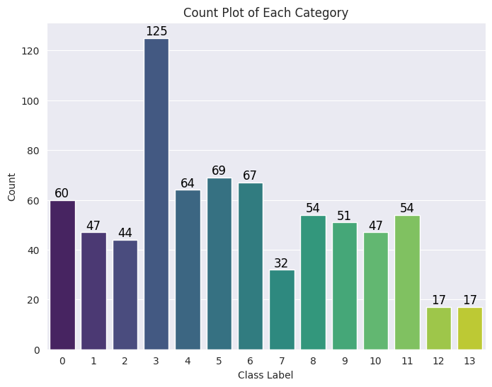
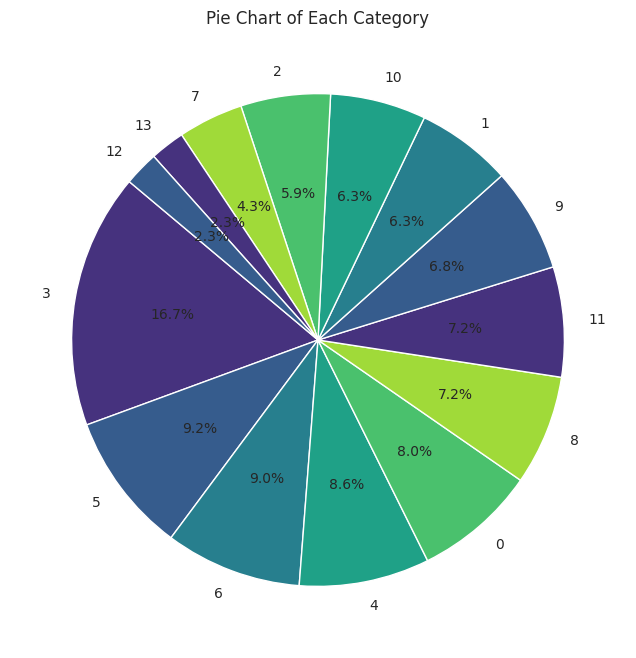
In [68]:
import random
from PIL import Image
images_per_category = 5
class_labels = df['class_label'].unique()
fig, axes = plt.subplots(len(class_labels), images_per_category, figsize=(15, 3 * len(class_labels)))
for i, class_label in enumerate(class_labels):
class_images = df[df['class_label'] == class_label]['image_path'].tolist()
sampled_images = random.sample(class_images, min(images_per_category, len(class_images)))
for j, image_path in enumerate(sampled_images):
img = Image.open(image_path)
axes[i, j].imshow(img)
axes[i, j].axis('off')
if j == 0:
axes[i, j].set_ylabel(f"Class {class_label}", rotation=0, labelpad=50, fontsize=12, ha='right', va='center')
plt.tight_layout()
plt.show()

In [69]:
from imblearn.over_sampling import RandomOverSampler
In [70]:
ros = RandomOverSampler(random_state=42)
X_resampled, y_resampled = ros.fit_resample(df[['image_path']], df['class_label'])
In [71]:
df_resampled = pd.DataFrame(X_resampled, columns=['image_path'])
df_resampled['class_label'] = y_resampled
In [72]:
print("\nClass distribution after oversampling:")
print(df_resampled['class_label'].value_counts())
Class distribution after oversampling: class_label 2 125 10 125 9 125 4 125 5 125 8 125 1 125 13 125 0 125 3 125 11 125 6 125 7 125 12 125 Name: count, dtype: int64
In [73]:
df_resampled
Out[73]:
| image_path | class_label | |
|---|---|---|
| 0 | /kaggle/input/remote-sensing-satellite-images/... | 2 |
| 1 | /kaggle/input/remote-sensing-satellite-images/... | 10 |
| 2 | /kaggle/input/remote-sensing-satellite-images/... | 9 |
| 3 | /kaggle/input/remote-sensing-satellite-images/... | 4 |
| 4 | /kaggle/input/remote-sensing-satellite-images/... | 5 |
| ... | ... | ... |
| 1745 | /kaggle/input/remote-sensing-satellite-images/... | 13 |
| 1746 | /kaggle/input/remote-sensing-satellite-images/... | 13 |
| 1747 | /kaggle/input/remote-sensing-satellite-images/... | 13 |
| 1748 | /kaggle/input/remote-sensing-satellite-images/... | 13 |
| 1749 | /kaggle/input/remote-sensing-satellite-images/... | 13 |
1750 rows × 2 columns
In [74]:
import time
import shutil
import pathlib
import itertools
from PIL import Image
import cv2
import seaborn as sns
sns.set_style('darkgrid')
import matplotlib.pyplot as plt
from sklearn.model_selection import train_test_split
from sklearn.metrics import confusion_matrix, classification_report
import tensorflow as tf
from tensorflow import keras
from tensorflow.keras.models import Sequential
from tensorflow.keras.optimizers import Adam, Adamax
from tensorflow.keras.preprocessing.image import ImageDataGenerator
from tensorflow.keras.layers import Conv2D, MaxPooling2D, Flatten, Dense, Activation, Dropout, BatchNormalization
from tensorflow.keras import regularizers
import warnings
warnings.filterwarnings("ignore")
print ('check')
check
In [75]:
df_resampled['class_label'] = df_resampled['class_label'].astype(str)
In [76]:
train_df_new, temp_df_new = train_test_split(
df_resampled,
train_size=0.8,
shuffle=True,
random_state=42,
stratify=df_resampled['class_label']
)
valid_df_new, test_df_new = train_test_split(
temp_df_new,
test_size=0.5,
shuffle=True,
random_state=42,
stratify=temp_df_new['class_label']
)
In [77]:
from tensorflow.keras.preprocessing.image import ImageDataGenerator
batch_size = 16
img_size = (224, 224)
channels = 3
img_shape = (img_size[0], img_size[1], channels)
tr_gen = ImageDataGenerator(rescale=1./255)
ts_gen = ImageDataGenerator(rescale=1./255)
train_gen_new = tr_gen.flow_from_dataframe(
train_df_new,
x_col='image_path',
y_col='class_label',
target_size=img_size,
class_mode='sparse',
color_mode='rgb',
shuffle=True,
batch_size=batch_size
)
valid_gen_new = ts_gen.flow_from_dataframe(
valid_df_new,
x_col='image_path',
y_col='class_label',
target_size=img_size,
class_mode='sparse',
color_mode='rgb',
shuffle=True,
batch_size=batch_size
)
test_gen_new = ts_gen.flow_from_dataframe(
test_df_new,
x_col='image_path',
y_col='class_label',
target_size=img_size,
class_mode='sparse',
color_mode='rgb',
shuffle=False,
batch_size=batch_size
)
Found 1400 validated image filenames belonging to 14 classes. Found 175 validated image filenames belonging to 14 classes. Found 175 validated image filenames belonging to 14 classes.
In [78]:
import tensorflow as tf
from tensorflow.keras import layers, models
from tensorflow.keras.callbacks import EarlyStopping, ModelCheckpoint
In [79]:
physical_devices = tf.config.list_physical_devices('GPU')
if physical_devices:
print("Using GPU")
else:
print("Using CPU")
Using GPU
In [80]:
early_stopping = EarlyStopping(monitor='val_loss', patience=5, restore_best_weights=True)
In [81]:
from tensorflow.keras.applications import VGG16
from tensorflow.keras.models import Model
from tensorflow.keras.layers import GlobalAveragePooling2D, Dense, Dropout, BatchNormalization, GaussianNoise, Input, MultiHeadAttention, Reshape
from tensorflow.keras.optimizers import Adam
import tensorflow as tf
def create_vgg16_model(input_shape):
inputs = Input(shape=input_shape)
base_model = VGG16(weights='imagenet', input_tensor=inputs, include_top=False)
for layer in base_model.layers:
layer.trainable = False
x = base_model.output
height, width, channels = 7, 7, 512
x = Reshape((height * width, channels))(x)
attention_output = MultiHeadAttention(num_heads=8, key_dim=channels)(x, x)
attention_output = Reshape((height, width, channels))(attention_output)
x = GaussianNoise(0.25)(attention_output)
x = GlobalAveragePooling2D()(x)
x = Dense(512, activation='relu')(x)
x = BatchNormalization()(x)
x = GaussianNoise(0.25)(x)
x = Dropout(0.25)(x)
outputs = Dense(14, activation='softmax')(x)
model = Model(inputs=inputs, outputs=outputs)
return model
input_shape = (224, 224, 3)
cnn_model = create_vgg16_model(input_shape)
cnn_model.compile(optimizer=Adam(learning_rate=0.0001),
loss='sparse_categorical_crossentropy',
metrics=['accuracy'])
In [82]:
history = cnn_model.fit(
train_gen_new,
validation_data=valid_gen_new,
epochs=5,
callbacks=[early_stopping],
verbose=1
)
Epoch 1/5 88/88 ━━━━━━━━━━━━━━━━━━━━ 23s 167ms/step - accuracy: 0.3485 - loss: 2.0396 - val_accuracy: 0.3886 - val_loss: 2.2730 Epoch 2/5 88/88 ━━━━━━━━━━━━━━━━━━━━ 8s 90ms/step - accuracy: 0.6384 - loss: 1.2135 - val_accuracy: 0.4914 - val_loss: 1.9934 Epoch 3/5 88/88 ━━━━━━━━━━━━━━━━━━━━ 8s 91ms/step - accuracy: 0.6936 - loss: 0.9943 - val_accuracy: 0.6800 - val_loss: 1.5046 Epoch 4/5 88/88 ━━━━━━━━━━━━━━━━━━━━ 8s 91ms/step - accuracy: 0.7599 - loss: 0.7450 - val_accuracy: 0.6914 - val_loss: 1.1762 Epoch 5/5 88/88 ━━━━━━━━━━━━━━━━━━━━ 8s 90ms/step - accuracy: 0.8017 - loss: 0.6267 - val_accuracy: 0.6629 - val_loss: 1.0204
In [83]:
plt.plot(history.history['accuracy'])
plt.plot(history.history['val_accuracy'])
plt.title('Model accuracy')
plt.ylabel('Accuracy')
plt.xlabel('Epoch')
plt.legend(['Train', 'Validation'], loc='upper left')
plt.show()
plt.plot(history.history['loss'])
plt.plot(history.history['val_loss'])
plt.title('Model loss')
plt.ylabel('Loss')
plt.xlabel('Epoch')
plt.legend(['Train', 'Validation'], loc='upper left')
plt.show()
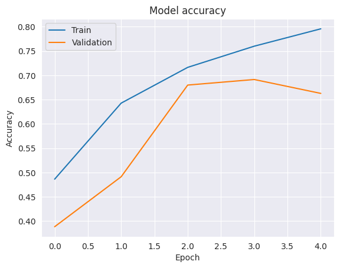
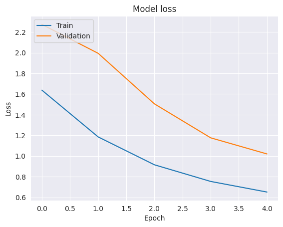
In [84]:
test_labels = test_gen_new.classes
predictions = cnn_model.predict(test_gen_new)
predicted_classes = np.argmax(predictions, axis=1)
11/11 ━━━━━━━━━━━━━━━━━━━━ 2s 125ms/step
In [85]:
report = classification_report(test_labels, predicted_classes, target_names=list(test_gen_new.class_indices.keys()))
print(report)
precision recall f1-score support
0 1.00 0.25 0.40 12
1 0.79 0.85 0.81 13
10 0.60 1.00 0.75 12
11 0.77 0.77 0.77 13
12 0.85 0.85 0.85 13
13 0.50 0.58 0.54 12
2 1.00 0.85 0.92 13
3 1.00 0.38 0.56 13
4 0.35 0.92 0.51 12
5 0.75 0.50 0.60 12
6 0.89 0.62 0.73 13
7 0.92 1.00 0.96 12
8 0.64 0.58 0.61 12
9 0.80 0.62 0.70 13
accuracy 0.70 175
macro avg 0.78 0.70 0.69 175
weighted avg 0.78 0.70 0.70 175
In [86]:
conf_matrix = confusion_matrix(test_labels, predicted_classes)
In [87]:
plt.figure(figsize=(10, 8))
sns.heatmap(conf_matrix, annot=True, fmt='d', cmap='Blues', xticklabels=list(test_gen_new.class_indices.keys()), yticklabels=list(test_gen_new.class_indices.keys()))
plt.title('Confusion Matrix')
plt.xlabel('Predicted Label')
plt.ylabel('True Label')
plt.show()
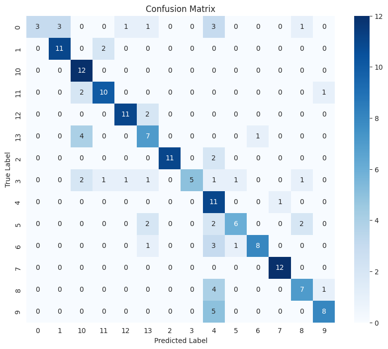
In [88]:
from tensorflow.keras.applications import VGG19
from tensorflow.keras.models import Model
from tensorflow.keras.layers import GlobalAveragePooling2D, Dense, Dropout, BatchNormalization, GaussianNoise, Input, MultiHeadAttention, Reshape
from tensorflow.keras.optimizers import Adam
import tensorflow as tf
def create_vgg19_model(input_shape):
inputs = Input(shape=input_shape)
base_model = VGG19(weights='imagenet', input_tensor=inputs, include_top=False)
for layer in base_model.layers:
layer.trainable = False
x = base_model.output
height, width, channels = 7, 7, 512
x = Reshape((height * width, channels))(x)
attention_output = MultiHeadAttention(num_heads=8, key_dim=channels)(x, x)
attention_output = Reshape((height, width, channels))(attention_output)
x = GaussianNoise(0.25)(attention_output)
x = GlobalAveragePooling2D()(x)
x = Dense(512, activation='relu')(x)
x = BatchNormalization()(x)
x = GaussianNoise(0.25)(x)
x = Dropout(0.25)(x)
outputs = Dense(14, activation='softmax')(x)
model = Model(inputs=inputs, outputs=outputs)
return model
input_shape = (224, 224, 3)
cnn_model = create_vgg19_model(input_shape)
cnn_model.compile(optimizer=Adam(learning_rate=0.0001),
loss='sparse_categorical_crossentropy',
metrics=['accuracy'])
In [89]:
history = cnn_model.fit(
train_gen_new,
validation_data=valid_gen_new,
epochs=5,
callbacks=[early_stopping],
verbose=1
)
Epoch 1/5 88/88 ━━━━━━━━━━━━━━━━━━━━ 24s 179ms/step - accuracy: 0.3077 - loss: 2.1396 - val_accuracy: 0.2800 - val_loss: 2.3190 Epoch 2/5 88/88 ━━━━━━━━━━━━━━━━━━━━ 9s 102ms/step - accuracy: 0.5888 - loss: 1.2940 - val_accuracy: 0.2743 - val_loss: 2.1177 Epoch 3/5 88/88 ━━━━━━━━━━━━━━━━━━━━ 10s 105ms/step - accuracy: 0.6390 - loss: 1.1083 - val_accuracy: 0.4057 - val_loss: 1.7282 Epoch 4/5 88/88 ━━━━━━━━━━━━━━━━━━━━ 10s 107ms/step - accuracy: 0.7429 - loss: 0.8452 - val_accuracy: 0.5886 - val_loss: 1.3326 Epoch 5/5 88/88 ━━━━━━━━━━━━━━━━━━━━ 10s 107ms/step - accuracy: 0.7924 - loss: 0.6552 - val_accuracy: 0.5829 - val_loss: 1.3261
In [90]:
plt.plot(history.history['accuracy'])
plt.plot(history.history['val_accuracy'])
plt.title('Model accuracy')
plt.ylabel('Accuracy')
plt.xlabel('Epoch')
plt.legend(['Train', 'Validation'], loc='upper left')
plt.show()
plt.plot(history.history['loss'])
plt.plot(history.history['val_loss'])
plt.title('Model loss')
plt.ylabel('Loss')
plt.xlabel('Epoch')
plt.legend(['Train', 'Validation'], loc='upper left')
plt.show()
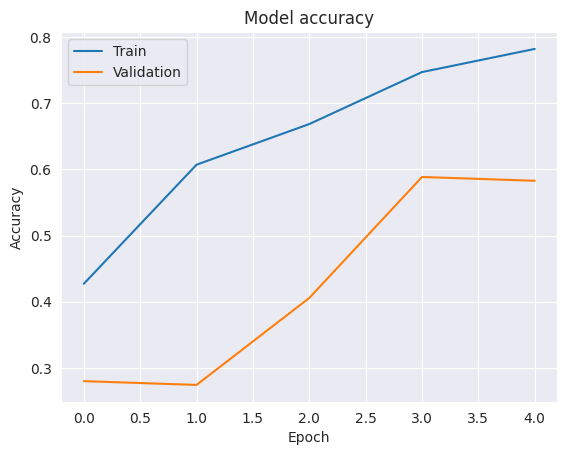
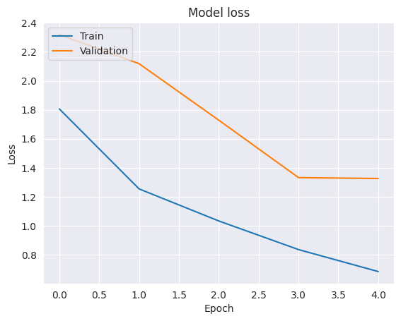
In [91]:
test_labels = test_gen_new.classes
predictions = cnn_model.predict(test_gen_new)
predicted_classes = np.argmax(predictions, axis=1)
11/11 ━━━━━━━━━━━━━━━━━━━━ 2s 142ms/step
In [92]:
report = classification_report(test_labels, predicted_classes, target_names=list(test_gen_new.class_indices.keys()))
print(report)
precision recall f1-score support
0 1.00 0.42 0.59 12
1 0.40 0.15 0.22 13
10 0.45 0.42 0.43 12
11 0.21 0.92 0.34 13
12 0.67 0.15 0.25 13
13 0.00 0.00 0.00 12
2 1.00 0.08 0.14 13
3 0.00 0.00 0.00 13
4 0.00 0.00 0.00 12
5 0.00 0.00 0.00 12
6 0.00 0.00 0.00 13
7 1.00 0.33 0.50 12
8 0.13 0.83 0.22 12
9 0.90 0.69 0.78 13
accuracy 0.29 175
macro avg 0.41 0.29 0.25 175
weighted avg 0.41 0.29 0.25 175
In [93]:
conf_matrix = confusion_matrix(test_labels, predicted_classes)
In [94]:
plt.figure(figsize=(10, 8))
sns.heatmap(conf_matrix, annot=True, fmt='d', cmap='Blues', xticklabels=list(test_gen_new.class_indices.keys()), yticklabels=list(test_gen_new.class_indices.keys()))
plt.title('Confusion Matrix')
plt.xlabel('Predicted Label')
plt.ylabel('True Label')
plt.show()
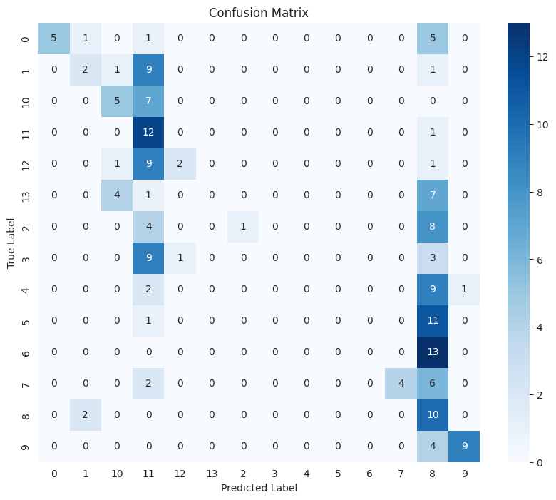
In [95]:
from tensorflow.keras.applications import InceptionV3
from tensorflow.keras.models import Model
from tensorflow.keras.layers import GlobalAveragePooling2D, Dense, Dropout, BatchNormalization, GaussianNoise, Input, MultiHeadAttention, Reshape
from tensorflow.keras.optimizers import Adam
import tensorflow as tf
def create_inceptionv3_model(input_shape):
inputs = Input(shape=input_shape)
base_model = InceptionV3(weights='imagenet', input_tensor=inputs, include_top=False)
for layer in base_model.layers:
layer.trainable = False
x = base_model.output
height, width, channels = 5, 5, 2048
x = Reshape((height * width, channels))(x)
attention_output = MultiHeadAttention(num_heads=8, key_dim=channels)(x, x)
attention_output = Reshape((height, width, channels))(attention_output)
x = GaussianNoise(0.25)(attention_output)
x = GlobalAveragePooling2D()(x)
x = Dense(512, activation='relu')(x)
x = BatchNormalization()(x)
x = GaussianNoise(0.25)(x)
x = Dropout(0.25)(x)
outputs = Dense(14, activation='softmax')(x)
model = Model(inputs=inputs, outputs=outputs)
return model
input_shape = (224, 224, 3)
cnn_model = create_inceptionv3_model(input_shape)
cnn_model.compile(optimizer=Adam(learning_rate=0.0001),
loss='sparse_categorical_crossentropy',
metrics=['accuracy'])
In [96]:
history = cnn_model.fit(
train_gen_new,
validation_data=valid_gen_new,
epochs=5,
callbacks=[early_stopping],
verbose=1
)
Epoch 1/5 88/88 ━━━━━━━━━━━━━━━━━━━━ 48s 340ms/step - accuracy: 0.4807 - loss: 1.9312 - val_accuracy: 0.5657 - val_loss: 1.7963 Epoch 2/5 88/88 ━━━━━━━━━━━━━━━━━━━━ 12s 129ms/step - accuracy: 0.8081 - loss: 0.6570 - val_accuracy: 0.5886 - val_loss: 1.4472 Epoch 3/5 88/88 ━━━━━━━━━━━━━━━━━━━━ 12s 131ms/step - accuracy: 0.8700 - loss: 0.4519 - val_accuracy: 0.6629 - val_loss: 1.2109 Epoch 4/5 88/88 ━━━━━━━━━━━━━━━━━━━━ 12s 131ms/step - accuracy: 0.8957 - loss: 0.3675 - val_accuracy: 0.5314 - val_loss: 2.7913 Epoch 5/5 88/88 ━━━━━━━━━━━━━━━━━━━━ 12s 129ms/step - accuracy: 0.9102 - loss: 0.3699 - val_accuracy: 0.4286 - val_loss: 3.7984
In [97]:
plt.plot(history.history['accuracy'])
plt.plot(history.history['val_accuracy'])
plt.title('Model accuracy')
plt.ylabel('Accuracy')
plt.xlabel('Epoch')
plt.legend(['Train', 'Validation'], loc='upper left')
plt.show()
plt.plot(history.history['loss'])
plt.plot(history.history['val_loss'])
plt.title('Model loss')
plt.ylabel('Loss')
plt.xlabel('Epoch')
plt.legend(['Train', 'Validation'], loc='upper left')
plt.show()
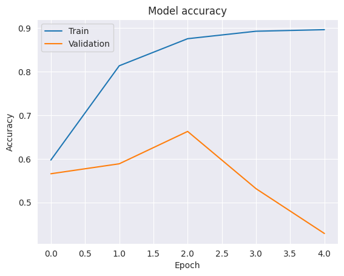
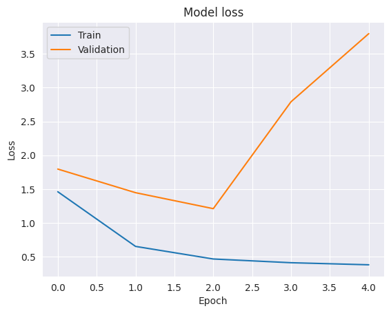
In [98]:
test_labels = test_gen_new.classes
predictions = cnn_model.predict(test_gen_new)
predicted_classes = np.argmax(predictions, axis=1)
11/11 ━━━━━━━━━━━━━━━━━━━━ 11s 570ms/step
In [99]:
report = classification_report(test_labels, predicted_classes, target_names=list(test_gen_new.class_indices.keys()))
print(report)
precision recall f1-score support
0 1.00 0.08 0.15 12
1 0.62 0.77 0.69 13
10 0.79 0.92 0.85 12
11 0.76 1.00 0.87 13
12 0.88 0.54 0.67 13
13 0.89 0.67 0.76 12
2 0.33 1.00 0.49 13
3 0.34 0.85 0.49 13
4 1.00 0.08 0.15 12
5 0.50 0.08 0.14 12
6 0.86 0.46 0.60 13
7 0.00 0.00 0.00 12
8 0.50 0.42 0.45 12
9 0.67 0.92 0.77 13
accuracy 0.57 175
macro avg 0.65 0.56 0.51 175
weighted avg 0.65 0.57 0.51 175
In [100]:
conf_matrix = confusion_matrix(test_labels, predicted_classes)
In [101]:
plt.figure(figsize=(10, 8))
sns.heatmap(conf_matrix, annot=True, fmt='d', cmap='Blues', xticklabels=list(test_gen_new.class_indices.keys()), yticklabels=list(test_gen_new.class_indices.keys()))
plt.title('Confusion Matrix')
plt.xlabel('Predicted Label')
plt.ylabel('True Label')
plt.show()
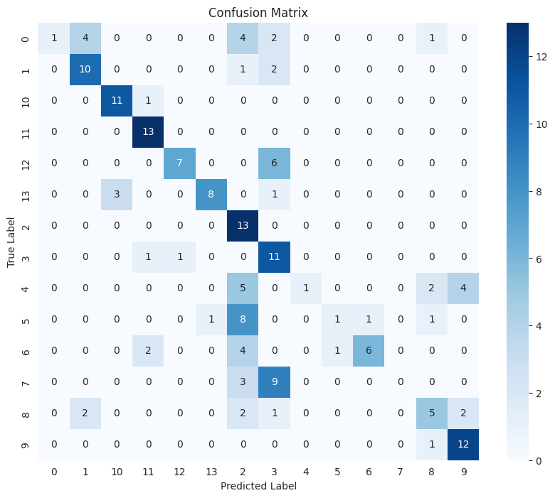
In [102]:
from tensorflow.keras.applications import Xception
from tensorflow.keras.models import Model
from tensorflow.keras.layers import GlobalAveragePooling2D, Dense, Dropout, BatchNormalization, GaussianNoise, Input, MultiHeadAttention, Reshape
from tensorflow.keras.optimizers import Adam
import tensorflow as tf
def create_xception_model(input_shape):
inputs = Input(shape=input_shape)
base_model = Xception(weights='imagenet', input_tensor=inputs, include_top=False)
for layer in base_model.layers:
layer.trainable = False
x = base_model.output
height, width, channels = 7, 7, 2048
x = Reshape((height * width, channels))(x)
attention_output = MultiHeadAttention(num_heads=8, key_dim=channels)(x, x)
attention_output = Reshape((height, width, channels))(attention_output)
x = GaussianNoise(0.25)(attention_output)
x = GlobalAveragePooling2D()(x)
x = Dense(512, activation='relu')(x)
x = BatchNormalization()(x)
x = GaussianNoise(0.25)(x)
x = Dropout(0.25)(x)
outputs = Dense(14, activation='softmax')(x)
model = Model(inputs=inputs, outputs=outputs)
return model
input_shape = (224, 224, 3)
cnn_model = create_xception_model(input_shape)
cnn_model.compile(optimizer=Adam(learning_rate=0.0001),
loss='sparse_categorical_crossentropy',
metrics=['accuracy'])
In [103]:
history = cnn_model.fit(
train_gen_new,
validation_data=valid_gen_new,
epochs=5,
callbacks=[early_stopping],
verbose=1
)
Epoch 1/5 88/88 ━━━━━━━━━━━━━━━━━━━━ 43s 345ms/step - accuracy: 0.5023 - loss: 1.7452 - val_accuracy: 0.5200 - val_loss: 1.5167 Epoch 2/5 88/88 ━━━━━━━━━━━━━━━━━━━━ 21s 238ms/step - accuracy: 0.8033 - loss: 0.6875 - val_accuracy: 0.7600 - val_loss: 0.8965 Epoch 3/5 88/88 ━━━━━━━━━━━━━━━━━━━━ 21s 232ms/step - accuracy: 0.8390 - loss: 0.5244 - val_accuracy: 0.8000 - val_loss: 0.7940 Epoch 4/5 88/88 ━━━━━━━━━━━━━━━━━━━━ 20s 226ms/step - accuracy: 0.8884 - loss: 0.3722 - val_accuracy: 0.7714 - val_loss: 0.7607 Epoch 5/5 88/88 ━━━━━━━━━━━━━━━━━━━━ 20s 218ms/step - accuracy: 0.8929 - loss: 0.3921 - val_accuracy: 0.7657 - val_loss: 0.7880
In [104]:
plt.plot(history.history['accuracy'])
plt.plot(history.history['val_accuracy'])
plt.title('Model accuracy')
plt.ylabel('Accuracy')
plt.xlabel('Epoch')
plt.legend(['Train', 'Validation'], loc='upper left')
plt.show()
plt.plot(history.history['loss'])
plt.plot(history.history['val_loss'])
plt.title('Model loss')
plt.ylabel('Loss')
plt.xlabel('Epoch')
plt.legend(['Train', 'Validation'], loc='upper left')
plt.show()
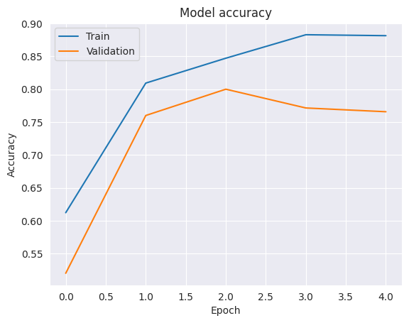
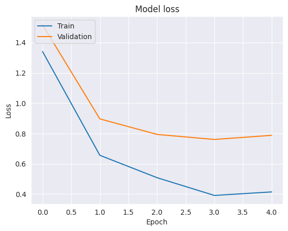
In [105]:
test_labels = test_gen_new.classes
predictions = cnn_model.predict(test_gen_new)
predicted_classes = np.argmax(predictions, axis=1)
11/11 ━━━━━━━━━━━━━━━━━━━━ 6s 335ms/step
In [106]:
report = classification_report(test_labels, predicted_classes, target_names=list(test_gen_new.class_indices.keys()))
print(report)
precision recall f1-score support
0 0.75 0.75 0.75 12
1 1.00 0.85 0.92 13
10 0.79 0.92 0.85 12
11 0.92 0.92 0.92 13
12 1.00 1.00 1.00 13
13 0.80 0.67 0.73 12
2 1.00 1.00 1.00 13
3 0.75 0.69 0.72 13
4 1.00 0.67 0.80 12
5 0.55 0.50 0.52 12
6 0.46 0.92 0.62 13
7 0.86 0.50 0.63 12
8 0.75 0.50 0.60 12
9 0.71 0.92 0.80 13
accuracy 0.78 175
macro avg 0.81 0.77 0.78 175
weighted avg 0.81 0.78 0.78 175
In [107]:
conf_matrix = confusion_matrix(test_labels, predicted_classes)
In [108]:
plt.figure(figsize=(10, 8))
sns.heatmap(conf_matrix, annot=True, fmt='d', cmap='Blues', xticklabels=list(test_gen_new.class_indices.keys()), yticklabels=list(test_gen_new.class_indices.keys()))
plt.title('Confusion Matrix')
plt.xlabel('Predicted Label')
plt.ylabel('True Label')
plt.show()
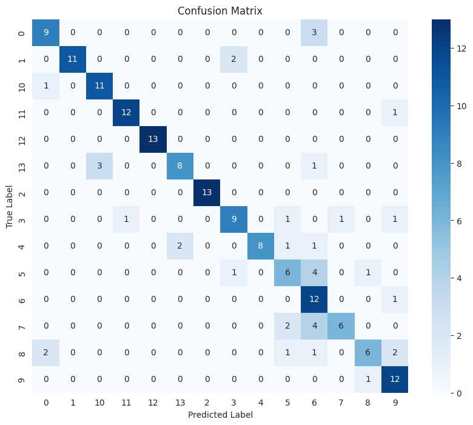
In [109]:
import matplotlib.pyplot as plt
import numpy as np
labels = [str(i) for i in range(10)]
vgg16_precision = [1.00, 0.79, 0.60, 0.77, 0.85, 0.50, 1.00, 1.00, 0.35, 0.75]
vgg16_recall = [0.25, 0.85, 1.00, 0.77, 0.85, 0.58, 0.85, 0.38, 0.92, 0.50]
vgg16_f1 = [0.40, 0.81, 0.75, 0.77, 0.85, 0.54, 0.92, 0.56, 0.51, 0.60]
vgg19_precision = [1.00, 0.40, 0.45, 0.21, 0.67, 0.00, 1.00, 0.00, 0.00, 0.90]
vgg19_recall = [0.42, 0.15, 0.42, 0.92, 0.15, 0.00, 0.08, 0.00, 0.00, 0.69]
vgg19_f1 = [0.59, 0.22, 0.43, 0.34, 0.25, 0.00, 0.14, 0.00, 0.00, 0.78]
inceptionv3_precision = [1.00, 0.62, 0.79, 0.76, 0.88, 0.89, 0.33, 0.34, 1.00, 0.50]
inceptionv3_recall = [0.08, 0.77, 0.92, 1.00, 0.54, 0.67, 1.00, 0.85, 0.08, 0.42]
inceptionv3_f1 = [0.15, 0.69, 0.85, 0.87, 0.67, 0.76, 0.49, 0.49, 0.15, 0.77]
xception_precision = [0.75, 1.00, 0.79, 0.92, 1.00, 0.80, 1.00, 0.75, 1.00, 0.71]
xception_recall = [0.75, 0.85, 0.92, 0.92, 1.00, 0.67, 1.00, 0.69, 0.67, 0.92]
xception_f1 = [0.75, 0.92, 0.85, 0.92, 1.00, 0.73, 1.00, 0.72, 0.80, 0.80]
fig, ax = plt.subplots(1, 3, figsize=(18, 6))
models = ['VGG16', 'VGG19', 'InceptionV3', 'Xception']
precision_data = [vgg16_precision, vgg19_precision, inceptionv3_precision, xception_precision]
recall_data = [vgg16_recall, vgg19_recall, inceptionv3_recall, xception_recall]
f1_data = [vgg16_f1, vgg19_f1, inceptionv3_f1, xception_f1]
x = np.arange(len(labels))
width = 0.2
for i, model in enumerate(models):
ax[0].bar(x + i * width - 1.5 * width, precision_data[i], width, label=model)
for i, model in enumerate(models):
ax[1].bar(x + i * width - 1.5 * width, recall_data[i], width, label=model)
for i, model in enumerate(models):
ax[2].bar(x + i * width - 1.5 * width, f1_data[i], width, label=model)
for i in range(3):
ax[i].set_xlabel('Classes')
ax[i].set_ylabel('Scores')
ax[i].set_title(f'{models[i]} Results')
ax[i].set_xticks(x)
ax[i].set_xticklabels(labels)
ax[i].legend()
plt.tight_layout()
plt.show()
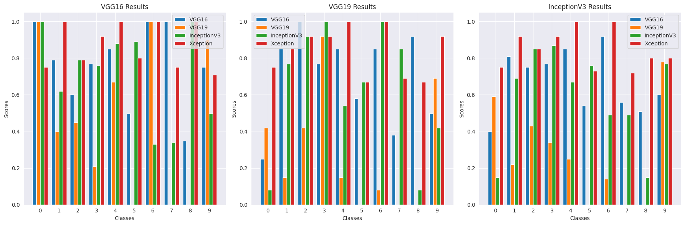